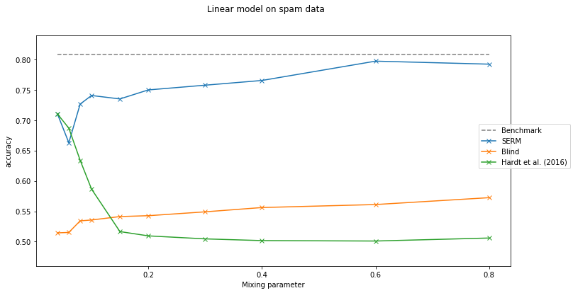

Vanilla vs Hardt¶
Imports and Definitions¶
[1]:
import os
import torch
import numpy as np
import cvxpy as cp
import pandas as pd
from lib.StrategicModel import StrategicModel
import DataGeneration as data
#import Presentation
torch.set_default_dtype(torch.float64)
torch.manual_seed(0)
np.random.seed(0)
PATH = "./Results/vanilla_vs_hardt_orig"
if not os.path.exists(PATH):
os.makedirs(PATH)
Data Loading¶
[2]:
X, Y = data.load_spam_data()
X, Y, Xval, Yval, Xtest, Ytest = data.split_validation_test(X, Y)
Training¶
[3]:
x_dim = len(X[0])
epochs = 16
batch_size = 128
v = torch.tensor([-1,-1,-1,-1,-1,-1,-1,1,1,0.1,1,0.1,0.1,1,0.1])
small_eps = 0.04
epsilons = [small_eps, 0.06, 0.08, 0.1, 0.15, 0.2, 0.3, 0.4, 0.6, 0.8, 0.95, 0.99]
[4]:
results = {
"epsilons": [],
"benchmark": [],
"SERM": [],
"blind": [],
"Hardt": []
}
print(f"---------- Training Hardt et al's model (strategic with eps={small_eps}) ----------")
torch.manual_seed(0)
np.random.seed(0)
model_name = "strategic_approx"
strategic_model_approx = StrategicModel(x_dim, batch_size, cost_fn="linear", cost_const_kwargs={"v": v, "epsilon": small_eps, "scale":0.35}, eval_slope = 4, strategic=True)
strategic_model_approx.fit(X, Y, Xval, Yval, opt_class=torch.optim.Adam, opt_kwargs={"lr": 2e-1}, epochs=epochs, verbose="batches", path=PATH, model_name=model_name)
for eps in epsilons:
print(f"------------------------- {eps} -------------------------")
# Non-strategic classification
print(f"---------- Training non-strategically with epsilon={eps} ----------")
torch.manual_seed(0)
np.random.seed(0)
model_name = f"non_strategic_{eps}"
non_strategic_model = StrategicModel(x_dim, batch_size, cost_fn="linear", cost_const_kwargs={"v": v, "epsilon": eps, "scale":0.35}, eval_slope = 4, strategic=False)
non_strategic_model.fit(X, Y, Xval, Yval, opt_class=torch.optim.Adam, opt_kwargs={"lr": 2e-1}, epochs=epochs, verbose="batches", path=PATH, model_name=model_name)
non_strategic_model = StrategicModel(x_dim, batch_size, cost_fn="linear", cost_const_kwargs={"v": v, "epsilon": eps, "scale":0.35}, eval_slope = 4, strategic=False)
non_strategic_model.load_model(PATH, model_name)
non_strategic_model.normalize_parameters()
# Strategic classification
print(f"---------- Training strategically with epsilon={eps} ----------")
torch.manual_seed(0)
np.random.seed(0)
model_name = f"strategic_real_{eps}"
strategic_model_real = StrategicModel(x_dim, batch_size, cost_fn="linear", cost_const_kwargs={"v": v, "epsilon": eps, "scale":0.35}, eval_slope = 4, strategic=True)
strategic_model_real.fit(X, Y, Xval, Yval, opt_class=torch.optim.Adam, opt_kwargs={"lr": 2e-1}, epochs=epochs, verbose="batches", path=PATH, model_name=model_name)
strategic_model_real = StrategicModel(x_dim, batch_size, cost_fn="linear", cost_const_kwargs={"v": v, "epsilon": eps, "scale":0.35}, eval_slope = 4, strategic=True)
strategic_model_real.load_model(PATH, model_name)
# Approximate strategic classification (set evaluation epsilon to eps)
model_name = "strategic_approx"
strategic_model_approx = StrategicModel(x_dim, batch_size, cost_fn="linear", cost_const_kwargs={"v": v, "epsilon": eps, "scale":0.35}, eval_slope = 4, strategic=True)
strategic_model_approx.load_model(PATH, model_name)
# Calculate results
print("---------- Calculating results ----------")
results["epsilons"].append(eps)
# Non-strategic model & non-strategic data - Benchmark
results["benchmark"].append(non_strategic_model.evaluate(Xtest, Ytest, strategic_data=False))
# Approx strategic model & strategic data - Hardt et al
results["Hardt"].append(strategic_model_approx.evaluate(Xtest, Ytest, strategic_data=True))
# Real strategic model & strategic data - SERM
results["SERM"].append(strategic_model_real.evaluate(Xtest, Ytest, strategic_data=True))
# Non-strategic model & strategic data - Blind
results["blind"].append(non_strategic_model.evaluate(Xtest, Ytest, strategic_data=True))
pd.DataFrame(results).to_csv(f"{PATH}/results.csv")
---------- Training Hardt et al's model (strategic with eps=0.04) ----------
Starting epoch 001 / 016.
Ended batch 001 / 034 | loss: 0.96494 | error: 0.46094
Ended batch 002 / 034 | loss: 0.99688 | error: 0.48438
Ended batch 003 / 034 | loss: 1.00848 | error: 0.52344
Ended batch 004 / 034 | loss: 1.01666 | error: 0.52344
Ended batch 005 / 034 | loss: 0.99586 | error: 0.47656
Ended batch 006 / 034 | loss: 0.91422 | error: 0.46875
Ended batch 007 / 034 | loss: 1.08640 | error: 0.58594
Ended batch 008 / 034 | loss: 0.91806 | error: 0.31250
Ended batch 009 / 034 | loss: 0.85547 | error: 0.46094
Ended batch 010 / 034 | loss: 0.84307 | error: 0.42188
Ended batch 011 / 034 | loss: 0.88342 | error: 0.47656
Ended batch 012 / 034 | loss: 1.20697 | error: 0.61719
Ended batch 013 / 034 | loss: 0.86470 | error: 0.45312
Ended batch 014 / 034 | loss: 0.85290 | error: 0.42188
Ended batch 015 / 034 | loss: 0.85567 | error: 0.45312
Ended batch 016 / 034 | loss: 0.77038 | error: 0.38281
Ended batch 017 / 034 | loss: 0.78940 | error: 0.41406
Ended batch 018 / 034 | loss: 0.79044 | error: 0.38281
C:\Users\mmakhlevich\Anaconda3\envs\SCMP_setup\lib\site-packages\cvxpy\problems\problem.py:1055: UserWarning: Solution may be inaccurate. Try another solver, adjusting the solver settings, or solve with verbose=True for more information.
"Solution may be inaccurate. Try another solver, "
Ended batch 019 / 034 | loss: 0.74027 | error: 0.37500
Ended batch 020 / 034 | loss: 0.94829 | error: 0.45312
Ended batch 021 / 034 | loss: 0.91169 | error: 0.45312
Ended batch 022 / 034 | loss: 0.70683 | error: 0.33594
Ended batch 023 / 034 | loss: 0.70030 | error: 0.34375
Ended batch 024 / 034 | loss: 0.75500 | error: 0.37500
Ended batch 025 / 034 | loss: 0.80582 | error: 0.40625
Ended batch 026 / 034 | loss: 0.84008 | error: 0.42188
Ended batch 027 / 034 | loss: 0.66407 | error: 0.32031
Ended batch 028 / 034 | loss: 0.78769 | error: 0.38281
Ended batch 029 / 034 | loss: 0.59008 | error: 0.29688
Ended batch 030 / 034 | loss: 0.68286 | error: 0.34375
Ended batch 031 / 034 | loss: 0.75378 | error: 0.36719
Ended batch 032 / 034 | loss: 0.83983 | error: 0.42188
Ended batch 033 / 034 | loss: 0.71213 | error: 0.32031
Ended batch 034 / 034 | loss: 0.82168 | error: 0.40909
Finished training step, calculating validation loss and accuracy.
Ended epoch 001 / 016 | time: 087 sec | loss: 1.43306 | error: 0.48168
Model saved to ./Results/vanilla_vs_hardt_orig/strategic_approx_model.pt.
Starting epoch 002 / 016.
Ended batch 001 / 034 | loss: 0.71014 | error: 0.32812
Ended batch 002 / 034 | loss: 0.68812 | error: 0.34375
Ended batch 003 / 034 | loss: 0.84963 | error: 0.42188
Ended batch 004 / 034 | loss: 0.74797 | error: 0.37500
Ended batch 005 / 034 | loss: 0.71079 | error: 0.36719
Ended batch 006 / 034 | loss: 0.60290 | error: 0.28906
Ended batch 007 / 034 | loss: 0.94481 | error: 0.49219
Ended batch 008 / 034 | loss: 0.62368 | error: 0.29688
Ended batch 009 / 034 | loss: 0.80506 | error: 0.40625
Ended batch 010 / 034 | loss: 0.70240 | error: 0.35156
Ended batch 011 / 034 | loss: 0.71410 | error: 0.36719
Ended batch 012 / 034 | loss: 0.97903 | error: 0.50781
Ended batch 013 / 034 | loss: 0.82469 | error: 0.42188
Ended batch 014 / 034 | loss: 0.84280 | error: 0.39062
Ended batch 015 / 034 | loss: 0.71334 | error: 0.35156
Ended batch 016 / 034 | loss: 0.75410 | error: 0.38281
Ended batch 017 / 034 | loss: 0.75663 | error: 0.39844
Ended batch 018 / 034 | loss: 0.74189 | error: 0.38281
Ended batch 019 / 034 | loss: 0.72406 | error: 0.37500
Ended batch 020 / 034 | loss: 0.87572 | error: 0.43750
Ended batch 021 / 034 | loss: 0.82388 | error: 0.42969
Ended batch 022 / 034 | loss: 0.72487 | error: 0.34375
Ended batch 023 / 034 | loss: 0.77476 | error: 0.39844
Ended batch 024 / 034 | loss: 0.81467 | error: 0.42969
Ended batch 025 / 034 | loss: 0.86980 | error: 0.45312
Ended batch 026 / 034 | loss: 0.83749 | error: 0.43750
Ended batch 027 / 034 | loss: 0.81631 | error: 0.42969
Ended batch 028 / 034 | loss: 0.85782 | error: 0.44531
Ended batch 029 / 034 | loss: 0.78449 | error: 0.42188
Ended batch 030 / 034 | loss: 0.72524 | error: 0.35938
Ended batch 031 / 034 | loss: 0.76233 | error: 0.38281
Ended batch 032 / 034 | loss: 0.89629 | error: 0.46875
Ended batch 033 / 034 | loss: 0.79128 | error: 0.40625
Ended batch 034 / 034 | loss: 0.97334 | error: 0.50000
Finished training step, calculating validation loss and accuracy.
Ended epoch 002 / 016 | time: 096 sec | loss: 0.89009 | error: 0.33129
Validation accuracy improved.
Model saved to ./Results/vanilla_vs_hardt_orig/strategic_approx_model.pt.
Starting epoch 003 / 016.
Ended batch 001 / 034 | loss: 0.80799 | error: 0.41406
Ended batch 002 / 034 | loss: 0.81389 | error: 0.42969
Ended batch 003 / 034 | loss: 0.79005 | error: 0.41406
Ended batch 004 / 034 | loss: 0.72124 | error: 0.38281
Ended batch 005 / 034 | loss: 0.75947 | error: 0.39062
Ended batch 006 / 034 | loss: 0.70042 | error: 0.36719
Ended batch 007 / 034 | loss: 0.96865 | error: 0.52344
Ended batch 008 / 034 | loss: 0.78152 | error: 0.41406
Ended batch 009 / 034 | loss: 0.83253 | error: 0.45312
Ended batch 010 / 034 | loss: 0.73690 | error: 0.35938
Ended batch 011 / 034 | loss: 0.73490 | error: 0.37500
Ended batch 012 / 034 | loss: 1.02097 | error: 0.56250
Ended batch 013 / 034 | loss: 0.78434 | error: 0.41406
Ended batch 014 / 034 | loss: 0.81976 | error: 0.39844
Ended batch 015 / 034 | loss: 0.81764 | error: 0.44531
Ended batch 016 / 034 | loss: 0.75620 | error: 0.39062
Ended batch 017 / 034 | loss: 0.78410 | error: 0.42969
Ended batch 018 / 034 | loss: 0.76357 | error: 0.39062
Ended batch 019 / 034 | loss: 0.73693 | error: 0.37500
Ended batch 020 / 034 | loss: 0.88027 | error: 0.45312
Ended batch 021 / 034 | loss: 0.86517 | error: 0.46094
Ended batch 022 / 034 | loss: 0.72839 | error: 0.35938
Ended batch 023 / 034 | loss: 0.80574 | error: 0.42969
Ended batch 024 / 034 | loss: 0.87584 | error: 0.47656
Ended batch 025 / 034 | loss: 0.86298 | error: 0.46094
Ended batch 026 / 034 | loss: 0.82500 | error: 0.42969
Ended batch 027 / 034 | loss: 0.81310 | error: 0.42188
Ended batch 028 / 034 | loss: 0.84260 | error: 0.44531
Ended batch 029 / 034 | loss: 0.78089 | error: 0.42969
Ended batch 030 / 034 | loss: 0.74504 | error: 0.35156
Ended batch 031 / 034 | loss: 0.78010 | error: 0.39844
Ended batch 032 / 034 | loss: 0.94273 | error: 0.50000
Ended batch 033 / 034 | loss: 0.81215 | error: 0.42188
Ended batch 034 / 034 | loss: 0.96687 | error: 0.50000
Finished training step, calculating validation loss and accuracy.
Ended epoch 003 / 016 | time: 085 sec | loss: 0.74237 | error: 0.28116
Validation accuracy improved.
Model saved to ./Results/vanilla_vs_hardt_orig/strategic_approx_model.pt.
Starting epoch 004 / 016.
Ended batch 001 / 034 | loss: 0.82652 | error: 0.42969
Ended batch 002 / 034 | loss: 0.81662 | error: 0.43750
Ended batch 003 / 034 | loss: 0.80280 | error: 0.41406
Ended batch 004 / 034 | loss: 0.71840 | error: 0.29688
Ended batch 005 / 034 | loss: 0.77116 | error: 0.31250
Ended batch 006 / 034 | loss: 0.71170 | error: 0.30469
Ended batch 007 / 034 | loss: 0.98730 | error: 0.55469
Ended batch 008 / 034 | loss: 0.78063 | error: 0.41406
Ended batch 009 / 034 | loss: 0.80283 | error: 0.40625
Ended batch 010 / 034 | loss: 0.73789 | error: 0.31250
Ended batch 011 / 034 | loss: 0.75107 | error: 0.32031
Ended batch 012 / 034 | loss: 0.99360 | error: 0.57031
Ended batch 013 / 034 | loss: 0.78544 | error: 0.41406
Ended batch 014 / 034 | loss: 0.81457 | error: 0.39844
Ended batch 015 / 034 | loss: 0.83754 | error: 0.45312
Ended batch 016 / 034 | loss: 0.80697 | error: 0.42969
Ended batch 017 / 034 | loss: 0.79117 | error: 0.42969
Ended batch 018 / 034 | loss: 0.75421 | error: 0.38281
Ended batch 019 / 034 | loss: 0.73019 | error: 0.37500
Ended batch 020 / 034 | loss: 0.90337 | error: 0.45312
Ended batch 021 / 034 | loss: 0.85935 | error: 0.45312
Ended batch 022 / 034 | loss: 0.72854 | error: 0.35156
Ended batch 023 / 034 | loss: 0.76676 | error: 0.39844
Ended batch 024 / 034 | loss: 0.83072 | error: 0.44531
Ended batch 025 / 034 | loss: 0.87638 | error: 0.46094
Ended batch 026 / 034 | loss: 0.82889 | error: 0.43750
Ended batch 027 / 034 | loss: 0.80714 | error: 0.42969
Ended batch 028 / 034 | loss: 0.84928 | error: 0.44531
Ended batch 029 / 034 | loss: 0.76407 | error: 0.41406
Ended batch 030 / 034 | loss: 0.73295 | error: 0.35938
Ended batch 031 / 034 | loss: 0.77663 | error: 0.39844
Ended batch 032 / 034 | loss: 0.95876 | error: 0.50000
Ended batch 033 / 034 | loss: 0.80013 | error: 0.41406
Ended batch 034 / 034 | loss: 0.96461 | error: 0.50000
Finished training step, calculating validation loss and accuracy.
Ended epoch 004 / 016 | time: 081 sec | loss: 0.84620 | error: 0.32413
Starting epoch 005 / 016.
Ended batch 001 / 034 | loss: 0.81715 | error: 0.41406
Ended batch 002 / 034 | loss: 0.80812 | error: 0.34375
Ended batch 003 / 034 | loss: 0.78127 | error: 0.33594
Ended batch 004 / 034 | loss: 0.70067 | error: 0.24219
Ended batch 005 / 034 | loss: 0.77019 | error: 0.34375
Ended batch 006 / 034 | loss: 0.70466 | error: 0.36719
Ended batch 007 / 034 | loss: 1.05862 | error: 0.56250
Ended batch 008 / 034 | loss: 0.80502 | error: 0.42969
Ended batch 009 / 034 | loss: 0.82630 | error: 0.45312
Ended batch 010 / 034 | loss: 0.73522 | error: 0.30469
Ended batch 011 / 034 | loss: 0.73392 | error: 0.28906
Ended batch 012 / 034 | loss: 0.93675 | error: 0.53906
Ended batch 013 / 034 | loss: 0.80000 | error: 0.39844
Ended batch 014 / 034 | loss: 0.82583 | error: 0.39062
Ended batch 015 / 034 | loss: 0.83293 | error: 0.44531
Ended batch 016 / 034 | loss: 0.84542 | error: 0.43750
Ended batch 017 / 034 | loss: 0.80437 | error: 0.42969
Ended batch 018 / 034 | loss: 0.76516 | error: 0.38281
Ended batch 019 / 034 | loss: 0.73493 | error: 0.28906
Ended batch 020 / 034 | loss: 0.83569 | error: 0.42969
Ended batch 021 / 034 | loss: 0.84566 | error: 0.44531
Ended batch 022 / 034 | loss: 0.71098 | error: 0.35938
Ended batch 023 / 034 | loss: 0.79004 | error: 0.40625
Ended batch 024 / 034 | loss: 0.82193 | error: 0.43750
Ended batch 025 / 034 | loss: 0.83689 | error: 0.43750
Ended batch 026 / 034 | loss: 0.83609 | error: 0.42188
Ended batch 027 / 034 | loss: 0.74078 | error: 0.35938
Ended batch 028 / 034 | loss: 0.85460 | error: 0.44531
Ended batch 029 / 034 | loss: 0.79550 | error: 0.42969
Ended batch 030 / 034 | loss: 0.72406 | error: 0.37500
Ended batch 031 / 034 | loss: 0.78955 | error: 0.40625
Ended batch 032 / 034 | loss: 0.90490 | error: 0.47656
Ended batch 033 / 034 | loss: 0.76286 | error: 0.37500
Ended batch 034 / 034 | loss: 0.94931 | error: 0.50000
Finished training step, calculating validation loss and accuracy.
Ended epoch 005 / 016 | time: 084 sec | loss: 1.09374 | error: 0.44913
Starting epoch 006 / 016.
Ended batch 001 / 034 | loss: 0.81815 | error: 0.32812
Ended batch 002 / 034 | loss: 0.79993 | error: 0.34375
Ended batch 003 / 034 | loss: 0.80088 | error: 0.41406
Ended batch 004 / 034 | loss: 0.73627 | error: 0.39062
Ended batch 005 / 034 | loss: 0.78164 | error: 0.40625
Ended batch 006 / 034 | loss: 0.71327 | error: 0.37500
Ended batch 007 / 034 | loss: 1.04641 | error: 0.55469
Ended batch 008 / 034 | loss: 0.78629 | error: 0.41406
Ended batch 009 / 034 | loss: 0.80647 | error: 0.43750
Ended batch 010 / 034 | loss: 0.74321 | error: 0.29688
Ended batch 011 / 034 | loss: 0.74502 | error: 0.33594
Ended batch 012 / 034 | loss: 1.01662 | error: 0.57031
Ended batch 013 / 034 | loss: 0.80587 | error: 0.42188
Ended batch 014 / 034 | loss: 0.82250 | error: 0.39062
Ended batch 015 / 034 | loss: 0.78143 | error: 0.41406
Ended batch 016 / 034 | loss: 0.75561 | error: 0.39062
Ended batch 017 / 034 | loss: 0.80009 | error: 0.42969
Ended batch 018 / 034 | loss: 0.75066 | error: 0.39062
Ended batch 019 / 034 | loss: 0.72123 | error: 0.37500
Ended batch 020 / 034 | loss: 0.86871 | error: 0.43750
Ended batch 021 / 034 | loss: 0.84328 | error: 0.44531
Ended batch 022 / 034 | loss: 0.73992 | error: 0.35156
Ended batch 023 / 034 | loss: 0.76577 | error: 0.39844
Ended batch 024 / 034 | loss: 0.90725 | error: 0.46875
Ended batch 025 / 034 | loss: 0.88888 | error: 0.46094
Ended batch 026 / 034 | loss: 0.84241 | error: 0.42969
Ended batch 027 / 034 | loss: 0.78244 | error: 0.35938
Ended batch 028 / 034 | loss: 0.86176 | error: 0.43750
Ended batch 029 / 034 | loss: 0.79375 | error: 0.42969
Ended batch 030 / 034 | loss: 0.74313 | error: 0.38281
Ended batch 031 / 034 | loss: 0.81632 | error: 0.42188
Ended batch 032 / 034 | loss: 0.89675 | error: 0.47656
Ended batch 033 / 034 | loss: 0.79678 | error: 0.35156
Ended batch 034 / 034 | loss: 0.93325 | error: 0.40909
Finished training step, calculating validation loss and accuracy.
Ended epoch 006 / 016 | time: 072 sec | loss: 1.10171 | error: 0.46150
Starting epoch 007 / 016.
Ended batch 001 / 034 | loss: 0.80908 | error: 0.30469
Ended batch 002 / 034 | loss: 0.82790 | error: 0.43750
Ended batch 003 / 034 | loss: 0.84542 | error: 0.44531
Ended batch 004 / 034 | loss: 0.85384 | error: 0.44531
Ended batch 005 / 034 | loss: 0.78535 | error: 0.40625
Ended batch 006 / 034 | loss: 0.71761 | error: 0.32812
Ended batch 007 / 034 | loss: 0.92292 | error: 0.53125
Ended batch 008 / 034 | loss: 0.72912 | error: 0.31250
Ended batch 009 / 034 | loss: 0.80480 | error: 0.42969
Ended batch 010 / 034 | loss: 0.76448 | error: 0.39062
Ended batch 011 / 034 | loss: 0.76753 | error: 0.40625
Ended batch 012 / 034 | loss: 1.16785 | error: 0.59375
Ended batch 013 / 034 | loss: 0.80443 | error: 0.42188
Ended batch 014 / 034 | loss: 0.85136 | error: 0.35156
Ended batch 015 / 034 | loss: 0.74429 | error: 0.32031
Ended batch 016 / 034 | loss: 0.76222 | error: 0.39062
Ended batch 017 / 034 | loss: 0.79982 | error: 0.42969
Ended batch 018 / 034 | loss: 0.77596 | error: 0.39844
Ended batch 019 / 034 | loss: 0.72225 | error: 0.37500
Ended batch 020 / 034 | loss: 0.85000 | error: 0.42969
Ended batch 021 / 034 | loss: 0.82265 | error: 0.42969
Ended batch 022 / 034 | loss: 0.72665 | error: 0.34375
Ended batch 023 / 034 | loss: 0.76845 | error: 0.39844
Ended batch 024 / 034 | loss: 0.83491 | error: 0.43750
Ended batch 025 / 034 | loss: 0.86042 | error: 0.44531
Ended batch 026 / 034 | loss: 0.82173 | error: 0.42969
Ended batch 027 / 034 | loss: 0.75199 | error: 0.37500
Ended batch 028 / 034 | loss: 0.84716 | error: 0.43750
Ended batch 029 / 034 | loss: 0.78196 | error: 0.42188
Ended batch 030 / 034 | loss: 0.70013 | error: 0.35938
Ended batch 031 / 034 | loss: 0.77579 | error: 0.39844
Ended batch 032 / 034 | loss: 0.90325 | error: 0.47656
Ended batch 033 / 034 | loss: 0.77318 | error: 0.37500
Ended batch 034 / 034 | loss: 0.94690 | error: 0.50000
Finished training step, calculating validation loss and accuracy.
Ended epoch 007 / 016 | time: 082 sec | loss: 1.15552 | error: 0.46475
Ending training due to 4 consecutive epochs without improvement in validation accuracy.
Total training time: 9.769119397799175 minutes (586.1471638679504 seconds).
Model loaded from ./Results/vanilla_vs_hardt_orig/strategic_approx_model.pt.
------------------------- 0.04 -------------------------
---------- Training non-strategically with epsilon=0.04 ----------
Starting epoch 001 / 016.
Ended batch 001 / 034 | loss: 0.98923 | error: 0.43750
Ended batch 002 / 034 | loss: 0.83193 | error: 0.39844
Ended batch 003 / 034 | loss: 0.75601 | error: 0.38281
Ended batch 004 / 034 | loss: 0.62267 | error: 0.32031
Ended batch 005 / 034 | loss: 0.53573 | error: 0.26562
Ended batch 006 / 034 | loss: 0.43920 | error: 0.17188
Ended batch 007 / 034 | loss: 0.55319 | error: 0.24219
Ended batch 008 / 034 | loss: 0.43821 | error: 0.17188
Ended batch 009 / 034 | loss: 0.48477 | error: 0.19531
Ended batch 010 / 034 | loss: 0.44141 | error: 0.11719
Ended batch 011 / 034 | loss: 0.34122 | error: 0.11719
Ended batch 012 / 034 | loss: 0.39537 | error: 0.15625
Ended batch 013 / 034 | loss: 0.46204 | error: 0.17969
Ended batch 014 / 034 | loss: 0.61706 | error: 0.21094
Ended batch 015 / 034 | loss: 0.40735 | error: 0.15625
Ended batch 016 / 034 | loss: 0.44818 | error: 0.19531
Ended batch 017 / 034 | loss: 0.42789 | error: 0.17969
Ended batch 018 / 034 | loss: 0.45081 | error: 0.14062
Ended batch 019 / 034 | loss: 0.40077 | error: 0.14062
Ended batch 020 / 034 | loss: 0.67522 | error: 0.20312
Ended batch 021 / 034 | loss: 0.44442 | error: 0.17188
Ended batch 022 / 034 | loss: 0.49886 | error: 0.20312
Ended batch 023 / 034 | loss: 0.43399 | error: 0.16406
Ended batch 024 / 034 | loss: 0.42774 | error: 0.17188
Ended batch 025 / 034 | loss: 0.49798 | error: 0.17969
Ended batch 026 / 034 | loss: 0.48518 | error: 0.21875
Ended batch 027 / 034 | loss: 0.34755 | error: 0.14844
Ended batch 028 / 034 | loss: 0.36209 | error: 0.15625
Ended batch 029 / 034 | loss: 0.30258 | error: 0.14062
Ended batch 030 / 034 | loss: 0.27834 | error: 0.09375
Ended batch 031 / 034 | loss: 0.31573 | error: 0.11719
Ended batch 032 / 034 | loss: 0.46953 | error: 0.21094
Ended batch 033 / 034 | loss: 0.44510 | error: 0.15625
Ended batch 034 / 034 | loss: 0.35380 | error: 0.22727
Finished training step, calculating validation loss and accuracy.
Ended epoch 001 / 016 | time: 000 sec | loss: 0.45466 | error: 0.21103
Model saved to ./Results/vanilla_vs_hardt_orig/non_strategic_0.04_model.pt.
Starting epoch 002 / 016.
Ended batch 001 / 034 | loss: 0.40293 | error: 0.16406
Ended batch 002 / 034 | loss: 0.39698 | error: 0.16406
Ended batch 003 / 034 | loss: 0.39748 | error: 0.17188
Ended batch 004 / 034 | loss: 0.33817 | error: 0.15625
Ended batch 005 / 034 | loss: 0.31394 | error: 0.13281
Ended batch 006 / 034 | loss: 0.26311 | error: 0.10938
Ended batch 007 / 034 | loss: 0.40746 | error: 0.21094
Ended batch 008 / 034 | loss: 0.28619 | error: 0.12500
Ended batch 009 / 034 | loss: 0.42815 | error: 0.21875
Ended batch 010 / 034 | loss: 0.37308 | error: 0.14062
Ended batch 011 / 034 | loss: 0.24522 | error: 0.10938
Ended batch 012 / 034 | loss: 0.35200 | error: 0.14844
Ended batch 013 / 034 | loss: 0.38305 | error: 0.16406
Ended batch 014 / 034 | loss: 0.48793 | error: 0.18750
Ended batch 015 / 034 | loss: 0.29911 | error: 0.10938
Ended batch 016 / 034 | loss: 0.37009 | error: 0.15625
Ended batch 017 / 034 | loss: 0.39094 | error: 0.17188
Ended batch 018 / 034 | loss: 0.39047 | error: 0.16406
Ended batch 019 / 034 | loss: 0.33128 | error: 0.14844
Ended batch 020 / 034 | loss: 0.62716 | error: 0.25781
Ended batch 021 / 034 | loss: 0.39453 | error: 0.14844
Ended batch 022 / 034 | loss: 0.42599 | error: 0.19531
Ended batch 023 / 034 | loss: 0.40997 | error: 0.17188
Ended batch 024 / 034 | loss: 0.38743 | error: 0.18750
Ended batch 025 / 034 | loss: 0.49943 | error: 0.21875
Ended batch 026 / 034 | loss: 0.46154 | error: 0.21875
Ended batch 027 / 034 | loss: 0.34475 | error: 0.14844
Ended batch 028 / 034 | loss: 0.35799 | error: 0.14844
Ended batch 029 / 034 | loss: 0.30337 | error: 0.12500
Ended batch 030 / 034 | loss: 0.29895 | error: 0.10938
Ended batch 031 / 034 | loss: 0.31889 | error: 0.12500
Ended batch 032 / 034 | loss: 0.44511 | error: 0.20312
Ended batch 033 / 034 | loss: 0.40606 | error: 0.16406
Ended batch 034 / 034 | loss: 0.41604 | error: 0.22727
Finished training step, calculating validation loss and accuracy.
Ended epoch 002 / 016 | time: 000 sec | loss: 0.44767 | error: 0.21363
Starting epoch 003 / 016.
Ended batch 001 / 034 | loss: 0.37960 | error: 0.17969
Ended batch 002 / 034 | loss: 0.38054 | error: 0.17188
Ended batch 003 / 034 | loss: 0.39798 | error: 0.17188
Ended batch 004 / 034 | loss: 0.32809 | error: 0.15625
Ended batch 005 / 034 | loss: 0.31529 | error: 0.14062
Ended batch 006 / 034 | loss: 0.26527 | error: 0.10938
Ended batch 007 / 034 | loss: 0.39605 | error: 0.20312
Ended batch 008 / 034 | loss: 0.29298 | error: 0.10938
Ended batch 009 / 034 | loss: 0.42259 | error: 0.20312
Ended batch 010 / 034 | loss: 0.37166 | error: 0.12500
Ended batch 011 / 034 | loss: 0.24852 | error: 0.11719
Ended batch 012 / 034 | loss: 0.34251 | error: 0.15625
Ended batch 013 / 034 | loss: 0.37322 | error: 0.15625
Ended batch 014 / 034 | loss: 0.47350 | error: 0.19531
Ended batch 015 / 034 | loss: 0.31297 | error: 0.10938
Ended batch 016 / 034 | loss: 0.36932 | error: 0.15625
Ended batch 017 / 034 | loss: 0.39082 | error: 0.17188
Ended batch 018 / 034 | loss: 0.38728 | error: 0.15625
Ended batch 019 / 034 | loss: 0.33095 | error: 0.13281
Ended batch 020 / 034 | loss: 0.63589 | error: 0.24219
Ended batch 021 / 034 | loss: 0.39093 | error: 0.14844
Ended batch 022 / 034 | loss: 0.41775 | error: 0.18750
Ended batch 023 / 034 | loss: 0.40417 | error: 0.17188
Ended batch 024 / 034 | loss: 0.38116 | error: 0.18750
Ended batch 025 / 034 | loss: 0.48604 | error: 0.21875
Ended batch 026 / 034 | loss: 0.45087 | error: 0.21094
Ended batch 027 / 034 | loss: 0.34605 | error: 0.13281
Ended batch 028 / 034 | loss: 0.36658 | error: 0.14844
Ended batch 029 / 034 | loss: 0.30254 | error: 0.10938
Ended batch 030 / 034 | loss: 0.30504 | error: 0.10938
Ended batch 031 / 034 | loss: 0.31964 | error: 0.12500
Ended batch 032 / 034 | loss: 0.44560 | error: 0.20312
Ended batch 033 / 034 | loss: 0.40693 | error: 0.15625
Ended batch 034 / 034 | loss: 0.43542 | error: 0.22727
Finished training step, calculating validation loss and accuracy.
Ended epoch 003 / 016 | time: 000 sec | loss: 0.44874 | error: 0.21168
Starting epoch 004 / 016.
Ended batch 001 / 034 | loss: 0.37193 | error: 0.17969
Ended batch 002 / 034 | loss: 0.37114 | error: 0.17188
Ended batch 003 / 034 | loss: 0.39974 | error: 0.16406
Ended batch 004 / 034 | loss: 0.31597 | error: 0.13281
Ended batch 005 / 034 | loss: 0.31782 | error: 0.14062
Ended batch 006 / 034 | loss: 0.26514 | error: 0.11719
Ended batch 007 / 034 | loss: 0.39098 | error: 0.18750
Ended batch 008 / 034 | loss: 0.28986 | error: 0.10938
Ended batch 009 / 034 | loss: 0.42376 | error: 0.19531
Ended batch 010 / 034 | loss: 0.36756 | error: 0.11719
Ended batch 011 / 034 | loss: 0.24499 | error: 0.10156
Ended batch 012 / 034 | loss: 0.34379 | error: 0.15625
Ended batch 013 / 034 | loss: 0.37043 | error: 0.15625
Ended batch 014 / 034 | loss: 0.47858 | error: 0.20312
Ended batch 015 / 034 | loss: 0.30862 | error: 0.10938
Ended batch 016 / 034 | loss: 0.37446 | error: 0.15625
Ended batch 017 / 034 | loss: 0.38862 | error: 0.17188
Ended batch 018 / 034 | loss: 0.38593 | error: 0.14844
Ended batch 019 / 034 | loss: 0.32783 | error: 0.14062
Ended batch 020 / 034 | loss: 0.64187 | error: 0.25000
Ended batch 021 / 034 | loss: 0.38988 | error: 0.14844
Ended batch 022 / 034 | loss: 0.41519 | error: 0.19531
Ended batch 023 / 034 | loss: 0.39861 | error: 0.17188
Ended batch 024 / 034 | loss: 0.37473 | error: 0.18750
Ended batch 025 / 034 | loss: 0.48543 | error: 0.21094
Ended batch 026 / 034 | loss: 0.44854 | error: 0.21094
Ended batch 027 / 034 | loss: 0.34043 | error: 0.14062
Ended batch 028 / 034 | loss: 0.36239 | error: 0.15625
Ended batch 029 / 034 | loss: 0.29949 | error: 0.11719
Ended batch 030 / 034 | loss: 0.29681 | error: 0.10938
Ended batch 031 / 034 | loss: 0.31391 | error: 0.11719
Ended batch 032 / 034 | loss: 0.45120 | error: 0.18750
Ended batch 033 / 034 | loss: 0.40857 | error: 0.15625
Ended batch 034 / 034 | loss: 0.42124 | error: 0.22727
Finished training step, calculating validation loss and accuracy.
Ended epoch 004 / 016 | time: 000 sec | loss: 0.44502 | error: 0.21103
Starting epoch 005 / 016.
Ended batch 001 / 034 | loss: 0.37063 | error: 0.17969
Ended batch 002 / 034 | loss: 0.37067 | error: 0.16406
Ended batch 003 / 034 | loss: 0.39355 | error: 0.16406
Ended batch 004 / 034 | loss: 0.31063 | error: 0.13281
Ended batch 005 / 034 | loss: 0.31461 | error: 0.14062
Ended batch 006 / 034 | loss: 0.26898 | error: 0.11719
Ended batch 007 / 034 | loss: 0.38740 | error: 0.19531
Ended batch 008 / 034 | loss: 0.28760 | error: 0.10938
Ended batch 009 / 034 | loss: 0.42075 | error: 0.20312
Ended batch 010 / 034 | loss: 0.36434 | error: 0.11719
Ended batch 011 / 034 | loss: 0.24144 | error: 0.10156
Ended batch 012 / 034 | loss: 0.34192 | error: 0.14844
Ended batch 013 / 034 | loss: 0.36529 | error: 0.15625
Ended batch 014 / 034 | loss: 0.47503 | error: 0.19531
Ended batch 015 / 034 | loss: 0.31060 | error: 0.10938
Ended batch 016 / 034 | loss: 0.37830 | error: 0.15625
Ended batch 017 / 034 | loss: 0.38680 | error: 0.17188
Ended batch 018 / 034 | loss: 0.38255 | error: 0.14844
Ended batch 019 / 034 | loss: 0.32599 | error: 0.14062
Ended batch 020 / 034 | loss: 0.64071 | error: 0.25781
Ended batch 021 / 034 | loss: 0.38804 | error: 0.14844
Ended batch 022 / 034 | loss: 0.41321 | error: 0.19531
Ended batch 023 / 034 | loss: 0.39709 | error: 0.17188
Ended batch 024 / 034 | loss: 0.37160 | error: 0.18750
Ended batch 025 / 034 | loss: 0.48514 | error: 0.20312
Ended batch 026 / 034 | loss: 0.44696 | error: 0.21875
Ended batch 027 / 034 | loss: 0.34037 | error: 0.14062
Ended batch 028 / 034 | loss: 0.36098 | error: 0.15625
Ended batch 029 / 034 | loss: 0.30023 | error: 0.12500
Ended batch 030 / 034 | loss: 0.29524 | error: 0.10938
Ended batch 031 / 034 | loss: 0.31327 | error: 0.11719
Ended batch 032 / 034 | loss: 0.45363 | error: 0.18750
Ended batch 033 / 034 | loss: 0.40813 | error: 0.15625
Ended batch 034 / 034 | loss: 0.42413 | error: 0.22727
Finished training step, calculating validation loss and accuracy.
Ended epoch 005 / 016 | time: 000 sec | loss: 0.44367 | error: 0.21168
Ending training due to 4 consecutive epochs without improvement in validation accuracy.
Total training time: 1.3260080814361572 seconds.
Model loaded from ./Results/vanilla_vs_hardt_orig/non_strategic_0.04_model.pt.
Model loaded from ./Results/vanilla_vs_hardt_orig/non_strategic_0.04_model.pt.
---------- Training strategically with epsilon=0.04 ----------
Starting epoch 001 / 016.
Ended batch 001 / 034 | loss: 0.96494 | error: 0.46094
Ended batch 002 / 034 | loss: 0.99688 | error: 0.48438
Ended batch 003 / 034 | loss: 1.00848 | error: 0.52344
Ended batch 004 / 034 | loss: 1.01666 | error: 0.52344
Ended batch 005 / 034 | loss: 0.99586 | error: 0.47656
Ended batch 006 / 034 | loss: 0.91422 | error: 0.46875
Ended batch 007 / 034 | loss: 1.08640 | error: 0.58594
Ended batch 008 / 034 | loss: 0.91806 | error: 0.31250
Ended batch 009 / 034 | loss: 0.85547 | error: 0.46094
Ended batch 010 / 034 | loss: 0.84307 | error: 0.42188
Ended batch 011 / 034 | loss: 0.88342 | error: 0.47656
Ended batch 012 / 034 | loss: 1.20697 | error: 0.61719
Ended batch 013 / 034 | loss: 0.86470 | error: 0.45312
Ended batch 014 / 034 | loss: 0.85290 | error: 0.42188
Ended batch 015 / 034 | loss: 0.85567 | error: 0.45312
Ended batch 016 / 034 | loss: 0.77038 | error: 0.38281
Ended batch 017 / 034 | loss: 0.78940 | error: 0.41406
Ended batch 018 / 034 | loss: 0.79044 | error: 0.38281
Ended batch 019 / 034 | loss: 0.74027 | error: 0.37500
Ended batch 020 / 034 | loss: 0.94829 | error: 0.45312
Ended batch 021 / 034 | loss: 0.91169 | error: 0.45312
Ended batch 022 / 034 | loss: 0.70683 | error: 0.33594
Ended batch 023 / 034 | loss: 0.70030 | error: 0.34375
Ended batch 024 / 034 | loss: 0.75500 | error: 0.37500
Ended batch 025 / 034 | loss: 0.80582 | error: 0.40625
Ended batch 026 / 034 | loss: 0.84008 | error: 0.42188
Ended batch 027 / 034 | loss: 0.66407 | error: 0.32031
Ended batch 028 / 034 | loss: 0.78769 | error: 0.38281
Ended batch 029 / 034 | loss: 0.59008 | error: 0.29688
Ended batch 030 / 034 | loss: 0.68286 | error: 0.34375
Ended batch 031 / 034 | loss: 0.75378 | error: 0.36719
Ended batch 032 / 034 | loss: 0.83983 | error: 0.42188
Ended batch 033 / 034 | loss: 0.71213 | error: 0.32031
Ended batch 034 / 034 | loss: 0.82168 | error: 0.40909
Finished training step, calculating validation loss and accuracy.
Ended epoch 001 / 016 | time: 081 sec | loss: 1.43306 | error: 0.48168
Model saved to ./Results/vanilla_vs_hardt_orig/strategic_real_0.04_model.pt.
Starting epoch 002 / 016.
Ended batch 001 / 034 | loss: 0.71014 | error: 0.32812
Ended batch 002 / 034 | loss: 0.68812 | error: 0.34375
Ended batch 003 / 034 | loss: 0.84963 | error: 0.42188
Ended batch 004 / 034 | loss: 0.74797 | error: 0.37500
Ended batch 005 / 034 | loss: 0.71079 | error: 0.36719
Ended batch 006 / 034 | loss: 0.60290 | error: 0.28906
Ended batch 007 / 034 | loss: 0.94481 | error: 0.49219
Ended batch 008 / 034 | loss: 0.62368 | error: 0.29688
Ended batch 009 / 034 | loss: 0.80506 | error: 0.40625
Ended batch 010 / 034 | loss: 0.70240 | error: 0.35156
Ended batch 011 / 034 | loss: 0.71410 | error: 0.36719
Ended batch 012 / 034 | loss: 0.97903 | error: 0.50781
Ended batch 013 / 034 | loss: 0.82469 | error: 0.42188
Ended batch 014 / 034 | loss: 0.84280 | error: 0.39062
Ended batch 015 / 034 | loss: 0.71334 | error: 0.35156
Ended batch 016 / 034 | loss: 0.75410 | error: 0.38281
Ended batch 017 / 034 | loss: 0.75663 | error: 0.39844
Ended batch 018 / 034 | loss: 0.74189 | error: 0.38281
Ended batch 019 / 034 | loss: 0.72406 | error: 0.37500
Ended batch 020 / 034 | loss: 0.87572 | error: 0.43750
Ended batch 021 / 034 | loss: 0.82388 | error: 0.42969
Ended batch 022 / 034 | loss: 0.72487 | error: 0.34375
Ended batch 023 / 034 | loss: 0.77476 | error: 0.39844
Ended batch 024 / 034 | loss: 0.81467 | error: 0.42969
Ended batch 025 / 034 | loss: 0.86980 | error: 0.45312
Ended batch 026 / 034 | loss: 0.83749 | error: 0.43750
Ended batch 027 / 034 | loss: 0.81631 | error: 0.42969
Ended batch 028 / 034 | loss: 0.85782 | error: 0.44531
Ended batch 029 / 034 | loss: 0.78449 | error: 0.42188
Ended batch 030 / 034 | loss: 0.72524 | error: 0.35938
Ended batch 031 / 034 | loss: 0.76233 | error: 0.38281
Ended batch 032 / 034 | loss: 0.89629 | error: 0.46875
Ended batch 033 / 034 | loss: 0.79128 | error: 0.40625
Ended batch 034 / 034 | loss: 0.97334 | error: 0.50000
Finished training step, calculating validation loss and accuracy.
Ended epoch 002 / 016 | time: 080 sec | loss: 0.89009 | error: 0.33129
Validation accuracy improved.
Model saved to ./Results/vanilla_vs_hardt_orig/strategic_real_0.04_model.pt.
Starting epoch 003 / 016.
Ended batch 001 / 034 | loss: 0.80799 | error: 0.41406
Ended batch 002 / 034 | loss: 0.81389 | error: 0.42969
Ended batch 003 / 034 | loss: 0.79005 | error: 0.41406
Ended batch 004 / 034 | loss: 0.72124 | error: 0.38281
Ended batch 005 / 034 | loss: 0.75947 | error: 0.39062
Ended batch 006 / 034 | loss: 0.70042 | error: 0.36719
Ended batch 007 / 034 | loss: 0.96865 | error: 0.52344
Ended batch 008 / 034 | loss: 0.78152 | error: 0.41406
Ended batch 009 / 034 | loss: 0.83253 | error: 0.45312
Ended batch 010 / 034 | loss: 0.73690 | error: 0.35938
Ended batch 011 / 034 | loss: 0.73490 | error: 0.37500
Ended batch 012 / 034 | loss: 1.02097 | error: 0.56250
Ended batch 013 / 034 | loss: 0.78434 | error: 0.41406
Ended batch 014 / 034 | loss: 0.81976 | error: 0.39844
Ended batch 015 / 034 | loss: 0.81764 | error: 0.44531
Ended batch 016 / 034 | loss: 0.75620 | error: 0.39062
Ended batch 017 / 034 | loss: 0.78410 | error: 0.42969
Ended batch 018 / 034 | loss: 0.76357 | error: 0.39062
Ended batch 019 / 034 | loss: 0.73693 | error: 0.37500
Ended batch 020 / 034 | loss: 0.88027 | error: 0.45312
Ended batch 021 / 034 | loss: 0.86517 | error: 0.46094
Ended batch 022 / 034 | loss: 0.72839 | error: 0.35938
Ended batch 023 / 034 | loss: 0.80574 | error: 0.42969
Ended batch 024 / 034 | loss: 0.87584 | error: 0.47656
Ended batch 025 / 034 | loss: 0.86298 | error: 0.46094
Ended batch 026 / 034 | loss: 0.82500 | error: 0.42969
Ended batch 027 / 034 | loss: 0.81310 | error: 0.42188
Ended batch 028 / 034 | loss: 0.84260 | error: 0.44531
Ended batch 029 / 034 | loss: 0.78089 | error: 0.42969
Ended batch 030 / 034 | loss: 0.74504 | error: 0.35156
Ended batch 031 / 034 | loss: 0.78010 | error: 0.39844
Ended batch 032 / 034 | loss: 0.94273 | error: 0.50000
Ended batch 033 / 034 | loss: 0.81215 | error: 0.42188
Ended batch 034 / 034 | loss: 0.96687 | error: 0.50000
Finished training step, calculating validation loss and accuracy.
Ended epoch 003 / 016 | time: 064 sec | loss: 0.74237 | error: 0.28116
Validation accuracy improved.
Model saved to ./Results/vanilla_vs_hardt_orig/strategic_real_0.04_model.pt.
Starting epoch 004 / 016.
Ended batch 001 / 034 | loss: 0.82652 | error: 0.42969
Ended batch 002 / 034 | loss: 0.81662 | error: 0.43750
Ended batch 003 / 034 | loss: 0.80280 | error: 0.41406
Ended batch 004 / 034 | loss: 0.71840 | error: 0.29688
Ended batch 005 / 034 | loss: 0.77116 | error: 0.31250
Ended batch 006 / 034 | loss: 0.71170 | error: 0.30469
Ended batch 007 / 034 | loss: 0.98730 | error: 0.55469
Ended batch 008 / 034 | loss: 0.78063 | error: 0.41406
Ended batch 009 / 034 | loss: 0.80283 | error: 0.40625
Ended batch 010 / 034 | loss: 0.73789 | error: 0.31250
Ended batch 011 / 034 | loss: 0.75107 | error: 0.32031
Ended batch 012 / 034 | loss: 0.99360 | error: 0.57031
Ended batch 013 / 034 | loss: 0.78544 | error: 0.41406
Ended batch 014 / 034 | loss: 0.81457 | error: 0.39844
Ended batch 015 / 034 | loss: 0.83754 | error: 0.45312
Ended batch 016 / 034 | loss: 0.80697 | error: 0.42969
Ended batch 017 / 034 | loss: 0.79117 | error: 0.42969
Ended batch 018 / 034 | loss: 0.75421 | error: 0.38281
Ended batch 019 / 034 | loss: 0.73019 | error: 0.37500
Ended batch 020 / 034 | loss: 0.90337 | error: 0.45312
Ended batch 021 / 034 | loss: 0.85935 | error: 0.45312
Ended batch 022 / 034 | loss: 0.72854 | error: 0.35156
Ended batch 023 / 034 | loss: 0.76676 | error: 0.39844
Ended batch 024 / 034 | loss: 0.83072 | error: 0.44531
Ended batch 025 / 034 | loss: 0.87638 | error: 0.46094
Ended batch 026 / 034 | loss: 0.82889 | error: 0.43750
Ended batch 027 / 034 | loss: 0.80714 | error: 0.42969
Ended batch 028 / 034 | loss: 0.84928 | error: 0.44531
Ended batch 029 / 034 | loss: 0.76407 | error: 0.41406
Ended batch 030 / 034 | loss: 0.73295 | error: 0.35938
Ended batch 031 / 034 | loss: 0.77663 | error: 0.39844
Ended batch 032 / 034 | loss: 0.95876 | error: 0.50000
Ended batch 033 / 034 | loss: 0.80013 | error: 0.41406
Ended batch 034 / 034 | loss: 0.96461 | error: 0.50000
Finished training step, calculating validation loss and accuracy.
Ended epoch 004 / 016 | time: 067 sec | loss: 0.84620 | error: 0.32413
Starting epoch 005 / 016.
Ended batch 001 / 034 | loss: 0.81715 | error: 0.41406
Ended batch 002 / 034 | loss: 0.80812 | error: 0.34375
Ended batch 003 / 034 | loss: 0.78127 | error: 0.33594
Ended batch 004 / 034 | loss: 0.70067 | error: 0.24219
Ended batch 005 / 034 | loss: 0.77019 | error: 0.34375
Ended batch 006 / 034 | loss: 0.70466 | error: 0.36719
Ended batch 007 / 034 | loss: 1.05862 | error: 0.56250
Ended batch 008 / 034 | loss: 0.80502 | error: 0.42969
Ended batch 009 / 034 | loss: 0.82630 | error: 0.45312
Ended batch 010 / 034 | loss: 0.73522 | error: 0.30469
Ended batch 011 / 034 | loss: 0.73392 | error: 0.28906
Ended batch 012 / 034 | loss: 0.93675 | error: 0.53906
Ended batch 013 / 034 | loss: 0.80000 | error: 0.39844
Ended batch 014 / 034 | loss: 0.82583 | error: 0.39062
Ended batch 015 / 034 | loss: 0.83293 | error: 0.44531
Ended batch 016 / 034 | loss: 0.84542 | error: 0.43750
Ended batch 017 / 034 | loss: 0.80437 | error: 0.42969
Ended batch 018 / 034 | loss: 0.76516 | error: 0.38281
Ended batch 019 / 034 | loss: 0.73493 | error: 0.28906
Ended batch 020 / 034 | loss: 0.83569 | error: 0.42969
Ended batch 021 / 034 | loss: 0.84566 | error: 0.44531
Ended batch 022 / 034 | loss: 0.71098 | error: 0.35938
Ended batch 023 / 034 | loss: 0.79004 | error: 0.40625
Ended batch 024 / 034 | loss: 0.82193 | error: 0.43750
Ended batch 025 / 034 | loss: 0.83689 | error: 0.43750
Ended batch 026 / 034 | loss: 0.83609 | error: 0.42188
Ended batch 027 / 034 | loss: 0.74078 | error: 0.35938
Ended batch 028 / 034 | loss: 0.85460 | error: 0.44531
Ended batch 029 / 034 | loss: 0.79550 | error: 0.42969
Ended batch 030 / 034 | loss: 0.72406 | error: 0.37500
Ended batch 031 / 034 | loss: 0.78955 | error: 0.40625
Ended batch 032 / 034 | loss: 0.90490 | error: 0.47656
Ended batch 033 / 034 | loss: 0.76286 | error: 0.37500
Ended batch 034 / 034 | loss: 0.94931 | error: 0.50000
Finished training step, calculating validation loss and accuracy.
Ended epoch 005 / 016 | time: 068 sec | loss: 1.09374 | error: 0.44913
Starting epoch 006 / 016.
Ended batch 001 / 034 | loss: 0.81815 | error: 0.32812
Ended batch 002 / 034 | loss: 0.79993 | error: 0.34375
Ended batch 003 / 034 | loss: 0.80088 | error: 0.41406
Ended batch 004 / 034 | loss: 0.73627 | error: 0.39062
Ended batch 005 / 034 | loss: 0.78164 | error: 0.40625
Ended batch 006 / 034 | loss: 0.71327 | error: 0.37500
Ended batch 007 / 034 | loss: 1.04641 | error: 0.55469
Ended batch 008 / 034 | loss: 0.78629 | error: 0.41406
Ended batch 009 / 034 | loss: 0.80647 | error: 0.43750
Ended batch 010 / 034 | loss: 0.74321 | error: 0.29688
Ended batch 011 / 034 | loss: 0.74502 | error: 0.33594
Ended batch 012 / 034 | loss: 1.01662 | error: 0.57031
Ended batch 013 / 034 | loss: 0.80587 | error: 0.42188
Ended batch 014 / 034 | loss: 0.82250 | error: 0.39062
Ended batch 015 / 034 | loss: 0.78143 | error: 0.41406
Ended batch 016 / 034 | loss: 0.75561 | error: 0.39062
Ended batch 017 / 034 | loss: 0.80009 | error: 0.42969
Ended batch 018 / 034 | loss: 0.75066 | error: 0.39062
Ended batch 019 / 034 | loss: 0.72123 | error: 0.37500
Ended batch 020 / 034 | loss: 0.86871 | error: 0.43750
Ended batch 021 / 034 | loss: 0.84328 | error: 0.44531
Ended batch 022 / 034 | loss: 0.73992 | error: 0.35156
Ended batch 023 / 034 | loss: 0.76577 | error: 0.39844
Ended batch 024 / 034 | loss: 0.90725 | error: 0.46875
Ended batch 025 / 034 | loss: 0.88888 | error: 0.46094
Ended batch 026 / 034 | loss: 0.84241 | error: 0.42969
Ended batch 027 / 034 | loss: 0.78244 | error: 0.35938
Ended batch 028 / 034 | loss: 0.86176 | error: 0.43750
Ended batch 029 / 034 | loss: 0.79375 | error: 0.42969
Ended batch 030 / 034 | loss: 0.74313 | error: 0.38281
Ended batch 031 / 034 | loss: 0.81632 | error: 0.42188
Ended batch 032 / 034 | loss: 0.89675 | error: 0.47656
Ended batch 033 / 034 | loss: 0.79678 | error: 0.35156
Ended batch 034 / 034 | loss: 0.93325 | error: 0.40909
Finished training step, calculating validation loss and accuracy.
Ended epoch 006 / 016 | time: 066 sec | loss: 1.10171 | error: 0.46150
Starting epoch 007 / 016.
Ended batch 001 / 034 | loss: 0.80908 | error: 0.30469
Ended batch 002 / 034 | loss: 0.82790 | error: 0.43750
Ended batch 003 / 034 | loss: 0.84542 | error: 0.44531
Ended batch 004 / 034 | loss: 0.85384 | error: 0.44531
Ended batch 005 / 034 | loss: 0.78535 | error: 0.40625
Ended batch 006 / 034 | loss: 0.71761 | error: 0.32812
Ended batch 007 / 034 | loss: 0.92292 | error: 0.53125
Ended batch 008 / 034 | loss: 0.72912 | error: 0.31250
Ended batch 009 / 034 | loss: 0.80480 | error: 0.42969
Ended batch 010 / 034 | loss: 0.76448 | error: 0.39062
Ended batch 011 / 034 | loss: 0.76753 | error: 0.40625
Ended batch 012 / 034 | loss: 1.16785 | error: 0.59375
Ended batch 013 / 034 | loss: 0.80443 | error: 0.42188
Ended batch 014 / 034 | loss: 0.85136 | error: 0.35156
Ended batch 015 / 034 | loss: 0.74429 | error: 0.32031
Ended batch 016 / 034 | loss: 0.76222 | error: 0.39062
Ended batch 017 / 034 | loss: 0.79982 | error: 0.42969
Ended batch 018 / 034 | loss: 0.77596 | error: 0.39844
Ended batch 019 / 034 | loss: 0.72225 | error: 0.37500
Ended batch 020 / 034 | loss: 0.85000 | error: 0.42969
Ended batch 021 / 034 | loss: 0.82265 | error: 0.42969
Ended batch 022 / 034 | loss: 0.72665 | error: 0.34375
Ended batch 023 / 034 | loss: 0.76845 | error: 0.39844
Ended batch 024 / 034 | loss: 0.83491 | error: 0.43750
Ended batch 025 / 034 | loss: 0.86042 | error: 0.44531
Ended batch 026 / 034 | loss: 0.82173 | error: 0.42969
Ended batch 027 / 034 | loss: 0.75199 | error: 0.37500
Ended batch 028 / 034 | loss: 0.84716 | error: 0.43750
Ended batch 029 / 034 | loss: 0.78196 | error: 0.42188
Ended batch 030 / 034 | loss: 0.70013 | error: 0.35938
Ended batch 031 / 034 | loss: 0.77579 | error: 0.39844
Ended batch 032 / 034 | loss: 0.90325 | error: 0.47656
Ended batch 033 / 034 | loss: 0.77318 | error: 0.37500
Ended batch 034 / 034 | loss: 0.94690 | error: 0.50000
Finished training step, calculating validation loss and accuracy.
Ended epoch 007 / 016 | time: 062 sec | loss: 1.15552 | error: 0.46475
Ending training due to 4 consecutive epochs without improvement in validation accuracy.
Total training time: 8.128273193041483 minutes (487.696391582489 seconds).
Model loaded from ./Results/vanilla_vs_hardt_orig/strategic_real_0.04_model.pt.
Model loaded from ./Results/vanilla_vs_hardt_orig/strategic_real_0.04_model.pt.
Model loaded from ./Results/vanilla_vs_hardt_orig/strategic_approx_model.pt.
---------- Calculating results ----------
Evaluating using epsilon: 0.04
Evaluating on X_opt=
tensor([[-0.0903, -0.2800, -0.0791, -0.0876, -0.0431, -0.0708, -0.0919, -0.1246,
-0.0746, 0.0482, -0.0873, -0.1903, -0.0747, -0.0523, -0.0763],
[-0.0710, -0.0306, -0.0791, -0.0876, -0.0431, -0.0708, -0.0919, 0.1656,
0.3650, 0.3795, -0.0873, -0.1903, -0.0747, -0.0523, -0.0763],
[-0.0710, -0.0306, -0.0791, -0.0876, -0.0431, -0.0708, -0.0919, -0.1246,
0.0652, -0.1662, -0.0495, 0.3771, -0.0304, -0.0473, -0.0763]])
Evaluating using epsilon: 0.04
Evaluating on X_opt=
tensor([[-1.2484e-01, -9.4696e-02, -1.1800e-01, -1.2797e-01, -3.9515e-02,
-9.8223e-02, -1.1691e-01, -6.9089e-02, -2.1326e-02, -5.2895e-03,
-1.5114e-01, -2.1046e-01, -8.9142e-02, -6.2027e-02, -1.1477e-01],
[-4.9494e-01, 2.2466e+00, -5.5744e-01, -5.8412e-01, 1.1835e-03,
-4.0783e-01, -3.9972e-01, 8.4724e-01, 1.0197e+00, -2.7724e-01,
-8.7131e-01, -4.3817e-01, -2.5163e-01, -1.7151e-01, -5.4879e-01],
[-1.2223e-01, 2.4440e-01, -1.3685e-01, -1.4754e-01, -3.7769e-02,
-1.1150e-01, -1.2904e-01, -4.2235e-02, 1.4429e-01, -2.4553e-01,
-1.4423e-01, 3.4713e-01, -5.1806e-02, -6.1710e-02, -1.3339e-01]])
Evaluating using epsilon: 0.04
Evaluating on X_opt=
tensor([[-1.2484e-01, -9.4696e-02, -1.1800e-01, -1.2797e-01, -3.9515e-02,
-9.8223e-02, -1.1691e-01, -6.9089e-02, -2.1326e-02, -5.2895e-03,
-1.5114e-01, -2.1046e-01, -8.9142e-02, -6.2027e-02, -1.1477e-01],
[-4.9494e-01, 2.2466e+00, -5.5744e-01, -5.8412e-01, 1.1835e-03,
-4.0783e-01, -3.9972e-01, 8.4724e-01, 1.0197e+00, -2.7724e-01,
-8.7131e-01, -4.3817e-01, -2.5163e-01, -1.7151e-01, -5.4879e-01],
[-1.2223e-01, 2.4440e-01, -1.3685e-01, -1.4754e-01, -3.7769e-02,
-1.1150e-01, -1.2904e-01, -4.2235e-02, 1.4429e-01, -2.4553e-01,
-1.4423e-01, 3.4713e-01, -5.1806e-02, -6.1710e-02, -1.3339e-01]])
Evaluating using epsilon: 0.04
Evaluating on X_opt=
tensor([[-0.1243, 0.4847, -0.3604, -0.3537, -0.3788, -0.2676, -0.1593, -0.2330,
-0.1589, -0.0901, -0.5219, -0.1950, -0.0587, 0.1821, -0.1865],
[-0.1019, 0.6646, -0.3348, -0.3295, -0.3483, -0.2498, -0.1532, 0.0670,
0.2883, 0.2537, -0.4824, -0.1946, -0.0602, 0.1608, -0.1765],
[-0.1009, 0.6436, -0.3271, -0.3222, -0.3391, -0.2444, -0.1514, -0.2202,
-0.0091, -0.2881, -0.4327, 0.3729, -0.0163, 0.1594, -0.1734]])
------------------------- 0.06 -------------------------
---------- Training non-strategically with epsilon=0.06 ----------
Starting epoch 001 / 016.
Ended batch 001 / 034 | loss: 0.98923 | error: 0.43750
Ended batch 002 / 034 | loss: 0.83193 | error: 0.39844
Ended batch 003 / 034 | loss: 0.75601 | error: 0.38281
Ended batch 004 / 034 | loss: 0.62267 | error: 0.32031
Ended batch 005 / 034 | loss: 0.53573 | error: 0.26562
Ended batch 006 / 034 | loss: 0.43920 | error: 0.17188
Ended batch 007 / 034 | loss: 0.55319 | error: 0.24219
Ended batch 008 / 034 | loss: 0.43821 | error: 0.17188
Ended batch 009 / 034 | loss: 0.48477 | error: 0.19531
Ended batch 010 / 034 | loss: 0.44141 | error: 0.11719
Ended batch 011 / 034 | loss: 0.34122 | error: 0.11719
Ended batch 012 / 034 | loss: 0.39537 | error: 0.15625
Ended batch 013 / 034 | loss: 0.46204 | error: 0.17969
Ended batch 014 / 034 | loss: 0.61706 | error: 0.21094
Ended batch 015 / 034 | loss: 0.40735 | error: 0.15625
Ended batch 016 / 034 | loss: 0.44818 | error: 0.19531
Ended batch 017 / 034 | loss: 0.42789 | error: 0.17969
Ended batch 018 / 034 | loss: 0.45081 | error: 0.14062
Ended batch 019 / 034 | loss: 0.40077 | error: 0.14062
Ended batch 020 / 034 | loss: 0.67522 | error: 0.20312
Ended batch 021 / 034 | loss: 0.44442 | error: 0.17188
Ended batch 022 / 034 | loss: 0.49886 | error: 0.20312
Ended batch 023 / 034 | loss: 0.43399 | error: 0.16406
Ended batch 024 / 034 | loss: 0.42774 | error: 0.17188
Ended batch 025 / 034 | loss: 0.49798 | error: 0.17969
Ended batch 026 / 034 | loss: 0.48518 | error: 0.21875
Ended batch 027 / 034 | loss: 0.34755 | error: 0.14844
Ended batch 028 / 034 | loss: 0.36209 | error: 0.15625
Ended batch 029 / 034 | loss: 0.30258 | error: 0.14062
Ended batch 030 / 034 | loss: 0.27834 | error: 0.09375
Ended batch 031 / 034 | loss: 0.31573 | error: 0.11719
Ended batch 032 / 034 | loss: 0.46953 | error: 0.21094
Ended batch 033 / 034 | loss: 0.44510 | error: 0.15625
Ended batch 034 / 034 | loss: 0.35380 | error: 0.22727
Finished training step, calculating validation loss and accuracy.
Ended epoch 001 / 016 | time: 000 sec | loss: 0.45466 | error: 0.21103
Model saved to ./Results/vanilla_vs_hardt_orig/non_strategic_0.06_model.pt.
Starting epoch 002 / 016.
Ended batch 001 / 034 | loss: 0.40293 | error: 0.16406
Ended batch 002 / 034 | loss: 0.39698 | error: 0.16406
Ended batch 003 / 034 | loss: 0.39748 | error: 0.17188
Ended batch 004 / 034 | loss: 0.33817 | error: 0.15625
Ended batch 005 / 034 | loss: 0.31394 | error: 0.13281
Ended batch 006 / 034 | loss: 0.26311 | error: 0.10938
Ended batch 007 / 034 | loss: 0.40746 | error: 0.21094
Ended batch 008 / 034 | loss: 0.28619 | error: 0.12500
Ended batch 009 / 034 | loss: 0.42815 | error: 0.21875
Ended batch 010 / 034 | loss: 0.37308 | error: 0.14062
Ended batch 011 / 034 | loss: 0.24522 | error: 0.10938
Ended batch 012 / 034 | loss: 0.35200 | error: 0.14844
Ended batch 013 / 034 | loss: 0.38305 | error: 0.16406
Ended batch 014 / 034 | loss: 0.48793 | error: 0.18750
Ended batch 015 / 034 | loss: 0.29911 | error: 0.10938
Ended batch 016 / 034 | loss: 0.37009 | error: 0.15625
Ended batch 017 / 034 | loss: 0.39094 | error: 0.17188
Ended batch 018 / 034 | loss: 0.39047 | error: 0.16406
Ended batch 019 / 034 | loss: 0.33128 | error: 0.14844
Ended batch 020 / 034 | loss: 0.62716 | error: 0.25781
Ended batch 021 / 034 | loss: 0.39453 | error: 0.14844
Ended batch 022 / 034 | loss: 0.42599 | error: 0.19531
Ended batch 023 / 034 | loss: 0.40997 | error: 0.17188
Ended batch 024 / 034 | loss: 0.38743 | error: 0.18750
Ended batch 025 / 034 | loss: 0.49943 | error: 0.21875
Ended batch 026 / 034 | loss: 0.46154 | error: 0.21875
Ended batch 027 / 034 | loss: 0.34475 | error: 0.14844
Ended batch 028 / 034 | loss: 0.35799 | error: 0.14844
Ended batch 029 / 034 | loss: 0.30337 | error: 0.12500
Ended batch 030 / 034 | loss: 0.29895 | error: 0.10938
Ended batch 031 / 034 | loss: 0.31889 | error: 0.12500
Ended batch 032 / 034 | loss: 0.44511 | error: 0.20312
Ended batch 033 / 034 | loss: 0.40606 | error: 0.16406
Ended batch 034 / 034 | loss: 0.41604 | error: 0.22727
Finished training step, calculating validation loss and accuracy.
Ended epoch 002 / 016 | time: 000 sec | loss: 0.44767 | error: 0.21363
Starting epoch 003 / 016.
Ended batch 001 / 034 | loss: 0.37960 | error: 0.17969
Ended batch 002 / 034 | loss: 0.38054 | error: 0.17188
Ended batch 003 / 034 | loss: 0.39798 | error: 0.17188
Ended batch 004 / 034 | loss: 0.32809 | error: 0.15625
Ended batch 005 / 034 | loss: 0.31529 | error: 0.14062
Ended batch 006 / 034 | loss: 0.26527 | error: 0.10938
Ended batch 007 / 034 | loss: 0.39605 | error: 0.20312
Ended batch 008 / 034 | loss: 0.29298 | error: 0.10938
Ended batch 009 / 034 | loss: 0.42259 | error: 0.20312
Ended batch 010 / 034 | loss: 0.37166 | error: 0.12500
Ended batch 011 / 034 | loss: 0.24852 | error: 0.11719
Ended batch 012 / 034 | loss: 0.34251 | error: 0.15625
Ended batch 013 / 034 | loss: 0.37322 | error: 0.15625
Ended batch 014 / 034 | loss: 0.47350 | error: 0.19531
Ended batch 015 / 034 | loss: 0.31297 | error: 0.10938
Ended batch 016 / 034 | loss: 0.36932 | error: 0.15625
Ended batch 017 / 034 | loss: 0.39082 | error: 0.17188
Ended batch 018 / 034 | loss: 0.38728 | error: 0.15625
Ended batch 019 / 034 | loss: 0.33095 | error: 0.13281
Ended batch 020 / 034 | loss: 0.63589 | error: 0.24219
Ended batch 021 / 034 | loss: 0.39093 | error: 0.14844
Ended batch 022 / 034 | loss: 0.41775 | error: 0.18750
Ended batch 023 / 034 | loss: 0.40417 | error: 0.17188
Ended batch 024 / 034 | loss: 0.38116 | error: 0.18750
Ended batch 025 / 034 | loss: 0.48604 | error: 0.21875
Ended batch 026 / 034 | loss: 0.45087 | error: 0.21094
Ended batch 027 / 034 | loss: 0.34605 | error: 0.13281
Ended batch 028 / 034 | loss: 0.36658 | error: 0.14844
Ended batch 029 / 034 | loss: 0.30254 | error: 0.10938
Ended batch 030 / 034 | loss: 0.30504 | error: 0.10938
Ended batch 031 / 034 | loss: 0.31964 | error: 0.12500
Ended batch 032 / 034 | loss: 0.44560 | error: 0.20312
Ended batch 033 / 034 | loss: 0.40693 | error: 0.15625
Ended batch 034 / 034 | loss: 0.43542 | error: 0.22727
Finished training step, calculating validation loss and accuracy.
Ended epoch 003 / 016 | time: 000 sec | loss: 0.44874 | error: 0.21168
Starting epoch 004 / 016.
Ended batch 001 / 034 | loss: 0.37193 | error: 0.17969
Ended batch 002 / 034 | loss: 0.37114 | error: 0.17188
Ended batch 003 / 034 | loss: 0.39974 | error: 0.16406
Ended batch 004 / 034 | loss: 0.31597 | error: 0.13281
Ended batch 005 / 034 | loss: 0.31782 | error: 0.14062
Ended batch 006 / 034 | loss: 0.26514 | error: 0.11719
Ended batch 007 / 034 | loss: 0.39098 | error: 0.18750
Ended batch 008 / 034 | loss: 0.28986 | error: 0.10938
Ended batch 009 / 034 | loss: 0.42376 | error: 0.19531
Ended batch 010 / 034 | loss: 0.36756 | error: 0.11719
Ended batch 011 / 034 | loss: 0.24499 | error: 0.10156
Ended batch 012 / 034 | loss: 0.34379 | error: 0.15625
Ended batch 013 / 034 | loss: 0.37043 | error: 0.15625
Ended batch 014 / 034 | loss: 0.47858 | error: 0.20312
Ended batch 015 / 034 | loss: 0.30862 | error: 0.10938
Ended batch 016 / 034 | loss: 0.37446 | error: 0.15625
Ended batch 017 / 034 | loss: 0.38862 | error: 0.17188
Ended batch 018 / 034 | loss: 0.38593 | error: 0.14844
Ended batch 019 / 034 | loss: 0.32783 | error: 0.14062
Ended batch 020 / 034 | loss: 0.64187 | error: 0.25000
Ended batch 021 / 034 | loss: 0.38988 | error: 0.14844
Ended batch 022 / 034 | loss: 0.41519 | error: 0.19531
Ended batch 023 / 034 | loss: 0.39861 | error: 0.17188
Ended batch 024 / 034 | loss: 0.37473 | error: 0.18750
Ended batch 025 / 034 | loss: 0.48543 | error: 0.21094
Ended batch 026 / 034 | loss: 0.44854 | error: 0.21094
Ended batch 027 / 034 | loss: 0.34043 | error: 0.14062
Ended batch 028 / 034 | loss: 0.36239 | error: 0.15625
Ended batch 029 / 034 | loss: 0.29949 | error: 0.11719
Ended batch 030 / 034 | loss: 0.29681 | error: 0.10938
Ended batch 031 / 034 | loss: 0.31391 | error: 0.11719
Ended batch 032 / 034 | loss: 0.45120 | error: 0.18750
Ended batch 033 / 034 | loss: 0.40857 | error: 0.15625
Ended batch 034 / 034 | loss: 0.42124 | error: 0.22727
Finished training step, calculating validation loss and accuracy.
Ended epoch 004 / 016 | time: 000 sec | loss: 0.44502 | error: 0.21103
Starting epoch 005 / 016.
Ended batch 001 / 034 | loss: 0.37063 | error: 0.17969
Ended batch 002 / 034 | loss: 0.37067 | error: 0.16406
Ended batch 003 / 034 | loss: 0.39355 | error: 0.16406
Ended batch 004 / 034 | loss: 0.31063 | error: 0.13281
Ended batch 005 / 034 | loss: 0.31461 | error: 0.14062
Ended batch 006 / 034 | loss: 0.26898 | error: 0.11719
Ended batch 007 / 034 | loss: 0.38740 | error: 0.19531
Ended batch 008 / 034 | loss: 0.28760 | error: 0.10938
Ended batch 009 / 034 | loss: 0.42075 | error: 0.20312
Ended batch 010 / 034 | loss: 0.36434 | error: 0.11719
Ended batch 011 / 034 | loss: 0.24144 | error: 0.10156
Ended batch 012 / 034 | loss: 0.34192 | error: 0.14844
Ended batch 013 / 034 | loss: 0.36529 | error: 0.15625
Ended batch 014 / 034 | loss: 0.47503 | error: 0.19531
Ended batch 015 / 034 | loss: 0.31060 | error: 0.10938
Ended batch 016 / 034 | loss: 0.37830 | error: 0.15625
Ended batch 017 / 034 | loss: 0.38680 | error: 0.17188
Ended batch 018 / 034 | loss: 0.38255 | error: 0.14844
Ended batch 019 / 034 | loss: 0.32599 | error: 0.14062
Ended batch 020 / 034 | loss: 0.64071 | error: 0.25781
Ended batch 021 / 034 | loss: 0.38804 | error: 0.14844
Ended batch 022 / 034 | loss: 0.41321 | error: 0.19531
Ended batch 023 / 034 | loss: 0.39709 | error: 0.17188
Ended batch 024 / 034 | loss: 0.37160 | error: 0.18750
Ended batch 025 / 034 | loss: 0.48514 | error: 0.20312
Ended batch 026 / 034 | loss: 0.44696 | error: 0.21875
Ended batch 027 / 034 | loss: 0.34037 | error: 0.14062
Ended batch 028 / 034 | loss: 0.36098 | error: 0.15625
Ended batch 029 / 034 | loss: 0.30023 | error: 0.12500
Ended batch 030 / 034 | loss: 0.29524 | error: 0.10938
Ended batch 031 / 034 | loss: 0.31327 | error: 0.11719
Ended batch 032 / 034 | loss: 0.45363 | error: 0.18750
Ended batch 033 / 034 | loss: 0.40813 | error: 0.15625
Ended batch 034 / 034 | loss: 0.42413 | error: 0.22727
Finished training step, calculating validation loss and accuracy.
Ended epoch 005 / 016 | time: 000 sec | loss: 0.44367 | error: 0.21168
Ending training due to 4 consecutive epochs without improvement in validation accuracy.
Total training time: 0.5610013008117676 seconds.
Model loaded from ./Results/vanilla_vs_hardt_orig/non_strategic_0.06_model.pt.
Model loaded from ./Results/vanilla_vs_hardt_orig/non_strategic_0.06_model.pt.
---------- Training strategically with epsilon=0.06 ----------
Starting epoch 001 / 016.
Ended batch 001 / 034 | loss: 0.92847 | error: 0.46094
Ended batch 002 / 034 | loss: 1.34152 | error: 0.48438
Ended batch 003 / 034 | loss: 1.28097 | error: 0.52344
Ended batch 004 / 034 | loss: 0.97005 | error: 0.51562
Ended batch 005 / 034 | loss: 0.94224 | error: 0.47656
Ended batch 006 / 034 | loss: 0.93971 | error: 0.46875
Ended batch 007 / 034 | loss: 1.12104 | error: 0.58594
Ended batch 008 / 034 | loss: 0.89679 | error: 0.46875
Ended batch 009 / 034 | loss: 0.89169 | error: 0.43750
Ended batch 010 / 034 | loss: 0.80658 | error: 0.30469
Ended batch 011 / 034 | loss: 0.78563 | error: 0.39062
Ended batch 012 / 034 | loss: 1.11573 | error: 0.60156
Ended batch 013 / 034 | loss: 0.83501 | error: 0.45312
Ended batch 014 / 034 | loss: 0.83011 | error: 0.38281
Ended batch 015 / 034 | loss: 0.78588 | error: 0.40625
Ended batch 016 / 034 | loss: 0.79189 | error: 0.40625
Ended batch 017 / 034 | loss: 0.81899 | error: 0.43750
Ended batch 018 / 034 | loss: 0.78206 | error: 0.39844
Ended batch 019 / 034 | loss: 0.71491 | error: 0.36719
Ended batch 020 / 034 | loss: 0.84900 | error: 0.42188
Ended batch 021 / 034 | loss: 0.85366 | error: 0.43750
Ended batch 022 / 034 | loss: 0.64369 | error: 0.30469
Ended batch 023 / 034 | loss: 0.77550 | error: 0.39062
Ended batch 024 / 034 | loss: 0.80522 | error: 0.40625
Ended batch 025 / 034 | loss: 0.80854 | error: 0.40625
Ended batch 026 / 034 | loss: 0.79660 | error: 0.38281
Ended batch 027 / 034 | loss: 0.66395 | error: 0.31250
Ended batch 028 / 034 | loss: 0.82326 | error: 0.41406
Ended batch 029 / 034 | loss: 0.70524 | error: 0.35938
Ended batch 030 / 034 | loss: 0.71668 | error: 0.35156
Ended batch 031 / 034 | loss: 0.68135 | error: 0.33594
Ended batch 032 / 034 | loss: 0.76357 | error: 0.38281
Ended batch 033 / 034 | loss: 0.71152 | error: 0.34375
Ended batch 034 / 034 | loss: 0.99280 | error: 0.50000
Finished training step, calculating validation loss and accuracy.
Ended epoch 001 / 016 | time: 058 sec | loss: 1.31826 | error: 0.47321
Model saved to ./Results/vanilla_vs_hardt_orig/strategic_real_0.06_model.pt.
Starting epoch 002 / 016.
Ended batch 001 / 034 | loss: 0.71425 | error: 0.35156
Ended batch 002 / 034 | loss: 0.69565 | error: 0.35156
Ended batch 003 / 034 | loss: 0.79100 | error: 0.41406
Ended batch 004 / 034 | loss: 0.63215 | error: 0.32812
Ended batch 005 / 034 | loss: 0.65186 | error: 0.33594
Ended batch 006 / 034 | loss: 0.60418 | error: 0.31250
Ended batch 007 / 034 | loss: 0.98006 | error: 0.50781
Ended batch 008 / 034 | loss: 0.68757 | error: 0.35156
Ended batch 009 / 034 | loss: 0.75382 | error: 0.37500
Ended batch 010 / 034 | loss: 0.66493 | error: 0.31250
Ended batch 011 / 034 | loss: 0.65221 | error: 0.32812
Ended batch 012 / 034 | loss: 0.95273 | error: 0.49219
Ended batch 013 / 034 | loss: 0.82443 | error: 0.42188
Ended batch 014 / 034 | loss: 0.75721 | error: 0.35938
Ended batch 015 / 034 | loss: 0.76382 | error: 0.39844
Ended batch 016 / 034 | loss: 0.69088 | error: 0.34375
Ended batch 017 / 034 | loss: 0.69684 | error: 0.36719
Ended batch 018 / 034 | loss: 0.71025 | error: 0.36719
Ended batch 019 / 034 | loss: 0.70333 | error: 0.36719
Ended batch 020 / 034 | loss: 0.87551 | error: 0.43750
Ended batch 021 / 034 | loss: 0.80240 | error: 0.42188
Ended batch 022 / 034 | loss: 0.71773 | error: 0.33594
Ended batch 023 / 034 | loss: 0.76250 | error: 0.39844
Ended batch 024 / 034 | loss: 0.76907 | error: 0.40625
Ended batch 025 / 034 | loss: 0.86309 | error: 0.44531
Ended batch 026 / 034 | loss: 0.82668 | error: 0.43750
Ended batch 027 / 034 | loss: 0.74170 | error: 0.38281
Ended batch 028 / 034 | loss: 0.80379 | error: 0.41406
Ended batch 029 / 034 | loss: 0.70513 | error: 0.36719
Ended batch 030 / 034 | loss: 0.71897 | error: 0.35938
Ended batch 031 / 034 | loss: 0.75747 | error: 0.39062
Ended batch 032 / 034 | loss: 0.92146 | error: 0.47656
Ended batch 033 / 034 | loss: 0.81623 | error: 0.41406
Ended batch 034 / 034 | loss: 0.96495 | error: 0.50000
Finished training step, calculating validation loss and accuracy.
Ended epoch 002 / 016 | time: 067 sec | loss: 0.85697 | error: 0.31501
Validation accuracy improved.
Model saved to ./Results/vanilla_vs_hardt_orig/strategic_real_0.06_model.pt.
Starting epoch 003 / 016.
Ended batch 001 / 034 | loss: 0.80948 | error: 0.41406
Ended batch 002 / 034 | loss: 0.76236 | error: 0.37500
Ended batch 003 / 034 | loss: 0.77999 | error: 0.41406
Ended batch 004 / 034 | loss: 0.66343 | error: 0.31250
Ended batch 005 / 034 | loss: 0.75550 | error: 0.39062
Ended batch 006 / 034 | loss: 0.65857 | error: 0.34375
Ended batch 007 / 034 | loss: 1.04502 | error: 0.54688
Ended batch 008 / 034 | loss: 0.82166 | error: 0.43750
Ended batch 009 / 034 | loss: 0.81962 | error: 0.44531
Ended batch 010 / 034 | loss: 0.72478 | error: 0.34375
Ended batch 011 / 034 | loss: 0.71461 | error: 0.25781
Ended batch 012 / 034 | loss: 0.85504 | error: 0.50000
Ended batch 013 / 034 | loss: 0.74738 | error: 0.25000
Ended batch 014 / 034 | loss: 0.84346 | error: 0.31250
Ended batch 015 / 034 | loss: 0.78534 | error: 0.42188
Ended batch 016 / 034 | loss: 0.77665 | error: 0.40625
Ended batch 017 / 034 | loss: 0.85752 | error: 0.44531
Ended batch 018 / 034 | loss: 0.74634 | error: 0.39062
Ended batch 019 / 034 | loss: 0.73111 | error: 0.37500
Ended batch 020 / 034 | loss: 0.84277 | error: 0.43750
Ended batch 021 / 034 | loss: 0.83247 | error: 0.44531
Ended batch 022 / 034 | loss: 0.70238 | error: 0.35156
Ended batch 023 / 034 | loss: 0.79759 | error: 0.41406
Ended batch 024 / 034 | loss: 0.87085 | error: 0.46094
Ended batch 025 / 034 | loss: 0.82725 | error: 0.43750
Ended batch 026 / 034 | loss: 0.81216 | error: 0.37500
Ended batch 027 / 034 | loss: 0.72249 | error: 0.26562
Ended batch 028 / 034 | loss: 0.79407 | error: 0.32031
Ended batch 029 / 034 | loss: 0.74759 | error: 0.40625
Ended batch 030 / 034 | loss: 0.71801 | error: 0.36719
Ended batch 031 / 034 | loss: 0.77673 | error: 0.40625
Ended batch 032 / 034 | loss: 0.93517 | error: 0.48438
Ended batch 033 / 034 | loss: 0.77097 | error: 0.39844
Ended batch 034 / 034 | loss: 0.95777 | error: 0.50000
Finished training step, calculating validation loss and accuracy.
Ended epoch 003 / 016 | time: 069 sec | loss: 0.85504 | error: 0.32022
Starting epoch 004 / 016.
Ended batch 001 / 034 | loss: 0.82060 | error: 0.41406
Ended batch 002 / 034 | loss: 0.78460 | error: 0.39844
Ended batch 003 / 034 | loss: 0.79048 | error: 0.42188
Ended batch 004 / 034 | loss: 0.70524 | error: 0.37500
Ended batch 005 / 034 | loss: 0.75933 | error: 0.39844
Ended batch 006 / 034 | loss: 0.69869 | error: 0.37500
Ended batch 007 / 034 | loss: 0.99442 | error: 0.53906
Ended batch 008 / 034 | loss: 0.79606 | error: 0.42969
Ended batch 009 / 034 | loss: 0.83351 | error: 0.46094
Ended batch 010 / 034 | loss: 0.72528 | error: 0.31250
Ended batch 011 / 034 | loss: 0.70892 | error: 0.22656
Ended batch 012 / 034 | loss: 0.84761 | error: 0.48438
Ended batch 013 / 034 | loss: 0.75939 | error: 0.28906
Ended batch 014 / 034 | loss: 0.84572 | error: 0.28125
Ended batch 015 / 034 | loss: 0.77897 | error: 0.42188
Ended batch 016 / 034 | loss: 0.75004 | error: 0.39062
Ended batch 017 / 034 | loss: 0.80460 | error: 0.43750
Ended batch 018 / 034 | loss: 0.74354 | error: 0.39062
Ended batch 019 / 034 | loss: 0.71565 | error: 0.37500
Ended batch 020 / 034 | loss: 0.85186 | error: 0.43750
Ended batch 021 / 034 | loss: 0.83242 | error: 0.44531
Ended batch 022 / 034 | loss: 0.70801 | error: 0.34375
Ended batch 023 / 034 | loss: 0.75693 | error: 0.39844
Ended batch 024 / 034 | loss: 0.83578 | error: 0.44531
Ended batch 025 / 034 | loss: 0.85512 | error: 0.45312
Ended batch 026 / 034 | loss: 0.81472 | error: 0.42969
Ended batch 027 / 034 | loss: 0.80310 | error: 0.42188
Ended batch 028 / 034 | loss: 0.83285 | error: 0.43750
Ended batch 029 / 034 | loss: 0.76909 | error: 0.42188
Ended batch 030 / 034 | loss: 0.71153 | error: 0.35938
Ended batch 031 / 034 | loss: 0.76421 | error: 0.39844
Ended batch 032 / 034 | loss: 0.94407 | error: 0.49219
Ended batch 033 / 034 | loss: 0.81738 | error: 0.42188
Ended batch 034 / 034 | loss: 0.95061 | error: 0.50000
Finished training step, calculating validation loss and accuracy.
Ended epoch 004 / 016 | time: 066 sec | loss: 0.88975 | error: 0.34561
Starting epoch 005 / 016.
Ended batch 001 / 034 | loss: 0.81484 | error: 0.34375
Ended batch 002 / 034 | loss: 0.74709 | error: 0.24219
Ended batch 003 / 034 | loss: 0.77862 | error: 0.37500
Ended batch 004 / 034 | loss: 0.72359 | error: 0.36719
Ended batch 005 / 034 | loss: 0.77054 | error: 0.40625
Ended batch 006 / 034 | loss: 0.71209 | error: 0.38281
Ended batch 007 / 034 | loss: 1.00536 | error: 0.54688
Ended batch 008 / 034 | loss: 0.79594 | error: 0.42969
Ended batch 009 / 034 | loss: 0.80772 | error: 0.44531
Ended batch 010 / 034 | loss: 0.72543 | error: 0.30469
Ended batch 011 / 034 | loss: 0.70237 | error: 0.23438
Ended batch 012 / 034 | loss: 0.84969 | error: 0.50000
Ended batch 013 / 034 | loss: 0.77230 | error: 0.36719
Ended batch 014 / 034 | loss: 0.81598 | error: 0.36719
Ended batch 015 / 034 | loss: 0.80635 | error: 0.43750
Ended batch 016 / 034 | loss: 0.75849 | error: 0.39844
Ended batch 017 / 034 | loss: 0.82328 | error: 0.43750
Ended batch 018 / 034 | loss: 0.72709 | error: 0.37500
Ended batch 019 / 034 | loss: 0.72700 | error: 0.37500
Ended batch 020 / 034 | loss: 0.84583 | error: 0.43750
Ended batch 021 / 034 | loss: 0.82353 | error: 0.43750
Ended batch 022 / 034 | loss: 0.70454 | error: 0.35156
Ended batch 023 / 034 | loss: 0.76489 | error: 0.39844
Ended batch 024 / 034 | loss: 0.83688 | error: 0.44531
Ended batch 025 / 034 | loss: 0.82584 | error: 0.43750
Ended batch 026 / 034 | loss: 0.80738 | error: 0.40625
Ended batch 027 / 034 | loss: 0.73515 | error: 0.35156
Ended batch 028 / 034 | loss: 0.80287 | error: 0.41406
Ended batch 029 / 034 | loss: 0.77018 | error: 0.42188
Ended batch 030 / 034 | loss: 0.70548 | error: 0.35938
Ended batch 031 / 034 | loss: 0.76180 | error: 0.39844
Ended batch 032 / 034 | loss: 0.93532 | error: 0.48438
Ended batch 033 / 034 | loss: 0.77229 | error: 0.39844
Ended batch 034 / 034 | loss: 0.95497 | error: 0.50000
Finished training step, calculating validation loss and accuracy.
Ended epoch 005 / 016 | time: 072 sec | loss: 0.93481 | error: 0.36058
Starting epoch 006 / 016.
Ended batch 001 / 034 | loss: 0.82446 | error: 0.42188
Ended batch 002 / 034 | loss: 0.77469 | error: 0.34375
Ended batch 003 / 034 | loss: 0.78101 | error: 0.37500
Ended batch 004 / 034 | loss: 0.69014 | error: 0.28125
Ended batch 005 / 034 | loss: 0.73826 | error: 0.34375
Ended batch 006 / 034 | loss: 0.68594 | error: 0.35938
Ended batch 007 / 034 | loss: 1.01255 | error: 0.53906
Ended batch 008 / 034 | loss: 0.80203 | error: 0.42969
Ended batch 009 / 034 | loss: 0.84273 | error: 0.46094
Ended batch 010 / 034 | loss: 0.71785 | error: 0.35156
Ended batch 011 / 034 | loss: 0.70414 | error: 0.27344
Ended batch 012 / 034 | loss: 0.85073 | error: 0.50000
Ended batch 013 / 034 | loss: 0.76483 | error: 0.32031
Ended batch 014 / 034 | loss: 0.85280 | error: 0.29688
Ended batch 015 / 034 | loss: 0.76962 | error: 0.40625
Ended batch 016 / 034 | loss: 0.74904 | error: 0.39062
Ended batch 017 / 034 | loss: 0.81142 | error: 0.42969
Ended batch 018 / 034 | loss: 0.75095 | error: 0.39062
Ended batch 019 / 034 | loss: 0.72028 | error: 0.37500
Ended batch 020 / 034 | loss: 0.83685 | error: 0.42969
Ended batch 021 / 034 | loss: 0.80000 | error: 0.42188
Ended batch 022 / 034 | loss: 0.69873 | error: 0.34375
Ended batch 023 / 034 | loss: 0.77671 | error: 0.40625
Ended batch 024 / 034 | loss: 0.84480 | error: 0.44531
Ended batch 025 / 034 | loss: 0.82835 | error: 0.43750
Ended batch 026 / 034 | loss: 0.82965 | error: 0.42969
Ended batch 027 / 034 | loss: 0.74622 | error: 0.36719
Ended batch 028 / 034 | loss: 0.81067 | error: 0.42188
Ended batch 029 / 034 | loss: 0.75607 | error: 0.41406
Ended batch 030 / 034 | loss: 0.72459 | error: 0.35938
Ended batch 031 / 034 | loss: 0.77485 | error: 0.39844
Ended batch 032 / 034 | loss: 0.93842 | error: 0.49219
Ended batch 033 / 034 | loss: 0.83397 | error: 0.42969
Ended batch 034 / 034 | loss: 0.95117 | error: 0.50000
Finished training step, calculating validation loss and accuracy.
Ended epoch 006 / 016 | time: 071 sec | loss: 0.92313 | error: 0.35798
Ending training due to 4 consecutive epochs without improvement in validation accuracy.
Total training time: 6.706931976477305 minutes (402.4159185886383 seconds).
Model loaded from ./Results/vanilla_vs_hardt_orig/strategic_real_0.06_model.pt.
Model loaded from ./Results/vanilla_vs_hardt_orig/strategic_real_0.06_model.pt.
Model loaded from ./Results/vanilla_vs_hardt_orig/strategic_approx_model.pt.
---------- Calculating results ----------
Evaluating using epsilon: 0.06
Evaluating on X_opt=
tensor([[-0.0903, -0.2800, -0.0791, -0.0876, -0.0431, -0.0708, -0.0919, -0.1246,
-0.0746, 0.0482, -0.0873, -0.1903, -0.0747, -0.0523, -0.0763],
[-0.0710, -0.0306, -0.0791, -0.0876, -0.0431, -0.0708, -0.0919, 0.1656,
0.3650, 0.3795, -0.0873, -0.1903, -0.0747, -0.0523, -0.0763],
[-0.0710, -0.0306, -0.0791, -0.0876, -0.0431, -0.0708, -0.0919, -0.1246,
0.0652, -0.1662, -0.0495, 0.3771, -0.0304, -0.0473, -0.0763]])
Evaluating using epsilon: 0.06
Evaluating on X_opt=
tensor([[-1.1071e-01, -1.7059e-01, -1.0206e-01, -1.1143e-01, -4.0991e-02,
-8.6991e-02, -1.0665e-01, -9.1804e-02, -4.3146e-02, 1.6595e-02,
-1.2501e-01, -2.0220e-01, -8.3247e-02, -5.8056e-02, -9.9029e-02],
[-4.7587e-01, 2.1441e+00, -5.3591e-01, -5.6178e-01, -8.0975e-04,
-3.9267e-01, -3.8587e-01, 8.1658e-01, 9.9026e-01, -2.4769e-01,
-8.3604e-01, -4.2702e-01, -2.4367e-01, -1.6614e-01, -5.2754e-01],
[-9.8100e-02, 1.1480e-01, -1.0962e-01, -1.1928e-01, -4.0290e-02,
-9.2320e-02, -1.1152e-01, -8.1026e-02, 1.0702e-01, -2.0816e-01,
-9.9613e-02, 3.6124e-01, -4.1739e-02, -5.4927e-02, -1.0650e-01]])
Evaluating using epsilon: 0.06
Evaluating on X_opt=
tensor([[-0.1047, -0.1955, -0.0950, -0.1031, -0.0470, -0.0803, -0.1016, -0.1027,
-0.0549, 0.0323, -0.1087, -0.1960, -0.0824, -0.0529, -0.0868],
[-0.4382, 2.1363, -0.4868, -0.4852, -0.1426, -0.3148, -0.3424, 0.7255,
0.8715, -0.0261, -0.6360, -0.3376, -0.2722, -0.0677, -0.3461],
[-0.0907, 0.0852, -0.1009, -0.1088, -0.0484, -0.0838, -0.1053, -0.0946,
0.0923, -0.1879, -0.0789, 0.3692, -0.0410, -0.0481, -0.0908]])
Evaluating using epsilon: 0.06
Evaluating on X_opt=
tensor([[-0.1213, 0.4182, -0.3359, -0.3306, -0.3496, -0.2505, -0.1535, -0.2236,
-0.1516, -0.0781, -0.4841, -0.1946, -0.0601, 0.1617, -0.1769],
[-0.0989, 0.5981, -0.3104, -0.3064, -0.3191, -0.2326, -0.1473, 0.0765,
0.2956, 0.2658, -0.4446, -0.1942, -0.0616, 0.1404, -0.1669],
[-0.0980, 0.5772, -0.3027, -0.2991, -0.3099, -0.2272, -0.1455, -0.2108,
-0.0018, -0.2761, -0.3949, 0.3733, -0.0177, 0.1390, -0.1639]])
------------------------- 0.08 -------------------------
---------- Training non-strategically with epsilon=0.08 ----------
Starting epoch 001 / 016.
Ended batch 001 / 034 | loss: 0.98923 | error: 0.43750
Ended batch 002 / 034 | loss: 0.83193 | error: 0.39844
Ended batch 003 / 034 | loss: 0.75601 | error: 0.38281
Ended batch 004 / 034 | loss: 0.62267 | error: 0.32031
Ended batch 005 / 034 | loss: 0.53573 | error: 0.26562
Ended batch 006 / 034 | loss: 0.43920 | error: 0.17188
Ended batch 007 / 034 | loss: 0.55319 | error: 0.24219
Ended batch 008 / 034 | loss: 0.43821 | error: 0.17188
Ended batch 009 / 034 | loss: 0.48477 | error: 0.19531
Ended batch 010 / 034 | loss: 0.44141 | error: 0.11719
Ended batch 011 / 034 | loss: 0.34122 | error: 0.11719
Ended batch 012 / 034 | loss: 0.39537 | error: 0.15625
Ended batch 013 / 034 | loss: 0.46204 | error: 0.17969
Ended batch 014 / 034 | loss: 0.61706 | error: 0.21094
Ended batch 015 / 034 | loss: 0.40735 | error: 0.15625
Ended batch 016 / 034 | loss: 0.44818 | error: 0.19531
Ended batch 017 / 034 | loss: 0.42789 | error: 0.17969
Ended batch 018 / 034 | loss: 0.45081 | error: 0.14062
Ended batch 019 / 034 | loss: 0.40077 | error: 0.14062
Ended batch 020 / 034 | loss: 0.67522 | error: 0.20312
Ended batch 021 / 034 | loss: 0.44442 | error: 0.17188
Ended batch 022 / 034 | loss: 0.49886 | error: 0.20312
Ended batch 023 / 034 | loss: 0.43399 | error: 0.16406
Ended batch 024 / 034 | loss: 0.42774 | error: 0.17188
Ended batch 025 / 034 | loss: 0.49798 | error: 0.17969
Ended batch 026 / 034 | loss: 0.48518 | error: 0.21875
Ended batch 027 / 034 | loss: 0.34755 | error: 0.14844
Ended batch 028 / 034 | loss: 0.36209 | error: 0.15625
Ended batch 029 / 034 | loss: 0.30258 | error: 0.14062
Ended batch 030 / 034 | loss: 0.27834 | error: 0.09375
Ended batch 031 / 034 | loss: 0.31573 | error: 0.11719
Ended batch 032 / 034 | loss: 0.46953 | error: 0.21094
Ended batch 033 / 034 | loss: 0.44510 | error: 0.15625
Ended batch 034 / 034 | loss: 0.35380 | error: 0.22727
Finished training step, calculating validation loss and accuracy.
Ended epoch 001 / 016 | time: 000 sec | loss: 0.45466 | error: 0.21103
Model saved to ./Results/vanilla_vs_hardt_orig/non_strategic_0.08_model.pt.
Starting epoch 002 / 016.
Ended batch 001 / 034 | loss: 0.40293 | error: 0.16406
Ended batch 002 / 034 | loss: 0.39698 | error: 0.16406
Ended batch 003 / 034 | loss: 0.39748 | error: 0.17188
Ended batch 004 / 034 | loss: 0.33817 | error: 0.15625
Ended batch 005 / 034 | loss: 0.31394 | error: 0.13281
Ended batch 006 / 034 | loss: 0.26311 | error: 0.10938
Ended batch 007 / 034 | loss: 0.40746 | error: 0.21094
Ended batch 008 / 034 | loss: 0.28619 | error: 0.12500
Ended batch 009 / 034 | loss: 0.42815 | error: 0.21875
Ended batch 010 / 034 | loss: 0.37308 | error: 0.14062
Ended batch 011 / 034 | loss: 0.24522 | error: 0.10938
Ended batch 012 / 034 | loss: 0.35200 | error: 0.14844
Ended batch 013 / 034 | loss: 0.38305 | error: 0.16406
Ended batch 014 / 034 | loss: 0.48793 | error: 0.18750
Ended batch 015 / 034 | loss: 0.29911 | error: 0.10938
Ended batch 016 / 034 | loss: 0.37009 | error: 0.15625
Ended batch 017 / 034 | loss: 0.39094 | error: 0.17188
Ended batch 018 / 034 | loss: 0.39047 | error: 0.16406
Ended batch 019 / 034 | loss: 0.33128 | error: 0.14844
Ended batch 020 / 034 | loss: 0.62716 | error: 0.25781
Ended batch 021 / 034 | loss: 0.39453 | error: 0.14844
Ended batch 022 / 034 | loss: 0.42599 | error: 0.19531
Ended batch 023 / 034 | loss: 0.40997 | error: 0.17188
Ended batch 024 / 034 | loss: 0.38743 | error: 0.18750
Ended batch 025 / 034 | loss: 0.49943 | error: 0.21875
Ended batch 026 / 034 | loss: 0.46154 | error: 0.21875
Ended batch 027 / 034 | loss: 0.34475 | error: 0.14844
Ended batch 028 / 034 | loss: 0.35799 | error: 0.14844
Ended batch 029 / 034 | loss: 0.30337 | error: 0.12500
Ended batch 030 / 034 | loss: 0.29895 | error: 0.10938
Ended batch 031 / 034 | loss: 0.31889 | error: 0.12500
Ended batch 032 / 034 | loss: 0.44511 | error: 0.20312
Ended batch 033 / 034 | loss: 0.40606 | error: 0.16406
Ended batch 034 / 034 | loss: 0.41604 | error: 0.22727
Finished training step, calculating validation loss and accuracy.
Ended epoch 002 / 016 | time: 000 sec | loss: 0.44767 | error: 0.21363
Starting epoch 003 / 016.
Ended batch 001 / 034 | loss: 0.37960 | error: 0.17969
Ended batch 002 / 034 | loss: 0.38054 | error: 0.17188
Ended batch 003 / 034 | loss: 0.39798 | error: 0.17188
Ended batch 004 / 034 | loss: 0.32809 | error: 0.15625
Ended batch 005 / 034 | loss: 0.31529 | error: 0.14062
Ended batch 006 / 034 | loss: 0.26527 | error: 0.10938
Ended batch 007 / 034 | loss: 0.39605 | error: 0.20312
Ended batch 008 / 034 | loss: 0.29298 | error: 0.10938
Ended batch 009 / 034 | loss: 0.42259 | error: 0.20312
Ended batch 010 / 034 | loss: 0.37166 | error: 0.12500
Ended batch 011 / 034 | loss: 0.24852 | error: 0.11719
Ended batch 012 / 034 | loss: 0.34251 | error: 0.15625
Ended batch 013 / 034 | loss: 0.37322 | error: 0.15625
Ended batch 014 / 034 | loss: 0.47350 | error: 0.19531
Ended batch 015 / 034 | loss: 0.31297 | error: 0.10938
Ended batch 016 / 034 | loss: 0.36932 | error: 0.15625
Ended batch 017 / 034 | loss: 0.39082 | error: 0.17188
Ended batch 018 / 034 | loss: 0.38728 | error: 0.15625
Ended batch 019 / 034 | loss: 0.33095 | error: 0.13281
Ended batch 020 / 034 | loss: 0.63589 | error: 0.24219
Ended batch 021 / 034 | loss: 0.39093 | error: 0.14844
Ended batch 022 / 034 | loss: 0.41775 | error: 0.18750
Ended batch 023 / 034 | loss: 0.40417 | error: 0.17188
Ended batch 024 / 034 | loss: 0.38116 | error: 0.18750
Ended batch 025 / 034 | loss: 0.48604 | error: 0.21875
Ended batch 026 / 034 | loss: 0.45087 | error: 0.21094
Ended batch 027 / 034 | loss: 0.34605 | error: 0.13281
Ended batch 028 / 034 | loss: 0.36658 | error: 0.14844
Ended batch 029 / 034 | loss: 0.30254 | error: 0.10938
Ended batch 030 / 034 | loss: 0.30504 | error: 0.10938
Ended batch 031 / 034 | loss: 0.31964 | error: 0.12500
Ended batch 032 / 034 | loss: 0.44560 | error: 0.20312
Ended batch 033 / 034 | loss: 0.40693 | error: 0.15625
Ended batch 034 / 034 | loss: 0.43542 | error: 0.22727
Finished training step, calculating validation loss and accuracy.
Ended epoch 003 / 016 | time: 000 sec | loss: 0.44874 | error: 0.21168
Starting epoch 004 / 016.
Ended batch 001 / 034 | loss: 0.37193 | error: 0.17969
Ended batch 002 / 034 | loss: 0.37114 | error: 0.17188
Ended batch 003 / 034 | loss: 0.39974 | error: 0.16406
Ended batch 004 / 034 | loss: 0.31597 | error: 0.13281
Ended batch 005 / 034 | loss: 0.31782 | error: 0.14062
Ended batch 006 / 034 | loss: 0.26514 | error: 0.11719
Ended batch 007 / 034 | loss: 0.39098 | error: 0.18750
Ended batch 008 / 034 | loss: 0.28986 | error: 0.10938
Ended batch 009 / 034 | loss: 0.42376 | error: 0.19531
Ended batch 010 / 034 | loss: 0.36756 | error: 0.11719
Ended batch 011 / 034 | loss: 0.24499 | error: 0.10156
Ended batch 012 / 034 | loss: 0.34379 | error: 0.15625
Ended batch 013 / 034 | loss: 0.37043 | error: 0.15625
Ended batch 014 / 034 | loss: 0.47858 | error: 0.20312
Ended batch 015 / 034 | loss: 0.30862 | error: 0.10938
Ended batch 016 / 034 | loss: 0.37446 | error: 0.15625
Ended batch 017 / 034 | loss: 0.38862 | error: 0.17188
Ended batch 018 / 034 | loss: 0.38593 | error: 0.14844
Ended batch 019 / 034 | loss: 0.32783 | error: 0.14062
Ended batch 020 / 034 | loss: 0.64187 | error: 0.25000
Ended batch 021 / 034 | loss: 0.38988 | error: 0.14844
Ended batch 022 / 034 | loss: 0.41519 | error: 0.19531
Ended batch 023 / 034 | loss: 0.39861 | error: 0.17188
Ended batch 024 / 034 | loss: 0.37473 | error: 0.18750
Ended batch 025 / 034 | loss: 0.48543 | error: 0.21094
Ended batch 026 / 034 | loss: 0.44854 | error: 0.21094
Ended batch 027 / 034 | loss: 0.34043 | error: 0.14062
Ended batch 028 / 034 | loss: 0.36239 | error: 0.15625
Ended batch 029 / 034 | loss: 0.29949 | error: 0.11719
Ended batch 030 / 034 | loss: 0.29681 | error: 0.10938
Ended batch 031 / 034 | loss: 0.31391 | error: 0.11719
Ended batch 032 / 034 | loss: 0.45120 | error: 0.18750
Ended batch 033 / 034 | loss: 0.40857 | error: 0.15625
Ended batch 034 / 034 | loss: 0.42124 | error: 0.22727
Finished training step, calculating validation loss and accuracy.
Ended epoch 004 / 016 | time: 000 sec | loss: 0.44502 | error: 0.21103
Starting epoch 005 / 016.
Ended batch 001 / 034 | loss: 0.37063 | error: 0.17969
Ended batch 002 / 034 | loss: 0.37067 | error: 0.16406
Ended batch 003 / 034 | loss: 0.39355 | error: 0.16406
Ended batch 004 / 034 | loss: 0.31063 | error: 0.13281
Ended batch 005 / 034 | loss: 0.31461 | error: 0.14062
Ended batch 006 / 034 | loss: 0.26898 | error: 0.11719
Ended batch 007 / 034 | loss: 0.38740 | error: 0.19531
Ended batch 008 / 034 | loss: 0.28760 | error: 0.10938
Ended batch 009 / 034 | loss: 0.42075 | error: 0.20312
Ended batch 010 / 034 | loss: 0.36434 | error: 0.11719
Ended batch 011 / 034 | loss: 0.24144 | error: 0.10156
Ended batch 012 / 034 | loss: 0.34192 | error: 0.14844
Ended batch 013 / 034 | loss: 0.36529 | error: 0.15625
Ended batch 014 / 034 | loss: 0.47503 | error: 0.19531
Ended batch 015 / 034 | loss: 0.31060 | error: 0.10938
Ended batch 016 / 034 | loss: 0.37830 | error: 0.15625
Ended batch 017 / 034 | loss: 0.38680 | error: 0.17188
Ended batch 018 / 034 | loss: 0.38255 | error: 0.14844
Ended batch 019 / 034 | loss: 0.32599 | error: 0.14062
Ended batch 020 / 034 | loss: 0.64071 | error: 0.25781
Ended batch 021 / 034 | loss: 0.38804 | error: 0.14844
Ended batch 022 / 034 | loss: 0.41321 | error: 0.19531
Ended batch 023 / 034 | loss: 0.39709 | error: 0.17188
Ended batch 024 / 034 | loss: 0.37160 | error: 0.18750
Ended batch 025 / 034 | loss: 0.48514 | error: 0.20312
Ended batch 026 / 034 | loss: 0.44696 | error: 0.21875
Ended batch 027 / 034 | loss: 0.34037 | error: 0.14062
Ended batch 028 / 034 | loss: 0.36098 | error: 0.15625
Ended batch 029 / 034 | loss: 0.30023 | error: 0.12500
Ended batch 030 / 034 | loss: 0.29524 | error: 0.10938
Ended batch 031 / 034 | loss: 0.31327 | error: 0.11719
Ended batch 032 / 034 | loss: 0.45363 | error: 0.18750
Ended batch 033 / 034 | loss: 0.40813 | error: 0.15625
Ended batch 034 / 034 | loss: 0.42413 | error: 0.22727
Finished training step, calculating validation loss and accuracy.
Ended epoch 005 / 016 | time: 000 sec | loss: 0.44367 | error: 0.21168
Ending training due to 4 consecutive epochs without improvement in validation accuracy.
Total training time: 0.7290005683898926 seconds.
Model loaded from ./Results/vanilla_vs_hardt_orig/non_strategic_0.08_model.pt.
Model loaded from ./Results/vanilla_vs_hardt_orig/non_strategic_0.08_model.pt.
---------- Training strategically with epsilon=0.08 ----------
Starting epoch 001 / 016.
Ended batch 001 / 034 | loss: 0.93775 | error: 0.46094
Ended batch 002 / 034 | loss: 1.27382 | error: 0.48438
Ended batch 003 / 034 | loss: 1.23696 | error: 0.52344
Ended batch 004 / 034 | loss: 0.95727 | error: 0.50781
Ended batch 005 / 034 | loss: 0.92777 | error: 0.44531
Ended batch 006 / 034 | loss: 0.87086 | error: 0.46094
Ended batch 007 / 034 | loss: 1.28292 | error: 0.58594
Ended batch 008 / 034 | loss: 1.01561 | error: 0.49219
Ended batch 009 / 034 | loss: 0.98033 | error: 0.53906
Ended batch 010 / 034 | loss: 0.81507 | error: 0.33594
Ended batch 011 / 034 | loss: 0.78348 | error: 0.18750
Ended batch 012 / 034 | loss: 0.96367 | error: 0.57031
Ended batch 013 / 034 | loss: 0.80140 | error: 0.40625
Ended batch 014 / 034 | loss: 0.82636 | error: 0.38281
Ended batch 015 / 034 | loss: 0.82137 | error: 0.44531
Ended batch 016 / 034 | loss: 0.81593 | error: 0.42969
Ended batch 017 / 034 | loss: 0.83623 | error: 0.43750
Ended batch 018 / 034 | loss: 0.77173 | error: 0.39844
Ended batch 019 / 034 | loss: 0.74409 | error: 0.37500
Ended batch 020 / 034 | loss: 0.86852 | error: 0.43750
Ended batch 021 / 034 | loss: 0.84814 | error: 0.43750
Ended batch 022 / 034 | loss: 0.66718 | error: 0.32812
Ended batch 023 / 034 | loss: 0.77439 | error: 0.39844
Ended batch 024 / 034 | loss: 0.79370 | error: 0.41406
Ended batch 025 / 034 | loss: 0.83824 | error: 0.42969
Ended batch 026 / 034 | loss: 0.84278 | error: 0.42188
Ended batch 027 / 034 | loss: 0.71283 | error: 0.35156
Ended batch 028 / 034 | loss: 0.83968 | error: 0.42969
Ended batch 029 / 034 | loss: 0.72137 | error: 0.37500
Ended batch 030 / 034 | loss: 0.68866 | error: 0.35156
Ended batch 031 / 034 | loss: 0.67553 | error: 0.33594
Ended batch 032 / 034 | loss: 0.80134 | error: 0.41406
Ended batch 033 / 034 | loss: 0.73017 | error: 0.36719
Ended batch 034 / 034 | loss: 0.97425 | error: 0.50000
Finished training step, calculating validation loss and accuracy.
Ended epoch 001 / 016 | time: 075 sec | loss: 1.29795 | error: 0.47712
Model saved to ./Results/vanilla_vs_hardt_orig/strategic_real_0.08_model.pt.
Starting epoch 002 / 016.
Ended batch 001 / 034 | loss: 0.74502 | error: 0.37500
Ended batch 002 / 034 | loss: 0.71343 | error: 0.36719
Ended batch 003 / 034 | loss: 0.79854 | error: 0.41406
Ended batch 004 / 034 | loss: 0.65613 | error: 0.34375
Ended batch 005 / 034 | loss: 0.70297 | error: 0.36719
Ended batch 006 / 034 | loss: 0.59017 | error: 0.30469
Ended batch 007 / 034 | loss: 0.96134 | error: 0.50000
Ended batch 008 / 034 | loss: 0.71441 | error: 0.37500
Ended batch 009 / 034 | loss: 0.76971 | error: 0.40625
Ended batch 010 / 034 | loss: 0.65411 | error: 0.31250
Ended batch 011 / 034 | loss: 0.64320 | error: 0.32031
Ended batch 012 / 034 | loss: 0.89875 | error: 0.48438
Ended batch 013 / 034 | loss: 0.77153 | error: 0.39844
Ended batch 014 / 034 | loss: 0.76763 | error: 0.37500
Ended batch 015 / 034 | loss: 0.78123 | error: 0.41406
Ended batch 016 / 034 | loss: 0.70560 | error: 0.36719
Ended batch 017 / 034 | loss: 0.70754 | error: 0.37500
Ended batch 018 / 034 | loss: 0.68704 | error: 0.35156
Ended batch 019 / 034 | loss: 0.68694 | error: 0.35938
Ended batch 020 / 034 | loss: 0.88902 | error: 0.44531
Ended batch 021 / 034 | loss: 0.81905 | error: 0.42969
Ended batch 022 / 034 | loss: 0.70087 | error: 0.33594
Ended batch 023 / 034 | loss: 0.75823 | error: 0.39844
Ended batch 024 / 034 | loss: 0.76727 | error: 0.40625
Ended batch 025 / 034 | loss: 0.79701 | error: 0.41406
Ended batch 026 / 034 | loss: 0.83002 | error: 0.43750
Ended batch 027 / 034 | loss: 0.76139 | error: 0.40625
Ended batch 028 / 034 | loss: 0.81918 | error: 0.42969
Ended batch 029 / 034 | loss: 0.67813 | error: 0.35156
Ended batch 030 / 034 | loss: 0.70363 | error: 0.35938
Ended batch 031 / 034 | loss: 0.76184 | error: 0.39844
Ended batch 032 / 034 | loss: 0.90186 | error: 0.46875
Ended batch 033 / 034 | loss: 0.79929 | error: 0.40625
Ended batch 034 / 034 | loss: 0.95355 | error: 0.50000
Finished training step, calculating validation loss and accuracy.
Ended epoch 002 / 016 | time: 074 sec | loss: 0.95818 | error: 0.35863
Validation accuracy improved.
Model saved to ./Results/vanilla_vs_hardt_orig/strategic_real_0.08_model.pt.
Starting epoch 003 / 016.
Ended batch 001 / 034 | loss: 0.80680 | error: 0.41406
Ended batch 002 / 034 | loss: 0.73472 | error: 0.36719
Ended batch 003 / 034 | loss: 0.77607 | error: 0.41406
Ended batch 004 / 034 | loss: 0.67751 | error: 0.34375
Ended batch 005 / 034 | loss: 0.71998 | error: 0.36719
Ended batch 006 / 034 | loss: 0.63555 | error: 0.32812
Ended batch 007 / 034 | loss: 0.98444 | error: 0.52344
Ended batch 008 / 034 | loss: 0.79011 | error: 0.42188
Ended batch 009 / 034 | loss: 0.80551 | error: 0.43750
Ended batch 010 / 034 | loss: 0.71271 | error: 0.35156
Ended batch 011 / 034 | loss: 0.70061 | error: 0.34375
Ended batch 012 / 034 | loss: 0.87945 | error: 0.50000
Ended batch 013 / 034 | loss: 0.77871 | error: 0.41406
Ended batch 014 / 034 | loss: 0.81086 | error: 0.39844
Ended batch 015 / 034 | loss: 0.76983 | error: 0.41406
Ended batch 016 / 034 | loss: 0.74210 | error: 0.39062
Ended batch 017 / 034 | loss: 0.79619 | error: 0.43750
Ended batch 018 / 034 | loss: 0.72222 | error: 0.37500
Ended batch 019 / 034 | loss: 0.70997 | error: 0.37500
Ended batch 020 / 034 | loss: 0.85520 | error: 0.43750
Ended batch 021 / 034 | loss: 0.81647 | error: 0.43750
Ended batch 022 / 034 | loss: 0.70267 | error: 0.34375
Ended batch 023 / 034 | loss: 0.75276 | error: 0.39844
Ended batch 024 / 034 | loss: 0.81933 | error: 0.44531
Ended batch 025 / 034 | loss: 0.85379 | error: 0.46094
Ended batch 026 / 034 | loss: 0.81513 | error: 0.43750
Ended batch 027 / 034 | loss: 0.77368 | error: 0.41406
Ended batch 028 / 034 | loss: 0.81910 | error: 0.43750
Ended batch 029 / 034 | loss: 0.70531 | error: 0.33594
Ended batch 030 / 034 | loss: 0.71174 | error: 0.34375
Ended batch 031 / 034 | loss: 0.76387 | error: 0.39844
Ended batch 032 / 034 | loss: 0.88811 | error: 0.46875
Ended batch 033 / 034 | loss: 0.81916 | error: 0.42188
Ended batch 034 / 034 | loss: 0.95203 | error: 0.50000
Finished training step, calculating validation loss and accuracy.
Ended epoch 003 / 016 | time: 070 sec | loss: 0.76449 | error: 0.27269
Validation accuracy improved.
Model saved to ./Results/vanilla_vs_hardt_orig/strategic_real_0.08_model.pt.
Starting epoch 004 / 016.
Ended batch 001 / 034 | loss: 0.81100 | error: 0.42188
Ended batch 002 / 034 | loss: 0.76779 | error: 0.35938
Ended batch 003 / 034 | loss: 0.76953 | error: 0.36719
Ended batch 004 / 034 | loss: 0.66214 | error: 0.25000
Ended batch 005 / 034 | loss: 0.73332 | error: 0.33594
Ended batch 006 / 034 | loss: 0.67435 | error: 0.35156
Ended batch 007 / 034 | loss: 0.97042 | error: 0.52344
Ended batch 008 / 034 | loss: 0.78369 | error: 0.42188
Ended batch 009 / 034 | loss: 0.82366 | error: 0.45312
Ended batch 010 / 034 | loss: 0.71403 | error: 0.35938
Ended batch 011 / 034 | loss: 0.68808 | error: 0.28906
Ended batch 012 / 034 | loss: 0.84450 | error: 0.50000
Ended batch 013 / 034 | loss: 0.74790 | error: 0.28125
Ended batch 014 / 034 | loss: 0.84010 | error: 0.28125
Ended batch 015 / 034 | loss: 0.76249 | error: 0.39844
Ended batch 016 / 034 | loss: 0.74289 | error: 0.39062
Ended batch 017 / 034 | loss: 0.80500 | error: 0.43750
Ended batch 018 / 034 | loss: 0.71954 | error: 0.37500
Ended batch 019 / 034 | loss: 0.71067 | error: 0.37500
Ended batch 020 / 034 | loss: 0.86012 | error: 0.44531
Ended batch 021 / 034 | loss: 0.79282 | error: 0.42188
Ended batch 022 / 034 | loss: 0.70637 | error: 0.34375
Ended batch 023 / 034 | loss: 0.75192 | error: 0.39844
Ended batch 024 / 034 | loss: 0.83071 | error: 0.44531
Ended batch 025 / 034 | loss: 0.81247 | error: 0.42969
Ended batch 026 / 034 | loss: 0.82051 | error: 0.43750
Ended batch 027 / 034 | loss: 0.78109 | error: 0.41406
Ended batch 028 / 034 | loss: 0.82053 | error: 0.43750
Ended batch 029 / 034 | loss: 0.74854 | error: 0.41406
Ended batch 030 / 034 | loss: 0.72023 | error: 0.34375
Ended batch 031 / 034 | loss: 0.76321 | error: 0.39062
Ended batch 032 / 034 | loss: 0.87193 | error: 0.46875
Ended batch 033 / 034 | loss: 0.79075 | error: 0.40625
Ended batch 034 / 034 | loss: 0.96256 | error: 0.50000
Finished training step, calculating validation loss and accuracy.
Ended epoch 004 / 016 | time: 072 sec | loss: 0.73585 | error: 0.26163
Validation accuracy improved.
Model saved to ./Results/vanilla_vs_hardt_orig/strategic_real_0.08_model.pt.
Starting epoch 005 / 016.
Ended batch 001 / 034 | loss: 0.78120 | error: 0.41406
Ended batch 002 / 034 | loss: 0.79475 | error: 0.42969
Ended batch 003 / 034 | loss: 0.79835 | error: 0.42969
Ended batch 004 / 034 | loss: 0.74777 | error: 0.41406
Ended batch 005 / 034 | loss: 0.75264 | error: 0.39062
Ended batch 006 / 034 | loss: 0.66208 | error: 0.29688
Ended batch 007 / 034 | loss: 0.91044 | error: 0.52344
Ended batch 008 / 034 | loss: 0.73039 | error: 0.38281
Ended batch 009 / 034 | loss: 0.77501 | error: 0.38281
Ended batch 010 / 034 | loss: 0.70499 | error: 0.28906
Ended batch 011 / 034 | loss: 0.68923 | error: 0.29688
Ended batch 012 / 034 | loss: 0.88985 | error: 0.50781
Ended batch 013 / 034 | loss: 0.79742 | error: 0.42969
Ended batch 014 / 034 | loss: 0.77921 | error: 0.38281
Ended batch 015 / 034 | loss: 0.81632 | error: 0.44531
Ended batch 016 / 034 | loss: 0.74058 | error: 0.39062
Ended batch 017 / 034 | loss: 0.78122 | error: 0.42969
Ended batch 018 / 034 | loss: 0.71660 | error: 0.36719
Ended batch 019 / 034 | loss: 0.71699 | error: 0.37500
Ended batch 020 / 034 | loss: 0.85975 | error: 0.43750
Ended batch 021 / 034 | loss: 0.83640 | error: 0.44531
Ended batch 022 / 034 | loss: 0.69506 | error: 0.34375
Ended batch 023 / 034 | loss: 0.75258 | error: 0.39844
Ended batch 024 / 034 | loss: 0.82577 | error: 0.45312
Ended batch 025 / 034 | loss: 0.83114 | error: 0.44531
Ended batch 026 / 034 | loss: 0.81626 | error: 0.43750
Ended batch 027 / 034 | loss: 0.78531 | error: 0.42969
Ended batch 028 / 034 | loss: 0.81991 | error: 0.43750
Ended batch 029 / 034 | loss: 0.69509 | error: 0.32031
Ended batch 030 / 034 | loss: 0.70972 | error: 0.33594
Ended batch 031 / 034 | loss: 0.75988 | error: 0.39062
Ended batch 032 / 034 | loss: 0.88497 | error: 0.46875
Ended batch 033 / 034 | loss: 0.78842 | error: 0.39844
Ended batch 034 / 034 | loss: 0.96728 | error: 0.50000
Finished training step, calculating validation loss and accuracy.
Ended epoch 005 / 016 | time: 071 sec | loss: 0.76137 | error: 0.27139
Starting epoch 006 / 016.
Ended batch 001 / 034 | loss: 0.81020 | error: 0.42188
Ended batch 002 / 034 | loss: 0.75912 | error: 0.35156
Ended batch 003 / 034 | loss: 0.76646 | error: 0.35938
Ended batch 004 / 034 | loss: 0.65718 | error: 0.24219
Ended batch 005 / 034 | loss: 0.72878 | error: 0.32812
Ended batch 006 / 034 | loss: 0.64053 | error: 0.32812
Ended batch 007 / 034 | loss: 0.99092 | error: 0.53125
Ended batch 008 / 034 | loss: 0.80284 | error: 0.42969
Ended batch 009 / 034 | loss: 0.82970 | error: 0.45312
Ended batch 010 / 034 | loss: 0.71377 | error: 0.35938
Ended batch 011 / 034 | loss: 0.69529 | error: 0.32812
Ended batch 012 / 034 | loss: 0.84990 | error: 0.50000
Ended batch 013 / 034 | loss: 0.74981 | error: 0.32812
Ended batch 014 / 034 | loss: 0.81549 | error: 0.33594
Ended batch 015 / 034 | loss: 0.77108 | error: 0.41406
Ended batch 016 / 034 | loss: 0.74415 | error: 0.39062
Ended batch 017 / 034 | loss: 0.81450 | error: 0.43750
Ended batch 018 / 034 | loss: 0.74253 | error: 0.39062
Ended batch 019 / 034 | loss: 0.71725 | error: 0.37500
Ended batch 020 / 034 | loss: 0.84530 | error: 0.43750
Ended batch 021 / 034 | loss: 0.82919 | error: 0.44531
Ended batch 022 / 034 | loss: 0.70303 | error: 0.35156
Ended batch 023 / 034 | loss: 0.76767 | error: 0.40625
Ended batch 024 / 034 | loss: 0.85414 | error: 0.46094
Ended batch 025 / 034 | loss: 0.83112 | error: 0.44531
Ended batch 026 / 034 | loss: 0.82475 | error: 0.43750
Ended batch 027 / 034 | loss: 0.73068 | error: 0.28125
Ended batch 028 / 034 | loss: 0.77361 | error: 0.29688
Ended batch 029 / 034 | loss: 0.67206 | error: 0.28906
Ended batch 030 / 034 | loss: 0.70093 | error: 0.35156
Ended batch 031 / 034 | loss: 0.75336 | error: 0.39062
Ended batch 032 / 034 | loss: 0.94032 | error: 0.47656
Ended batch 033 / 034 | loss: 0.77228 | error: 0.39844
Ended batch 034 / 034 | loss: 0.94907 | error: 0.50000
Finished training step, calculating validation loss and accuracy.
Ended epoch 006 / 016 | time: 083 sec | loss: 0.97338 | error: 0.38012
Starting epoch 007 / 016.
Ended batch 001 / 034 | loss: 0.78645 | error: 0.36719
Ended batch 002 / 034 | loss: 0.72679 | error: 0.34375
Ended batch 003 / 034 | loss: 0.77496 | error: 0.41406
Ended batch 004 / 034 | loss: 0.71923 | error: 0.39062
Ended batch 005 / 034 | loss: 0.75494 | error: 0.39844
Ended batch 006 / 034 | loss: 0.70567 | error: 0.38281
Ended batch 007 / 034 | loss: 0.94502 | error: 0.52344
Ended batch 008 / 034 | loss: 0.73096 | error: 0.36719
Ended batch 009 / 034 | loss: 0.74300 | error: 0.25000
Ended batch 010 / 034 | loss: 0.75514 | error: 0.23438
Ended batch 011 / 034 | loss: 0.69753 | error: 0.34375
Ended batch 012 / 034 | loss: 1.07040 | error: 0.58594
Ended batch 013 / 034 | loss: 0.81092 | error: 0.42969
Ended batch 014 / 034 | loss: 0.82327 | error: 0.41406
Ended batch 015 / 034 | loss: 0.83038 | error: 0.45312
Ended batch 016 / 034 | loss: 0.74465 | error: 0.39062
Ended batch 017 / 034 | loss: 0.78089 | error: 0.42969
Ended batch 018 / 034 | loss: 0.73434 | error: 0.38281
Ended batch 019 / 034 | loss: 0.71235 | error: 0.37500
Ended batch 020 / 034 | loss: 0.87446 | error: 0.43750
Ended batch 021 / 034 | loss: 0.85335 | error: 0.45312
Ended batch 022 / 034 | loss: 0.69939 | error: 0.34375
Ended batch 023 / 034 | loss: 0.75846 | error: 0.39844
Ended batch 024 / 034 | loss: 0.75432 | error: 0.39844
Ended batch 025 / 034 | loss: 0.80570 | error: 0.42188
Ended batch 026 / 034 | loss: 0.81835 | error: 0.43750
Ended batch 027 / 034 | loss: 0.78569 | error: 0.42188
Ended batch 028 / 034 | loss: 0.84055 | error: 0.44531
Ended batch 029 / 034 | loss: 0.76896 | error: 0.42188
Ended batch 030 / 034 | loss: 0.69006 | error: 0.35938
Ended batch 031 / 034 | loss: 0.75455 | error: 0.39844
Ended batch 032 / 034 | loss: 0.88534 | error: 0.46875
Ended batch 033 / 034 | loss: 0.75125 | error: 0.37500
Ended batch 034 / 034 | loss: 0.94652 | error: 0.50000
Finished training step, calculating validation loss and accuracy.
Ended epoch 007 / 016 | time: 081 sec | loss: 0.78838 | error: 0.28116
Starting epoch 008 / 016.
Ended batch 001 / 034 | loss: 0.80390 | error: 0.41406
Ended batch 002 / 034 | loss: 0.78473 | error: 0.42188
Ended batch 003 / 034 | loss: 0.77666 | error: 0.41406
Ended batch 004 / 034 | loss: 0.74559 | error: 0.41406
Ended batch 005 / 034 | loss: 0.74846 | error: 0.39844
Ended batch 006 / 034 | loss: 0.67322 | error: 0.35938
Ended batch 007 / 034 | loss: 0.93840 | error: 0.52344
Ended batch 008 / 034 | loss: 0.78364 | error: 0.42969
Ended batch 009 / 034 | loss: 0.78780 | error: 0.43750
Ended batch 010 / 034 | loss: 0.72219 | error: 0.31250
Ended batch 011 / 034 | loss: 0.69147 | error: 0.22656
Ended batch 012 / 034 | loss: 0.83572 | error: 0.47656
Ended batch 013 / 034 | loss: 0.75085 | error: 0.35938
Ended batch 014 / 034 | loss: 0.82948 | error: 0.35156
Ended batch 015 / 034 | loss: 0.77597 | error: 0.40625
Ended batch 016 / 034 | loss: 0.74261 | error: 0.39062
Ended batch 017 / 034 | loss: 0.79634 | error: 0.44531
Ended batch 018 / 034 | loss: 0.72213 | error: 0.37500
Ended batch 019 / 034 | loss: 0.71040 | error: 0.37500
Ended batch 020 / 034 | loss: 0.88563 | error: 0.45312
Ended batch 021 / 034 | loss: 0.82832 | error: 0.44531
Ended batch 022 / 034 | loss: 0.70599 | error: 0.34375
Ended batch 023 / 034 | loss: 0.75311 | error: 0.39844
Ended batch 024 / 034 | loss: 0.81287 | error: 0.44531
Ended batch 025 / 034 | loss: 0.83365 | error: 0.44531
Ended batch 026 / 034 | loss: 0.81620 | error: 0.43750
Ended batch 027 / 034 | loss: 0.77350 | error: 0.42188
Ended batch 028 / 034 | loss: 0.82873 | error: 0.43750
Ended batch 029 / 034 | loss: 0.76653 | error: 0.42188
Ended batch 030 / 034 | loss: 0.68412 | error: 0.35156
Ended batch 031 / 034 | loss: 0.75583 | error: 0.39844
Ended batch 032 / 034 | loss: 0.89444 | error: 0.46875
Ended batch 033 / 034 | loss: 0.77817 | error: 0.39844
Ended batch 034 / 034 | loss: 0.94458 | error: 0.50000
Finished training step, calculating validation loss and accuracy.
Ended epoch 008 / 016 | time: 088 sec | loss: 0.82074 | error: 0.29808
Ending training due to 4 consecutive epochs without improvement in validation accuracy.
Total training time: 10.238763356208802 minutes (614.3258013725281 seconds).
Model loaded from ./Results/vanilla_vs_hardt_orig/strategic_real_0.08_model.pt.
Model loaded from ./Results/vanilla_vs_hardt_orig/strategic_real_0.08_model.pt.
Model loaded from ./Results/vanilla_vs_hardt_orig/strategic_approx_model.pt.
---------- Calculating results ----------
Evaluating using epsilon: 0.08
Evaluating on X_opt=
tensor([[-0.0903, -0.2800, -0.0791, -0.0876, -0.0431, -0.0708, -0.0919, -0.1246,
-0.0746, 0.0482, -0.0873, -0.1903, -0.0747, -0.0523, -0.0763],
[-0.0710, -0.0306, -0.0791, -0.0876, -0.0431, -0.0708, -0.0919, 0.1656,
0.3650, 0.3795, -0.0873, -0.1903, -0.0747, -0.0523, -0.0763],
[-0.0710, -0.0306, -0.0791, -0.0876, -0.0431, -0.0708, -0.0919, -0.1246,
0.0652, -0.1662, -0.0495, 0.3771, -0.0304, -0.0473, -0.0763]])
Evaluating using epsilon: 0.08
Evaluating on X_opt=
tensor([[-0.1049, -0.2018, -0.0955, -0.1046, -0.0416, -0.0824, -0.1024, -0.1012,
-0.0521, 0.0256, -0.1143, -0.1988, -0.0808, -0.0564, -0.0925],
[-0.4573, 1.8667, -0.5114, -0.5353, -0.0336, -0.3836, -0.3800, 0.7698,
0.9464, -0.1730, -0.7222, -0.3971, -0.2215, -0.1252, -0.4730],
[-0.0899, 0.0705, -0.1003, -0.1096, -0.0412, -0.0858, -0.1055, -0.0943,
0.0943, -0.1954, -0.0844, 0.3661, -0.0383, -0.0526, -0.0973]])
Evaluating using epsilon: 0.08
Evaluating on X_opt=
tensor([[-0.1038, -0.1970, -0.0946, -0.1027, -0.0459, -0.0804, -0.1023, -0.0944,
-0.0498, 0.0239, -0.1184, -0.1943, -0.0863, -0.0548, -0.0892],
[-0.3272, 1.5550, -0.3751, -0.3766, -0.0956, -0.2543, -0.2915, 0.7408,
0.8393, -0.0835, -0.6798, -0.2662, -0.2961, -0.0999, -0.3228],
[-0.0938, 0.1103, -0.1054, -0.1133, -0.0478, -0.0871, -0.1096, -0.0734,
0.1074, -0.2074, -0.1022, 0.3703, -0.0501, -0.0515, -0.0982]])
Evaluating using epsilon: 0.08
Evaluating on X_opt=
tensor([[-0.1194, 0.3748, -0.3200, -0.3155, -0.3306, -0.2394, -0.1496, -0.2174,
-0.1468, -0.0703, -0.4595, -0.1944, -0.0610, 0.1484, -0.1706],
[-0.0970, 0.5547, -0.2944, -0.2913, -0.3000, -0.2215, -0.1435, 0.0826,
0.3004, 0.2736, -0.4200, -0.1939, -0.0625, 0.1271, -0.1606],
[-0.0961, 0.5338, -0.2867, -0.2840, -0.2909, -0.2161, -0.1417, -0.2046,
0.0030, -0.2683, -0.3703, 0.3736, -0.0186, 0.1257, -0.1576]])
------------------------- 0.1 -------------------------
---------- Training non-strategically with epsilon=0.1 ----------
Starting epoch 001 / 016.
Ended batch 001 / 034 | loss: 0.98923 | error: 0.43750
Ended batch 002 / 034 | loss: 0.83193 | error: 0.39844
Ended batch 003 / 034 | loss: 0.75601 | error: 0.38281
Ended batch 004 / 034 | loss: 0.62267 | error: 0.32031
Ended batch 005 / 034 | loss: 0.53573 | error: 0.26562
Ended batch 006 / 034 | loss: 0.43920 | error: 0.17188
Ended batch 007 / 034 | loss: 0.55319 | error: 0.24219
Ended batch 008 / 034 | loss: 0.43821 | error: 0.17188
Ended batch 009 / 034 | loss: 0.48477 | error: 0.19531
Ended batch 010 / 034 | loss: 0.44141 | error: 0.11719
Ended batch 011 / 034 | loss: 0.34122 | error: 0.11719
Ended batch 012 / 034 | loss: 0.39537 | error: 0.15625
Ended batch 013 / 034 | loss: 0.46204 | error: 0.17969
Ended batch 014 / 034 | loss: 0.61706 | error: 0.21094
Ended batch 015 / 034 | loss: 0.40735 | error: 0.15625
Ended batch 016 / 034 | loss: 0.44818 | error: 0.19531
Ended batch 017 / 034 | loss: 0.42789 | error: 0.17969
Ended batch 018 / 034 | loss: 0.45081 | error: 0.14062
Ended batch 019 / 034 | loss: 0.40077 | error: 0.14062
Ended batch 020 / 034 | loss: 0.67522 | error: 0.20312
Ended batch 021 / 034 | loss: 0.44442 | error: 0.17188
Ended batch 022 / 034 | loss: 0.49886 | error: 0.20312
Ended batch 023 / 034 | loss: 0.43399 | error: 0.16406
Ended batch 024 / 034 | loss: 0.42774 | error: 0.17188
Ended batch 025 / 034 | loss: 0.49798 | error: 0.17969
Ended batch 026 / 034 | loss: 0.48518 | error: 0.21875
Ended batch 027 / 034 | loss: 0.34755 | error: 0.14844
Ended batch 028 / 034 | loss: 0.36209 | error: 0.15625
Ended batch 029 / 034 | loss: 0.30258 | error: 0.14062
Ended batch 030 / 034 | loss: 0.27834 | error: 0.09375
Ended batch 031 / 034 | loss: 0.31573 | error: 0.11719
Ended batch 032 / 034 | loss: 0.46953 | error: 0.21094
Ended batch 033 / 034 | loss: 0.44510 | error: 0.15625
Ended batch 034 / 034 | loss: 0.35380 | error: 0.22727
Finished training step, calculating validation loss and accuracy.
Ended epoch 001 / 016 | time: 000 sec | loss: 0.45466 | error: 0.21103
Model saved to ./Results/vanilla_vs_hardt_orig/non_strategic_0.1_model.pt.
Starting epoch 002 / 016.
Ended batch 001 / 034 | loss: 0.40293 | error: 0.16406
Ended batch 002 / 034 | loss: 0.39698 | error: 0.16406
Ended batch 003 / 034 | loss: 0.39748 | error: 0.17188
Ended batch 004 / 034 | loss: 0.33817 | error: 0.15625
Ended batch 005 / 034 | loss: 0.31394 | error: 0.13281
Ended batch 006 / 034 | loss: 0.26311 | error: 0.10938
Ended batch 007 / 034 | loss: 0.40746 | error: 0.21094
Ended batch 008 / 034 | loss: 0.28619 | error: 0.12500
Ended batch 009 / 034 | loss: 0.42815 | error: 0.21875
Ended batch 010 / 034 | loss: 0.37308 | error: 0.14062
Ended batch 011 / 034 | loss: 0.24522 | error: 0.10938
Ended batch 012 / 034 | loss: 0.35200 | error: 0.14844
Ended batch 013 / 034 | loss: 0.38305 | error: 0.16406
Ended batch 014 / 034 | loss: 0.48793 | error: 0.18750
Ended batch 015 / 034 | loss: 0.29911 | error: 0.10938
Ended batch 016 / 034 | loss: 0.37009 | error: 0.15625
Ended batch 017 / 034 | loss: 0.39094 | error: 0.17188
Ended batch 018 / 034 | loss: 0.39047 | error: 0.16406
Ended batch 019 / 034 | loss: 0.33128 | error: 0.14844
Ended batch 020 / 034 | loss: 0.62716 | error: 0.25781
Ended batch 021 / 034 | loss: 0.39453 | error: 0.14844
Ended batch 022 / 034 | loss: 0.42599 | error: 0.19531
Ended batch 023 / 034 | loss: 0.40997 | error: 0.17188
Ended batch 024 / 034 | loss: 0.38743 | error: 0.18750
Ended batch 025 / 034 | loss: 0.49943 | error: 0.21875
Ended batch 026 / 034 | loss: 0.46154 | error: 0.21875
Ended batch 027 / 034 | loss: 0.34475 | error: 0.14844
Ended batch 028 / 034 | loss: 0.35799 | error: 0.14844
Ended batch 029 / 034 | loss: 0.30337 | error: 0.12500
Ended batch 030 / 034 | loss: 0.29895 | error: 0.10938
Ended batch 031 / 034 | loss: 0.31889 | error: 0.12500
Ended batch 032 / 034 | loss: 0.44511 | error: 0.20312
Ended batch 033 / 034 | loss: 0.40606 | error: 0.16406
Ended batch 034 / 034 | loss: 0.41604 | error: 0.22727
Finished training step, calculating validation loss and accuracy.
Ended epoch 002 / 016 | time: 000 sec | loss: 0.44767 | error: 0.21363
Starting epoch 003 / 016.
Ended batch 001 / 034 | loss: 0.37960 | error: 0.17969
Ended batch 002 / 034 | loss: 0.38054 | error: 0.17188
Ended batch 003 / 034 | loss: 0.39798 | error: 0.17188
Ended batch 004 / 034 | loss: 0.32809 | error: 0.15625
Ended batch 005 / 034 | loss: 0.31529 | error: 0.14062
Ended batch 006 / 034 | loss: 0.26527 | error: 0.10938
Ended batch 007 / 034 | loss: 0.39605 | error: 0.20312
Ended batch 008 / 034 | loss: 0.29298 | error: 0.10938
Ended batch 009 / 034 | loss: 0.42259 | error: 0.20312
Ended batch 010 / 034 | loss: 0.37166 | error: 0.12500
Ended batch 011 / 034 | loss: 0.24852 | error: 0.11719
Ended batch 012 / 034 | loss: 0.34251 | error: 0.15625
Ended batch 013 / 034 | loss: 0.37322 | error: 0.15625
Ended batch 014 / 034 | loss: 0.47350 | error: 0.19531
Ended batch 015 / 034 | loss: 0.31297 | error: 0.10938
Ended batch 016 / 034 | loss: 0.36932 | error: 0.15625
Ended batch 017 / 034 | loss: 0.39082 | error: 0.17188
Ended batch 018 / 034 | loss: 0.38728 | error: 0.15625
Ended batch 019 / 034 | loss: 0.33095 | error: 0.13281
Ended batch 020 / 034 | loss: 0.63589 | error: 0.24219
Ended batch 021 / 034 | loss: 0.39093 | error: 0.14844
Ended batch 022 / 034 | loss: 0.41775 | error: 0.18750
Ended batch 023 / 034 | loss: 0.40417 | error: 0.17188
Ended batch 024 / 034 | loss: 0.38116 | error: 0.18750
Ended batch 025 / 034 | loss: 0.48604 | error: 0.21875
Ended batch 026 / 034 | loss: 0.45087 | error: 0.21094
Ended batch 027 / 034 | loss: 0.34605 | error: 0.13281
Ended batch 028 / 034 | loss: 0.36658 | error: 0.14844
Ended batch 029 / 034 | loss: 0.30254 | error: 0.10938
Ended batch 030 / 034 | loss: 0.30504 | error: 0.10938
Ended batch 031 / 034 | loss: 0.31964 | error: 0.12500
Ended batch 032 / 034 | loss: 0.44560 | error: 0.20312
Ended batch 033 / 034 | loss: 0.40693 | error: 0.15625
Ended batch 034 / 034 | loss: 0.43542 | error: 0.22727
Finished training step, calculating validation loss and accuracy.
Ended epoch 003 / 016 | time: 000 sec | loss: 0.44874 | error: 0.21168
Starting epoch 004 / 016.
Ended batch 001 / 034 | loss: 0.37193 | error: 0.17969
Ended batch 002 / 034 | loss: 0.37114 | error: 0.17188
Ended batch 003 / 034 | loss: 0.39974 | error: 0.16406
Ended batch 004 / 034 | loss: 0.31597 | error: 0.13281
Ended batch 005 / 034 | loss: 0.31782 | error: 0.14062
Ended batch 006 / 034 | loss: 0.26514 | error: 0.11719
Ended batch 007 / 034 | loss: 0.39098 | error: 0.18750
Ended batch 008 / 034 | loss: 0.28986 | error: 0.10938
Ended batch 009 / 034 | loss: 0.42376 | error: 0.19531
Ended batch 010 / 034 | loss: 0.36756 | error: 0.11719
Ended batch 011 / 034 | loss: 0.24499 | error: 0.10156
Ended batch 012 / 034 | loss: 0.34379 | error: 0.15625
Ended batch 013 / 034 | loss: 0.37043 | error: 0.15625
Ended batch 014 / 034 | loss: 0.47858 | error: 0.20312
Ended batch 015 / 034 | loss: 0.30862 | error: 0.10938
Ended batch 016 / 034 | loss: 0.37446 | error: 0.15625
Ended batch 017 / 034 | loss: 0.38862 | error: 0.17188
Ended batch 018 / 034 | loss: 0.38593 | error: 0.14844
Ended batch 019 / 034 | loss: 0.32783 | error: 0.14062
Ended batch 020 / 034 | loss: 0.64187 | error: 0.25000
Ended batch 021 / 034 | loss: 0.38988 | error: 0.14844
Ended batch 022 / 034 | loss: 0.41519 | error: 0.19531
Ended batch 023 / 034 | loss: 0.39861 | error: 0.17188
Ended batch 024 / 034 | loss: 0.37473 | error: 0.18750
Ended batch 025 / 034 | loss: 0.48543 | error: 0.21094
Ended batch 026 / 034 | loss: 0.44854 | error: 0.21094
Ended batch 027 / 034 | loss: 0.34043 | error: 0.14062
Ended batch 028 / 034 | loss: 0.36239 | error: 0.15625
Ended batch 029 / 034 | loss: 0.29949 | error: 0.11719
Ended batch 030 / 034 | loss: 0.29681 | error: 0.10938
Ended batch 031 / 034 | loss: 0.31391 | error: 0.11719
Ended batch 032 / 034 | loss: 0.45120 | error: 0.18750
Ended batch 033 / 034 | loss: 0.40857 | error: 0.15625
Ended batch 034 / 034 | loss: 0.42124 | error: 0.22727
Finished training step, calculating validation loss and accuracy.
Ended epoch 004 / 016 | time: 000 sec | loss: 0.44502 | error: 0.21103
Starting epoch 005 / 016.
Ended batch 001 / 034 | loss: 0.37063 | error: 0.17969
Ended batch 002 / 034 | loss: 0.37067 | error: 0.16406
Ended batch 003 / 034 | loss: 0.39355 | error: 0.16406
Ended batch 004 / 034 | loss: 0.31063 | error: 0.13281
Ended batch 005 / 034 | loss: 0.31461 | error: 0.14062
Ended batch 006 / 034 | loss: 0.26898 | error: 0.11719
Ended batch 007 / 034 | loss: 0.38740 | error: 0.19531
Ended batch 008 / 034 | loss: 0.28760 | error: 0.10938
Ended batch 009 / 034 | loss: 0.42075 | error: 0.20312
Ended batch 010 / 034 | loss: 0.36434 | error: 0.11719
Ended batch 011 / 034 | loss: 0.24144 | error: 0.10156
Ended batch 012 / 034 | loss: 0.34192 | error: 0.14844
Ended batch 013 / 034 | loss: 0.36529 | error: 0.15625
Ended batch 014 / 034 | loss: 0.47503 | error: 0.19531
Ended batch 015 / 034 | loss: 0.31060 | error: 0.10938
Ended batch 016 / 034 | loss: 0.37830 | error: 0.15625
Ended batch 017 / 034 | loss: 0.38680 | error: 0.17188
Ended batch 018 / 034 | loss: 0.38255 | error: 0.14844
Ended batch 019 / 034 | loss: 0.32599 | error: 0.14062
Ended batch 020 / 034 | loss: 0.64071 | error: 0.25781
Ended batch 021 / 034 | loss: 0.38804 | error: 0.14844
Ended batch 022 / 034 | loss: 0.41321 | error: 0.19531
Ended batch 023 / 034 | loss: 0.39709 | error: 0.17188
Ended batch 024 / 034 | loss: 0.37160 | error: 0.18750
Ended batch 025 / 034 | loss: 0.48514 | error: 0.20312
Ended batch 026 / 034 | loss: 0.44696 | error: 0.21875
Ended batch 027 / 034 | loss: 0.34037 | error: 0.14062
Ended batch 028 / 034 | loss: 0.36098 | error: 0.15625
Ended batch 029 / 034 | loss: 0.30023 | error: 0.12500
Ended batch 030 / 034 | loss: 0.29524 | error: 0.10938
Ended batch 031 / 034 | loss: 0.31327 | error: 0.11719
Ended batch 032 / 034 | loss: 0.45363 | error: 0.18750
Ended batch 033 / 034 | loss: 0.40813 | error: 0.15625
Ended batch 034 / 034 | loss: 0.42413 | error: 0.22727
Finished training step, calculating validation loss and accuracy.
Ended epoch 005 / 016 | time: 000 sec | loss: 0.44367 | error: 0.21168
Ending training due to 4 consecutive epochs without improvement in validation accuracy.
Total training time: 0.8230018615722656 seconds.
Model loaded from ./Results/vanilla_vs_hardt_orig/non_strategic_0.1_model.pt.
Model loaded from ./Results/vanilla_vs_hardt_orig/non_strategic_0.1_model.pt.
---------- Training strategically with epsilon=0.1 ----------
Starting epoch 001 / 016.
Ended batch 001 / 034 | loss: 0.94508 | error: 0.46094
Ended batch 002 / 034 | loss: 1.22271 | error: 0.48438
Ended batch 003 / 034 | loss: 1.18819 | error: 0.52344
Ended batch 004 / 034 | loss: 0.93926 | error: 0.50781
Ended batch 005 / 034 | loss: 0.91444 | error: 0.40625
Ended batch 006 / 034 | loss: 0.85578 | error: 0.45312
Ended batch 007 / 034 | loss: 1.20993 | error: 0.58594
Ended batch 008 / 034 | loss: 0.93969 | error: 0.48438
Ended batch 009 / 034 | loss: 0.94081 | error: 0.50000
Ended batch 010 / 034 | loss: 0.80004 | error: 0.28906
Ended batch 011 / 034 | loss: 0.77006 | error: 0.21875
Ended batch 012 / 034 | loss: 0.92553 | error: 0.51562
Ended batch 013 / 034 | loss: 0.78953 | error: 0.38281
Ended batch 014 / 034 | loss: 0.83917 | error: 0.39062
Ended batch 015 / 034 | loss: 0.82828 | error: 0.44531
Ended batch 016 / 034 | loss: 0.80699 | error: 0.42188
Ended batch 017 / 034 | loss: 0.85809 | error: 0.44531
Ended batch 018 / 034 | loss: 0.77403 | error: 0.39844
Ended batch 019 / 034 | loss: 0.74119 | error: 0.37500
Ended batch 020 / 034 | loss: 0.81772 | error: 0.40625
Ended batch 021 / 034 | loss: 0.84061 | error: 0.43750
Ended batch 022 / 034 | loss: 0.67790 | error: 0.33594
Ended batch 023 / 034 | loss: 0.78226 | error: 0.39844
Ended batch 024 / 034 | loss: 0.84094 | error: 0.42969
Ended batch 025 / 034 | loss: 0.86052 | error: 0.44531
Ended batch 026 / 034 | loss: 0.83630 | error: 0.42969
Ended batch 027 / 034 | loss: 0.66673 | error: 0.28906
Ended batch 028 / 034 | loss: 0.75688 | error: 0.34375
Ended batch 029 / 034 | loss: 0.60929 | error: 0.29688
Ended batch 030 / 034 | loss: 0.66403 | error: 0.34375
Ended batch 031 / 034 | loss: 0.74833 | error: 0.36719
Ended batch 032 / 034 | loss: 0.94557 | error: 0.46875
Ended batch 033 / 034 | loss: 0.72707 | error: 0.36719
Ended batch 034 / 034 | loss: 0.96038 | error: 0.50000
Finished training step, calculating validation loss and accuracy.
Ended epoch 001 / 016 | time: 073 sec | loss: 1.29451 | error: 0.47842
Model saved to ./Results/vanilla_vs_hardt_orig/strategic_real_0.1_model.pt.
Starting epoch 002 / 016.
Ended batch 001 / 034 | loss: 0.70536 | error: 0.32812
Ended batch 002 / 034 | loss: 0.56592 | error: 0.22656
Ended batch 003 / 034 | loss: 0.75646 | error: 0.39062
Ended batch 004 / 034 | loss: 0.70629 | error: 0.37500
Ended batch 005 / 034 | loss: 0.75321 | error: 0.39062
Ended batch 006 / 034 | loss: 0.61807 | error: 0.32031
Ended batch 007 / 034 | loss: 0.95834 | error: 0.50781
Ended batch 008 / 034 | loss: 0.66925 | error: 0.34375
Ended batch 009 / 034 | loss: 0.75375 | error: 0.38281
Ended batch 010 / 034 | loss: 0.66968 | error: 0.30469
Ended batch 011 / 034 | loss: 0.61744 | error: 0.28906
Ended batch 012 / 034 | loss: 0.79181 | error: 0.42969
Ended batch 013 / 034 | loss: 0.79145 | error: 0.41406
Ended batch 014 / 034 | loss: 0.77359 | error: 0.38281
Ended batch 015 / 034 | loss: 0.78655 | error: 0.41406
Ended batch 016 / 034 | loss: 0.68993 | error: 0.35938
Ended batch 017 / 034 | loss: 0.69217 | error: 0.36719
Ended batch 018 / 034 | loss: 0.67196 | error: 0.33594
Ended batch 019 / 034 | loss: 0.63925 | error: 0.32031
Ended batch 020 / 034 | loss: 0.82082 | error: 0.41406
Ended batch 021 / 034 | loss: 0.82311 | error: 0.42969
Ended batch 022 / 034 | loss: 0.66949 | error: 0.33594
Ended batch 023 / 034 | loss: 0.75302 | error: 0.39844
Ended batch 024 / 034 | loss: 0.71846 | error: 0.37500
Ended batch 025 / 034 | loss: 0.78150 | error: 0.40625
Ended batch 026 / 034 | loss: 0.83370 | error: 0.43750
Ended batch 027 / 034 | loss: 0.73324 | error: 0.39062
Ended batch 028 / 034 | loss: 0.81441 | error: 0.42969
Ended batch 029 / 034 | loss: 0.71009 | error: 0.38281
Ended batch 030 / 034 | loss: 0.68369 | error: 0.35938
Ended batch 031 / 034 | loss: 0.75527 | error: 0.39844
Ended batch 032 / 034 | loss: 0.86876 | error: 0.46094
Ended batch 033 / 034 | loss: 0.75681 | error: 0.38281
Ended batch 034 / 034 | loss: 0.94046 | error: 0.50000
Finished training step, calculating validation loss and accuracy.
Ended epoch 002 / 016 | time: 080 sec | loss: 0.94052 | error: 0.34952
Validation accuracy improved.
Model saved to ./Results/vanilla_vs_hardt_orig/strategic_real_0.1_model.pt.
Starting epoch 003 / 016.
Ended batch 001 / 034 | loss: 0.79032 | error: 0.40625
Ended batch 002 / 034 | loss: 0.72394 | error: 0.36719
Ended batch 003 / 034 | loss: 0.77313 | error: 0.41406
Ended batch 004 / 034 | loss: 0.67671 | error: 0.35938
Ended batch 005 / 034 | loss: 0.72368 | error: 0.38281
Ended batch 006 / 034 | loss: 0.62174 | error: 0.32812
Ended batch 007 / 034 | loss: 0.96852 | error: 0.52344
Ended batch 008 / 034 | loss: 0.77790 | error: 0.42188
Ended batch 009 / 034 | loss: 0.79864 | error: 0.43750
Ended batch 010 / 034 | loss: 0.70041 | error: 0.35156
Ended batch 011 / 034 | loss: 0.68112 | error: 0.32812
Ended batch 012 / 034 | loss: 0.82686 | error: 0.49219
Ended batch 013 / 034 | loss: 0.74015 | error: 0.35156
Ended batch 014 / 034 | loss: 0.80212 | error: 0.34375
Ended batch 015 / 034 | loss: 0.77129 | error: 0.42188
Ended batch 016 / 034 | loss: 0.73839 | error: 0.39062
Ended batch 017 / 034 | loss: 0.76224 | error: 0.42188
Ended batch 018 / 034 | loss: 0.72319 | error: 0.37500
Ended batch 019 / 034 | loss: 0.70628 | error: 0.37500
Ended batch 020 / 034 | loss: 0.87080 | error: 0.44531
Ended batch 021 / 034 | loss: 0.85513 | error: 0.46094
Ended batch 022 / 034 | loss: 0.71297 | error: 0.35938
Ended batch 023 / 034 | loss: 0.74969 | error: 0.39844
Ended batch 024 / 034 | loss: 0.79678 | error: 0.43750
Ended batch 025 / 034 | loss: 0.81004 | error: 0.43750
Ended batch 026 / 034 | loss: 0.80086 | error: 0.42969
Ended batch 027 / 034 | loss: 0.73795 | error: 0.39062
Ended batch 028 / 034 | loss: 0.80065 | error: 0.42188
Ended batch 029 / 034 | loss: 0.69865 | error: 0.32812
Ended batch 030 / 034 | loss: 0.70498 | error: 0.33594
Ended batch 031 / 034 | loss: 0.75093 | error: 0.39062
Ended batch 032 / 034 | loss: 0.86745 | error: 0.46875
Ended batch 033 / 034 | loss: 0.77535 | error: 0.39844
Ended batch 034 / 034 | loss: 0.95931 | error: 0.50000
Finished training step, calculating validation loss and accuracy.
Ended epoch 003 / 016 | time: 101 sec | loss: 0.73946 | error: 0.26228
Validation accuracy improved.
Model saved to ./Results/vanilla_vs_hardt_orig/strategic_real_0.1_model.pt.
Starting epoch 004 / 016.
Ended batch 001 / 034 | loss: 0.80321 | error: 0.42188
Ended batch 002 / 034 | loss: 0.80649 | error: 0.43750
Ended batch 003 / 034 | loss: 0.77043 | error: 0.41406
Ended batch 004 / 034 | loss: 0.73940 | error: 0.41406
Ended batch 005 / 034 | loss: 0.73955 | error: 0.39844
Ended batch 006 / 034 | loss: 0.63564 | error: 0.33594
Ended batch 007 / 034 | loss: 0.93534 | error: 0.52344
Ended batch 008 / 034 | loss: 0.76883 | error: 0.42188
Ended batch 009 / 034 | loss: 0.80819 | error: 0.45312
Ended batch 010 / 034 | loss: 0.70683 | error: 0.32031
Ended batch 011 / 034 | loss: 0.68363 | error: 0.24219
Ended batch 012 / 034 | loss: 0.80233 | error: 0.42969
Ended batch 013 / 034 | loss: 0.74041 | error: 0.27344
Ended batch 014 / 034 | loss: 0.83548 | error: 0.28906
Ended batch 015 / 034 | loss: 0.74526 | error: 0.34375
Ended batch 016 / 034 | loss: 0.73979 | error: 0.39062
Ended batch 017 / 034 | loss: 0.77806 | error: 0.43750
Ended batch 018 / 034 | loss: 0.70108 | error: 0.36719
Ended batch 019 / 034 | loss: 0.70514 | error: 0.37500
Ended batch 020 / 034 | loss: 0.87384 | error: 0.44531
Ended batch 021 / 034 | loss: 0.82034 | error: 0.44531
Ended batch 022 / 034 | loss: 0.70909 | error: 0.34375
Ended batch 023 / 034 | loss: 0.74798 | error: 0.39844
Ended batch 024 / 034 | loss: 0.76518 | error: 0.41406
Ended batch 025 / 034 | loss: 0.82331 | error: 0.44531
Ended batch 026 / 034 | loss: 0.80967 | error: 0.43750
Ended batch 027 / 034 | loss: 0.76582 | error: 0.42188
Ended batch 028 / 034 | loss: 0.81831 | error: 0.43750
Ended batch 029 / 034 | loss: 0.75513 | error: 0.42188
Ended batch 030 / 034 | loss: 0.69078 | error: 0.35156
Ended batch 031 / 034 | loss: 0.74687 | error: 0.39062
Ended batch 032 / 034 | loss: 0.86962 | error: 0.46875
Ended batch 033 / 034 | loss: 0.78590 | error: 0.40625
Ended batch 034 / 034 | loss: 0.94970 | error: 0.50000
Finished training step, calculating validation loss and accuracy.
Ended epoch 004 / 016 | time: 088 sec | loss: 0.73572 | error: 0.26358
Starting epoch 005 / 016.
Ended batch 001 / 034 | loss: 0.80083 | error: 0.42188
Ended batch 002 / 034 | loss: 0.78357 | error: 0.42969
Ended batch 003 / 034 | loss: 0.78772 | error: 0.42969
Ended batch 004 / 034 | loss: 0.71642 | error: 0.39844
Ended batch 005 / 034 | loss: 0.73976 | error: 0.39844
Ended batch 006 / 034 | loss: 0.64298 | error: 0.32812
Ended batch 007 / 034 | loss: 0.91314 | error: 0.52344
Ended batch 008 / 034 | loss: 0.75230 | error: 0.41406
Ended batch 009 / 034 | loss: 0.77617 | error: 0.40625
Ended batch 010 / 034 | loss: 0.70122 | error: 0.28125
Ended batch 011 / 034 | loss: 0.67061 | error: 0.21875
Ended batch 012 / 034 | loss: 0.84683 | error: 0.50000
Ended batch 013 / 034 | loss: 0.76888 | error: 0.41406
Ended batch 014 / 034 | loss: 0.80975 | error: 0.40625
Ended batch 015 / 034 | loss: 0.79236 | error: 0.43750
Ended batch 016 / 034 | loss: 0.73546 | error: 0.39062
Ended batch 017 / 034 | loss: 0.80089 | error: 0.44531
Ended batch 018 / 034 | loss: 0.71702 | error: 0.37500
Ended batch 019 / 034 | loss: 0.70917 | error: 0.37500
Ended batch 020 / 034 | loss: 0.83825 | error: 0.43750
Ended batch 021 / 034 | loss: 0.82044 | error: 0.44531
Ended batch 022 / 034 | loss: 0.69248 | error: 0.34375
Ended batch 023 / 034 | loss: 0.74634 | error: 0.39844
Ended batch 024 / 034 | loss: 0.81305 | error: 0.44531
Ended batch 025 / 034 | loss: 0.80251 | error: 0.42969
Ended batch 026 / 034 | loss: 0.80067 | error: 0.42969
Ended batch 027 / 034 | loss: 0.73833 | error: 0.39062
Ended batch 028 / 034 | loss: 0.81232 | error: 0.43750
Ended batch 029 / 034 | loss: 0.70888 | error: 0.38281
Ended batch 030 / 034 | loss: 0.70113 | error: 0.35156
Ended batch 031 / 034 | loss: 0.75916 | error: 0.39844
Ended batch 032 / 034 | loss: 0.87664 | error: 0.46875
Ended batch 033 / 034 | loss: 0.78977 | error: 0.40625
Ended batch 034 / 034 | loss: 0.94589 | error: 0.50000
Finished training step, calculating validation loss and accuracy.
Ended epoch 005 / 016 | time: 086 sec | loss: 0.74724 | error: 0.26358
Starting epoch 006 / 016.
Ended batch 001 / 034 | loss: 0.80318 | error: 0.42188
Ended batch 002 / 034 | loss: 0.78484 | error: 0.42969
Ended batch 003 / 034 | loss: 0.76729 | error: 0.41406
Ended batch 004 / 034 | loss: 0.67501 | error: 0.32031
Ended batch 005 / 034 | loss: 0.71101 | error: 0.32031
Ended batch 006 / 034 | loss: 0.63947 | error: 0.32031
Ended batch 007 / 034 | loss: 0.95110 | error: 0.52344
Ended batch 008 / 034 | loss: 0.77486 | error: 0.42188
Ended batch 009 / 034 | loss: 0.81110 | error: 0.44531
Ended batch 010 / 034 | loss: 0.70837 | error: 0.36719
Ended batch 011 / 034 | loss: 0.67403 | error: 0.34375
Ended batch 012 / 034 | loss: 0.84934 | error: 0.50000
Ended batch 013 / 034 | loss: 0.74288 | error: 0.34375
Ended batch 014 / 034 | loss: 0.81806 | error: 0.28125
Ended batch 015 / 034 | loss: 0.74611 | error: 0.36719
Ended batch 016 / 034 | loss: 0.73749 | error: 0.39062
Ended batch 017 / 034 | loss: 0.74812 | error: 0.41406
Ended batch 018 / 034 | loss: 0.71860 | error: 0.37500
Ended batch 019 / 034 | loss: 0.70418 | error: 0.37500
Ended batch 020 / 034 | loss: 0.88283 | error: 0.44531
Ended batch 021 / 034 | loss: 0.82594 | error: 0.44531
Ended batch 022 / 034 | loss: 0.71029 | error: 0.34375
Ended batch 023 / 034 | loss: 0.75963 | error: 0.39844
Ended batch 024 / 034 | loss: 0.77844 | error: 0.42188
Ended batch 025 / 034 | loss: 0.84151 | error: 0.45312
Ended batch 026 / 034 | loss: 0.81397 | error: 0.43750
Ended batch 027 / 034 | loss: 0.77666 | error: 0.42188
Ended batch 028 / 034 | loss: 0.82372 | error: 0.44531
Ended batch 029 / 034 | loss: 0.69780 | error: 0.33594
Ended batch 030 / 034 | loss: 0.70981 | error: 0.33594
Ended batch 031 / 034 | loss: 0.75938 | error: 0.38281
Ended batch 032 / 034 | loss: 0.86956 | error: 0.47656
Ended batch 033 / 034 | loss: 0.76815 | error: 0.39062
Ended batch 034 / 034 | loss: 0.95187 | error: 0.50000
Finished training step, calculating validation loss and accuracy.
Ended epoch 006 / 016 | time: 089 sec | loss: 0.70719 | error: 0.25381
Validation accuracy improved.
Model saved to ./Results/vanilla_vs_hardt_orig/strategic_real_0.1_model.pt.
Starting epoch 007 / 016.
Ended batch 001 / 034 | loss: 0.79452 | error: 0.42188
Ended batch 002 / 034 | loss: 0.78616 | error: 0.42969
Ended batch 003 / 034 | loss: 0.79131 | error: 0.42969
Ended batch 004 / 034 | loss: 0.70949 | error: 0.39062
Ended batch 005 / 034 | loss: 0.72510 | error: 0.38281
Ended batch 006 / 034 | loss: 0.63958 | error: 0.32812
Ended batch 007 / 034 | loss: 0.91999 | error: 0.52344
Ended batch 008 / 034 | loss: 0.74644 | error: 0.40625
Ended batch 009 / 034 | loss: 0.80957 | error: 0.45312
Ended batch 010 / 034 | loss: 0.69975 | error: 0.35938
Ended batch 011 / 034 | loss: 0.67297 | error: 0.34375
Ended batch 012 / 034 | loss: 0.87358 | error: 0.51562
Ended batch 013 / 034 | loss: 0.72934 | error: 0.37500
Ended batch 014 / 034 | loss: 0.80200 | error: 0.34375
Ended batch 015 / 034 | loss: 0.75730 | error: 0.38281
Ended batch 016 / 034 | loss: 0.73595 | error: 0.39062
Ended batch 017 / 034 | loss: 0.74427 | error: 0.41406
Ended batch 018 / 034 | loss: 0.72286 | error: 0.37500
Ended batch 019 / 034 | loss: 0.70704 | error: 0.37500
Ended batch 020 / 034 | loss: 0.86887 | error: 0.44531
Ended batch 021 / 034 | loss: 0.82865 | error: 0.44531
Ended batch 022 / 034 | loss: 0.69615 | error: 0.34375
Ended batch 023 / 034 | loss: 0.74779 | error: 0.39844
Ended batch 024 / 034 | loss: 0.79648 | error: 0.43750
Ended batch 025 / 034 | loss: 0.83634 | error: 0.45312
Ended batch 026 / 034 | loss: 0.81046 | error: 0.43750
Ended batch 027 / 034 | loss: 0.76667 | error: 0.42188
Ended batch 028 / 034 | loss: 0.81679 | error: 0.43750
Ended batch 029 / 034 | loss: 0.74635 | error: 0.42188
Ended batch 030 / 034 | loss: 0.70612 | error: 0.33594
Ended batch 031 / 034 | loss: 0.75058 | error: 0.36719
Ended batch 032 / 034 | loss: 0.84966 | error: 0.46094
Ended batch 033 / 034 | loss: 0.75120 | error: 0.37500
Ended batch 034 / 034 | loss: 0.94919 | error: 0.50000
Finished training step, calculating validation loss and accuracy.
Ended epoch 007 / 016 | time: 088 sec | loss: 0.71734 | error: 0.25707
Starting epoch 008 / 016.
Ended batch 001 / 034 | loss: 0.80904 | error: 0.42969
Ended batch 002 / 034 | loss: 0.78567 | error: 0.42969
Ended batch 003 / 034 | loss: 0.79040 | error: 0.42969
Ended batch 004 / 034 | loss: 0.71898 | error: 0.39844
Ended batch 005 / 034 | loss: 0.72591 | error: 0.38281
Ended batch 006 / 034 | loss: 0.63291 | error: 0.29688
Ended batch 007 / 034 | loss: 0.89201 | error: 0.50781
Ended batch 008 / 034 | loss: 0.73631 | error: 0.39844
Ended batch 009 / 034 | loss: 0.78389 | error: 0.43750
Ended batch 010 / 034 | loss: 0.69797 | error: 0.32812
Ended batch 011 / 034 | loss: 0.67804 | error: 0.32031
Ended batch 012 / 034 | loss: 0.84406 | error: 0.49219
Ended batch 013 / 034 | loss: 0.73652 | error: 0.38281
Ended batch 014 / 034 | loss: 0.80820 | error: 0.37500
Ended batch 015 / 034 | loss: 0.77269 | error: 0.42188
Ended batch 016 / 034 | loss: 0.73654 | error: 0.39062
Ended batch 017 / 034 | loss: 0.76734 | error: 0.42969
Ended batch 018 / 034 | loss: 0.71800 | error: 0.37500
Ended batch 019 / 034 | loss: 0.70533 | error: 0.37500
Ended batch 020 / 034 | loss: 0.85207 | error: 0.43750
Ended batch 021 / 034 | loss: 0.81144 | error: 0.43750
Ended batch 022 / 034 | loss: 0.70441 | error: 0.34375
Ended batch 023 / 034 | loss: 0.74837 | error: 0.39844
Ended batch 024 / 034 | loss: 0.81527 | error: 0.44531
Ended batch 025 / 034 | loss: 0.83646 | error: 0.45312
Ended batch 026 / 034 | loss: 0.80848 | error: 0.43750
Ended batch 027 / 034 | loss: 0.73595 | error: 0.38281
Ended batch 028 / 034 | loss: 0.79291 | error: 0.39062
Ended batch 029 / 034 | loss: 0.65712 | error: 0.28125
Ended batch 030 / 034 | loss: 0.70555 | error: 0.34375
Ended batch 031 / 034 | loss: 0.75588 | error: 0.39844
Ended batch 032 / 034 | loss: 0.90280 | error: 0.46875
Ended batch 033 / 034 | loss: 0.81865 | error: 0.41406
Ended batch 034 / 034 | loss: 0.95799 | error: 0.50000
Finished training step, calculating validation loss and accuracy.
Ended epoch 008 / 016 | time: 096 sec | loss: 0.77477 | error: 0.27400
Starting epoch 009 / 016.
Ended batch 001 / 034 | loss: 0.80841 | error: 0.42188
Ended batch 002 / 034 | loss: 0.71894 | error: 0.25000
Ended batch 003 / 034 | loss: 0.75812 | error: 0.32812
Ended batch 004 / 034 | loss: 0.65086 | error: 0.22656
Ended batch 005 / 034 | loss: 0.71866 | error: 0.35938
Ended batch 006 / 034 | loss: 0.66338 | error: 0.35156
Ended batch 007 / 034 | loss: 0.99287 | error: 0.52344
Ended batch 008 / 034 | loss: 0.77857 | error: 0.41406
Ended batch 009 / 034 | loss: 0.82518 | error: 0.45312
Ended batch 010 / 034 | loss: 0.69324 | error: 0.34375
Ended batch 011 / 034 | loss: 0.65971 | error: 0.28125
Ended batch 012 / 034 | loss: 0.84031 | error: 0.49219
Ended batch 013 / 034 | loss: 0.73319 | error: 0.37500
Ended batch 014 / 034 | loss: 0.80974 | error: 0.38281
Ended batch 015 / 034 | loss: 0.76238 | error: 0.40625
Ended batch 016 / 034 | loss: 0.73905 | error: 0.39062
Ended batch 017 / 034 | loss: 0.78217 | error: 0.42188
Ended batch 018 / 034 | loss: 0.70657 | error: 0.36719
Ended batch 019 / 034 | loss: 0.68633 | error: 0.35938
Ended batch 020 / 034 | loss: 0.84418 | error: 0.42969
Ended batch 021 / 034 | loss: 0.79048 | error: 0.42188
Ended batch 022 / 034 | loss: 0.69506 | error: 0.34375
Ended batch 023 / 034 | loss: 0.73920 | error: 0.39062
Ended batch 024 / 034 | loss: 0.79201 | error: 0.42188
Ended batch 025 / 034 | loss: 0.78439 | error: 0.41406
Ended batch 026 / 034 | loss: 0.81943 | error: 0.42969
Ended batch 027 / 034 | loss: 0.72398 | error: 0.37500
Ended batch 028 / 034 | loss: 0.81892 | error: 0.43750
Ended batch 029 / 034 | loss: 0.71997 | error: 0.39062
Ended batch 030 / 034 | loss: 0.69415 | error: 0.35938
Ended batch 031 / 034 | loss: 0.75103 | error: 0.39844
Ended batch 032 / 034 | loss: 0.90406 | error: 0.47656
Ended batch 033 / 034 | loss: 0.79831 | error: 0.41406
Ended batch 034 / 034 | loss: 0.93969 | error: 0.50000
Finished training step, calculating validation loss and accuracy.
Ended epoch 009 / 016 | time: 100 sec | loss: 0.82717 | error: 0.30069
Starting epoch 010 / 016.
Ended batch 001 / 034 | loss: 0.80598 | error: 0.42188
Ended batch 002 / 034 | loss: 0.73272 | error: 0.30469
Ended batch 003 / 034 | loss: 0.76614 | error: 0.37500
Ended batch 004 / 034 | loss: 0.66992 | error: 0.28125
Ended batch 005 / 034 | loss: 0.73403 | error: 0.36719
Ended batch 006 / 034 | loss: 0.64699 | error: 0.33594
Ended batch 007 / 034 | loss: 0.97117 | error: 0.53125
Ended batch 008 / 034 | loss: 0.78930 | error: 0.42969
Ended batch 009 / 034 | loss: 0.82085 | error: 0.45312
Ended batch 010 / 034 | loss: 0.69524 | error: 0.35156
Ended batch 011 / 034 | loss: 0.68017 | error: 0.33594
Ended batch 012 / 034 | loss: 0.80169 | error: 0.46875
Ended batch 013 / 034 | loss: 0.74382 | error: 0.35156
Ended batch 014 / 034 | loss: 0.77628 | error: 0.35938
Ended batch 015 / 034 | loss: 0.77553 | error: 0.42188
Ended batch 016 / 034 | loss: 0.73700 | error: 0.39062
Ended batch 017 / 034 | loss: 0.77822 | error: 0.41406
Ended batch 018 / 034 | loss: 0.70210 | error: 0.36719
Ended batch 019 / 034 | loss: 0.69206 | error: 0.35938
Ended batch 020 / 034 | loss: 0.81163 | error: 0.42188
Ended batch 021 / 034 | loss: 0.79858 | error: 0.42969
Ended batch 022 / 034 | loss: 0.68584 | error: 0.34375
Ended batch 023 / 034 | loss: 0.75883 | error: 0.39844
Ended batch 024 / 034 | loss: 0.80971 | error: 0.42969
Ended batch 025 / 034 | loss: 0.79866 | error: 0.42188
Ended batch 026 / 034 | loss: 0.83510 | error: 0.43750
Ended batch 027 / 034 | loss: 0.72775 | error: 0.37500
Ended batch 028 / 034 | loss: 0.80951 | error: 0.42969
Ended batch 029 / 034 | loss: 0.75719 | error: 0.42188
Ended batch 030 / 034 | loss: 0.69302 | error: 0.35938
Ended batch 031 / 034 | loss: 0.75261 | error: 0.39844
Ended batch 032 / 034 | loss: 0.93095 | error: 0.49219
Ended batch 033 / 034 | loss: 0.80258 | error: 0.41406
Ended batch 034 / 034 | loss: 0.93731 | error: 0.50000
Finished training step, calculating validation loss and accuracy.
Ended epoch 010 / 016 | time: 093 sec | loss: 0.83292 | error: 0.30590
Ending training due to 4 consecutive epochs without improvement in validation accuracy.
Total training time: 14.892616434892018 minutes (893.5569860935211 seconds).
Model loaded from ./Results/vanilla_vs_hardt_orig/strategic_real_0.1_model.pt.
Model loaded from ./Results/vanilla_vs_hardt_orig/strategic_real_0.1_model.pt.
Model loaded from ./Results/vanilla_vs_hardt_orig/strategic_approx_model.pt.
---------- Calculating results ----------
Evaluating using epsilon: 0.1
Evaluating on X_opt=
tensor([[-0.0903, -0.2800, -0.0791, -0.0876, -0.0431, -0.0708, -0.0919, -0.1246,
-0.0746, 0.0482, -0.0873, -0.1903, -0.0747, -0.0523, -0.0763],
[-0.0710, -0.0306, -0.0791, -0.0876, -0.0431, -0.0708, -0.0919, 0.1656,
0.3650, 0.3795, -0.0873, -0.1903, -0.0747, -0.0523, -0.0763],
[-0.0710, -0.0306, -0.0791, -0.0876, -0.0431, -0.0708, -0.0919, -0.1246,
0.0652, -0.1662, -0.0495, 0.3771, -0.0304, -0.0473, -0.0763]])
Evaluating using epsilon: 0.1
Evaluating on X_opt=
tensor([[-0.1017, -0.2191, -0.0919, -0.1008, -0.0419, -0.0798, -0.1001, -0.1063,
-0.0571, 0.0306, -0.1083, -0.1969, -0.0795, -0.0555, -0.0890],
[-0.1183, 0.2232, -0.1324, -0.1429, -0.0382, -0.1084, -0.1262, 0.2416,
0.4380, 0.3062, -0.1747, -0.2179, -0.0945, -0.0656, -0.1290],
[-0.0855, 0.0472, -0.0954, -0.1045, -0.0416, -0.0823, -0.1024, -0.1013,
0.0876, -0.1887, -0.0763, 0.3686, -0.0365, -0.0514, -0.0925]])
Evaluating using epsilon: 0.1
Evaluating on X_opt=
tensor([[-0.1048, -0.1972, -0.0939, -0.1051, -0.0372, -0.0886, -0.1041, -0.1004,
-0.0537, 0.0255, -0.1172, -0.1893, -0.0784, -0.0516, -0.0917],
[-0.3107, 1.3467, -0.3251, -0.3791, 0.0546, -0.3677, -0.2954, 0.5676,
0.7128, 0.0029, -0.5842, -0.1738, -0.1353, -0.0402, -0.3326],
[-0.1053, 0.1662, -0.1142, -0.1292, -0.0291, -0.1132, -0.1209, -0.0671,
0.1149, -0.2200, -0.1205, 0.3794, -0.0391, -0.0456, -0.1130]])
Evaluating using epsilon: 0.1
Evaluating on X_opt=
tensor([[-0.1180, 0.3431, -0.3083, -0.3044, -0.3166, -0.2312, -0.1468, -0.2129,
-0.1433, -0.0645, -0.4414, -0.1942, -0.0617, 0.1387, -0.1661],
[-0.0956, 0.5230, -0.2827, -0.2802, -0.2861, -0.2133, -0.1407, 0.0871,
0.3039, 0.2794, -0.4019, -0.1937, -0.0631, 0.1174, -0.1561],
[-0.0947, 0.5021, -0.2750, -0.2730, -0.2770, -0.2079, -0.1389, -0.2001,
0.0065, -0.2625, -0.3523, 0.3738, -0.0193, 0.1160, -0.1531]])
------------------------- 0.15 -------------------------
---------- Training non-strategically with epsilon=0.15 ----------
Starting epoch 001 / 016.
Ended batch 001 / 034 | loss: 0.98923 | error: 0.43750
Ended batch 002 / 034 | loss: 0.83193 | error: 0.39844
Ended batch 003 / 034 | loss: 0.75601 | error: 0.38281
Ended batch 004 / 034 | loss: 0.62267 | error: 0.32031
Ended batch 005 / 034 | loss: 0.53573 | error: 0.26562
Ended batch 006 / 034 | loss: 0.43920 | error: 0.17188
Ended batch 007 / 034 | loss: 0.55319 | error: 0.24219
Ended batch 008 / 034 | loss: 0.43821 | error: 0.17188
Ended batch 009 / 034 | loss: 0.48477 | error: 0.19531
Ended batch 010 / 034 | loss: 0.44141 | error: 0.11719
Ended batch 011 / 034 | loss: 0.34122 | error: 0.11719
Ended batch 012 / 034 | loss: 0.39537 | error: 0.15625
Ended batch 013 / 034 | loss: 0.46204 | error: 0.17969
Ended batch 014 / 034 | loss: 0.61706 | error: 0.21094
Ended batch 015 / 034 | loss: 0.40735 | error: 0.15625
Ended batch 016 / 034 | loss: 0.44818 | error: 0.19531
Ended batch 017 / 034 | loss: 0.42789 | error: 0.17969
Ended batch 018 / 034 | loss: 0.45081 | error: 0.14062
Ended batch 019 / 034 | loss: 0.40077 | error: 0.14062
Ended batch 020 / 034 | loss: 0.67522 | error: 0.20312
Ended batch 021 / 034 | loss: 0.44442 | error: 0.17188
Ended batch 022 / 034 | loss: 0.49886 | error: 0.20312
Ended batch 023 / 034 | loss: 0.43399 | error: 0.16406
Ended batch 024 / 034 | loss: 0.42774 | error: 0.17188
Ended batch 025 / 034 | loss: 0.49798 | error: 0.17969
Ended batch 026 / 034 | loss: 0.48518 | error: 0.21875
Ended batch 027 / 034 | loss: 0.34755 | error: 0.14844
Ended batch 028 / 034 | loss: 0.36209 | error: 0.15625
Ended batch 029 / 034 | loss: 0.30258 | error: 0.14062
Ended batch 030 / 034 | loss: 0.27834 | error: 0.09375
Ended batch 031 / 034 | loss: 0.31573 | error: 0.11719
Ended batch 032 / 034 | loss: 0.46953 | error: 0.21094
Ended batch 033 / 034 | loss: 0.44510 | error: 0.15625
Ended batch 034 / 034 | loss: 0.35380 | error: 0.22727
Finished training step, calculating validation loss and accuracy.
Ended epoch 001 / 016 | time: 000 sec | loss: 0.45466 | error: 0.21103
Model saved to ./Results/vanilla_vs_hardt_orig/non_strategic_0.15_model.pt.
Starting epoch 002 / 016.
Ended batch 001 / 034 | loss: 0.40293 | error: 0.16406
Ended batch 002 / 034 | loss: 0.39698 | error: 0.16406
Ended batch 003 / 034 | loss: 0.39748 | error: 0.17188
Ended batch 004 / 034 | loss: 0.33817 | error: 0.15625
Ended batch 005 / 034 | loss: 0.31394 | error: 0.13281
Ended batch 006 / 034 | loss: 0.26311 | error: 0.10938
Ended batch 007 / 034 | loss: 0.40746 | error: 0.21094
Ended batch 008 / 034 | loss: 0.28619 | error: 0.12500
Ended batch 009 / 034 | loss: 0.42815 | error: 0.21875
Ended batch 010 / 034 | loss: 0.37308 | error: 0.14062
Ended batch 011 / 034 | loss: 0.24522 | error: 0.10938
Ended batch 012 / 034 | loss: 0.35200 | error: 0.14844
Ended batch 013 / 034 | loss: 0.38305 | error: 0.16406
Ended batch 014 / 034 | loss: 0.48793 | error: 0.18750
Ended batch 015 / 034 | loss: 0.29911 | error: 0.10938
Ended batch 016 / 034 | loss: 0.37009 | error: 0.15625
Ended batch 017 / 034 | loss: 0.39094 | error: 0.17188
Ended batch 018 / 034 | loss: 0.39047 | error: 0.16406
Ended batch 019 / 034 | loss: 0.33128 | error: 0.14844
Ended batch 020 / 034 | loss: 0.62716 | error: 0.25781
Ended batch 021 / 034 | loss: 0.39453 | error: 0.14844
Ended batch 022 / 034 | loss: 0.42599 | error: 0.19531
Ended batch 023 / 034 | loss: 0.40997 | error: 0.17188
Ended batch 024 / 034 | loss: 0.38743 | error: 0.18750
Ended batch 025 / 034 | loss: 0.49943 | error: 0.21875
Ended batch 026 / 034 | loss: 0.46154 | error: 0.21875
Ended batch 027 / 034 | loss: 0.34475 | error: 0.14844
Ended batch 028 / 034 | loss: 0.35799 | error: 0.14844
Ended batch 029 / 034 | loss: 0.30337 | error: 0.12500
Ended batch 030 / 034 | loss: 0.29895 | error: 0.10938
Ended batch 031 / 034 | loss: 0.31889 | error: 0.12500
Ended batch 032 / 034 | loss: 0.44511 | error: 0.20312
Ended batch 033 / 034 | loss: 0.40606 | error: 0.16406
Ended batch 034 / 034 | loss: 0.41604 | error: 0.22727
Finished training step, calculating validation loss and accuracy.
Ended epoch 002 / 016 | time: 000 sec | loss: 0.44767 | error: 0.21363
Starting epoch 003 / 016.
Ended batch 001 / 034 | loss: 0.37960 | error: 0.17969
Ended batch 002 / 034 | loss: 0.38054 | error: 0.17188
Ended batch 003 / 034 | loss: 0.39798 | error: 0.17188
Ended batch 004 / 034 | loss: 0.32809 | error: 0.15625
Ended batch 005 / 034 | loss: 0.31529 | error: 0.14062
Ended batch 006 / 034 | loss: 0.26527 | error: 0.10938
Ended batch 007 / 034 | loss: 0.39605 | error: 0.20312
Ended batch 008 / 034 | loss: 0.29298 | error: 0.10938
Ended batch 009 / 034 | loss: 0.42259 | error: 0.20312
Ended batch 010 / 034 | loss: 0.37166 | error: 0.12500
Ended batch 011 / 034 | loss: 0.24852 | error: 0.11719
Ended batch 012 / 034 | loss: 0.34251 | error: 0.15625
Ended batch 013 / 034 | loss: 0.37322 | error: 0.15625
Ended batch 014 / 034 | loss: 0.47350 | error: 0.19531
Ended batch 015 / 034 | loss: 0.31297 | error: 0.10938
Ended batch 016 / 034 | loss: 0.36932 | error: 0.15625
Ended batch 017 / 034 | loss: 0.39082 | error: 0.17188
Ended batch 018 / 034 | loss: 0.38728 | error: 0.15625
Ended batch 019 / 034 | loss: 0.33095 | error: 0.13281
Ended batch 020 / 034 | loss: 0.63589 | error: 0.24219
Ended batch 021 / 034 | loss: 0.39093 | error: 0.14844
Ended batch 022 / 034 | loss: 0.41775 | error: 0.18750
Ended batch 023 / 034 | loss: 0.40417 | error: 0.17188
Ended batch 024 / 034 | loss: 0.38116 | error: 0.18750
Ended batch 025 / 034 | loss: 0.48604 | error: 0.21875
Ended batch 026 / 034 | loss: 0.45087 | error: 0.21094
Ended batch 027 / 034 | loss: 0.34605 | error: 0.13281
Ended batch 028 / 034 | loss: 0.36658 | error: 0.14844
Ended batch 029 / 034 | loss: 0.30254 | error: 0.10938
Ended batch 030 / 034 | loss: 0.30504 | error: 0.10938
Ended batch 031 / 034 | loss: 0.31964 | error: 0.12500
Ended batch 032 / 034 | loss: 0.44560 | error: 0.20312
Ended batch 033 / 034 | loss: 0.40693 | error: 0.15625
Ended batch 034 / 034 | loss: 0.43542 | error: 0.22727
Finished training step, calculating validation loss and accuracy.
Ended epoch 003 / 016 | time: 000 sec | loss: 0.44874 | error: 0.21168
Starting epoch 004 / 016.
Ended batch 001 / 034 | loss: 0.37193 | error: 0.17969
Ended batch 002 / 034 | loss: 0.37114 | error: 0.17188
Ended batch 003 / 034 | loss: 0.39974 | error: 0.16406
Ended batch 004 / 034 | loss: 0.31597 | error: 0.13281
Ended batch 005 / 034 | loss: 0.31782 | error: 0.14062
Ended batch 006 / 034 | loss: 0.26514 | error: 0.11719
Ended batch 007 / 034 | loss: 0.39098 | error: 0.18750
Ended batch 008 / 034 | loss: 0.28986 | error: 0.10938
Ended batch 009 / 034 | loss: 0.42376 | error: 0.19531
Ended batch 010 / 034 | loss: 0.36756 | error: 0.11719
Ended batch 011 / 034 | loss: 0.24499 | error: 0.10156
Ended batch 012 / 034 | loss: 0.34379 | error: 0.15625
Ended batch 013 / 034 | loss: 0.37043 | error: 0.15625
Ended batch 014 / 034 | loss: 0.47858 | error: 0.20312
Ended batch 015 / 034 | loss: 0.30862 | error: 0.10938
Ended batch 016 / 034 | loss: 0.37446 | error: 0.15625
Ended batch 017 / 034 | loss: 0.38862 | error: 0.17188
Ended batch 018 / 034 | loss: 0.38593 | error: 0.14844
Ended batch 019 / 034 | loss: 0.32783 | error: 0.14062
Ended batch 020 / 034 | loss: 0.64187 | error: 0.25000
Ended batch 021 / 034 | loss: 0.38988 | error: 0.14844
Ended batch 022 / 034 | loss: 0.41519 | error: 0.19531
Ended batch 023 / 034 | loss: 0.39861 | error: 0.17188
Ended batch 024 / 034 | loss: 0.37473 | error: 0.18750
Ended batch 025 / 034 | loss: 0.48543 | error: 0.21094
Ended batch 026 / 034 | loss: 0.44854 | error: 0.21094
Ended batch 027 / 034 | loss: 0.34043 | error: 0.14062
Ended batch 028 / 034 | loss: 0.36239 | error: 0.15625
Ended batch 029 / 034 | loss: 0.29949 | error: 0.11719
Ended batch 030 / 034 | loss: 0.29681 | error: 0.10938
Ended batch 031 / 034 | loss: 0.31391 | error: 0.11719
Ended batch 032 / 034 | loss: 0.45120 | error: 0.18750
Ended batch 033 / 034 | loss: 0.40857 | error: 0.15625
Ended batch 034 / 034 | loss: 0.42124 | error: 0.22727
Finished training step, calculating validation loss and accuracy.
Ended epoch 004 / 016 | time: 000 sec | loss: 0.44502 | error: 0.21103
Starting epoch 005 / 016.
Ended batch 001 / 034 | loss: 0.37063 | error: 0.17969
Ended batch 002 / 034 | loss: 0.37067 | error: 0.16406
Ended batch 003 / 034 | loss: 0.39355 | error: 0.16406
Ended batch 004 / 034 | loss: 0.31063 | error: 0.13281
Ended batch 005 / 034 | loss: 0.31461 | error: 0.14062
Ended batch 006 / 034 | loss: 0.26898 | error: 0.11719
Ended batch 007 / 034 | loss: 0.38740 | error: 0.19531
Ended batch 008 / 034 | loss: 0.28760 | error: 0.10938
Ended batch 009 / 034 | loss: 0.42075 | error: 0.20312
Ended batch 010 / 034 | loss: 0.36434 | error: 0.11719
Ended batch 011 / 034 | loss: 0.24144 | error: 0.10156
Ended batch 012 / 034 | loss: 0.34192 | error: 0.14844
Ended batch 013 / 034 | loss: 0.36529 | error: 0.15625
Ended batch 014 / 034 | loss: 0.47503 | error: 0.19531
Ended batch 015 / 034 | loss: 0.31060 | error: 0.10938
Ended batch 016 / 034 | loss: 0.37830 | error: 0.15625
Ended batch 017 / 034 | loss: 0.38680 | error: 0.17188
Ended batch 018 / 034 | loss: 0.38255 | error: 0.14844
Ended batch 019 / 034 | loss: 0.32599 | error: 0.14062
Ended batch 020 / 034 | loss: 0.64071 | error: 0.25781
Ended batch 021 / 034 | loss: 0.38804 | error: 0.14844
Ended batch 022 / 034 | loss: 0.41321 | error: 0.19531
Ended batch 023 / 034 | loss: 0.39709 | error: 0.17188
Ended batch 024 / 034 | loss: 0.37160 | error: 0.18750
Ended batch 025 / 034 | loss: 0.48514 | error: 0.20312
Ended batch 026 / 034 | loss: 0.44696 | error: 0.21875
Ended batch 027 / 034 | loss: 0.34037 | error: 0.14062
Ended batch 028 / 034 | loss: 0.36098 | error: 0.15625
Ended batch 029 / 034 | loss: 0.30023 | error: 0.12500
Ended batch 030 / 034 | loss: 0.29524 | error: 0.10938
Ended batch 031 / 034 | loss: 0.31327 | error: 0.11719
Ended batch 032 / 034 | loss: 0.45363 | error: 0.18750
Ended batch 033 / 034 | loss: 0.40813 | error: 0.15625
Ended batch 034 / 034 | loss: 0.42413 | error: 0.22727
Finished training step, calculating validation loss and accuracy.
Ended epoch 005 / 016 | time: 000 sec | loss: 0.44367 | error: 0.21168
Ending training due to 4 consecutive epochs without improvement in validation accuracy.
Total training time: 0.843998908996582 seconds.
Model loaded from ./Results/vanilla_vs_hardt_orig/non_strategic_0.15_model.pt.
Model loaded from ./Results/vanilla_vs_hardt_orig/non_strategic_0.15_model.pt.
---------- Training strategically with epsilon=0.15 ----------
Starting epoch 001 / 016.
Ended batch 001 / 034 | loss: 0.95704 | error: 0.46094
Ended batch 002 / 034 | loss: 1.11447 | error: 0.48438
Ended batch 003 / 034 | loss: 1.07237 | error: 0.52344
Ended batch 004 / 034 | loss: 0.91400 | error: 0.50000
Ended batch 005 / 034 | loss: 0.90228 | error: 0.35156
Ended batch 006 / 034 | loss: 0.83401 | error: 0.40625
Ended batch 007 / 034 | loss: 1.06223 | error: 0.57031
Ended batch 008 / 034 | loss: 0.85779 | error: 0.46875
Ended batch 009 / 034 | loss: 0.90577 | error: 0.47656
Ended batch 010 / 034 | loss: 0.76088 | error: 0.34375
Ended batch 011 / 034 | loss: 0.71793 | error: 0.28125
Ended batch 012 / 034 | loss: 0.91923 | error: 0.53906
Ended batch 013 / 034 | loss: 0.79569 | error: 0.42969
Ended batch 014 / 034 | loss: 0.79124 | error: 0.40625
Ended batch 015 / 034 | loss: 0.82774 | error: 0.46094
Ended batch 016 / 034 | loss: 0.81481 | error: 0.44531
Ended batch 017 / 034 | loss: 0.77324 | error: 0.42969
Ended batch 018 / 034 | loss: 0.74420 | error: 0.38281
Ended batch 019 / 034 | loss: 0.70274 | error: 0.35156
Ended batch 020 / 034 | loss: 0.83283 | error: 0.43750
Ended batch 021 / 034 | loss: 0.80204 | error: 0.42969
Ended batch 022 / 034 | loss: 0.67564 | error: 0.33594
Ended batch 023 / 034 | loss: 0.74013 | error: 0.39062
Ended batch 024 / 034 | loss: 0.76065 | error: 0.39844
Ended batch 025 / 034 | loss: 0.77740 | error: 0.40625
Ended batch 026 / 034 | loss: 0.75194 | error: 0.38281
Ended batch 027 / 034 | loss: 0.62233 | error: 0.29688
Ended batch 028 / 034 | loss: 0.75801 | error: 0.37500
Ended batch 029 / 034 | loss: 0.59179 | error: 0.30469
Ended batch 030 / 034 | loss: 0.64071 | error: 0.33594
Ended batch 031 / 034 | loss: 0.73308 | error: 0.37500
Ended batch 032 / 034 | loss: 0.81552 | error: 0.41406
Ended batch 033 / 034 | loss: 0.68975 | error: 0.34375
Ended batch 034 / 034 | loss: 0.93169 | error: 0.50000
Finished training step, calculating validation loss and accuracy.
Ended epoch 001 / 016 | time: 074 sec | loss: 1.20741 | error: 0.46215
Model saved to ./Results/vanilla_vs_hardt_orig/strategic_real_0.15_model.pt.
Starting epoch 002 / 016.
Ended batch 001 / 034 | loss: 0.72119 | error: 0.34375
Ended batch 002 / 034 | loss: 0.54390 | error: 0.21094
Ended batch 003 / 034 | loss: 0.74240 | error: 0.39062
Ended batch 004 / 034 | loss: 0.65445 | error: 0.35156
Ended batch 005 / 034 | loss: 0.70139 | error: 0.36719
Ended batch 006 / 034 | loss: 0.58490 | error: 0.30469
Ended batch 007 / 034 | loss: 0.93671 | error: 0.50000
Ended batch 008 / 034 | loss: 0.69730 | error: 0.37500
Ended batch 009 / 034 | loss: 0.74916 | error: 0.39844
Ended batch 010 / 034 | loss: 0.66495 | error: 0.30469
Ended batch 011 / 034 | loss: 0.57016 | error: 0.25000
Ended batch 012 / 034 | loss: 0.75457 | error: 0.42188
Ended batch 013 / 034 | loss: 0.70150 | error: 0.35938
Ended batch 014 / 034 | loss: 0.75985 | error: 0.37500
Ended batch 015 / 034 | loss: 0.77471 | error: 0.41406
Ended batch 016 / 034 | loss: 0.71931 | error: 0.37500
Ended batch 017 / 034 | loss: 0.71093 | error: 0.37500
Ended batch 018 / 034 | loss: 0.65943 | error: 0.34375
Ended batch 019 / 034 | loss: 0.61058 | error: 0.30469
Ended batch 020 / 034 | loss: 0.75815 | error: 0.38281
Ended batch 021 / 034 | loss: 0.75605 | error: 0.40625
Ended batch 022 / 034 | loss: 0.66571 | error: 0.33594
Ended batch 023 / 034 | loss: 0.74704 | error: 0.39844
Ended batch 024 / 034 | loss: 0.75610 | error: 0.40625
Ended batch 025 / 034 | loss: 0.75876 | error: 0.39844
Ended batch 026 / 034 | loss: 0.81108 | error: 0.42969
Ended batch 027 / 034 | loss: 0.69168 | error: 0.35938
Ended batch 028 / 034 | loss: 0.78373 | error: 0.41406
Ended batch 029 / 034 | loss: 0.64820 | error: 0.34375
Ended batch 030 / 034 | loss: 0.66674 | error: 0.35156
Ended batch 031 / 034 | loss: 0.74259 | error: 0.39844
Ended batch 032 / 034 | loss: 0.86920 | error: 0.46094
Ended batch 033 / 034 | loss: 0.79449 | error: 0.41406
Ended batch 034 / 034 | loss: 0.92740 | error: 0.50000
Finished training step, calculating validation loss and accuracy.
Ended epoch 002 / 016 | time: 101 sec | loss: 0.81060 | error: 0.28962
Validation accuracy improved.
Model saved to ./Results/vanilla_vs_hardt_orig/strategic_real_0.15_model.pt.
Starting epoch 003 / 016.
Ended batch 001 / 034 | loss: 0.78472 | error: 0.41406
Ended batch 002 / 034 | loss: 0.70455 | error: 0.25000
Ended batch 003 / 034 | loss: 0.74444 | error: 0.34375
Ended batch 004 / 034 | loss: 0.65530 | error: 0.25000
Ended batch 005 / 034 | loss: 0.68951 | error: 0.31250
Ended batch 006 / 034 | loss: 0.59547 | error: 0.29688
Ended batch 007 / 034 | loss: 0.91396 | error: 0.50781
Ended batch 008 / 034 | loss: 0.78371 | error: 0.42969
Ended batch 009 / 034 | loss: 0.79954 | error: 0.43750
Ended batch 010 / 034 | loss: 0.70598 | error: 0.37500
Ended batch 011 / 034 | loss: 0.64907 | error: 0.33594
Ended batch 012 / 034 | loss: 0.78719 | error: 0.46094
Ended batch 013 / 034 | loss: 0.73991 | error: 0.35156
Ended batch 014 / 034 | loss: 0.79603 | error: 0.32031
Ended batch 015 / 034 | loss: 0.72285 | error: 0.35938
Ended batch 016 / 034 | loss: 0.69668 | error: 0.35938
Ended batch 017 / 034 | loss: 0.73581 | error: 0.40625
Ended batch 018 / 034 | loss: 0.70828 | error: 0.37500
Ended batch 019 / 034 | loss: 0.68236 | error: 0.36719
Ended batch 020 / 034 | loss: 0.85923 | error: 0.43750
Ended batch 021 / 034 | loss: 0.81019 | error: 0.43750
Ended batch 022 / 034 | loss: 0.68326 | error: 0.34375
Ended batch 023 / 034 | loss: 0.73936 | error: 0.39844
Ended batch 024 / 034 | loss: 0.75493 | error: 0.41406
Ended batch 025 / 034 | loss: 0.79209 | error: 0.42969
Ended batch 026 / 034 | loss: 0.80057 | error: 0.43750
Ended batch 027 / 034 | loss: 0.74675 | error: 0.41406
Ended batch 028 / 034 | loss: 0.79840 | error: 0.43750
Ended batch 029 / 034 | loss: 0.73203 | error: 0.41406
Ended batch 030 / 034 | loss: 0.67775 | error: 0.35156
Ended batch 031 / 034 | loss: 0.74504 | error: 0.39844
Ended batch 032 / 034 | loss: 0.85216 | error: 0.46875
Ended batch 033 / 034 | loss: 0.77076 | error: 0.39844
Ended batch 034 / 034 | loss: 0.92518 | error: 0.50000
Finished training step, calculating validation loss and accuracy.
Ended epoch 003 / 016 | time: 094 sec | loss: 0.72590 | error: 0.25707
Validation accuracy improved.
Model saved to ./Results/vanilla_vs_hardt_orig/strategic_real_0.15_model.pt.
Starting epoch 004 / 016.
Ended batch 001 / 034 | loss: 0.79602 | error: 0.42969
Ended batch 002 / 034 | loss: 0.76261 | error: 0.42188
Ended batch 003 / 034 | loss: 0.76518 | error: 0.42188
Ended batch 004 / 034 | loss: 0.68695 | error: 0.38281
Ended batch 005 / 034 | loss: 0.71578 | error: 0.38281
Ended batch 006 / 034 | loss: 0.60399 | error: 0.31250
Ended batch 007 / 034 | loss: 0.90181 | error: 0.52344
Ended batch 008 / 034 | loss: 0.74022 | error: 0.41406
Ended batch 009 / 034 | loss: 0.77089 | error: 0.43750
Ended batch 010 / 034 | loss: 0.67165 | error: 0.31250
Ended batch 011 / 034 | loss: 0.65508 | error: 0.28125
Ended batch 012 / 034 | loss: 0.80035 | error: 0.47656
Ended batch 013 / 034 | loss: 0.73017 | error: 0.38281
Ended batch 014 / 034 | loss: 0.78216 | error: 0.36719
Ended batch 015 / 034 | loss: 0.75437 | error: 0.41406
Ended batch 016 / 034 | loss: 0.71437 | error: 0.38281
Ended batch 017 / 034 | loss: 0.72608 | error: 0.40625
Ended batch 018 / 034 | loss: 0.70563 | error: 0.36719
Ended batch 019 / 034 | loss: 0.68938 | error: 0.36719
Ended batch 020 / 034 | loss: 0.84862 | error: 0.44531
Ended batch 021 / 034 | loss: 0.82755 | error: 0.45312
Ended batch 022 / 034 | loss: 0.68155 | error: 0.34375
Ended batch 023 / 034 | loss: 0.73478 | error: 0.39844
Ended batch 024 / 034 | loss: 0.76354 | error: 0.42188
Ended batch 025 / 034 | loss: 0.79050 | error: 0.42969
Ended batch 026 / 034 | loss: 0.79860 | error: 0.43750
Ended batch 027 / 034 | loss: 0.73327 | error: 0.40625
Ended batch 028 / 034 | loss: 0.78339 | error: 0.42188
Ended batch 029 / 034 | loss: 0.72138 | error: 0.40625
Ended batch 030 / 034 | loss: 0.67365 | error: 0.35156
Ended batch 031 / 034 | loss: 0.74144 | error: 0.39844
Ended batch 032 / 034 | loss: 0.87568 | error: 0.47656
Ended batch 033 / 034 | loss: 0.77089 | error: 0.39844
Ended batch 034 / 034 | loss: 0.92925 | error: 0.50000
Finished training step, calculating validation loss and accuracy.
Ended epoch 004 / 016 | time: 114 sec | loss: 0.72926 | error: 0.25837
Starting epoch 005 / 016.
Ended batch 001 / 034 | loss: 0.79927 | error: 0.42969
Ended batch 002 / 034 | loss: 0.76016 | error: 0.42188
Ended batch 003 / 034 | loss: 0.76482 | error: 0.42188
Ended batch 004 / 034 | loss: 0.68747 | error: 0.38281
Ended batch 005 / 034 | loss: 0.71041 | error: 0.35938
Ended batch 006 / 034 | loss: 0.59538 | error: 0.29688
Ended batch 007 / 034 | loss: 0.89091 | error: 0.51562
Ended batch 008 / 034 | loss: 0.75171 | error: 0.42188
Ended batch 009 / 034 | loss: 0.79488 | error: 0.45312
Ended batch 010 / 034 | loss: 0.68607 | error: 0.32812
Ended batch 011 / 034 | loss: 0.65537 | error: 0.29688
Ended batch 012 / 034 | loss: 0.80709 | error: 0.46875
Ended batch 013 / 034 | loss: 0.73422 | error: 0.30469
Ended batch 014 / 034 | loss: 0.80931 | error: 0.28906
Ended batch 015 / 034 | loss: 0.70894 | error: 0.31250
Ended batch 016 / 034 | loss: 0.69970 | error: 0.35156
Ended batch 017 / 034 | loss: 0.74238 | error: 0.42188
Ended batch 018 / 034 | loss: 0.70748 | error: 0.37500
Ended batch 019 / 034 | loss: 0.68409 | error: 0.36719
Ended batch 020 / 034 | loss: 0.86072 | error: 0.44531
Ended batch 021 / 034 | loss: 0.82607 | error: 0.45312
Ended batch 022 / 034 | loss: 0.69091 | error: 0.34375
Ended batch 023 / 034 | loss: 0.73678 | error: 0.39844
Ended batch 024 / 034 | loss: 0.75059 | error: 0.41406
Ended batch 025 / 034 | loss: 0.76761 | error: 0.41406
Ended batch 026 / 034 | loss: 0.78992 | error: 0.42188
Ended batch 027 / 034 | loss: 0.71364 | error: 0.38281
Ended batch 028 / 034 | loss: 0.77530 | error: 0.41406
Ended batch 029 / 034 | loss: 0.68558 | error: 0.37500
Ended batch 030 / 034 | loss: 0.67436 | error: 0.35156
Ended batch 031 / 034 | loss: 0.74065 | error: 0.39844
Ended batch 032 / 034 | loss: 0.89496 | error: 0.47656
Ended batch 033 / 034 | loss: 0.77421 | error: 0.39844
Ended batch 034 / 034 | loss: 0.92293 | error: 0.50000
Finished training step, calculating validation loss and accuracy.
Ended epoch 005 / 016 | time: 112 sec | loss: 0.77917 | error: 0.27269
Starting epoch 006 / 016.
Ended batch 001 / 034 | loss: 0.78166 | error: 0.38281
Ended batch 002 / 034 | loss: 0.70587 | error: 0.24219
Ended batch 003 / 034 | loss: 0.73125 | error: 0.32812
Ended batch 004 / 034 | loss: 0.64535 | error: 0.25000
Ended batch 005 / 034 | loss: 0.68790 | error: 0.35938
Ended batch 006 / 034 | loss: 0.57728 | error: 0.29688
Ended batch 007 / 034 | loss: 0.98183 | error: 0.53125
Ended batch 008 / 034 | loss: 0.80099 | error: 0.42969
Ended batch 009 / 034 | loss: 0.82724 | error: 0.45312
Ended batch 010 / 034 | loss: 0.67789 | error: 0.35156
Ended batch 011 / 034 | loss: 0.63586 | error: 0.30469
Ended batch 012 / 034 | loss: 0.74548 | error: 0.43750
Ended batch 013 / 034 | loss: 0.70156 | error: 0.27344
Ended batch 014 / 034 | loss: 0.78238 | error: 0.29688
Ended batch 015 / 034 | loss: 0.75362 | error: 0.41406
Ended batch 016 / 034 | loss: 0.69524 | error: 0.36719
Ended batch 017 / 034 | loss: 0.77112 | error: 0.42188
Ended batch 018 / 034 | loss: 0.70977 | error: 0.37500
Ended batch 019 / 034 | loss: 0.68262 | error: 0.36719
Ended batch 020 / 034 | loss: 0.81632 | error: 0.42969
Ended batch 021 / 034 | loss: 0.77545 | error: 0.42188
Ended batch 022 / 034 | loss: 0.68715 | error: 0.33594
Ended batch 023 / 034 | loss: 0.73793 | error: 0.39844
Ended batch 024 / 034 | loss: 0.76836 | error: 0.42188
Ended batch 025 / 034 | loss: 0.80147 | error: 0.42969
Ended batch 026 / 034 | loss: 0.79179 | error: 0.42969
Ended batch 027 / 034 | loss: 0.74267 | error: 0.40625
Ended batch 028 / 034 | loss: 0.79402 | error: 0.42969
Ended batch 029 / 034 | loss: 0.65858 | error: 0.35156
Ended batch 030 / 034 | loss: 0.66667 | error: 0.34375
Ended batch 031 / 034 | loss: 0.74185 | error: 0.39844
Ended batch 032 / 034 | loss: 0.88417 | error: 0.47656
Ended batch 033 / 034 | loss: 0.75207 | error: 0.38281
Ended batch 034 / 034 | loss: 0.93103 | error: 0.50000
Finished training step, calculating validation loss and accuracy.
Ended epoch 006 / 016 | time: 103 sec | loss: 0.74074 | error: 0.25316
Validation accuracy improved.
Model saved to ./Results/vanilla_vs_hardt_orig/strategic_real_0.15_model.pt.
Starting epoch 007 / 016.
Ended batch 001 / 034 | loss: 0.79389 | error: 0.42188
Ended batch 002 / 034 | loss: 0.70769 | error: 0.35938
Ended batch 003 / 034 | loss: 0.75515 | error: 0.41406
Ended batch 004 / 034 | loss: 0.64729 | error: 0.33594
Ended batch 005 / 034 | loss: 0.68651 | error: 0.35938
Ended batch 006 / 034 | loss: 0.60592 | error: 0.32031
Ended batch 007 / 034 | loss: 0.95067 | error: 0.53125
Ended batch 008 / 034 | loss: 0.74985 | error: 0.41406
Ended batch 009 / 034 | loss: 0.80289 | error: 0.45312
Ended batch 010 / 034 | loss: 0.67463 | error: 0.32031
Ended batch 011 / 034 | loss: 0.65642 | error: 0.25781
Ended batch 012 / 034 | loss: 0.76187 | error: 0.41406
Ended batch 013 / 034 | loss: 0.72996 | error: 0.25781
Ended batch 014 / 034 | loss: 0.80470 | error: 0.24219
Ended batch 015 / 034 | loss: 0.70420 | error: 0.31250
Ended batch 016 / 034 | loss: 0.70059 | error: 0.36719
Ended batch 017 / 034 | loss: 0.74424 | error: 0.41406
Ended batch 018 / 034 | loss: 0.71822 | error: 0.38281
Ended batch 019 / 034 | loss: 0.69370 | error: 0.37500
Ended batch 020 / 034 | loss: 0.81599 | error: 0.42969
Ended batch 021 / 034 | loss: 0.78476 | error: 0.42969
Ended batch 022 / 034 | loss: 0.69260 | error: 0.33594
Ended batch 023 / 034 | loss: 0.73649 | error: 0.39844
Ended batch 024 / 034 | loss: 0.77397 | error: 0.42969
Ended batch 025 / 034 | loss: 0.79227 | error: 0.42969
Ended batch 026 / 034 | loss: 0.80053 | error: 0.43750
Ended batch 027 / 034 | loss: 0.73442 | error: 0.40625
Ended batch 028 / 034 | loss: 0.78339 | error: 0.42188
Ended batch 029 / 034 | loss: 0.71178 | error: 0.39844
Ended batch 030 / 034 | loss: 0.67099 | error: 0.35156
Ended batch 031 / 034 | loss: 0.74194 | error: 0.39844
Ended batch 032 / 034 | loss: 0.88165 | error: 0.47656
Ended batch 033 / 034 | loss: 0.76073 | error: 0.39062
Ended batch 034 / 034 | loss: 0.93038 | error: 0.50000
Finished training step, calculating validation loss and accuracy.
Ended epoch 007 / 016 | time: 094 sec | loss: 0.73000 | error: 0.25186
Validation accuracy improved.
Model saved to ./Results/vanilla_vs_hardt_orig/strategic_real_0.15_model.pt.
Starting epoch 008 / 016.
Ended batch 001 / 034 | loss: 0.80201 | error: 0.42969
Ended batch 002 / 034 | loss: 0.75405 | error: 0.41406
Ended batch 003 / 034 | loss: 0.75511 | error: 0.41406
Ended batch 004 / 034 | loss: 0.68526 | error: 0.35938
Ended batch 005 / 034 | loss: 0.69099 | error: 0.34375
Ended batch 006 / 034 | loss: 0.59450 | error: 0.28906
Ended batch 007 / 034 | loss: 0.89951 | error: 0.51562
Ended batch 008 / 034 | loss: 0.75585 | error: 0.42188
Ended batch 009 / 034 | loss: 0.80725 | error: 0.45312
Ended batch 010 / 034 | loss: 0.69964 | error: 0.37500
Ended batch 011 / 034 | loss: 0.65706 | error: 0.34375
Ended batch 012 / 034 | loss: 0.81905 | error: 0.49219
Ended batch 013 / 034 | loss: 0.73068 | error: 0.28906
Ended batch 014 / 034 | loss: 0.80243 | error: 0.28906
Ended batch 015 / 034 | loss: 0.70951 | error: 0.33594
Ended batch 016 / 034 | loss: 0.70386 | error: 0.36719
Ended batch 017 / 034 | loss: 0.75247 | error: 0.42188
Ended batch 018 / 034 | loss: 0.72045 | error: 0.38281
Ended batch 019 / 034 | loss: 0.68456 | error: 0.36719
Ended batch 020 / 034 | loss: 0.84117 | error: 0.44531
Ended batch 021 / 034 | loss: 0.79401 | error: 0.43750
Ended batch 022 / 034 | loss: 0.70661 | error: 0.35156
Ended batch 023 / 034 | loss: 0.74019 | error: 0.39062
Ended batch 024 / 034 | loss: 0.78030 | error: 0.42969
Ended batch 025 / 034 | loss: 0.76876 | error: 0.41406
Ended batch 026 / 034 | loss: 0.81695 | error: 0.44531
Ended batch 027 / 034 | loss: 0.71525 | error: 0.38281
Ended batch 028 / 034 | loss: 0.78229 | error: 0.42188
Ended batch 029 / 034 | loss: 0.66886 | error: 0.35938
Ended batch 030 / 034 | loss: 0.67275 | error: 0.35156
Ended batch 031 / 034 | loss: 0.74132 | error: 0.39844
Ended batch 032 / 034 | loss: 0.89697 | error: 0.47656
Ended batch 033 / 034 | loss: 0.75021 | error: 0.38281
Ended batch 034 / 034 | loss: 0.92656 | error: 0.50000
Finished training step, calculating validation loss and accuracy.
Ended epoch 008 / 016 | time: 100 sec | loss: 0.76536 | error: 0.26293
Starting epoch 009 / 016.
Ended batch 001 / 034 | loss: 0.79471 | error: 0.41406
Ended batch 002 / 034 | loss: 0.70377 | error: 0.35938
Ended batch 003 / 034 | loss: 0.74796 | error: 0.40625
Ended batch 004 / 034 | loss: 0.69921 | error: 0.39062
Ended batch 005 / 034 | loss: 0.71135 | error: 0.38281
Ended batch 006 / 034 | loss: 0.61998 | error: 0.32812
Ended batch 007 / 034 | loss: 0.91287 | error: 0.51562
Ended batch 008 / 034 | loss: 0.75022 | error: 0.41406
Ended batch 009 / 034 | loss: 0.80772 | error: 0.45312
Ended batch 010 / 034 | loss: 0.69296 | error: 0.35938
Ended batch 011 / 034 | loss: 0.65514 | error: 0.33594
Ended batch 012 / 034 | loss: 0.82145 | error: 0.48438
Ended batch 013 / 034 | loss: 0.74388 | error: 0.39062
Ended batch 014 / 034 | loss: 0.79779 | error: 0.37500
Ended batch 015 / 034 | loss: 0.72975 | error: 0.38281
Ended batch 016 / 034 | loss: 0.70860 | error: 0.37500
Ended batch 017 / 034 | loss: 0.70864 | error: 0.39062
Ended batch 018 / 034 | loss: 0.69872 | error: 0.36719
Ended batch 019 / 034 | loss: 0.69478 | error: 0.37500
Ended batch 020 / 034 | loss: 0.86251 | error: 0.43750
Ended batch 021 / 034 | loss: 0.82647 | error: 0.44531
Ended batch 022 / 034 | loss: 0.68339 | error: 0.34375
Ended batch 023 / 034 | loss: 0.74022 | error: 0.39844
Ended batch 024 / 034 | loss: 0.77318 | error: 0.42969
Ended batch 025 / 034 | loss: 0.81104 | error: 0.44531
Ended batch 026 / 034 | loss: 0.80032 | error: 0.43750
Ended batch 027 / 034 | loss: 0.74590 | error: 0.41406
Ended batch 028 / 034 | loss: 0.79835 | error: 0.43750
Ended batch 029 / 034 | loss: 0.74037 | error: 0.42188
Ended batch 030 / 034 | loss: 0.69105 | error: 0.35156
Ended batch 031 / 034 | loss: 0.75025 | error: 0.39844
Ended batch 032 / 034 | loss: 0.82907 | error: 0.45312
Ended batch 033 / 034 | loss: 0.75902 | error: 0.38281
Ended batch 034 / 034 | loss: 0.92188 | error: 0.50000
Finished training step, calculating validation loss and accuracy.
Ended epoch 009 / 016 | time: 106 sec | loss: 0.72199 | error: 0.25056
Validation accuracy improved.
Model saved to ./Results/vanilla_vs_hardt_orig/strategic_real_0.15_model.pt.
Starting epoch 010 / 016.
Ended batch 001 / 034 | loss: 0.79844 | error: 0.42969
Ended batch 002 / 034 | loss: 0.75121 | error: 0.41406
Ended batch 003 / 034 | loss: 0.75485 | error: 0.41406
Ended batch 004 / 034 | loss: 0.68872 | error: 0.38281
Ended batch 005 / 034 | loss: 0.70740 | error: 0.38281
Ended batch 006 / 034 | loss: 0.60322 | error: 0.32031
Ended batch 007 / 034 | loss: 0.94054 | error: 0.53125
Ended batch 008 / 034 | loss: 0.74407 | error: 0.41406
Ended batch 009 / 034 | loss: 0.77295 | error: 0.43750
Ended batch 010 / 034 | loss: 0.67579 | error: 0.31250
Ended batch 011 / 034 | loss: 0.63722 | error: 0.23438
Ended batch 012 / 034 | loss: 0.81577 | error: 0.48438
Ended batch 013 / 034 | loss: 0.73054 | error: 0.38281
Ended batch 014 / 034 | loss: 0.79836 | error: 0.39844
Ended batch 015 / 034 | loss: 0.77442 | error: 0.42969
Ended batch 016 / 034 | loss: 0.71441 | error: 0.38281
Ended batch 017 / 034 | loss: 0.76932 | error: 0.42969
Ended batch 018 / 034 | loss: 0.70686 | error: 0.37500
Ended batch 019 / 034 | loss: 0.68537 | error: 0.36719
Ended batch 020 / 034 | loss: 0.84199 | error: 0.44531
Ended batch 021 / 034 | loss: 0.79519 | error: 0.43750
Ended batch 022 / 034 | loss: 0.69111 | error: 0.34375
Ended batch 023 / 034 | loss: 0.73457 | error: 0.39844
Ended batch 024 / 034 | loss: 0.76447 | error: 0.42188
Ended batch 025 / 034 | loss: 0.79517 | error: 0.42969
Ended batch 026 / 034 | loss: 0.78923 | error: 0.42969
Ended batch 027 / 034 | loss: 0.73399 | error: 0.40625
Ended batch 028 / 034 | loss: 0.80443 | error: 0.43750
Ended batch 029 / 034 | loss: 0.71054 | error: 0.39844
Ended batch 030 / 034 | loss: 0.68036 | error: 0.35156
Ended batch 031 / 034 | loss: 0.74783 | error: 0.39844
Ended batch 032 / 034 | loss: 0.85516 | error: 0.46875
Ended batch 033 / 034 | loss: 0.76485 | error: 0.39062
Ended batch 034 / 034 | loss: 0.92902 | error: 0.50000
Finished training step, calculating validation loss and accuracy.
Ended epoch 010 / 016 | time: 100 sec | loss: 0.72593 | error: 0.25512
Starting epoch 011 / 016.
Ended batch 001 / 034 | loss: 0.79528 | error: 0.42969
Ended batch 002 / 034 | loss: 0.75090 | error: 0.41406
Ended batch 003 / 034 | loss: 0.76714 | error: 0.42188
Ended batch 004 / 034 | loss: 0.68772 | error: 0.38281
Ended batch 005 / 034 | loss: 0.71650 | error: 0.39062
Ended batch 006 / 034 | loss: 0.57453 | error: 0.29688
Ended batch 007 / 034 | loss: 0.94213 | error: 0.53125
Ended batch 008 / 034 | loss: 0.74430 | error: 0.41406
Ended batch 009 / 034 | loss: 0.79885 | error: 0.45312
Ended batch 010 / 034 | loss: 0.67771 | error: 0.32812
Ended batch 011 / 034 | loss: 0.65463 | error: 0.28906
Ended batch 012 / 034 | loss: 0.80469 | error: 0.45312
Ended batch 013 / 034 | loss: 0.73152 | error: 0.27344
Ended batch 014 / 034 | loss: 0.79952 | error: 0.23438
Ended batch 015 / 034 | loss: 0.71620 | error: 0.30469
Ended batch 016 / 034 | loss: 0.69533 | error: 0.35938
Ended batch 017 / 034 | loss: 0.73693 | error: 0.41406
Ended batch 018 / 034 | loss: 0.71700 | error: 0.38281
Ended batch 019 / 034 | loss: 0.69592 | error: 0.37500
Ended batch 020 / 034 | loss: 0.83596 | error: 0.43750
Ended batch 021 / 034 | loss: 0.78435 | error: 0.42969
Ended batch 022 / 034 | loss: 0.70532 | error: 0.34375
Ended batch 023 / 034 | loss: 0.73675 | error: 0.38281
Ended batch 024 / 034 | loss: 0.74346 | error: 0.40625
Ended batch 025 / 034 | loss: 0.76945 | error: 0.41406
Ended batch 026 / 034 | loss: 0.82632 | error: 0.45312
Ended batch 027 / 034 | loss: 0.72506 | error: 0.39844
Ended batch 028 / 034 | loss: 0.77537 | error: 0.41406
Ended batch 029 / 034 | loss: 0.70334 | error: 0.39062
Ended batch 030 / 034 | loss: 0.66536 | error: 0.35156
Ended batch 031 / 034 | loss: 0.74125 | error: 0.39844
Ended batch 032 / 034 | loss: 0.88980 | error: 0.47656
Ended batch 033 / 034 | loss: 0.75191 | error: 0.38281
Ended batch 034 / 034 | loss: 0.91999 | error: 0.50000
Finished training step, calculating validation loss and accuracy.
Ended epoch 011 / 016 | time: 091 sec | loss: 0.76588 | error: 0.26553
Starting epoch 012 / 016.
Ended batch 001 / 034 | loss: 0.77600 | error: 0.39062
Ended batch 002 / 034 | loss: 0.70759 | error: 0.27344
Ended batch 003 / 034 | loss: 0.75313 | error: 0.39062
Ended batch 004 / 034 | loss: 0.65693 | error: 0.34375
Ended batch 005 / 034 | loss: 0.68813 | error: 0.35938
Ended batch 006 / 034 | loss: 0.62275 | error: 0.33594
Ended batch 007 / 034 | loss: 0.95300 | error: 0.53125
Ended batch 008 / 034 | loss: 0.74757 | error: 0.41406
Ended batch 009 / 034 | loss: 0.79013 | error: 0.44531
Ended batch 010 / 034 | loss: 0.68095 | error: 0.32812
Ended batch 011 / 034 | loss: 0.62863 | error: 0.25781
Ended batch 012 / 034 | loss: 0.79142 | error: 0.46875
Ended batch 013 / 034 | loss: 0.73820 | error: 0.39062
Ended batch 014 / 034 | loss: 0.77261 | error: 0.37500
Ended batch 015 / 034 | loss: 0.78247 | error: 0.43750
Ended batch 016 / 034 | loss: 0.72606 | error: 0.39062
Ended batch 017 / 034 | loss: 0.74660 | error: 0.41406
Ended batch 018 / 034 | loss: 0.71756 | error: 0.38281
Ended batch 019 / 034 | loss: 0.68509 | error: 0.36719
Ended batch 020 / 034 | loss: 0.84833 | error: 0.44531
Ended batch 021 / 034 | loss: 0.81720 | error: 0.45312
Ended batch 022 / 034 | loss: 0.68884 | error: 0.33594
Ended batch 023 / 034 | loss: 0.73735 | error: 0.39844
Ended batch 024 / 034 | loss: 0.75598 | error: 0.41406
Ended batch 025 / 034 | loss: 0.77362 | error: 0.41406
Ended batch 026 / 034 | loss: 0.78855 | error: 0.42969
Ended batch 027 / 034 | loss: 0.74630 | error: 0.41406
Ended batch 028 / 034 | loss: 0.80771 | error: 0.43750
Ended batch 029 / 034 | loss: 0.74900 | error: 0.42188
Ended batch 030 / 034 | loss: 0.67460 | error: 0.35938
Ended batch 031 / 034 | loss: 0.73793 | error: 0.39844
Ended batch 032 / 034 | loss: 0.86451 | error: 0.46875
Ended batch 033 / 034 | loss: 0.78001 | error: 0.40625
Ended batch 034 / 034 | loss: 0.91978 | error: 0.50000
Finished training step, calculating validation loss and accuracy.
Ended epoch 012 / 016 | time: 094 sec | loss: 0.75139 | error: 0.26032
Starting epoch 013 / 016.
Ended batch 001 / 034 | loss: 0.78657 | error: 0.36719
Ended batch 002 / 034 | loss: 0.71165 | error: 0.24219
Ended batch 003 / 034 | loss: 0.75117 | error: 0.36719
Ended batch 004 / 034 | loss: 0.64941 | error: 0.25000
Ended batch 005 / 034 | loss: 0.69232 | error: 0.32812
Ended batch 006 / 034 | loss: 0.58331 | error: 0.29688
Ended batch 007 / 034 | loss: 0.93991 | error: 0.51562
Ended batch 008 / 034 | loss: 0.77484 | error: 0.42188
Ended batch 009 / 034 | loss: 0.80623 | error: 0.44531
Ended batch 010 / 034 | loss: 0.67513 | error: 0.34375
Ended batch 011 / 034 | loss: 0.65761 | error: 0.33594
Ended batch 012 / 034 | loss: 0.78101 | error: 0.46094
Ended batch 013 / 034 | loss: 0.74383 | error: 0.31250
Ended batch 014 / 034 | loss: 0.80468 | error: 0.28906
Ended batch 015 / 034 | loss: 0.72763 | error: 0.35156
Ended batch 016 / 034 | loss: 0.69784 | error: 0.35938
Ended batch 017 / 034 | loss: 0.75292 | error: 0.42188
Ended batch 018 / 034 | loss: 0.70598 | error: 0.37500
Ended batch 019 / 034 | loss: 0.69751 | error: 0.37500
Ended batch 020 / 034 | loss: 0.83292 | error: 0.42969
Ended batch 021 / 034 | loss: 0.79770 | error: 0.43750
Ended batch 022 / 034 | loss: 0.68852 | error: 0.33594
Ended batch 023 / 034 | loss: 0.73834 | error: 0.39844
Ended batch 024 / 034 | loss: 0.74656 | error: 0.40625
Ended batch 025 / 034 | loss: 0.76424 | error: 0.40625
Ended batch 026 / 034 | loss: 0.80176 | error: 0.43750
Ended batch 027 / 034 | loss: 0.72761 | error: 0.39844
Ended batch 028 / 034 | loss: 0.79265 | error: 0.42969
Ended batch 029 / 034 | loss: 0.74874 | error: 0.42188
Ended batch 030 / 034 | loss: 0.66624 | error: 0.35156
Ended batch 031 / 034 | loss: 0.74019 | error: 0.39844
Ended batch 032 / 034 | loss: 0.86406 | error: 0.46875
Ended batch 033 / 034 | loss: 0.74935 | error: 0.38281
Ended batch 034 / 034 | loss: 0.93026 | error: 0.50000
Finished training step, calculating validation loss and accuracy.
Ended epoch 013 / 016 | time: 087 sec | loss: 0.73432 | error: 0.25251
Ending training due to 4 consecutive epochs without improvement in validation accuracy.
Total training time: 21.1682554880778 minutes (1270.095329284668 seconds).
Model loaded from ./Results/vanilla_vs_hardt_orig/strategic_real_0.15_model.pt.
Model loaded from ./Results/vanilla_vs_hardt_orig/strategic_real_0.15_model.pt.
Model loaded from ./Results/vanilla_vs_hardt_orig/strategic_approx_model.pt.
---------- Calculating results ----------
Evaluating using epsilon: 0.15
Evaluating on X_opt=
tensor([[-0.0903, -0.2800, -0.0791, -0.0876, -0.0431, -0.0708, -0.0919, -0.1246,
-0.0746, 0.0482, -0.0873, -0.1903, -0.0747, -0.0523, -0.0763],
[-0.0710, -0.0306, -0.0791, -0.0876, -0.0431, -0.0708, -0.0919, 0.1656,
0.3650, 0.3795, -0.0873, -0.1903, -0.0747, -0.0523, -0.0763],
[-0.0710, -0.0306, -0.0791, -0.0876, -0.0431, -0.0708, -0.0919, -0.1246,
0.0652, -0.1662, -0.0495, 0.3771, -0.0304, -0.0473, -0.0763]])
Evaluating using epsilon: 0.15
Evaluating on X_opt=
tensor([[-0.0977, -0.2407, -0.0873, -0.0961, -0.0424, -0.0766, -0.0972, -0.1128,
-0.0633, 0.0368, -0.1009, -0.1946, -0.0778, -0.0544, -0.0845],
[-0.0945, 0.0952, -0.1055, -0.1150, -0.0407, -0.0894, -0.1089, 0.2033,
0.4012, 0.3432, -0.1307, -0.2040, -0.0845, -0.0589, -0.1024],
[-0.0802, 0.0189, -0.0895, -0.0984, -0.0422, -0.0781, -0.0986, -0.1097,
0.0794, -0.1805, -0.0666, 0.3717, -0.0343, -0.0499, -0.0866]])
Evaluating using epsilon: 0.15
Evaluating on X_opt=
tensor([[-0.0975, -0.2290, -0.0853, -0.0975, -0.0449, -0.0815, -0.0985, -0.1094,
-0.0600, 0.0339, -0.1062, -0.1901, -0.0750, -0.0523, -0.0851],
[-0.2440, 1.2057, -0.2309, -0.3270, -0.0857, -0.3297, -0.2524, 0.5329,
0.7196, 0.0349, -0.5436, -0.1854, -0.0811, -0.0519, -0.2891],
[-0.0860, 0.0761, -0.0922, -0.1082, -0.0468, -0.0931, -0.1057, -0.0929,
0.0958, -0.1960, -0.0889, 0.3775, -0.0310, -0.0473, -0.0947]])
Evaluating using epsilon: 0.15
Evaluating on X_opt=
tensor([[-0.1156, 0.2893, -0.2885, -0.2857, -0.2930, -0.2173, -0.1421, -0.2053,
-0.1374, -0.0548, -0.4108, -0.1938, -0.0628, 0.1222, -0.1583],
[-0.0932, 0.4693, -0.2630, -0.2616, -0.2626, -0.1995, -0.1360, 0.0947,
0.3098, 0.2891, -0.3714, -0.1934, -0.0643, 0.1009, -0.1483],
[-0.0923, 0.4485, -0.2553, -0.2543, -0.2534, -0.1941, -0.1341, -0.1925,
0.0124, -0.2529, -0.3218, 0.3741, -0.0204, 0.0996, -0.1453]])
------------------------- 0.2 -------------------------
---------- Training non-strategically with epsilon=0.2 ----------
Starting epoch 001 / 016.
Ended batch 001 / 034 | loss: 0.98923 | error: 0.43750
Ended batch 002 / 034 | loss: 0.83193 | error: 0.39844
Ended batch 003 / 034 | loss: 0.75601 | error: 0.38281
Ended batch 004 / 034 | loss: 0.62267 | error: 0.32031
Ended batch 005 / 034 | loss: 0.53573 | error: 0.26562
Ended batch 006 / 034 | loss: 0.43920 | error: 0.17188
Ended batch 007 / 034 | loss: 0.55319 | error: 0.24219
Ended batch 008 / 034 | loss: 0.43821 | error: 0.17188
Ended batch 009 / 034 | loss: 0.48477 | error: 0.19531
Ended batch 010 / 034 | loss: 0.44141 | error: 0.11719
Ended batch 011 / 034 | loss: 0.34122 | error: 0.11719
Ended batch 012 / 034 | loss: 0.39537 | error: 0.15625
Ended batch 013 / 034 | loss: 0.46204 | error: 0.17969
Ended batch 014 / 034 | loss: 0.61706 | error: 0.21094
Ended batch 015 / 034 | loss: 0.40735 | error: 0.15625
Ended batch 016 / 034 | loss: 0.44818 | error: 0.19531
Ended batch 017 / 034 | loss: 0.42789 | error: 0.17969
Ended batch 018 / 034 | loss: 0.45081 | error: 0.14062
Ended batch 019 / 034 | loss: 0.40077 | error: 0.14062
Ended batch 020 / 034 | loss: 0.67522 | error: 0.20312
Ended batch 021 / 034 | loss: 0.44442 | error: 0.17188
Ended batch 022 / 034 | loss: 0.49886 | error: 0.20312
Ended batch 023 / 034 | loss: 0.43399 | error: 0.16406
Ended batch 024 / 034 | loss: 0.42774 | error: 0.17188
Ended batch 025 / 034 | loss: 0.49798 | error: 0.17969
Ended batch 026 / 034 | loss: 0.48518 | error: 0.21875
Ended batch 027 / 034 | loss: 0.34755 | error: 0.14844
Ended batch 028 / 034 | loss: 0.36209 | error: 0.15625
Ended batch 029 / 034 | loss: 0.30258 | error: 0.14062
Ended batch 030 / 034 | loss: 0.27834 | error: 0.09375
Ended batch 031 / 034 | loss: 0.31573 | error: 0.11719
Ended batch 032 / 034 | loss: 0.46953 | error: 0.21094
Ended batch 033 / 034 | loss: 0.44510 | error: 0.15625
Ended batch 034 / 034 | loss: 0.35380 | error: 0.22727
Finished training step, calculating validation loss and accuracy.
Ended epoch 001 / 016 | time: 000 sec | loss: 0.45466 | error: 0.21103
Model saved to ./Results/vanilla_vs_hardt_orig/non_strategic_0.2_model.pt.
Starting epoch 002 / 016.
Ended batch 001 / 034 | loss: 0.40293 | error: 0.16406
Ended batch 002 / 034 | loss: 0.39698 | error: 0.16406
Ended batch 003 / 034 | loss: 0.39748 | error: 0.17188
Ended batch 004 / 034 | loss: 0.33817 | error: 0.15625
Ended batch 005 / 034 | loss: 0.31394 | error: 0.13281
Ended batch 006 / 034 | loss: 0.26311 | error: 0.10938
Ended batch 007 / 034 | loss: 0.40746 | error: 0.21094
Ended batch 008 / 034 | loss: 0.28619 | error: 0.12500
Ended batch 009 / 034 | loss: 0.42815 | error: 0.21875
Ended batch 010 / 034 | loss: 0.37308 | error: 0.14062
Ended batch 011 / 034 | loss: 0.24522 | error: 0.10938
Ended batch 012 / 034 | loss: 0.35200 | error: 0.14844
Ended batch 013 / 034 | loss: 0.38305 | error: 0.16406
Ended batch 014 / 034 | loss: 0.48793 | error: 0.18750
Ended batch 015 / 034 | loss: 0.29911 | error: 0.10938
Ended batch 016 / 034 | loss: 0.37009 | error: 0.15625
Ended batch 017 / 034 | loss: 0.39094 | error: 0.17188
Ended batch 018 / 034 | loss: 0.39047 | error: 0.16406
Ended batch 019 / 034 | loss: 0.33128 | error: 0.14844
Ended batch 020 / 034 | loss: 0.62716 | error: 0.25781
Ended batch 021 / 034 | loss: 0.39453 | error: 0.14844
Ended batch 022 / 034 | loss: 0.42599 | error: 0.19531
Ended batch 023 / 034 | loss: 0.40997 | error: 0.17188
Ended batch 024 / 034 | loss: 0.38743 | error: 0.18750
Ended batch 025 / 034 | loss: 0.49943 | error: 0.21875
Ended batch 026 / 034 | loss: 0.46154 | error: 0.21875
Ended batch 027 / 034 | loss: 0.34475 | error: 0.14844
Ended batch 028 / 034 | loss: 0.35799 | error: 0.14844
Ended batch 029 / 034 | loss: 0.30337 | error: 0.12500
Ended batch 030 / 034 | loss: 0.29895 | error: 0.10938
Ended batch 031 / 034 | loss: 0.31889 | error: 0.12500
Ended batch 032 / 034 | loss: 0.44511 | error: 0.20312
Ended batch 033 / 034 | loss: 0.40606 | error: 0.16406
Ended batch 034 / 034 | loss: 0.41604 | error: 0.22727
Finished training step, calculating validation loss and accuracy.
Ended epoch 002 / 016 | time: 000 sec | loss: 0.44767 | error: 0.21363
Starting epoch 003 / 016.
Ended batch 001 / 034 | loss: 0.37960 | error: 0.17969
Ended batch 002 / 034 | loss: 0.38054 | error: 0.17188
Ended batch 003 / 034 | loss: 0.39798 | error: 0.17188
Ended batch 004 / 034 | loss: 0.32809 | error: 0.15625
Ended batch 005 / 034 | loss: 0.31529 | error: 0.14062
Ended batch 006 / 034 | loss: 0.26527 | error: 0.10938
Ended batch 007 / 034 | loss: 0.39605 | error: 0.20312
Ended batch 008 / 034 | loss: 0.29298 | error: 0.10938
Ended batch 009 / 034 | loss: 0.42259 | error: 0.20312
Ended batch 010 / 034 | loss: 0.37166 | error: 0.12500
Ended batch 011 / 034 | loss: 0.24852 | error: 0.11719
Ended batch 012 / 034 | loss: 0.34251 | error: 0.15625
Ended batch 013 / 034 | loss: 0.37322 | error: 0.15625
Ended batch 014 / 034 | loss: 0.47350 | error: 0.19531
Ended batch 015 / 034 | loss: 0.31297 | error: 0.10938
Ended batch 016 / 034 | loss: 0.36932 | error: 0.15625
Ended batch 017 / 034 | loss: 0.39082 | error: 0.17188
Ended batch 018 / 034 | loss: 0.38728 | error: 0.15625
Ended batch 019 / 034 | loss: 0.33095 | error: 0.13281
Ended batch 020 / 034 | loss: 0.63589 | error: 0.24219
Ended batch 021 / 034 | loss: 0.39093 | error: 0.14844
Ended batch 022 / 034 | loss: 0.41775 | error: 0.18750
Ended batch 023 / 034 | loss: 0.40417 | error: 0.17188
Ended batch 024 / 034 | loss: 0.38116 | error: 0.18750
Ended batch 025 / 034 | loss: 0.48604 | error: 0.21875
Ended batch 026 / 034 | loss: 0.45087 | error: 0.21094
Ended batch 027 / 034 | loss: 0.34605 | error: 0.13281
Ended batch 028 / 034 | loss: 0.36658 | error: 0.14844
Ended batch 029 / 034 | loss: 0.30254 | error: 0.10938
Ended batch 030 / 034 | loss: 0.30504 | error: 0.10938
Ended batch 031 / 034 | loss: 0.31964 | error: 0.12500
Ended batch 032 / 034 | loss: 0.44560 | error: 0.20312
Ended batch 033 / 034 | loss: 0.40693 | error: 0.15625
Ended batch 034 / 034 | loss: 0.43542 | error: 0.22727
Finished training step, calculating validation loss and accuracy.
Ended epoch 003 / 016 | time: 000 sec | loss: 0.44874 | error: 0.21168
Starting epoch 004 / 016.
Ended batch 001 / 034 | loss: 0.37193 | error: 0.17969
Ended batch 002 / 034 | loss: 0.37114 | error: 0.17188
Ended batch 003 / 034 | loss: 0.39974 | error: 0.16406
Ended batch 004 / 034 | loss: 0.31597 | error: 0.13281
Ended batch 005 / 034 | loss: 0.31782 | error: 0.14062
Ended batch 006 / 034 | loss: 0.26514 | error: 0.11719
Ended batch 007 / 034 | loss: 0.39098 | error: 0.18750
Ended batch 008 / 034 | loss: 0.28986 | error: 0.10938
Ended batch 009 / 034 | loss: 0.42376 | error: 0.19531
Ended batch 010 / 034 | loss: 0.36756 | error: 0.11719
Ended batch 011 / 034 | loss: 0.24499 | error: 0.10156
Ended batch 012 / 034 | loss: 0.34379 | error: 0.15625
Ended batch 013 / 034 | loss: 0.37043 | error: 0.15625
Ended batch 014 / 034 | loss: 0.47858 | error: 0.20312
Ended batch 015 / 034 | loss: 0.30862 | error: 0.10938
Ended batch 016 / 034 | loss: 0.37446 | error: 0.15625
Ended batch 017 / 034 | loss: 0.38862 | error: 0.17188
Ended batch 018 / 034 | loss: 0.38593 | error: 0.14844
Ended batch 019 / 034 | loss: 0.32783 | error: 0.14062
Ended batch 020 / 034 | loss: 0.64187 | error: 0.25000
Ended batch 021 / 034 | loss: 0.38988 | error: 0.14844
Ended batch 022 / 034 | loss: 0.41519 | error: 0.19531
Ended batch 023 / 034 | loss: 0.39861 | error: 0.17188
Ended batch 024 / 034 | loss: 0.37473 | error: 0.18750
Ended batch 025 / 034 | loss: 0.48543 | error: 0.21094
Ended batch 026 / 034 | loss: 0.44854 | error: 0.21094
Ended batch 027 / 034 | loss: 0.34043 | error: 0.14062
Ended batch 028 / 034 | loss: 0.36239 | error: 0.15625
Ended batch 029 / 034 | loss: 0.29949 | error: 0.11719
Ended batch 030 / 034 | loss: 0.29681 | error: 0.10938
Ended batch 031 / 034 | loss: 0.31391 | error: 0.11719
Ended batch 032 / 034 | loss: 0.45120 | error: 0.18750
Ended batch 033 / 034 | loss: 0.40857 | error: 0.15625
Ended batch 034 / 034 | loss: 0.42124 | error: 0.22727
Finished training step, calculating validation loss and accuracy.
Ended epoch 004 / 016 | time: 000 sec | loss: 0.44502 | error: 0.21103
Starting epoch 005 / 016.
Ended batch 001 / 034 | loss: 0.37063 | error: 0.17969
Ended batch 002 / 034 | loss: 0.37067 | error: 0.16406
Ended batch 003 / 034 | loss: 0.39355 | error: 0.16406
Ended batch 004 / 034 | loss: 0.31063 | error: 0.13281
Ended batch 005 / 034 | loss: 0.31461 | error: 0.14062
Ended batch 006 / 034 | loss: 0.26898 | error: 0.11719
Ended batch 007 / 034 | loss: 0.38740 | error: 0.19531
Ended batch 008 / 034 | loss: 0.28760 | error: 0.10938
Ended batch 009 / 034 | loss: 0.42075 | error: 0.20312
Ended batch 010 / 034 | loss: 0.36434 | error: 0.11719
Ended batch 011 / 034 | loss: 0.24144 | error: 0.10156
Ended batch 012 / 034 | loss: 0.34192 | error: 0.14844
Ended batch 013 / 034 | loss: 0.36529 | error: 0.15625
Ended batch 014 / 034 | loss: 0.47503 | error: 0.19531
Ended batch 015 / 034 | loss: 0.31060 | error: 0.10938
Ended batch 016 / 034 | loss: 0.37830 | error: 0.15625
Ended batch 017 / 034 | loss: 0.38680 | error: 0.17188
Ended batch 018 / 034 | loss: 0.38255 | error: 0.14844
Ended batch 019 / 034 | loss: 0.32599 | error: 0.14062
Ended batch 020 / 034 | loss: 0.64071 | error: 0.25781
Ended batch 021 / 034 | loss: 0.38804 | error: 0.14844
Ended batch 022 / 034 | loss: 0.41321 | error: 0.19531
Ended batch 023 / 034 | loss: 0.39709 | error: 0.17188
Ended batch 024 / 034 | loss: 0.37160 | error: 0.18750
Ended batch 025 / 034 | loss: 0.48514 | error: 0.20312
Ended batch 026 / 034 | loss: 0.44696 | error: 0.21875
Ended batch 027 / 034 | loss: 0.34037 | error: 0.14062
Ended batch 028 / 034 | loss: 0.36098 | error: 0.15625
Ended batch 029 / 034 | loss: 0.30023 | error: 0.12500
Ended batch 030 / 034 | loss: 0.29524 | error: 0.10938
Ended batch 031 / 034 | loss: 0.31327 | error: 0.11719
Ended batch 032 / 034 | loss: 0.45363 | error: 0.18750
Ended batch 033 / 034 | loss: 0.40813 | error: 0.15625
Ended batch 034 / 034 | loss: 0.42413 | error: 0.22727
Finished training step, calculating validation loss and accuracy.
Ended epoch 005 / 016 | time: 000 sec | loss: 0.44367 | error: 0.21168
Ending training due to 4 consecutive epochs without improvement in validation accuracy.
Total training time: 0.7780165672302246 seconds.
Model loaded from ./Results/vanilla_vs_hardt_orig/non_strategic_0.2_model.pt.
Model loaded from ./Results/vanilla_vs_hardt_orig/non_strategic_0.2_model.pt.
---------- Training strategically with epsilon=0.2 ----------
Starting epoch 001 / 016.
Ended batch 001 / 034 | loss: 0.96411 | error: 0.45312
Ended batch 002 / 034 | loss: 1.04023 | error: 0.48438
Ended batch 003 / 034 | loss: 1.00034 | error: 0.52344
Ended batch 004 / 034 | loss: 0.89281 | error: 0.47656
Ended batch 005 / 034 | loss: 0.87306 | error: 0.32812
Ended batch 006 / 034 | loss: 0.78484 | error: 0.32812
Ended batch 007 / 034 | loss: 0.99196 | error: 0.56250
Ended batch 008 / 034 | loss: 0.81151 | error: 0.46094
Ended batch 009 / 034 | loss: 0.86221 | error: 0.46875
Ended batch 010 / 034 | loss: 0.74528 | error: 0.38281
Ended batch 011 / 034 | loss: 0.73143 | error: 0.36719
Ended batch 012 / 034 | loss: 0.92508 | error: 0.53906
Ended batch 013 / 034 | loss: 0.79317 | error: 0.42969
Ended batch 014 / 034 | loss: 0.77264 | error: 0.38281
Ended batch 015 / 034 | loss: 0.81755 | error: 0.46875
Ended batch 016 / 034 | loss: 0.78811 | error: 0.43750
Ended batch 017 / 034 | loss: 0.75314 | error: 0.42188
Ended batch 018 / 034 | loss: 0.73750 | error: 0.39062
Ended batch 019 / 034 | loss: 0.67138 | error: 0.34375
Ended batch 020 / 034 | loss: 0.84059 | error: 0.44531
Ended batch 021 / 034 | loss: 0.77786 | error: 0.42188
Ended batch 022 / 034 | loss: 0.67861 | error: 0.34375
Ended batch 023 / 034 | loss: 0.70358 | error: 0.37500
Ended batch 024 / 034 | loss: 0.73347 | error: 0.39062
Ended batch 025 / 034 | loss: 0.75897 | error: 0.40625
Ended batch 026 / 034 | loss: 0.74622 | error: 0.38281
Ended batch 027 / 034 | loss: 0.65689 | error: 0.33594
Ended batch 028 / 034 | loss: 0.74451 | error: 0.37500
Ended batch 029 / 034 | loss: 0.58430 | error: 0.30469
Ended batch 030 / 034 | loss: 0.61959 | error: 0.32812
Ended batch 031 / 034 | loss: 0.72188 | error: 0.37500
Ended batch 032 / 034 | loss: 0.81558 | error: 0.42188
Ended batch 033 / 034 | loss: 0.67328 | error: 0.33594
Ended batch 034 / 034 | loss: 0.91837 | error: 0.50000
Finished training step, calculating validation loss and accuracy.
Ended epoch 001 / 016 | time: 076 sec | loss: 1.02414 | error: 0.37751
Model saved to ./Results/vanilla_vs_hardt_orig/strategic_real_0.2_model.pt.
Starting epoch 002 / 016.
Ended batch 001 / 034 | loss: 0.70960 | error: 0.35156
Ended batch 002 / 034 | loss: 0.64524 | error: 0.31250
Ended batch 003 / 034 | loss: 0.73547 | error: 0.39062
Ended batch 004 / 034 | loss: 0.65041 | error: 0.35156
Ended batch 005 / 034 | loss: 0.67581 | error: 0.36719
Ended batch 006 / 034 | loss: 0.57095 | error: 0.30469
Ended batch 007 / 034 | loss: 0.91779 | error: 0.50000
Ended batch 008 / 034 | loss: 0.69882 | error: 0.38281
Ended batch 009 / 034 | loss: 0.73602 | error: 0.39844
Ended batch 010 / 034 | loss: 0.64788 | error: 0.30469
Ended batch 011 / 034 | loss: 0.59477 | error: 0.28906
Ended batch 012 / 034 | loss: 0.76442 | error: 0.43750
Ended batch 013 / 034 | loss: 0.70035 | error: 0.35938
Ended batch 014 / 034 | loss: 0.76622 | error: 0.37500
Ended batch 015 / 034 | loss: 0.73298 | error: 0.39844
Ended batch 016 / 034 | loss: 0.68862 | error: 0.36719
Ended batch 017 / 034 | loss: 0.71349 | error: 0.38281
Ended batch 018 / 034 | loss: 0.65225 | error: 0.34375
Ended batch 019 / 034 | loss: 0.66507 | error: 0.35156
Ended batch 020 / 034 | loss: 0.75844 | error: 0.39062
Ended batch 021 / 034 | loss: 0.75854 | error: 0.41406
Ended batch 022 / 034 | loss: 0.66085 | error: 0.33594
Ended batch 023 / 034 | loss: 0.73429 | error: 0.39844
Ended batch 024 / 034 | loss: 0.72147 | error: 0.39062
Ended batch 025 / 034 | loss: 0.76565 | error: 0.41406
Ended batch 026 / 034 | loss: 0.79998 | error: 0.43750
Ended batch 027 / 034 | loss: 0.71631 | error: 0.39844
Ended batch 028 / 034 | loss: 0.76509 | error: 0.41406
Ended batch 029 / 034 | loss: 0.64070 | error: 0.30469
Ended batch 030 / 034 | loss: 0.66755 | error: 0.32812
Ended batch 031 / 034 | loss: 0.72624 | error: 0.39062
Ended batch 032 / 034 | loss: 0.83525 | error: 0.46094
Ended batch 033 / 034 | loss: 0.78654 | error: 0.41406
Ended batch 034 / 034 | loss: 0.92493 | error: 0.50000
Finished training step, calculating validation loss and accuracy.
Ended epoch 002 / 016 | time: 087 sec | loss: 0.68226 | error: 0.24014
Validation accuracy improved.
Model saved to ./Results/vanilla_vs_hardt_orig/strategic_real_0.2_model.pt.
Starting epoch 003 / 016.
Ended batch 001 / 034 | loss: 0.78705 | error: 0.42969
Ended batch 002 / 034 | loss: 0.73092 | error: 0.40625
Ended batch 003 / 034 | loss: 0.75733 | error: 0.42188
Ended batch 004 / 034 | loss: 0.68640 | error: 0.39062
Ended batch 005 / 034 | loss: 0.68105 | error: 0.35938
Ended batch 006 / 034 | loss: 0.58889 | error: 0.28906
Ended batch 007 / 034 | loss: 0.85640 | error: 0.50000
Ended batch 008 / 034 | loss: 0.71961 | error: 0.40625
Ended batch 009 / 034 | loss: 0.76637 | error: 0.43750
Ended batch 010 / 034 | loss: 0.65405 | error: 0.32812
Ended batch 011 / 034 | loss: 0.63677 | error: 0.32812
Ended batch 012 / 034 | loss: 0.79338 | error: 0.46875
Ended batch 013 / 034 | loss: 0.71310 | error: 0.37500
Ended batch 014 / 034 | loss: 0.77662 | error: 0.38281
Ended batch 015 / 034 | loss: 0.75041 | error: 0.42188
Ended batch 016 / 034 | loss: 0.68630 | error: 0.36719
Ended batch 017 / 034 | loss: 0.73511 | error: 0.41406
Ended batch 018 / 034 | loss: 0.69680 | error: 0.37500
Ended batch 019 / 034 | loss: 0.65578 | error: 0.35156
Ended batch 020 / 034 | loss: 0.81772 | error: 0.42969
Ended batch 021 / 034 | loss: 0.78667 | error: 0.43750
Ended batch 022 / 034 | loss: 0.66723 | error: 0.32812
Ended batch 023 / 034 | loss: 0.72540 | error: 0.39844
Ended batch 024 / 034 | loss: 0.77141 | error: 0.43750
Ended batch 025 / 034 | loss: 0.76007 | error: 0.41406
Ended batch 026 / 034 | loss: 0.81094 | error: 0.45312
Ended batch 027 / 034 | loss: 0.72188 | error: 0.40625
Ended batch 028 / 034 | loss: 0.75711 | error: 0.41406
Ended batch 029 / 034 | loss: 0.67478 | error: 0.37500
Ended batch 030 / 034 | loss: 0.65424 | error: 0.34375
Ended batch 031 / 034 | loss: 0.72967 | error: 0.39844
Ended batch 032 / 034 | loss: 0.86784 | error: 0.47656
Ended batch 033 / 034 | loss: 0.75595 | error: 0.39062
Ended batch 034 / 034 | loss: 0.91678 | error: 0.50000
Finished training step, calculating validation loss and accuracy.
Ended epoch 003 / 016 | time: 074 sec | loss: 0.71315 | error: 0.24730
Starting epoch 004 / 016.
Ended batch 001 / 034 | loss: 0.79053 | error: 0.42969
Ended batch 002 / 034 | loss: 0.68979 | error: 0.32812
Ended batch 003 / 034 | loss: 0.74062 | error: 0.35938
Ended batch 004 / 034 | loss: 0.64540 | error: 0.25781
Ended batch 005 / 034 | loss: 0.66610 | error: 0.29688
Ended batch 006 / 034 | loss: 0.58358 | error: 0.28906
Ended batch 007 / 034 | loss: 0.88720 | error: 0.50781
Ended batch 008 / 034 | loss: 0.73981 | error: 0.41406
Ended batch 009 / 034 | loss: 0.80131 | error: 0.45312
Ended batch 010 / 034 | loss: 0.66299 | error: 0.34375
Ended batch 011 / 034 | loss: 0.62345 | error: 0.32031
Ended batch 012 / 034 | loss: 0.77481 | error: 0.46094
Ended batch 013 / 034 | loss: 0.73100 | error: 0.36719
Ended batch 014 / 034 | loss: 0.78232 | error: 0.31250
Ended batch 015 / 034 | loss: 0.70521 | error: 0.35156
Ended batch 016 / 034 | loss: 0.67058 | error: 0.34375
Ended batch 017 / 034 | loss: 0.72449 | error: 0.40625
Ended batch 018 / 034 | loss: 0.68590 | error: 0.36719
Ended batch 019 / 034 | loss: 0.67525 | error: 0.36719
Ended batch 020 / 034 | loss: 0.83103 | error: 0.42969
Ended batch 021 / 034 | loss: 0.77949 | error: 0.42969
Ended batch 022 / 034 | loss: 0.69135 | error: 0.34375
Ended batch 023 / 034 | loss: 0.72969 | error: 0.39844
Ended batch 024 / 034 | loss: 0.76129 | error: 0.42969
Ended batch 025 / 034 | loss: 0.76059 | error: 0.41406
Ended batch 026 / 034 | loss: 0.81371 | error: 0.45312
Ended batch 027 / 034 | loss: 0.72447 | error: 0.40625
Ended batch 028 / 034 | loss: 0.74941 | error: 0.40625
Ended batch 029 / 034 | loss: 0.67838 | error: 0.36719
Ended batch 030 / 034 | loss: 0.66195 | error: 0.34375
Ended batch 031 / 034 | loss: 0.73623 | error: 0.39844
Ended batch 032 / 034 | loss: 0.86223 | error: 0.47656
Ended batch 033 / 034 | loss: 0.75754 | error: 0.39062
Ended batch 034 / 034 | loss: 0.91473 | error: 0.50000
Finished training step, calculating validation loss and accuracy.
Ended epoch 004 / 016 | time: 091 sec | loss: 0.70655 | error: 0.24340
Starting epoch 005 / 016.
Ended batch 001 / 034 | loss: 0.78779 | error: 0.42969
Ended batch 002 / 034 | loss: 0.72940 | error: 0.40625
Ended batch 003 / 034 | loss: 0.74448 | error: 0.40625
Ended batch 004 / 034 | loss: 0.64644 | error: 0.32031
Ended batch 005 / 034 | loss: 0.66694 | error: 0.31250
Ended batch 006 / 034 | loss: 0.58905 | error: 0.29688
Ended batch 007 / 034 | loss: 0.88808 | error: 0.50781
Ended batch 008 / 034 | loss: 0.73959 | error: 0.41406
Ended batch 009 / 034 | loss: 0.80089 | error: 0.45312
Ended batch 010 / 034 | loss: 0.67124 | error: 0.35156
Ended batch 011 / 034 | loss: 0.62577 | error: 0.31250
Ended batch 012 / 034 | loss: 0.75007 | error: 0.43750
Ended batch 013 / 034 | loss: 0.71957 | error: 0.29688
Ended batch 014 / 034 | loss: 0.77560 | error: 0.30469
Ended batch 015 / 034 | loss: 0.68270 | error: 0.34375
Ended batch 016 / 034 | loss: 0.68825 | error: 0.35938
Ended batch 017 / 034 | loss: 0.70543 | error: 0.39062
Ended batch 018 / 034 | loss: 0.70158 | error: 0.37500
Ended batch 019 / 034 | loss: 0.66559 | error: 0.35938
Ended batch 020 / 034 | loss: 0.78695 | error: 0.40625
Ended batch 021 / 034 | loss: 0.76512 | error: 0.42188
Ended batch 022 / 034 | loss: 0.70158 | error: 0.34375
Ended batch 023 / 034 | loss: 0.69415 | error: 0.36719
Ended batch 024 / 034 | loss: 0.71008 | error: 0.38281
Ended batch 025 / 034 | loss: 0.77406 | error: 0.42188
Ended batch 026 / 034 | loss: 0.79247 | error: 0.43750
Ended batch 027 / 034 | loss: 0.71697 | error: 0.39844
Ended batch 028 / 034 | loss: 0.75953 | error: 0.41406
Ended batch 029 / 034 | loss: 0.69544 | error: 0.39062
Ended batch 030 / 034 | loss: 0.64696 | error: 0.34375
Ended batch 031 / 034 | loss: 0.73008 | error: 0.39844
Ended batch 032 / 034 | loss: 0.86084 | error: 0.46875
Ended batch 033 / 034 | loss: 0.74412 | error: 0.38281
Ended batch 034 / 034 | loss: 0.91672 | error: 0.50000
Finished training step, calculating validation loss and accuracy.
Ended epoch 005 / 016 | time: 075 sec | loss: 0.72831 | error: 0.24860
Starting epoch 006 / 016.
Ended batch 001 / 034 | loss: 0.79186 | error: 0.42969
Ended batch 002 / 034 | loss: 0.68752 | error: 0.36719
Ended batch 003 / 034 | loss: 0.74737 | error: 0.41406
Ended batch 004 / 034 | loss: 0.65427 | error: 0.35938
Ended batch 005 / 034 | loss: 0.67326 | error: 0.34375
Ended batch 006 / 034 | loss: 0.58081 | error: 0.30469
Ended batch 007 / 034 | loss: 0.89729 | error: 0.51562
Ended batch 008 / 034 | loss: 0.72353 | error: 0.40625
Ended batch 009 / 034 | loss: 0.76298 | error: 0.42969
Ended batch 010 / 034 | loss: 0.64980 | error: 0.32812
Ended batch 011 / 034 | loss: 0.62850 | error: 0.32812
Ended batch 012 / 034 | loss: 0.80068 | error: 0.46875
Ended batch 013 / 034 | loss: 0.70370 | error: 0.37500
Ended batch 014 / 034 | loss: 0.76070 | error: 0.37500
Ended batch 015 / 034 | loss: 0.75433 | error: 0.42188
Ended batch 016 / 034 | loss: 0.69382 | error: 0.37500
Ended batch 017 / 034 | loss: 0.73447 | error: 0.41406
Ended batch 018 / 034 | loss: 0.68701 | error: 0.36719
Ended batch 019 / 034 | loss: 0.66765 | error: 0.35938
Ended batch 020 / 034 | loss: 0.79916 | error: 0.42188
Ended batch 021 / 034 | loss: 0.77689 | error: 0.42969
Ended batch 022 / 034 | loss: 0.66664 | error: 0.33594
Ended batch 023 / 034 | loss: 0.72674 | error: 0.39844
Ended batch 024 / 034 | loss: 0.74628 | error: 0.41406
Ended batch 025 / 034 | loss: 0.77997 | error: 0.42969
Ended batch 026 / 034 | loss: 0.81418 | error: 0.45312
Ended batch 027 / 034 | loss: 0.70427 | error: 0.39062
Ended batch 028 / 034 | loss: 0.76546 | error: 0.42188
Ended batch 029 / 034 | loss: 0.64238 | error: 0.32031
Ended batch 030 / 034 | loss: 0.66134 | error: 0.34375
Ended batch 031 / 034 | loss: 0.73475 | error: 0.39844
Ended batch 032 / 034 | loss: 0.88726 | error: 0.48438
Ended batch 033 / 034 | loss: 0.77150 | error: 0.39844
Ended batch 034 / 034 | loss: 0.91548 | error: 0.50000
Finished training step, calculating validation loss and accuracy.
Ended epoch 006 / 016 | time: 074 sec | loss: 0.69835 | error: 0.24405
Ending training due to 4 consecutive epochs without improvement in validation accuracy.
Total training time: 7.951301256815593 minutes (477.07807540893555 seconds).
Model loaded from ./Results/vanilla_vs_hardt_orig/strategic_real_0.2_model.pt.
Model loaded from ./Results/vanilla_vs_hardt_orig/strategic_real_0.2_model.pt.
Model loaded from ./Results/vanilla_vs_hardt_orig/strategic_approx_model.pt.
---------- Calculating results ----------
Evaluating using epsilon: 0.2
Evaluating on X_opt=
tensor([[-0.0903, -0.2800, -0.0791, -0.0876, -0.0431, -0.0708, -0.0919, -0.1246,
-0.0746, 0.0482, -0.0873, -0.1903, -0.0747, -0.0523, -0.0763],
[-0.0710, -0.0306, -0.0791, -0.0876, -0.0431, -0.0708, -0.0919, 0.1656,
0.3650, 0.3795, -0.0873, -0.1903, -0.0747, -0.0523, -0.0763],
[-0.0710, -0.0306, -0.0791, -0.0876, -0.0431, -0.0708, -0.0919, -0.1246,
0.0652, -0.1662, -0.0495, 0.3771, -0.0304, -0.0473, -0.0763]])
Evaluating using epsilon: 0.2
Evaluating on X_opt=
tensor([[-0.0957, -0.2510, -0.0852, -0.0939, -0.0426, -0.0751, -0.0958, -0.1159,
-0.0663, 0.0398, -0.0973, -0.1934, -0.0770, -0.0538, -0.0823],
[-0.0872, 0.0560, -0.0973, -0.1065, -0.0414, -0.0836, -0.1036, 0.1916,
0.3899, 0.3545, -0.1172, -0.1997, -0.0815, -0.0569, -0.0943],
[-0.0778, 0.0057, -0.0867, -0.0955, -0.0424, -0.0762, -0.0968, -0.1137,
0.0757, -0.1767, -0.0621, 0.3731, -0.0333, -0.0492, -0.0839]])
Evaluating using epsilon: 0.2
Evaluating on X_opt=
tensor([[-0.0999, -0.2291, -0.0924, -0.0982, -0.0400, -0.0783, -0.0979, -0.1081,
-0.0620, 0.0344, -0.1053, -0.1939, -0.0766, -0.0533, -0.0890],
[-0.2560, 0.9507, -0.3371, -0.2937, 0.0177, -0.2159, -0.2081, 0.4823,
0.6074, 0.1146, -0.4341, -0.2603, -0.1112, -0.0715, -0.3203],
[-0.0932, 0.0870, -0.1100, -0.1123, -0.0358, -0.0882, -0.1058, -0.0866,
0.0943, -0.1980, -0.0911, 0.3687, -0.0348, -0.0496, -0.1056]])
Evaluating using epsilon: 0.2
Evaluating on X_opt=
tensor([[-0.1140, 0.2538, -0.2754, -0.2733, -0.2774, -0.2082, -0.1390, -0.2003,
-0.1335, -0.0484, -0.3907, -0.1936, -0.0636, 0.1113, -0.1532],
[-0.0916, 0.4340, -0.2500, -0.2493, -0.2471, -0.1904, -0.1329, 0.0997,
0.3137, 0.2954, -0.3514, -0.1932, -0.0650, 0.0901, -0.1433],
[-0.0907, 0.4133, -0.2424, -0.2421, -0.2380, -0.1851, -0.1310, -0.1875,
0.0162, -0.2465, -0.3018, 0.3743, -0.0211, 0.0888, -0.1403]])
------------------------- 0.3 -------------------------
---------- Training non-strategically with epsilon=0.3 ----------
Starting epoch 001 / 016.
Ended batch 001 / 034 | loss: 0.98923 | error: 0.43750
Ended batch 002 / 034 | loss: 0.83193 | error: 0.39844
Ended batch 003 / 034 | loss: 0.75601 | error: 0.38281
Ended batch 004 / 034 | loss: 0.62267 | error: 0.32031
Ended batch 005 / 034 | loss: 0.53573 | error: 0.26562
Ended batch 006 / 034 | loss: 0.43920 | error: 0.17188
Ended batch 007 / 034 | loss: 0.55319 | error: 0.24219
Ended batch 008 / 034 | loss: 0.43821 | error: 0.17188
Ended batch 009 / 034 | loss: 0.48477 | error: 0.19531
Ended batch 010 / 034 | loss: 0.44141 | error: 0.11719
Ended batch 011 / 034 | loss: 0.34122 | error: 0.11719
Ended batch 012 / 034 | loss: 0.39537 | error: 0.15625
Ended batch 013 / 034 | loss: 0.46204 | error: 0.17969
Ended batch 014 / 034 | loss: 0.61706 | error: 0.21094
Ended batch 015 / 034 | loss: 0.40735 | error: 0.15625
Ended batch 016 / 034 | loss: 0.44818 | error: 0.19531
Ended batch 017 / 034 | loss: 0.42789 | error: 0.17969
Ended batch 018 / 034 | loss: 0.45081 | error: 0.14062
Ended batch 019 / 034 | loss: 0.40077 | error: 0.14062
Ended batch 020 / 034 | loss: 0.67522 | error: 0.20312
Ended batch 021 / 034 | loss: 0.44442 | error: 0.17188
Ended batch 022 / 034 | loss: 0.49886 | error: 0.20312
Ended batch 023 / 034 | loss: 0.43399 | error: 0.16406
Ended batch 024 / 034 | loss: 0.42774 | error: 0.17188
Ended batch 025 / 034 | loss: 0.49798 | error: 0.17969
Ended batch 026 / 034 | loss: 0.48518 | error: 0.21875
Ended batch 027 / 034 | loss: 0.34755 | error: 0.14844
Ended batch 028 / 034 | loss: 0.36209 | error: 0.15625
Ended batch 029 / 034 | loss: 0.30258 | error: 0.14062
Ended batch 030 / 034 | loss: 0.27834 | error: 0.09375
Ended batch 031 / 034 | loss: 0.31573 | error: 0.11719
Ended batch 032 / 034 | loss: 0.46953 | error: 0.21094
Ended batch 033 / 034 | loss: 0.44510 | error: 0.15625
Ended batch 034 / 034 | loss: 0.35380 | error: 0.22727
Finished training step, calculating validation loss and accuracy.
Ended epoch 001 / 016 | time: 000 sec | loss: 0.45466 | error: 0.21103
Model saved to ./Results/vanilla_vs_hardt_orig/non_strategic_0.3_model.pt.
Starting epoch 002 / 016.
Ended batch 001 / 034 | loss: 0.40293 | error: 0.16406
Ended batch 002 / 034 | loss: 0.39698 | error: 0.16406
Ended batch 003 / 034 | loss: 0.39748 | error: 0.17188
Ended batch 004 / 034 | loss: 0.33817 | error: 0.15625
Ended batch 005 / 034 | loss: 0.31394 | error: 0.13281
Ended batch 006 / 034 | loss: 0.26311 | error: 0.10938
Ended batch 007 / 034 | loss: 0.40746 | error: 0.21094
Ended batch 008 / 034 | loss: 0.28619 | error: 0.12500
Ended batch 009 / 034 | loss: 0.42815 | error: 0.21875
Ended batch 010 / 034 | loss: 0.37308 | error: 0.14062
Ended batch 011 / 034 | loss: 0.24522 | error: 0.10938
Ended batch 012 / 034 | loss: 0.35200 | error: 0.14844
Ended batch 013 / 034 | loss: 0.38305 | error: 0.16406
Ended batch 014 / 034 | loss: 0.48793 | error: 0.18750
Ended batch 015 / 034 | loss: 0.29911 | error: 0.10938
Ended batch 016 / 034 | loss: 0.37009 | error: 0.15625
Ended batch 017 / 034 | loss: 0.39094 | error: 0.17188
Ended batch 018 / 034 | loss: 0.39047 | error: 0.16406
Ended batch 019 / 034 | loss: 0.33128 | error: 0.14844
Ended batch 020 / 034 | loss: 0.62716 | error: 0.25781
Ended batch 021 / 034 | loss: 0.39453 | error: 0.14844
Ended batch 022 / 034 | loss: 0.42599 | error: 0.19531
Ended batch 023 / 034 | loss: 0.40997 | error: 0.17188
Ended batch 024 / 034 | loss: 0.38743 | error: 0.18750
Ended batch 025 / 034 | loss: 0.49943 | error: 0.21875
Ended batch 026 / 034 | loss: 0.46154 | error: 0.21875
Ended batch 027 / 034 | loss: 0.34475 | error: 0.14844
Ended batch 028 / 034 | loss: 0.35799 | error: 0.14844
Ended batch 029 / 034 | loss: 0.30337 | error: 0.12500
Ended batch 030 / 034 | loss: 0.29895 | error: 0.10938
Ended batch 031 / 034 | loss: 0.31889 | error: 0.12500
Ended batch 032 / 034 | loss: 0.44511 | error: 0.20312
Ended batch 033 / 034 | loss: 0.40606 | error: 0.16406
Ended batch 034 / 034 | loss: 0.41604 | error: 0.22727
Finished training step, calculating validation loss and accuracy.
Ended epoch 002 / 016 | time: 000 sec | loss: 0.44767 | error: 0.21363
Starting epoch 003 / 016.
Ended batch 001 / 034 | loss: 0.37960 | error: 0.17969
Ended batch 002 / 034 | loss: 0.38054 | error: 0.17188
Ended batch 003 / 034 | loss: 0.39798 | error: 0.17188
Ended batch 004 / 034 | loss: 0.32809 | error: 0.15625
Ended batch 005 / 034 | loss: 0.31529 | error: 0.14062
Ended batch 006 / 034 | loss: 0.26527 | error: 0.10938
Ended batch 007 / 034 | loss: 0.39605 | error: 0.20312
Ended batch 008 / 034 | loss: 0.29298 | error: 0.10938
Ended batch 009 / 034 | loss: 0.42259 | error: 0.20312
Ended batch 010 / 034 | loss: 0.37166 | error: 0.12500
Ended batch 011 / 034 | loss: 0.24852 | error: 0.11719
Ended batch 012 / 034 | loss: 0.34251 | error: 0.15625
Ended batch 013 / 034 | loss: 0.37322 | error: 0.15625
Ended batch 014 / 034 | loss: 0.47350 | error: 0.19531
Ended batch 015 / 034 | loss: 0.31297 | error: 0.10938
Ended batch 016 / 034 | loss: 0.36932 | error: 0.15625
Ended batch 017 / 034 | loss: 0.39082 | error: 0.17188
Ended batch 018 / 034 | loss: 0.38728 | error: 0.15625
Ended batch 019 / 034 | loss: 0.33095 | error: 0.13281
Ended batch 020 / 034 | loss: 0.63589 | error: 0.24219
Ended batch 021 / 034 | loss: 0.39093 | error: 0.14844
Ended batch 022 / 034 | loss: 0.41775 | error: 0.18750
Ended batch 023 / 034 | loss: 0.40417 | error: 0.17188
Ended batch 024 / 034 | loss: 0.38116 | error: 0.18750
Ended batch 025 / 034 | loss: 0.48604 | error: 0.21875
Ended batch 026 / 034 | loss: 0.45087 | error: 0.21094
Ended batch 027 / 034 | loss: 0.34605 | error: 0.13281
Ended batch 028 / 034 | loss: 0.36658 | error: 0.14844
Ended batch 029 / 034 | loss: 0.30254 | error: 0.10938
Ended batch 030 / 034 | loss: 0.30504 | error: 0.10938
Ended batch 031 / 034 | loss: 0.31964 | error: 0.12500
Ended batch 032 / 034 | loss: 0.44560 | error: 0.20312
Ended batch 033 / 034 | loss: 0.40693 | error: 0.15625
Ended batch 034 / 034 | loss: 0.43542 | error: 0.22727
Finished training step, calculating validation loss and accuracy.
Ended epoch 003 / 016 | time: 000 sec | loss: 0.44874 | error: 0.21168
Starting epoch 004 / 016.
Ended batch 001 / 034 | loss: 0.37193 | error: 0.17969
Ended batch 002 / 034 | loss: 0.37114 | error: 0.17188
Ended batch 003 / 034 | loss: 0.39974 | error: 0.16406
Ended batch 004 / 034 | loss: 0.31597 | error: 0.13281
Ended batch 005 / 034 | loss: 0.31782 | error: 0.14062
Ended batch 006 / 034 | loss: 0.26514 | error: 0.11719
Ended batch 007 / 034 | loss: 0.39098 | error: 0.18750
Ended batch 008 / 034 | loss: 0.28986 | error: 0.10938
Ended batch 009 / 034 | loss: 0.42376 | error: 0.19531
Ended batch 010 / 034 | loss: 0.36756 | error: 0.11719
Ended batch 011 / 034 | loss: 0.24499 | error: 0.10156
Ended batch 012 / 034 | loss: 0.34379 | error: 0.15625
Ended batch 013 / 034 | loss: 0.37043 | error: 0.15625
Ended batch 014 / 034 | loss: 0.47858 | error: 0.20312
Ended batch 015 / 034 | loss: 0.30862 | error: 0.10938
Ended batch 016 / 034 | loss: 0.37446 | error: 0.15625
Ended batch 017 / 034 | loss: 0.38862 | error: 0.17188
Ended batch 018 / 034 | loss: 0.38593 | error: 0.14844
Ended batch 019 / 034 | loss: 0.32783 | error: 0.14062
Ended batch 020 / 034 | loss: 0.64187 | error: 0.25000
Ended batch 021 / 034 | loss: 0.38988 | error: 0.14844
Ended batch 022 / 034 | loss: 0.41519 | error: 0.19531
Ended batch 023 / 034 | loss: 0.39861 | error: 0.17188
Ended batch 024 / 034 | loss: 0.37473 | error: 0.18750
Ended batch 025 / 034 | loss: 0.48543 | error: 0.21094
Ended batch 026 / 034 | loss: 0.44854 | error: 0.21094
Ended batch 027 / 034 | loss: 0.34043 | error: 0.14062
Ended batch 028 / 034 | loss: 0.36239 | error: 0.15625
Ended batch 029 / 034 | loss: 0.29949 | error: 0.11719
Ended batch 030 / 034 | loss: 0.29681 | error: 0.10938
Ended batch 031 / 034 | loss: 0.31391 | error: 0.11719
Ended batch 032 / 034 | loss: 0.45120 | error: 0.18750
Ended batch 033 / 034 | loss: 0.40857 | error: 0.15625
Ended batch 034 / 034 | loss: 0.42124 | error: 0.22727
Finished training step, calculating validation loss and accuracy.
Ended epoch 004 / 016 | time: 000 sec | loss: 0.44502 | error: 0.21103
Starting epoch 005 / 016.
Ended batch 001 / 034 | loss: 0.37063 | error: 0.17969
Ended batch 002 / 034 | loss: 0.37067 | error: 0.16406
Ended batch 003 / 034 | loss: 0.39355 | error: 0.16406
Ended batch 004 / 034 | loss: 0.31063 | error: 0.13281
Ended batch 005 / 034 | loss: 0.31461 | error: 0.14062
Ended batch 006 / 034 | loss: 0.26898 | error: 0.11719
Ended batch 007 / 034 | loss: 0.38740 | error: 0.19531
Ended batch 008 / 034 | loss: 0.28760 | error: 0.10938
Ended batch 009 / 034 | loss: 0.42075 | error: 0.20312
Ended batch 010 / 034 | loss: 0.36434 | error: 0.11719
Ended batch 011 / 034 | loss: 0.24144 | error: 0.10156
Ended batch 012 / 034 | loss: 0.34192 | error: 0.14844
Ended batch 013 / 034 | loss: 0.36529 | error: 0.15625
Ended batch 014 / 034 | loss: 0.47503 | error: 0.19531
Ended batch 015 / 034 | loss: 0.31060 | error: 0.10938
Ended batch 016 / 034 | loss: 0.37830 | error: 0.15625
Ended batch 017 / 034 | loss: 0.38680 | error: 0.17188
Ended batch 018 / 034 | loss: 0.38255 | error: 0.14844
Ended batch 019 / 034 | loss: 0.32599 | error: 0.14062
Ended batch 020 / 034 | loss: 0.64071 | error: 0.25781
Ended batch 021 / 034 | loss: 0.38804 | error: 0.14844
Ended batch 022 / 034 | loss: 0.41321 | error: 0.19531
Ended batch 023 / 034 | loss: 0.39709 | error: 0.17188
Ended batch 024 / 034 | loss: 0.37160 | error: 0.18750
Ended batch 025 / 034 | loss: 0.48514 | error: 0.20312
Ended batch 026 / 034 | loss: 0.44696 | error: 0.21875
Ended batch 027 / 034 | loss: 0.34037 | error: 0.14062
Ended batch 028 / 034 | loss: 0.36098 | error: 0.15625
Ended batch 029 / 034 | loss: 0.30023 | error: 0.12500
Ended batch 030 / 034 | loss: 0.29524 | error: 0.10938
Ended batch 031 / 034 | loss: 0.31327 | error: 0.11719
Ended batch 032 / 034 | loss: 0.45363 | error: 0.18750
Ended batch 033 / 034 | loss: 0.40813 | error: 0.15625
Ended batch 034 / 034 | loss: 0.42413 | error: 0.22727
Finished training step, calculating validation loss and accuracy.
Ended epoch 005 / 016 | time: 000 sec | loss: 0.44367 | error: 0.21168
Ending training due to 4 consecutive epochs without improvement in validation accuracy.
Total training time: 0.8500244617462158 seconds.
Model loaded from ./Results/vanilla_vs_hardt_orig/non_strategic_0.3_model.pt.
Model loaded from ./Results/vanilla_vs_hardt_orig/non_strategic_0.3_model.pt.
---------- Training strategically with epsilon=0.3 ----------
Starting epoch 001 / 016.
Ended batch 001 / 034 | loss: 0.97190 | error: 0.45312
Ended batch 002 / 034 | loss: 0.95149 | error: 0.48438
Ended batch 003 / 034 | loss: 0.94833 | error: 0.52344
Ended batch 004 / 034 | loss: 0.83494 | error: 0.45312
Ended batch 005 / 034 | loss: 0.78146 | error: 0.39844
Ended batch 006 / 034 | loss: 0.70385 | error: 0.39062
Ended batch 007 / 034 | loss: 0.94655 | error: 0.54688
Ended batch 008 / 034 | loss: 0.77173 | error: 0.41406
Ended batch 009 / 034 | loss: 0.81693 | error: 0.44531
Ended batch 010 / 034 | loss: 0.73132 | error: 0.32031
Ended batch 011 / 034 | loss: 0.71044 | error: 0.30469
Ended batch 012 / 034 | loss: 0.83147 | error: 0.46094
Ended batch 013 / 034 | loss: 0.74544 | error: 0.33594
Ended batch 014 / 034 | loss: 0.76822 | error: 0.31250
Ended batch 015 / 034 | loss: 0.74598 | error: 0.38281
Ended batch 016 / 034 | loss: 0.69707 | error: 0.34375
Ended batch 017 / 034 | loss: 0.66989 | error: 0.36719
Ended batch 018 / 034 | loss: 0.70006 | error: 0.37500
Ended batch 019 / 034 | loss: 0.64140 | error: 0.33594
Ended batch 020 / 034 | loss: 0.81390 | error: 0.41406
Ended batch 021 / 034 | loss: 0.78830 | error: 0.40625
Ended batch 022 / 034 | loss: 0.67681 | error: 0.32812
Ended batch 023 / 034 | loss: 0.61826 | error: 0.32031
Ended batch 024 / 034 | loss: 0.71361 | error: 0.35938
Ended batch 025 / 034 | loss: 0.70104 | error: 0.35938
Ended batch 026 / 034 | loss: 0.67734 | error: 0.33594
Ended batch 027 / 034 | loss: 0.60098 | error: 0.31250
Ended batch 028 / 034 | loss: 0.72698 | error: 0.37500
Ended batch 029 / 034 | loss: 0.57773 | error: 0.30469
Ended batch 030 / 034 | loss: 0.59355 | error: 0.31250
Ended batch 031 / 034 | loss: 0.61335 | error: 0.32031
Ended batch 032 / 034 | loss: 0.68264 | error: 0.35938
Ended batch 033 / 034 | loss: 0.65927 | error: 0.32812
Ended batch 034 / 034 | loss: 0.90825 | error: 0.50000
Finished training step, calculating validation loss and accuracy.
Ended epoch 001 / 016 | time: 072 sec | loss: 0.99635 | error: 0.36709
Model saved to ./Results/vanilla_vs_hardt_orig/strategic_real_0.3_model.pt.
Starting epoch 002 / 016.
Ended batch 001 / 034 | loss: 0.68071 | error: 0.35156
Ended batch 002 / 034 | loss: 0.59377 | error: 0.30469
Ended batch 003 / 034 | loss: 0.73860 | error: 0.39844
Ended batch 004 / 034 | loss: 0.69935 | error: 0.37500
Ended batch 005 / 034 | loss: 0.65499 | error: 0.35938
Ended batch 006 / 034 | loss: 0.54075 | error: 0.28906
Ended batch 007 / 034 | loss: 0.77006 | error: 0.42969
Ended batch 008 / 034 | loss: 0.60912 | error: 0.32812
Ended batch 009 / 034 | loss: 0.70760 | error: 0.38281
Ended batch 010 / 034 | loss: 0.65082 | error: 0.33594
Ended batch 011 / 034 | loss: 0.55446 | error: 0.29688
Ended batch 012 / 034 | loss: 0.78142 | error: 0.42969
Ended batch 013 / 034 | loss: 0.66777 | error: 0.35156
Ended batch 014 / 034 | loss: 0.73943 | error: 0.36719
Ended batch 015 / 034 | loss: 0.68782 | error: 0.37500
Ended batch 016 / 034 | loss: 0.61838 | error: 0.32031
Ended batch 017 / 034 | loss: 0.70921 | error: 0.39062
Ended batch 018 / 034 | loss: 0.67142 | error: 0.35938
Ended batch 019 / 034 | loss: 0.59075 | error: 0.30469
Ended batch 020 / 034 | loss: 0.75429 | error: 0.39062
Ended batch 021 / 034 | loss: 0.73176 | error: 0.39062
Ended batch 022 / 034 | loss: 0.67484 | error: 0.34375
Ended batch 023 / 034 | loss: 0.69456 | error: 0.38281
Ended batch 024 / 034 | loss: 0.70750 | error: 0.39062
Ended batch 025 / 034 | loss: 0.73919 | error: 0.40625
Ended batch 026 / 034 | loss: 0.78193 | error: 0.43750
Ended batch 027 / 034 | loss: 0.70677 | error: 0.40625
Ended batch 028 / 034 | loss: 0.72110 | error: 0.39844
Ended batch 029 / 034 | loss: 0.62466 | error: 0.33594
Ended batch 030 / 034 | loss: 0.63805 | error: 0.34375
Ended batch 031 / 034 | loss: 0.72077 | error: 0.40625
Ended batch 032 / 034 | loss: 0.83152 | error: 0.46094
Ended batch 033 / 034 | loss: 0.77777 | error: 0.41406
Ended batch 034 / 034 | loss: 0.88607 | error: 0.50000
Finished training step, calculating validation loss and accuracy.
Ended epoch 002 / 016 | time: 076 sec | loss: 0.66468 | error: 0.22712
Validation accuracy improved.
Model saved to ./Results/vanilla_vs_hardt_orig/strategic_real_0.3_model.pt.
Starting epoch 003 / 016.
Ended batch 001 / 034 | loss: 0.75498 | error: 0.39062
Ended batch 002 / 034 | loss: 0.65858 | error: 0.21094
Ended batch 003 / 034 | loss: 0.70237 | error: 0.29688
Ended batch 004 / 034 | loss: 0.62520 | error: 0.23438
Ended batch 005 / 034 | loss: 0.64138 | error: 0.27344
Ended batch 006 / 034 | loss: 0.53804 | error: 0.25781
Ended batch 007 / 034 | loss: 0.89433 | error: 0.51562
Ended batch 008 / 034 | loss: 0.75004 | error: 0.42188
Ended batch 009 / 034 | loss: 0.76949 | error: 0.42969
Ended batch 010 / 034 | loss: 0.63644 | error: 0.33594
Ended batch 011 / 034 | loss: 0.58976 | error: 0.31250
Ended batch 012 / 034 | loss: 0.72118 | error: 0.42188
Ended batch 013 / 034 | loss: 0.70599 | error: 0.36719
Ended batch 014 / 034 | loss: 0.76575 | error: 0.36719
Ended batch 015 / 034 | loss: 0.68969 | error: 0.38281
Ended batch 016 / 034 | loss: 0.64401 | error: 0.33594
Ended batch 017 / 034 | loss: 0.67670 | error: 0.37500
Ended batch 018 / 034 | loss: 0.66402 | error: 0.35938
Ended batch 019 / 034 | loss: 0.63272 | error: 0.34375
Ended batch 020 / 034 | loss: 0.83002 | error: 0.43750
Ended batch 021 / 034 | loss: 0.75397 | error: 0.42188
Ended batch 022 / 034 | loss: 0.66157 | error: 0.33594
Ended batch 023 / 034 | loss: 0.66892 | error: 0.35938
Ended batch 024 / 034 | loss: 0.71011 | error: 0.39062
Ended batch 025 / 034 | loss: 0.73683 | error: 0.40625
Ended batch 026 / 034 | loss: 0.76430 | error: 0.42188
Ended batch 027 / 034 | loss: 0.65314 | error: 0.35938
Ended batch 028 / 034 | loss: 0.74095 | error: 0.41406
Ended batch 029 / 034 | loss: 0.65051 | error: 0.36719
Ended batch 030 / 034 | loss: 0.62656 | error: 0.34375
Ended batch 031 / 034 | loss: 0.72530 | error: 0.40625
Ended batch 032 / 034 | loss: 0.82774 | error: 0.46094
Ended batch 033 / 034 | loss: 0.72973 | error: 0.37500
Ended batch 034 / 034 | loss: 0.87470 | error: 0.50000
Finished training step, calculating validation loss and accuracy.
Ended epoch 003 / 016 | time: 075 sec | loss: 0.73021 | error: 0.24535
Starting epoch 004 / 016.
Ended batch 001 / 034 | loss: 0.69989 | error: 0.35938
Ended batch 002 / 034 | loss: 0.66273 | error: 0.24219
Ended batch 003 / 034 | loss: 0.70698 | error: 0.32812
Ended batch 004 / 034 | loss: 0.62885 | error: 0.29688
Ended batch 005 / 034 | loss: 0.61932 | error: 0.32031
Ended batch 006 / 034 | loss: 0.53962 | error: 0.28906
Ended batch 007 / 034 | loss: 0.89678 | error: 0.50000
Ended batch 008 / 034 | loss: 0.74981 | error: 0.41406
Ended batch 009 / 034 | loss: 0.77622 | error: 0.42969
Ended batch 010 / 034 | loss: 0.63680 | error: 0.33594
Ended batch 011 / 034 | loss: 0.58465 | error: 0.30469
Ended batch 012 / 034 | loss: 0.69617 | error: 0.39844
Ended batch 013 / 034 | loss: 0.70275 | error: 0.34375
Ended batch 014 / 034 | loss: 0.76987 | error: 0.34375
Ended batch 015 / 034 | loss: 0.67557 | error: 0.36719
Ended batch 016 / 034 | loss: 0.64505 | error: 0.33594
Ended batch 017 / 034 | loss: 0.67905 | error: 0.37500
Ended batch 018 / 034 | loss: 0.67550 | error: 0.36719
Ended batch 019 / 034 | loss: 0.63218 | error: 0.34375
Ended batch 020 / 034 | loss: 0.78237 | error: 0.40625
Ended batch 021 / 034 | loss: 0.76804 | error: 0.42969
Ended batch 022 / 034 | loss: 0.68882 | error: 0.35156
Ended batch 023 / 034 | loss: 0.66734 | error: 0.35938
Ended batch 024 / 034 | loss: 0.70055 | error: 0.38281
Ended batch 025 / 034 | loss: 0.73019 | error: 0.39844
Ended batch 026 / 034 | loss: 0.75848 | error: 0.41406
Ended batch 027 / 034 | loss: 0.68677 | error: 0.39062
Ended batch 028 / 034 | loss: 0.73206 | error: 0.40625
Ended batch 029 / 034 | loss: 0.63144 | error: 0.35156
Ended batch 030 / 034 | loss: 0.62541 | error: 0.34375
Ended batch 031 / 034 | loss: 0.72507 | error: 0.40625
Ended batch 032 / 034 | loss: 0.81520 | error: 0.45312
Ended batch 033 / 034 | loss: 0.71362 | error: 0.35938
Ended batch 034 / 034 | loss: 0.87649 | error: 0.50000
Finished training step, calculating validation loss and accuracy.
Ended epoch 004 / 016 | time: 071 sec | loss: 0.73573 | error: 0.24991
Starting epoch 005 / 016.
Ended batch 001 / 034 | loss: 0.69785 | error: 0.35938
Ended batch 002 / 034 | loss: 0.65884 | error: 0.26562
Ended batch 003 / 034 | loss: 0.70909 | error: 0.37500
Ended batch 004 / 034 | loss: 0.63471 | error: 0.35156
Ended batch 005 / 034 | loss: 0.62401 | error: 0.33594
Ended batch 006 / 034 | loss: 0.54335 | error: 0.29688
Ended batch 007 / 034 | loss: 0.90835 | error: 0.50781
Ended batch 008 / 034 | loss: 0.72743 | error: 0.40625
Ended batch 009 / 034 | loss: 0.74174 | error: 0.41406
Ended batch 010 / 034 | loss: 0.64899 | error: 0.33594
Ended batch 011 / 034 | loss: 0.56495 | error: 0.25781
Ended batch 012 / 034 | loss: 0.69209 | error: 0.39844
Ended batch 013 / 034 | loss: 0.68672 | error: 0.33594
Ended batch 014 / 034 | loss: 0.76800 | error: 0.37500
Ended batch 015 / 034 | loss: 0.69967 | error: 0.39062
Ended batch 016 / 034 | loss: 0.63804 | error: 0.33594
Ended batch 017 / 034 | loss: 0.68807 | error: 0.37500
Ended batch 018 / 034 | loss: 0.66661 | error: 0.35938
Ended batch 019 / 034 | loss: 0.62187 | error: 0.33594
Ended batch 020 / 034 | loss: 0.77056 | error: 0.40625
Ended batch 021 / 034 | loss: 0.75107 | error: 0.42188
Ended batch 022 / 034 | loss: 0.66454 | error: 0.33594
Ended batch 023 / 034 | loss: 0.71026 | error: 0.39844
Ended batch 024 / 034 | loss: 0.69507 | error: 0.38281
Ended batch 025 / 034 | loss: 0.73976 | error: 0.40625
Ended batch 026 / 034 | loss: 0.78044 | error: 0.43750
Ended batch 027 / 034 | loss: 0.70698 | error: 0.40625
Ended batch 028 / 034 | loss: 0.73733 | error: 0.41406
Ended batch 029 / 034 | loss: 0.61209 | error: 0.32812
Ended batch 030 / 034 | loss: 0.64461 | error: 0.35156
Ended batch 031 / 034 | loss: 0.70961 | error: 0.39062
Ended batch 032 / 034 | loss: 0.81889 | error: 0.45312
Ended batch 033 / 034 | loss: 0.74860 | error: 0.39062
Ended batch 034 / 034 | loss: 0.89750 | error: 0.50000
Finished training step, calculating validation loss and accuracy.
Ended epoch 005 / 016 | time: 078 sec | loss: 0.67158 | error: 0.22582
Validation accuracy improved.
Model saved to ./Results/vanilla_vs_hardt_orig/strategic_real_0.3_model.pt.
Starting epoch 006 / 016.
Ended batch 001 / 034 | loss: 0.73182 | error: 0.39844
Ended batch 002 / 034 | loss: 0.67915 | error: 0.37500
Ended batch 003 / 034 | loss: 0.73920 | error: 0.42188
Ended batch 004 / 034 | loss: 0.63378 | error: 0.34375
Ended batch 005 / 034 | loss: 0.62949 | error: 0.33594
Ended batch 006 / 034 | loss: 0.56528 | error: 0.30469
Ended batch 007 / 034 | loss: 0.86745 | error: 0.50000
Ended batch 008 / 034 | loss: 0.72093 | error: 0.41406
Ended batch 009 / 034 | loss: 0.73546 | error: 0.41406
Ended batch 010 / 034 | loss: 0.66087 | error: 0.34375
Ended batch 011 / 034 | loss: 0.59106 | error: 0.28125
Ended batch 012 / 034 | loss: 0.72369 | error: 0.42188
Ended batch 013 / 034 | loss: 0.70204 | error: 0.36719
Ended batch 014 / 034 | loss: 0.77132 | error: 0.38281
Ended batch 015 / 034 | loss: 0.70914 | error: 0.39844
Ended batch 016 / 034 | loss: 0.68372 | error: 0.37500
Ended batch 017 / 034 | loss: 0.68863 | error: 0.38281
Ended batch 018 / 034 | loss: 0.68474 | error: 0.37500
Ended batch 019 / 034 | loss: 0.63262 | error: 0.34375
Ended batch 020 / 034 | loss: 0.76649 | error: 0.40625
Ended batch 021 / 034 | loss: 0.75896 | error: 0.42969
Ended batch 022 / 034 | loss: 0.66180 | error: 0.34375
Ended batch 023 / 034 | loss: 0.72782 | error: 0.41406
Ended batch 024 / 034 | loss: 0.71217 | error: 0.39844
Ended batch 025 / 034 | loss: 0.74495 | error: 0.41406
Ended batch 026 / 034 | loss: 0.77214 | error: 0.43750
Ended batch 027 / 034 | loss: 0.70247 | error: 0.40625
Ended batch 028 / 034 | loss: 0.73080 | error: 0.40625
Ended batch 029 / 034 | loss: 0.64795 | error: 0.35156
Ended batch 030 / 034 | loss: 0.64979 | error: 0.35156
Ended batch 031 / 034 | loss: 0.71583 | error: 0.39844
Ended batch 032 / 034 | loss: 0.81971 | error: 0.45312
Ended batch 033 / 034 | loss: 0.76211 | error: 0.39844
Ended batch 034 / 034 | loss: 0.88628 | error: 0.50000
Finished training step, calculating validation loss and accuracy.
Ended epoch 006 / 016 | time: 069 sec | loss: 0.70026 | error: 0.23884
Starting epoch 007 / 016.
Ended batch 001 / 034 | loss: 0.72720 | error: 0.38281
Ended batch 002 / 034 | loss: 0.66182 | error: 0.29688
Ended batch 003 / 034 | loss: 0.72914 | error: 0.39062
Ended batch 004 / 034 | loss: 0.63511 | error: 0.34375
Ended batch 005 / 034 | loss: 0.63628 | error: 0.34375
Ended batch 006 / 034 | loss: 0.56079 | error: 0.30469
Ended batch 007 / 034 | loss: 0.87408 | error: 0.50000
Ended batch 008 / 034 | loss: 0.72392 | error: 0.41406
Ended batch 009 / 034 | loss: 0.72393 | error: 0.40625
Ended batch 010 / 034 | loss: 0.66222 | error: 0.33594
Ended batch 011 / 034 | loss: 0.56814 | error: 0.25781
Ended batch 012 / 034 | loss: 0.72190 | error: 0.42188
Ended batch 013 / 034 | loss: 0.70715 | error: 0.35938
Ended batch 014 / 034 | loss: 0.76498 | error: 0.37500
Ended batch 015 / 034 | loss: 0.70976 | error: 0.39844
Ended batch 016 / 034 | loss: 0.67722 | error: 0.36719
Ended batch 017 / 034 | loss: 0.73344 | error: 0.41406
Ended batch 018 / 034 | loss: 0.68499 | error: 0.37500
Ended batch 019 / 034 | loss: 0.63294 | error: 0.34375
Ended batch 020 / 034 | loss: 0.76761 | error: 0.40625
Ended batch 021 / 034 | loss: 0.75085 | error: 0.42188
Ended batch 022 / 034 | loss: 0.64162 | error: 0.32812
Ended batch 023 / 034 | loss: 0.72339 | error: 0.40625
Ended batch 024 / 034 | loss: 0.70419 | error: 0.39062
Ended batch 025 / 034 | loss: 0.73804 | error: 0.40625
Ended batch 026 / 034 | loss: 0.76344 | error: 0.42969
Ended batch 027 / 034 | loss: 0.70443 | error: 0.40625
Ended batch 028 / 034 | loss: 0.72943 | error: 0.40625
Ended batch 029 / 034 | loss: 0.61559 | error: 0.33594
Ended batch 030 / 034 | loss: 0.63996 | error: 0.35156
Ended batch 031 / 034 | loss: 0.72513 | error: 0.40625
Ended batch 032 / 034 | loss: 0.85778 | error: 0.47656
Ended batch 033 / 034 | loss: 0.75156 | error: 0.39062
Ended batch 034 / 034 | loss: 0.88364 | error: 0.50000
Finished training step, calculating validation loss and accuracy.
Ended epoch 007 / 016 | time: 072 sec | loss: 0.71641 | error: 0.24405
Starting epoch 008 / 016.
Ended batch 001 / 034 | loss: 0.73311 | error: 0.35938
Ended batch 002 / 034 | loss: 0.66588 | error: 0.25781
Ended batch 003 / 034 | loss: 0.70136 | error: 0.32812
Ended batch 004 / 034 | loss: 0.60910 | error: 0.27344
Ended batch 005 / 034 | loss: 0.62513 | error: 0.32031
Ended batch 006 / 034 | loss: 0.52650 | error: 0.27344
Ended batch 007 / 034 | loss: 0.90306 | error: 0.50000
Ended batch 008 / 034 | loss: 0.75737 | error: 0.41406
Ended batch 009 / 034 | loss: 0.78324 | error: 0.42969
Ended batch 010 / 034 | loss: 0.63931 | error: 0.33594
Ended batch 011 / 034 | loss: 0.55684 | error: 0.28125
Ended batch 012 / 034 | loss: 0.72829 | error: 0.42188
Ended batch 013 / 034 | loss: 0.68892 | error: 0.34375
Ended batch 014 / 034 | loss: 0.74982 | error: 0.35156
Ended batch 015 / 034 | loss: 0.67544 | error: 0.36719
Ended batch 016 / 034 | loss: 0.65176 | error: 0.34375
Ended batch 017 / 034 | loss: 0.68678 | error: 0.37500
Ended batch 018 / 034 | loss: 0.66657 | error: 0.35938
Ended batch 019 / 034 | loss: 0.62271 | error: 0.33594
Ended batch 020 / 034 | loss: 0.77682 | error: 0.40625
Ended batch 021 / 034 | loss: 0.73387 | error: 0.40625
Ended batch 022 / 034 | loss: 0.64315 | error: 0.31250
Ended batch 023 / 034 | loss: 0.69431 | error: 0.38281
Ended batch 024 / 034 | loss: 0.70911 | error: 0.39062
Ended batch 025 / 034 | loss: 0.74054 | error: 0.40625
Ended batch 026 / 034 | loss: 0.76975 | error: 0.42969
Ended batch 027 / 034 | loss: 0.69030 | error: 0.39062
Ended batch 028 / 034 | loss: 0.72391 | error: 0.39844
Ended batch 029 / 034 | loss: 0.61148 | error: 0.32812
Ended batch 030 / 034 | loss: 0.63169 | error: 0.34375
Ended batch 031 / 034 | loss: 0.71536 | error: 0.39844
Ended batch 032 / 034 | loss: 0.84928 | error: 0.46875
Ended batch 033 / 034 | loss: 0.74783 | error: 0.39062
Ended batch 034 / 034 | loss: 0.89301 | error: 0.50000
Finished training step, calculating validation loss and accuracy.
Ended epoch 008 / 016 | time: 082 sec | loss: 0.71470 | error: 0.24275
Starting epoch 009 / 016.
Ended batch 001 / 034 | loss: 0.73495 | error: 0.38281
Ended batch 002 / 034 | loss: 0.66439 | error: 0.27344
Ended batch 003 / 034 | loss: 0.71207 | error: 0.35156
Ended batch 004 / 034 | loss: 0.62516 | error: 0.25781
Ended batch 005 / 034 | loss: 0.62528 | error: 0.29688
Ended batch 006 / 034 | loss: 0.54805 | error: 0.28125
Ended batch 007 / 034 | loss: 0.87946 | error: 0.50000
Ended batch 008 / 034 | loss: 0.73710 | error: 0.41406
Ended batch 009 / 034 | loss: 0.76886 | error: 0.42969
Ended batch 010 / 034 | loss: 0.64946 | error: 0.34375
Ended batch 011 / 034 | loss: 0.58380 | error: 0.30469
Ended batch 012 / 034 | loss: 0.71421 | error: 0.41406
Ended batch 013 / 034 | loss: 0.70755 | error: 0.36719
Ended batch 014 / 034 | loss: 0.76178 | error: 0.37500
Ended batch 015 / 034 | loss: 0.70885 | error: 0.39844
Ended batch 016 / 034 | loss: 0.67528 | error: 0.36719
Ended batch 017 / 034 | loss: 0.66898 | error: 0.36719
Ended batch 018 / 034 | loss: 0.68665 | error: 0.37500
Ended batch 019 / 034 | loss: 0.63211 | error: 0.34375
Ended batch 020 / 034 | loss: 0.76987 | error: 0.40625
Ended batch 021 / 034 | loss: 0.77056 | error: 0.43750
Ended batch 022 / 034 | loss: 0.66831 | error: 0.34375
Ended batch 023 / 034 | loss: 0.69876 | error: 0.39062
Ended batch 024 / 034 | loss: 0.71207 | error: 0.39844
Ended batch 025 / 034 | loss: 0.74531 | error: 0.41406
Ended batch 026 / 034 | loss: 0.77163 | error: 0.43750
Ended batch 027 / 034 | loss: 0.70588 | error: 0.40625
Ended batch 028 / 034 | loss: 0.73015 | error: 0.40625
Ended batch 029 / 034 | loss: 0.63038 | error: 0.35156
Ended batch 030 / 034 | loss: 0.65379 | error: 0.36719
Ended batch 031 / 034 | loss: 0.72188 | error: 0.40625
Ended batch 032 / 034 | loss: 0.84571 | error: 0.47656
Ended batch 033 / 034 | loss: 0.71513 | error: 0.35938
Ended batch 034 / 034 | loss: 0.87740 | error: 0.50000
Finished training step, calculating validation loss and accuracy.
Ended epoch 009 / 016 | time: 073 sec | loss: 0.71890 | error: 0.24470
Ending training due to 4 consecutive epochs without improvement in validation accuracy.
Total training time: 11.128755315144856 minutes (667.7253189086914 seconds).
Model loaded from ./Results/vanilla_vs_hardt_orig/strategic_real_0.3_model.pt.
Model loaded from ./Results/vanilla_vs_hardt_orig/strategic_real_0.3_model.pt.
Model loaded from ./Results/vanilla_vs_hardt_orig/strategic_approx_model.pt.
---------- Calculating results ----------
Evaluating using epsilon: 0.3
Evaluating on X_opt=
tensor([[-0.0903, -0.2800, -0.0791, -0.0876, -0.0431, -0.0708, -0.0919, -0.1246,
-0.0746, 0.0482, -0.0873, -0.1903, -0.0747, -0.0523, -0.0763],
[-0.0710, -0.0306, -0.0791, -0.0876, -0.0431, -0.0708, -0.0919, 0.1656,
0.3650, 0.3795, -0.0873, -0.1903, -0.0747, -0.0523, -0.0763],
[-0.0710, -0.0306, -0.0791, -0.0876, -0.0431, -0.0708, -0.0919, -0.1246,
0.0652, -0.1662, -0.0495, 0.3771, -0.0304, -0.0473, -0.0763]])
Evaluating using epsilon: 0.3
Evaluating on X_opt=
tensor([[-0.0939, -0.2610, -0.0831, -0.0917, -0.0427, -0.0736, -0.0944, -0.1189,
-0.0691, 0.0427, -0.0939, -0.1924, -0.0762, -0.0533, -0.0803],
[-0.0810, 0.0231, -0.0904, -0.0993, -0.0421, -0.0787, -0.0991, 0.1817,
0.3804, 0.3640, -0.1058, -0.1961, -0.0789, -0.0551, -0.0875],
[-0.0754, -0.0069, -0.0841, -0.0927, -0.0427, -0.0743, -0.0951, -0.1174,
0.0720, -0.1731, -0.0577, 0.3745, -0.0323, -0.0486, -0.0813]])
Evaluating using epsilon: 0.3
Evaluating on X_opt=
tensor([[-0.0946, -0.2504, -0.0852, -0.0931, -0.0423, -0.0762, -0.0946, -0.1158,
-0.0674, 0.0401, -0.0970, -0.1912, -0.0739, -0.0509, -0.0824],
[-0.2021, 0.8723, -0.2670, -0.2560, -0.0192, -0.2354, -0.1741, 0.4340,
0.5838, 0.1340, -0.3814, -0.2183, -0.0496, -0.0095, -0.2604],
[-0.0818, 0.0439, -0.0946, -0.1015, -0.0411, -0.0844, -0.0987, -0.1024,
0.0833, -0.1865, -0.0738, 0.3748, -0.0284, -0.0438, -0.0915]])
Evaluating using epsilon: 0.3
Evaluating on X_opt=
tensor([[-0.1120, 0.2070, -0.2582, -0.2570, -0.2569, -0.1961, -0.1348, -0.1936,
-0.1283, -0.0399, -0.3641, -0.1933, -0.0645, 0.0970, -0.1465],
[-0.0896, 0.3877, -0.2330, -0.2331, -0.2267, -0.1785, -0.1288, 0.1063,
0.3188, 0.3038, -0.3251, -0.1929, -0.0660, 0.0759, -0.1366],
[-0.0887, 0.3672, -0.2254, -0.2260, -0.2177, -0.1732, -0.1270, -0.1810,
0.0213, -0.2381, -0.2756, 0.3746, -0.0221, 0.0746, -0.1336]])
------------------------- 0.4 -------------------------
---------- Training non-strategically with epsilon=0.4 ----------
Starting epoch 001 / 016.
Ended batch 001 / 034 | loss: 0.98923 | error: 0.43750
Ended batch 002 / 034 | loss: 0.83193 | error: 0.39844
Ended batch 003 / 034 | loss: 0.75601 | error: 0.38281
Ended batch 004 / 034 | loss: 0.62267 | error: 0.32031
Ended batch 005 / 034 | loss: 0.53573 | error: 0.26562
Ended batch 006 / 034 | loss: 0.43920 | error: 0.17188
Ended batch 007 / 034 | loss: 0.55319 | error: 0.24219
Ended batch 008 / 034 | loss: 0.43821 | error: 0.17188
Ended batch 009 / 034 | loss: 0.48477 | error: 0.19531
Ended batch 010 / 034 | loss: 0.44141 | error: 0.11719
Ended batch 011 / 034 | loss: 0.34122 | error: 0.11719
Ended batch 012 / 034 | loss: 0.39537 | error: 0.15625
Ended batch 013 / 034 | loss: 0.46204 | error: 0.17969
Ended batch 014 / 034 | loss: 0.61706 | error: 0.21094
Ended batch 015 / 034 | loss: 0.40735 | error: 0.15625
Ended batch 016 / 034 | loss: 0.44818 | error: 0.19531
Ended batch 017 / 034 | loss: 0.42789 | error: 0.17969
Ended batch 018 / 034 | loss: 0.45081 | error: 0.14062
Ended batch 019 / 034 | loss: 0.40077 | error: 0.14062
Ended batch 020 / 034 | loss: 0.67522 | error: 0.20312
Ended batch 021 / 034 | loss: 0.44442 | error: 0.17188
Ended batch 022 / 034 | loss: 0.49886 | error: 0.20312
Ended batch 023 / 034 | loss: 0.43399 | error: 0.16406
Ended batch 024 / 034 | loss: 0.42774 | error: 0.17188
Ended batch 025 / 034 | loss: 0.49798 | error: 0.17969
Ended batch 026 / 034 | loss: 0.48518 | error: 0.21875
Ended batch 027 / 034 | loss: 0.34755 | error: 0.14844
Ended batch 028 / 034 | loss: 0.36209 | error: 0.15625
Ended batch 029 / 034 | loss: 0.30258 | error: 0.14062
Ended batch 030 / 034 | loss: 0.27834 | error: 0.09375
Ended batch 031 / 034 | loss: 0.31573 | error: 0.11719
Ended batch 032 / 034 | loss: 0.46953 | error: 0.21094
Ended batch 033 / 034 | loss: 0.44510 | error: 0.15625
Ended batch 034 / 034 | loss: 0.35380 | error: 0.22727
Finished training step, calculating validation loss and accuracy.
Ended epoch 001 / 016 | time: 000 sec | loss: 0.45466 | error: 0.21103
Model saved to ./Results/vanilla_vs_hardt_orig/non_strategic_0.4_model.pt.
Starting epoch 002 / 016.
Ended batch 001 / 034 | loss: 0.40293 | error: 0.16406
Ended batch 002 / 034 | loss: 0.39698 | error: 0.16406
Ended batch 003 / 034 | loss: 0.39748 | error: 0.17188
Ended batch 004 / 034 | loss: 0.33817 | error: 0.15625
Ended batch 005 / 034 | loss: 0.31394 | error: 0.13281
Ended batch 006 / 034 | loss: 0.26311 | error: 0.10938
Ended batch 007 / 034 | loss: 0.40746 | error: 0.21094
Ended batch 008 / 034 | loss: 0.28619 | error: 0.12500
Ended batch 009 / 034 | loss: 0.42815 | error: 0.21875
Ended batch 010 / 034 | loss: 0.37308 | error: 0.14062
Ended batch 011 / 034 | loss: 0.24522 | error: 0.10938
Ended batch 012 / 034 | loss: 0.35200 | error: 0.14844
Ended batch 013 / 034 | loss: 0.38305 | error: 0.16406
Ended batch 014 / 034 | loss: 0.48793 | error: 0.18750
Ended batch 015 / 034 | loss: 0.29911 | error: 0.10938
Ended batch 016 / 034 | loss: 0.37009 | error: 0.15625
Ended batch 017 / 034 | loss: 0.39094 | error: 0.17188
Ended batch 018 / 034 | loss: 0.39047 | error: 0.16406
Ended batch 019 / 034 | loss: 0.33128 | error: 0.14844
Ended batch 020 / 034 | loss: 0.62716 | error: 0.25781
Ended batch 021 / 034 | loss: 0.39453 | error: 0.14844
Ended batch 022 / 034 | loss: 0.42599 | error: 0.19531
Ended batch 023 / 034 | loss: 0.40997 | error: 0.17188
Ended batch 024 / 034 | loss: 0.38743 | error: 0.18750
Ended batch 025 / 034 | loss: 0.49943 | error: 0.21875
Ended batch 026 / 034 | loss: 0.46154 | error: 0.21875
Ended batch 027 / 034 | loss: 0.34475 | error: 0.14844
Ended batch 028 / 034 | loss: 0.35799 | error: 0.14844
Ended batch 029 / 034 | loss: 0.30337 | error: 0.12500
Ended batch 030 / 034 | loss: 0.29895 | error: 0.10938
Ended batch 031 / 034 | loss: 0.31889 | error: 0.12500
Ended batch 032 / 034 | loss: 0.44511 | error: 0.20312
Ended batch 033 / 034 | loss: 0.40606 | error: 0.16406
Ended batch 034 / 034 | loss: 0.41604 | error: 0.22727
Finished training step, calculating validation loss and accuracy.
Ended epoch 002 / 016 | time: 000 sec | loss: 0.44767 | error: 0.21363
Starting epoch 003 / 016.
Ended batch 001 / 034 | loss: 0.37960 | error: 0.17969
Ended batch 002 / 034 | loss: 0.38054 | error: 0.17188
Ended batch 003 / 034 | loss: 0.39798 | error: 0.17188
Ended batch 004 / 034 | loss: 0.32809 | error: 0.15625
Ended batch 005 / 034 | loss: 0.31529 | error: 0.14062
Ended batch 006 / 034 | loss: 0.26527 | error: 0.10938
Ended batch 007 / 034 | loss: 0.39605 | error: 0.20312
Ended batch 008 / 034 | loss: 0.29298 | error: 0.10938
Ended batch 009 / 034 | loss: 0.42259 | error: 0.20312
Ended batch 010 / 034 | loss: 0.37166 | error: 0.12500
Ended batch 011 / 034 | loss: 0.24852 | error: 0.11719
Ended batch 012 / 034 | loss: 0.34251 | error: 0.15625
Ended batch 013 / 034 | loss: 0.37322 | error: 0.15625
Ended batch 014 / 034 | loss: 0.47350 | error: 0.19531
Ended batch 015 / 034 | loss: 0.31297 | error: 0.10938
Ended batch 016 / 034 | loss: 0.36932 | error: 0.15625
Ended batch 017 / 034 | loss: 0.39082 | error: 0.17188
Ended batch 018 / 034 | loss: 0.38728 | error: 0.15625
Ended batch 019 / 034 | loss: 0.33095 | error: 0.13281
Ended batch 020 / 034 | loss: 0.63589 | error: 0.24219
Ended batch 021 / 034 | loss: 0.39093 | error: 0.14844
Ended batch 022 / 034 | loss: 0.41775 | error: 0.18750
Ended batch 023 / 034 | loss: 0.40417 | error: 0.17188
Ended batch 024 / 034 | loss: 0.38116 | error: 0.18750
Ended batch 025 / 034 | loss: 0.48604 | error: 0.21875
Ended batch 026 / 034 | loss: 0.45087 | error: 0.21094
Ended batch 027 / 034 | loss: 0.34605 | error: 0.13281
Ended batch 028 / 034 | loss: 0.36658 | error: 0.14844
Ended batch 029 / 034 | loss: 0.30254 | error: 0.10938
Ended batch 030 / 034 | loss: 0.30504 | error: 0.10938
Ended batch 031 / 034 | loss: 0.31964 | error: 0.12500
Ended batch 032 / 034 | loss: 0.44560 | error: 0.20312
Ended batch 033 / 034 | loss: 0.40693 | error: 0.15625
Ended batch 034 / 034 | loss: 0.43542 | error: 0.22727
Finished training step, calculating validation loss and accuracy.
Ended epoch 003 / 016 | time: 000 sec | loss: 0.44874 | error: 0.21168
Starting epoch 004 / 016.
Ended batch 001 / 034 | loss: 0.37193 | error: 0.17969
Ended batch 002 / 034 | loss: 0.37114 | error: 0.17188
Ended batch 003 / 034 | loss: 0.39974 | error: 0.16406
Ended batch 004 / 034 | loss: 0.31597 | error: 0.13281
Ended batch 005 / 034 | loss: 0.31782 | error: 0.14062
Ended batch 006 / 034 | loss: 0.26514 | error: 0.11719
Ended batch 007 / 034 | loss: 0.39098 | error: 0.18750
Ended batch 008 / 034 | loss: 0.28986 | error: 0.10938
Ended batch 009 / 034 | loss: 0.42376 | error: 0.19531
Ended batch 010 / 034 | loss: 0.36756 | error: 0.11719
Ended batch 011 / 034 | loss: 0.24499 | error: 0.10156
Ended batch 012 / 034 | loss: 0.34379 | error: 0.15625
Ended batch 013 / 034 | loss: 0.37043 | error: 0.15625
Ended batch 014 / 034 | loss: 0.47858 | error: 0.20312
Ended batch 015 / 034 | loss: 0.30862 | error: 0.10938
Ended batch 016 / 034 | loss: 0.37446 | error: 0.15625
Ended batch 017 / 034 | loss: 0.38862 | error: 0.17188
Ended batch 018 / 034 | loss: 0.38593 | error: 0.14844
Ended batch 019 / 034 | loss: 0.32783 | error: 0.14062
Ended batch 020 / 034 | loss: 0.64187 | error: 0.25000
Ended batch 021 / 034 | loss: 0.38988 | error: 0.14844
Ended batch 022 / 034 | loss: 0.41519 | error: 0.19531
Ended batch 023 / 034 | loss: 0.39861 | error: 0.17188
Ended batch 024 / 034 | loss: 0.37473 | error: 0.18750
Ended batch 025 / 034 | loss: 0.48543 | error: 0.21094
Ended batch 026 / 034 | loss: 0.44854 | error: 0.21094
Ended batch 027 / 034 | loss: 0.34043 | error: 0.14062
Ended batch 028 / 034 | loss: 0.36239 | error: 0.15625
Ended batch 029 / 034 | loss: 0.29949 | error: 0.11719
Ended batch 030 / 034 | loss: 0.29681 | error: 0.10938
Ended batch 031 / 034 | loss: 0.31391 | error: 0.11719
Ended batch 032 / 034 | loss: 0.45120 | error: 0.18750
Ended batch 033 / 034 | loss: 0.40857 | error: 0.15625
Ended batch 034 / 034 | loss: 0.42124 | error: 0.22727
Finished training step, calculating validation loss and accuracy.
Ended epoch 004 / 016 | time: 000 sec | loss: 0.44502 | error: 0.21103
Starting epoch 005 / 016.
Ended batch 001 / 034 | loss: 0.37063 | error: 0.17969
Ended batch 002 / 034 | loss: 0.37067 | error: 0.16406
Ended batch 003 / 034 | loss: 0.39355 | error: 0.16406
Ended batch 004 / 034 | loss: 0.31063 | error: 0.13281
Ended batch 005 / 034 | loss: 0.31461 | error: 0.14062
Ended batch 006 / 034 | loss: 0.26898 | error: 0.11719
Ended batch 007 / 034 | loss: 0.38740 | error: 0.19531
Ended batch 008 / 034 | loss: 0.28760 | error: 0.10938
Ended batch 009 / 034 | loss: 0.42075 | error: 0.20312
Ended batch 010 / 034 | loss: 0.36434 | error: 0.11719
Ended batch 011 / 034 | loss: 0.24144 | error: 0.10156
Ended batch 012 / 034 | loss: 0.34192 | error: 0.14844
Ended batch 013 / 034 | loss: 0.36529 | error: 0.15625
Ended batch 014 / 034 | loss: 0.47503 | error: 0.19531
Ended batch 015 / 034 | loss: 0.31060 | error: 0.10938
Ended batch 016 / 034 | loss: 0.37830 | error: 0.15625
Ended batch 017 / 034 | loss: 0.38680 | error: 0.17188
Ended batch 018 / 034 | loss: 0.38255 | error: 0.14844
Ended batch 019 / 034 | loss: 0.32599 | error: 0.14062
Ended batch 020 / 034 | loss: 0.64071 | error: 0.25781
Ended batch 021 / 034 | loss: 0.38804 | error: 0.14844
Ended batch 022 / 034 | loss: 0.41321 | error: 0.19531
Ended batch 023 / 034 | loss: 0.39709 | error: 0.17188
Ended batch 024 / 034 | loss: 0.37160 | error: 0.18750
Ended batch 025 / 034 | loss: 0.48514 | error: 0.20312
Ended batch 026 / 034 | loss: 0.44696 | error: 0.21875
Ended batch 027 / 034 | loss: 0.34037 | error: 0.14062
Ended batch 028 / 034 | loss: 0.36098 | error: 0.15625
Ended batch 029 / 034 | loss: 0.30023 | error: 0.12500
Ended batch 030 / 034 | loss: 0.29524 | error: 0.10938
Ended batch 031 / 034 | loss: 0.31327 | error: 0.11719
Ended batch 032 / 034 | loss: 0.45363 | error: 0.18750
Ended batch 033 / 034 | loss: 0.40813 | error: 0.15625
Ended batch 034 / 034 | loss: 0.42413 | error: 0.22727
Finished training step, calculating validation loss and accuracy.
Ended epoch 005 / 016 | time: 000 sec | loss: 0.44367 | error: 0.21168
Ending training due to 4 consecutive epochs without improvement in validation accuracy.
Total training time: 0.6800084114074707 seconds.
Model loaded from ./Results/vanilla_vs_hardt_orig/non_strategic_0.4_model.pt.
Model loaded from ./Results/vanilla_vs_hardt_orig/non_strategic_0.4_model.pt.
---------- Training strategically with epsilon=0.4 ----------
Starting epoch 001 / 016.
Ended batch 001 / 034 | loss: 0.97605 | error: 0.45312
Ended batch 002 / 034 | loss: 0.90325 | error: 0.48438
Ended batch 003 / 034 | loss: 0.92566 | error: 0.52344
Ended batch 004 / 034 | loss: 0.79341 | error: 0.43750
Ended batch 005 / 034 | loss: 0.74430 | error: 0.39844
Ended batch 006 / 034 | loss: 0.69103 | error: 0.39062
Ended batch 007 / 034 | loss: 0.97351 | error: 0.55469
Ended batch 008 / 034 | loss: 0.75431 | error: 0.42188
Ended batch 009 / 034 | loss: 0.80488 | error: 0.44531
Ended batch 010 / 034 | loss: 0.70693 | error: 0.32812
Ended batch 011 / 034 | loss: 0.64840 | error: 0.25000
Ended batch 012 / 034 | loss: 0.80521 | error: 0.44531
Ended batch 013 / 034 | loss: 0.70457 | error: 0.28125
Ended batch 014 / 034 | loss: 0.74752 | error: 0.26562
Ended batch 015 / 034 | loss: 0.68374 | error: 0.25000
Ended batch 016 / 034 | loss: 0.62906 | error: 0.28125
Ended batch 017 / 034 | loss: 0.65696 | error: 0.35938
Ended batch 018 / 034 | loss: 0.68916 | error: 0.36719
Ended batch 019 / 034 | loss: 0.60557 | error: 0.30469
Ended batch 020 / 034 | loss: 0.77351 | error: 0.39062
Ended batch 021 / 034 | loss: 0.71459 | error: 0.35938
Ended batch 022 / 034 | loss: 0.64259 | error: 0.29688
Ended batch 023 / 034 | loss: 0.59381 | error: 0.30469
Ended batch 024 / 034 | loss: 0.68891 | error: 0.34375
Ended batch 025 / 034 | loss: 0.66037 | error: 0.33594
Ended batch 026 / 034 | loss: 0.66155 | error: 0.32812
Ended batch 027 / 034 | loss: 0.54912 | error: 0.28125
Ended batch 028 / 034 | loss: 0.65799 | error: 0.34375
Ended batch 029 / 034 | loss: 0.58514 | error: 0.31250
Ended batch 030 / 034 | loss: 0.54112 | error: 0.28125
Ended batch 031 / 034 | loss: 0.61083 | error: 0.32031
Ended batch 032 / 034 | loss: 0.70136 | error: 0.37500
Ended batch 033 / 034 | loss: 0.63782 | error: 0.32031
Ended batch 034 / 034 | loss: 0.75898 | error: 0.40909
Finished training step, calculating validation loss and accuracy.
Ended epoch 001 / 016 | time: 074 sec | loss: 1.01547 | error: 0.38012
Model saved to ./Results/vanilla_vs_hardt_orig/strategic_real_0.4_model.pt.
Starting epoch 002 / 016.
Ended batch 001 / 034 | loss: 0.68704 | error: 0.35156
Ended batch 002 / 034 | loss: 0.51996 | error: 0.24219
Ended batch 003 / 034 | loss: 0.67107 | error: 0.35938
Ended batch 004 / 034 | loss: 0.66138 | error: 0.35156
Ended batch 005 / 034 | loss: 0.62106 | error: 0.33594
Ended batch 006 / 034 | loss: 0.54361 | error: 0.29688
Ended batch 007 / 034 | loss: 0.74828 | error: 0.41406
Ended batch 008 / 034 | loss: 0.53183 | error: 0.28125
Ended batch 009 / 034 | loss: 0.62733 | error: 0.32812
Ended batch 010 / 034 | loss: 0.61786 | error: 0.30469
Ended batch 011 / 034 | loss: 0.48519 | error: 0.25000
Ended batch 012 / 034 | loss: 0.73274 | error: 0.39844
Ended batch 013 / 034 | loss: 0.68187 | error: 0.34375
Ended batch 014 / 034 | loss: 0.69570 | error: 0.33594
Ended batch 015 / 034 | loss: 0.66797 | error: 0.35938
Ended batch 016 / 034 | loss: 0.57555 | error: 0.29688
Ended batch 017 / 034 | loss: 0.62952 | error: 0.33594
Ended batch 018 / 034 | loss: 0.63910 | error: 0.33594
Ended batch 019 / 034 | loss: 0.56694 | error: 0.28906
Ended batch 020 / 034 | loss: 0.70495 | error: 0.35938
Ended batch 021 / 034 | loss: 0.72536 | error: 0.39062
Ended batch 022 / 034 | loss: 0.65293 | error: 0.33594
Ended batch 023 / 034 | loss: 0.65185 | error: 0.35156
Ended batch 024 / 034 | loss: 0.69277 | error: 0.38281
Ended batch 025 / 034 | loss: 0.72451 | error: 0.39844
Ended batch 026 / 034 | loss: 0.75190 | error: 0.41406
Ended batch 027 / 034 | loss: 0.63413 | error: 0.34375
Ended batch 028 / 034 | loss: 0.67419 | error: 0.35938
Ended batch 029 / 034 | loss: 0.60587 | error: 0.32812
Ended batch 030 / 034 | loss: 0.61576 | error: 0.33594
Ended batch 031 / 034 | loss: 0.69300 | error: 0.39062
Ended batch 032 / 034 | loss: 0.80448 | error: 0.44531
Ended batch 033 / 034 | loss: 0.76089 | error: 0.40625
Ended batch 034 / 034 | loss: 0.86800 | error: 0.50000
Finished training step, calculating validation loss and accuracy.
Ended epoch 002 / 016 | time: 077 sec | loss: 0.69075 | error: 0.23363
Validation accuracy improved.
Model saved to ./Results/vanilla_vs_hardt_orig/strategic_real_0.4_model.pt.
Starting epoch 003 / 016.
Ended batch 001 / 034 | loss: 0.69466 | error: 0.36719
Ended batch 002 / 034 | loss: 0.62284 | error: 0.23438
Ended batch 003 / 034 | loss: 0.70253 | error: 0.33594
Ended batch 004 / 034 | loss: 0.61660 | error: 0.28906
Ended batch 005 / 034 | loss: 0.63011 | error: 0.29688
Ended batch 006 / 034 | loss: 0.48782 | error: 0.23438
Ended batch 007 / 034 | loss: 0.83908 | error: 0.48438
Ended batch 008 / 034 | loss: 0.69115 | error: 0.39062
Ended batch 009 / 034 | loss: 0.73002 | error: 0.40625
Ended batch 010 / 034 | loss: 0.62631 | error: 0.33594
Ended batch 011 / 034 | loss: 0.55147 | error: 0.29688
Ended batch 012 / 034 | loss: 0.73436 | error: 0.43750
Ended batch 013 / 034 | loss: 0.66350 | error: 0.34375
Ended batch 014 / 034 | loss: 0.72134 | error: 0.35156
Ended batch 015 / 034 | loss: 0.68766 | error: 0.39062
Ended batch 016 / 034 | loss: 0.63587 | error: 0.34375
Ended batch 017 / 034 | loss: 0.66148 | error: 0.36719
Ended batch 018 / 034 | loss: 0.65480 | error: 0.35938
Ended batch 019 / 034 | loss: 0.60365 | error: 0.32812
Ended batch 020 / 034 | loss: 0.78051 | error: 0.41406
Ended batch 021 / 034 | loss: 0.72256 | error: 0.40625
Ended batch 022 / 034 | loss: 0.66942 | error: 0.35156
Ended batch 023 / 034 | loss: 0.65640 | error: 0.35938
Ended batch 024 / 034 | loss: 0.68717 | error: 0.38281
Ended batch 025 / 034 | loss: 0.72497 | error: 0.40625
Ended batch 026 / 034 | loss: 0.75146 | error: 0.42188
Ended batch 027 / 034 | loss: 0.67853 | error: 0.39062
Ended batch 028 / 034 | loss: 0.71535 | error: 0.40625
Ended batch 029 / 034 | loss: 0.60247 | error: 0.33594
Ended batch 030 / 034 | loss: 0.60350 | error: 0.33594
Ended batch 031 / 034 | loss: 0.69159 | error: 0.39062
Ended batch 032 / 034 | loss: 0.79498 | error: 0.44531
Ended batch 033 / 034 | loss: 0.71535 | error: 0.36719
Ended batch 034 / 034 | loss: 0.85900 | error: 0.50000
Finished training step, calculating validation loss and accuracy.
Ended epoch 003 / 016 | time: 072 sec | loss: 0.69430 | error: 0.23558
Starting epoch 004 / 016.
Ended batch 001 / 034 | loss: 0.70028 | error: 0.37500
Ended batch 002 / 034 | loss: 0.65135 | error: 0.25781
Ended batch 003 / 034 | loss: 0.69576 | error: 0.32812
Ended batch 004 / 034 | loss: 0.61570 | error: 0.30469
Ended batch 005 / 034 | loss: 0.61854 | error: 0.30469
Ended batch 006 / 034 | loss: 0.48493 | error: 0.23438
Ended batch 007 / 034 | loss: 0.80690 | error: 0.46094
Ended batch 008 / 034 | loss: 0.72024 | error: 0.40625
Ended batch 009 / 034 | loss: 0.74884 | error: 0.41406
Ended batch 010 / 034 | loss: 0.63791 | error: 0.34375
Ended batch 011 / 034 | loss: 0.53522 | error: 0.28125
Ended batch 012 / 034 | loss: 0.70908 | error: 0.41406
Ended batch 013 / 034 | loss: 0.67487 | error: 0.34375
Ended batch 014 / 034 | loss: 0.72223 | error: 0.33594
Ended batch 015 / 034 | loss: 0.66540 | error: 0.36719
Ended batch 016 / 034 | loss: 0.63202 | error: 0.33594
Ended batch 017 / 034 | loss: 0.67834 | error: 0.37500
Ended batch 018 / 034 | loss: 0.65632 | error: 0.35938
Ended batch 019 / 034 | loss: 0.59342 | error: 0.32031
Ended batch 020 / 034 | loss: 0.74644 | error: 0.39062
Ended batch 021 / 034 | loss: 0.71746 | error: 0.39844
Ended batch 022 / 034 | loss: 0.65816 | error: 0.33594
Ended batch 023 / 034 | loss: 0.65374 | error: 0.35938
Ended batch 024 / 034 | loss: 0.68475 | error: 0.38281
Ended batch 025 / 034 | loss: 0.73077 | error: 0.40625
Ended batch 026 / 034 | loss: 0.73881 | error: 0.41406
Ended batch 027 / 034 | loss: 0.66795 | error: 0.38281
Ended batch 028 / 034 | loss: 0.71782 | error: 0.40625
Ended batch 029 / 034 | loss: 0.60013 | error: 0.32812
Ended batch 030 / 034 | loss: 0.61853 | error: 0.34375
Ended batch 031 / 034 | loss: 0.70019 | error: 0.39844
Ended batch 032 / 034 | loss: 0.80765 | error: 0.46094
Ended batch 033 / 034 | loss: 0.74924 | error: 0.39844
Ended batch 034 / 034 | loss: 0.86808 | error: 0.50000
Finished training step, calculating validation loss and accuracy.
Ended epoch 004 / 016 | time: 069 sec | loss: 0.68286 | error: 0.23233
Validation accuracy improved.
Model saved to ./Results/vanilla_vs_hardt_orig/strategic_real_0.4_model.pt.
Starting epoch 005 / 016.
Ended batch 001 / 034 | loss: 0.70618 | error: 0.37500
Ended batch 002 / 034 | loss: 0.64205 | error: 0.27344
Ended batch 003 / 034 | loss: 0.69569 | error: 0.33594
Ended batch 004 / 034 | loss: 0.59203 | error: 0.29688
Ended batch 005 / 034 | loss: 0.62221 | error: 0.32031
Ended batch 006 / 034 | loss: 0.51253 | error: 0.26562
Ended batch 007 / 034 | loss: 0.80592 | error: 0.46094
Ended batch 008 / 034 | loss: 0.70288 | error: 0.39844
Ended batch 009 / 034 | loss: 0.73068 | error: 0.40625
Ended batch 010 / 034 | loss: 0.63848 | error: 0.34375
Ended batch 011 / 034 | loss: 0.51723 | error: 0.26562
Ended batch 012 / 034 | loss: 0.74141 | error: 0.43750
Ended batch 013 / 034 | loss: 0.68872 | error: 0.36719
Ended batch 014 / 034 | loss: 0.73389 | error: 0.36719
Ended batch 015 / 034 | loss: 0.67922 | error: 0.38281
Ended batch 016 / 034 | loss: 0.63688 | error: 0.34375
Ended batch 017 / 034 | loss: 0.67302 | error: 0.37500
Ended batch 018 / 034 | loss: 0.65463 | error: 0.35938
Ended batch 019 / 034 | loss: 0.60345 | error: 0.32812
Ended batch 020 / 034 | loss: 0.77396 | error: 0.41406
Ended batch 021 / 034 | loss: 0.72018 | error: 0.40625
Ended batch 022 / 034 | loss: 0.66206 | error: 0.35156
Ended batch 023 / 034 | loss: 0.68900 | error: 0.39062
Ended batch 024 / 034 | loss: 0.68497 | error: 0.38281
Ended batch 025 / 034 | loss: 0.72608 | error: 0.40625
Ended batch 026 / 034 | loss: 0.75357 | error: 0.42188
Ended batch 027 / 034 | loss: 0.66610 | error: 0.38281
Ended batch 028 / 034 | loss: 0.71645 | error: 0.40625
Ended batch 029 / 034 | loss: 0.62020 | error: 0.35156
Ended batch 030 / 034 | loss: 0.60898 | error: 0.33594
Ended batch 031 / 034 | loss: 0.69056 | error: 0.39062
Ended batch 032 / 034 | loss: 0.80329 | error: 0.45312
Ended batch 033 / 034 | loss: 0.71466 | error: 0.36719
Ended batch 034 / 034 | loss: 0.86701 | error: 0.50000
Finished training step, calculating validation loss and accuracy.
Ended epoch 005 / 016 | time: 075 sec | loss: 0.66384 | error: 0.22256
Validation accuracy improved.
Model saved to ./Results/vanilla_vs_hardt_orig/strategic_real_0.4_model.pt.
Starting epoch 006 / 016.
Ended batch 001 / 034 | loss: 0.70602 | error: 0.39062
Ended batch 002 / 034 | loss: 0.65102 | error: 0.33594
Ended batch 003 / 034 | loss: 0.71518 | error: 0.39844
Ended batch 004 / 034 | loss: 0.63488 | error: 0.34375
Ended batch 005 / 034 | loss: 0.59978 | error: 0.32812
Ended batch 006 / 034 | loss: 0.53496 | error: 0.28906
Ended batch 007 / 034 | loss: 0.81264 | error: 0.46875
Ended batch 008 / 034 | loss: 0.71213 | error: 0.41406
Ended batch 009 / 034 | loss: 0.72898 | error: 0.41406
Ended batch 010 / 034 | loss: 0.64977 | error: 0.34375
Ended batch 011 / 034 | loss: 0.53561 | error: 0.26562
Ended batch 012 / 034 | loss: 0.73722 | error: 0.44531
Ended batch 013 / 034 | loss: 0.69149 | error: 0.35938
Ended batch 014 / 034 | loss: 0.73977 | error: 0.35938
Ended batch 015 / 034 | loss: 0.68585 | error: 0.39062
Ended batch 016 / 034 | loss: 0.63985 | error: 0.34375
Ended batch 017 / 034 | loss: 0.66739 | error: 0.37500
Ended batch 018 / 034 | loss: 0.65549 | error: 0.35938
Ended batch 019 / 034 | loss: 0.60383 | error: 0.32812
Ended batch 020 / 034 | loss: 0.76821 | error: 0.40625
Ended batch 021 / 034 | loss: 0.73104 | error: 0.41406
Ended batch 022 / 034 | loss: 0.66276 | error: 0.35156
Ended batch 023 / 034 | loss: 0.65693 | error: 0.35938
Ended batch 024 / 034 | loss: 0.68574 | error: 0.38281
Ended batch 025 / 034 | loss: 0.72465 | error: 0.40625
Ended batch 026 / 034 | loss: 0.74904 | error: 0.42188
Ended batch 027 / 034 | loss: 0.66469 | error: 0.38281
Ended batch 028 / 034 | loss: 0.71677 | error: 0.40625
Ended batch 029 / 034 | loss: 0.61061 | error: 0.34375
Ended batch 030 / 034 | loss: 0.60269 | error: 0.33594
Ended batch 031 / 034 | loss: 0.70808 | error: 0.40625
Ended batch 032 / 034 | loss: 0.79703 | error: 0.45312
Ended batch 033 / 034 | loss: 0.71830 | error: 0.36719
Ended batch 034 / 034 | loss: 0.84737 | error: 0.50000
Finished training step, calculating validation loss and accuracy.
Ended epoch 006 / 016 | time: 085 sec | loss: 0.71132 | error: 0.24209
Starting epoch 007 / 016.
Ended batch 001 / 034 | loss: 0.70357 | error: 0.35156
Ended batch 002 / 034 | loss: 0.61618 | error: 0.21875
Ended batch 003 / 034 | loss: 0.69945 | error: 0.32031
Ended batch 004 / 034 | loss: 0.63929 | error: 0.35156
Ended batch 005 / 034 | loss: 0.61970 | error: 0.34375
Ended batch 006 / 034 | loss: 0.52926 | error: 0.28906
Ended batch 007 / 034 | loss: 0.85956 | error: 0.48438
Ended batch 008 / 034 | loss: 0.71637 | error: 0.40625
Ended batch 009 / 034 | loss: 0.71493 | error: 0.39844
Ended batch 010 / 034 | loss: 0.65095 | error: 0.34375
Ended batch 011 / 034 | loss: 0.53254 | error: 0.26562
Ended batch 012 / 034 | loss: 0.72902 | error: 0.42969
Ended batch 013 / 034 | loss: 0.67406 | error: 0.33594
Ended batch 014 / 034 | loss: 0.72680 | error: 0.35156
Ended batch 015 / 034 | loss: 0.69024 | error: 0.39062
Ended batch 016 / 034 | loss: 0.65640 | error: 0.35938
Ended batch 017 / 034 | loss: 0.66981 | error: 0.36719
Ended batch 018 / 034 | loss: 0.65522 | error: 0.35938
Ended batch 019 / 034 | loss: 0.58345 | error: 0.31250
Ended batch 020 / 034 | loss: 0.77037 | error: 0.41406
Ended batch 021 / 034 | loss: 0.70960 | error: 0.39844
Ended batch 022 / 034 | loss: 0.66273 | error: 0.35156
Ended batch 023 / 034 | loss: 0.69214 | error: 0.39062
Ended batch 024 / 034 | loss: 0.69420 | error: 0.39062
Ended batch 025 / 034 | loss: 0.72701 | error: 0.40625
Ended batch 026 / 034 | loss: 0.75288 | error: 0.42188
Ended batch 027 / 034 | loss: 0.67415 | error: 0.39062
Ended batch 028 / 034 | loss: 0.72307 | error: 0.41406
Ended batch 029 / 034 | loss: 0.59846 | error: 0.32812
Ended batch 030 / 034 | loss: 0.61233 | error: 0.34375
Ended batch 031 / 034 | loss: 0.70189 | error: 0.39844
Ended batch 032 / 034 | loss: 0.81491 | error: 0.46094
Ended batch 033 / 034 | loss: 0.71371 | error: 0.36719
Ended batch 034 / 034 | loss: 0.86626 | error: 0.50000
Finished training step, calculating validation loss and accuracy.
Ended epoch 007 / 016 | time: 079 sec | loss: 0.68177 | error: 0.23103
Starting epoch 008 / 016.
Ended batch 001 / 034 | loss: 0.70853 | error: 0.38281
Ended batch 002 / 034 | loss: 0.65584 | error: 0.27344
Ended batch 003 / 034 | loss: 0.69380 | error: 0.32812
Ended batch 004 / 034 | loss: 0.60502 | error: 0.30469
Ended batch 005 / 034 | loss: 0.61994 | error: 0.32031
Ended batch 006 / 034 | loss: 0.51450 | error: 0.26562
Ended batch 007 / 034 | loss: 0.83882 | error: 0.47656
Ended batch 008 / 034 | loss: 0.73336 | error: 0.41406
Ended batch 009 / 034 | loss: 0.78022 | error: 0.43750
Ended batch 010 / 034 | loss: 0.64127 | error: 0.35156
Ended batch 011 / 034 | loss: 0.55557 | error: 0.29688
Ended batch 012 / 034 | loss: 0.74271 | error: 0.44531
Ended batch 013 / 034 | loss: 0.66796 | error: 0.34375
Ended batch 014 / 034 | loss: 0.72782 | error: 0.35156
Ended batch 015 / 034 | loss: 0.68959 | error: 0.39062
Ended batch 016 / 034 | loss: 0.63038 | error: 0.33594
Ended batch 017 / 034 | loss: 0.68642 | error: 0.38281
Ended batch 018 / 034 | loss: 0.65593 | error: 0.35938
Ended batch 019 / 034 | loss: 0.63261 | error: 0.35156
Ended batch 020 / 034 | loss: 0.78508 | error: 0.42188
Ended batch 021 / 034 | loss: 0.72753 | error: 0.41406
Ended batch 022 / 034 | loss: 0.67495 | error: 0.34375
Ended batch 023 / 034 | loss: 0.66474 | error: 0.34375
Ended batch 024 / 034 | loss: 0.68422 | error: 0.38281
Ended batch 025 / 034 | loss: 0.72600 | error: 0.40625
Ended batch 026 / 034 | loss: 0.77477 | error: 0.44531
Ended batch 027 / 034 | loss: 0.69609 | error: 0.41406
Ended batch 028 / 034 | loss: 0.72067 | error: 0.40625
Ended batch 029 / 034 | loss: 0.62040 | error: 0.35156
Ended batch 030 / 034 | loss: 0.61319 | error: 0.34375
Ended batch 031 / 034 | loss: 0.71222 | error: 0.40625
Ended batch 032 / 034 | loss: 0.82692 | error: 0.46875
Ended batch 033 / 034 | loss: 0.71925 | error: 0.36719
Ended batch 034 / 034 | loss: 0.85681 | error: 0.50000
Finished training step, calculating validation loss and accuracy.
Ended epoch 008 / 016 | time: 069 sec | loss: 0.69377 | error: 0.23624
Starting epoch 009 / 016.
Ended batch 001 / 034 | loss: 0.68456 | error: 0.36719
Ended batch 002 / 034 | loss: 0.63009 | error: 0.25000
Ended batch 003 / 034 | loss: 0.70173 | error: 0.35156
Ended batch 004 / 034 | loss: 0.63429 | error: 0.34375
Ended batch 005 / 034 | loss: 0.59929 | error: 0.32812
Ended batch 006 / 034 | loss: 0.53124 | error: 0.28906
Ended batch 007 / 034 | loss: 0.82385 | error: 0.46875
Ended batch 008 / 034 | loss: 0.71234 | error: 0.40625
Ended batch 009 / 034 | loss: 0.71473 | error: 0.39844
Ended batch 010 / 034 | loss: 0.64255 | error: 0.33594
Ended batch 011 / 034 | loss: 0.53183 | error: 0.26562
Ended batch 012 / 034 | loss: 0.70163 | error: 0.40625
Ended batch 013 / 034 | loss: 0.67257 | error: 0.34375
Ended batch 014 / 034 | loss: 0.75142 | error: 0.37500
Ended batch 015 / 034 | loss: 0.68195 | error: 0.38281
Ended batch 016 / 034 | loss: 0.66091 | error: 0.35938
Ended batch 017 / 034 | loss: 0.68217 | error: 0.37500
Ended batch 018 / 034 | loss: 0.65419 | error: 0.35938
Ended batch 019 / 034 | loss: 0.60256 | error: 0.32031
Ended batch 020 / 034 | loss: 0.76392 | error: 0.41406
Ended batch 021 / 034 | loss: 0.71557 | error: 0.40625
Ended batch 022 / 034 | loss: 0.66921 | error: 0.35938
Ended batch 023 / 034 | loss: 0.70290 | error: 0.39844
Ended batch 024 / 034 | loss: 0.69337 | error: 0.39062
Ended batch 025 / 034 | loss: 0.72789 | error: 0.40625
Ended batch 026 / 034 | loss: 0.75289 | error: 0.42188
Ended batch 027 / 034 | loss: 0.66515 | error: 0.38281
Ended batch 028 / 034 | loss: 0.71679 | error: 0.40625
Ended batch 029 / 034 | loss: 0.61206 | error: 0.34375
Ended batch 030 / 034 | loss: 0.61222 | error: 0.34375
Ended batch 031 / 034 | loss: 0.71409 | error: 0.40625
Ended batch 032 / 034 | loss: 0.82316 | error: 0.46875
Ended batch 033 / 034 | loss: 0.72627 | error: 0.37500
Ended batch 034 / 034 | loss: 0.85361 | error: 0.50000
Finished training step, calculating validation loss and accuracy.
Ended epoch 009 / 016 | time: 077 sec | loss: 0.71035 | error: 0.24470
Ending training due to 4 consecutive epochs without improvement in validation accuracy.
Total training time: 11.271115954717 minutes (676.26695728302 seconds).
Model loaded from ./Results/vanilla_vs_hardt_orig/strategic_real_0.4_model.pt.
Model loaded from ./Results/vanilla_vs_hardt_orig/strategic_real_0.4_model.pt.
Model loaded from ./Results/vanilla_vs_hardt_orig/strategic_approx_model.pt.
---------- Calculating results ----------
Evaluating using epsilon: 0.4
Evaluating on X_opt=
tensor([[-0.0903, -0.2800, -0.0791, -0.0876, -0.0431, -0.0708, -0.0919, -0.1246,
-0.0746, 0.0482, -0.0873, -0.1903, -0.0747, -0.0523, -0.0763],
[-0.0710, -0.0306, -0.0791, -0.0876, -0.0431, -0.0708, -0.0919, 0.1656,
0.3650, 0.3795, -0.0873, -0.1903, -0.0747, -0.0523, -0.0763],
[-0.0710, -0.0306, -0.0791, -0.0876, -0.0431, -0.0708, -0.0919, -0.1246,
0.0652, -0.1662, -0.0495, 0.3771, -0.0304, -0.0473, -0.0763]])
Evaluating using epsilon: 0.4
Evaluating on X_opt=
tensor([[-0.0930, -0.2658, -0.0820, -0.0907, -0.0428, -0.0729, -0.0938, -0.1203,
-0.0705, 0.0441, -0.0922, -0.1918, -0.0758, -0.0531, -0.0793],
[-0.0782, 0.0082, -0.0872, -0.0960, -0.0424, -0.0765, -0.0971, 0.1773,
0.3761, 0.3683, -0.1007, -0.1945, -0.0778, -0.0544, -0.0844],
[-0.0743, -0.0130, -0.0828, -0.0914, -0.0428, -0.0734, -0.0942, -0.1193,
0.0703, -0.1713, -0.0556, 0.3752, -0.0318, -0.0482, -0.0800]])
Evaluating using epsilon: 0.4
Evaluating on X_opt=
tensor([[-0.0951, -0.2562, -0.0835, -0.0919, -0.0433, -0.0750, -0.0943, -0.1174,
-0.0688, 0.0418, -0.0959, -0.1918, -0.0756, -0.0523, -0.0795],
[-0.2310, 0.7647, -0.2258, -0.2338, -0.0503, -0.2117, -0.1744, 0.4055,
0.5599, 0.1671, -0.3725, -0.2392, -0.1029, -0.0506, -0.1830],
[-0.0831, 0.0293, -0.0901, -0.0986, -0.0437, -0.0814, -0.0981, -0.1065,
0.0799, -0.1822, -0.0710, 0.3734, -0.0326, -0.0472, -0.0844]])
Evaluating using epsilon: 0.4
Evaluating on X_opt=
tensor([[-0.1106, 0.1756, -0.2467, -0.2461, -0.2431, -0.1881, -0.1321, -0.1892,
-0.1249, -0.0342, -0.3463, -0.1931, -0.0652, 0.0873, -0.1419],
[-0.0882, 0.3569, -0.2216, -0.2224, -0.2132, -0.1705, -0.1261, 0.1107,
0.3222, 0.3094, -0.3076, -0.1927, -0.0666, 0.0665, -0.1321],
[-0.0873, 0.3366, -0.2142, -0.2154, -0.2043, -0.1653, -0.1243, -0.1766,
0.0247, -0.2326, -0.2582, 0.3748, -0.0227, 0.0653, -0.1292]])
------------------------- 0.6 -------------------------
---------- Training non-strategically with epsilon=0.6 ----------
Starting epoch 001 / 016.
Ended batch 001 / 034 | loss: 0.98923 | error: 0.43750
Ended batch 002 / 034 | loss: 0.83193 | error: 0.39844
Ended batch 003 / 034 | loss: 0.75601 | error: 0.38281
Ended batch 004 / 034 | loss: 0.62267 | error: 0.32031
Ended batch 005 / 034 | loss: 0.53573 | error: 0.26562
Ended batch 006 / 034 | loss: 0.43920 | error: 0.17188
Ended batch 007 / 034 | loss: 0.55319 | error: 0.24219
Ended batch 008 / 034 | loss: 0.43821 | error: 0.17188
Ended batch 009 / 034 | loss: 0.48477 | error: 0.19531
Ended batch 010 / 034 | loss: 0.44141 | error: 0.11719
Ended batch 011 / 034 | loss: 0.34122 | error: 0.11719
Ended batch 012 / 034 | loss: 0.39537 | error: 0.15625
Ended batch 013 / 034 | loss: 0.46204 | error: 0.17969
Ended batch 014 / 034 | loss: 0.61706 | error: 0.21094
Ended batch 015 / 034 | loss: 0.40735 | error: 0.15625
Ended batch 016 / 034 | loss: 0.44818 | error: 0.19531
Ended batch 017 / 034 | loss: 0.42789 | error: 0.17969
Ended batch 018 / 034 | loss: 0.45081 | error: 0.14062
Ended batch 019 / 034 | loss: 0.40077 | error: 0.14062
Ended batch 020 / 034 | loss: 0.67522 | error: 0.20312
Ended batch 021 / 034 | loss: 0.44442 | error: 0.17188
Ended batch 022 / 034 | loss: 0.49886 | error: 0.20312
Ended batch 023 / 034 | loss: 0.43399 | error: 0.16406
Ended batch 024 / 034 | loss: 0.42774 | error: 0.17188
Ended batch 025 / 034 | loss: 0.49798 | error: 0.17969
Ended batch 026 / 034 | loss: 0.48518 | error: 0.21875
Ended batch 027 / 034 | loss: 0.34755 | error: 0.14844
Ended batch 028 / 034 | loss: 0.36209 | error: 0.15625
Ended batch 029 / 034 | loss: 0.30258 | error: 0.14062
Ended batch 030 / 034 | loss: 0.27834 | error: 0.09375
Ended batch 031 / 034 | loss: 0.31573 | error: 0.11719
Ended batch 032 / 034 | loss: 0.46953 | error: 0.21094
Ended batch 033 / 034 | loss: 0.44510 | error: 0.15625
Ended batch 034 / 034 | loss: 0.35380 | error: 0.22727
Finished training step, calculating validation loss and accuracy.
Ended epoch 001 / 016 | time: 000 sec | loss: 0.45466 | error: 0.21103
Model saved to ./Results/vanilla_vs_hardt_orig/non_strategic_0.6_model.pt.
Starting epoch 002 / 016.
Ended batch 001 / 034 | loss: 0.40293 | error: 0.16406
Ended batch 002 / 034 | loss: 0.39698 | error: 0.16406
Ended batch 003 / 034 | loss: 0.39748 | error: 0.17188
Ended batch 004 / 034 | loss: 0.33817 | error: 0.15625
Ended batch 005 / 034 | loss: 0.31394 | error: 0.13281
Ended batch 006 / 034 | loss: 0.26311 | error: 0.10938
Ended batch 007 / 034 | loss: 0.40746 | error: 0.21094
Ended batch 008 / 034 | loss: 0.28619 | error: 0.12500
Ended batch 009 / 034 | loss: 0.42815 | error: 0.21875
Ended batch 010 / 034 | loss: 0.37308 | error: 0.14062
Ended batch 011 / 034 | loss: 0.24522 | error: 0.10938
Ended batch 012 / 034 | loss: 0.35200 | error: 0.14844
Ended batch 013 / 034 | loss: 0.38305 | error: 0.16406
Ended batch 014 / 034 | loss: 0.48793 | error: 0.18750
Ended batch 015 / 034 | loss: 0.29911 | error: 0.10938
Ended batch 016 / 034 | loss: 0.37009 | error: 0.15625
Ended batch 017 / 034 | loss: 0.39094 | error: 0.17188
Ended batch 018 / 034 | loss: 0.39047 | error: 0.16406
Ended batch 019 / 034 | loss: 0.33128 | error: 0.14844
Ended batch 020 / 034 | loss: 0.62716 | error: 0.25781
Ended batch 021 / 034 | loss: 0.39453 | error: 0.14844
Ended batch 022 / 034 | loss: 0.42599 | error: 0.19531
Ended batch 023 / 034 | loss: 0.40997 | error: 0.17188
Ended batch 024 / 034 | loss: 0.38743 | error: 0.18750
Ended batch 025 / 034 | loss: 0.49943 | error: 0.21875
Ended batch 026 / 034 | loss: 0.46154 | error: 0.21875
Ended batch 027 / 034 | loss: 0.34475 | error: 0.14844
Ended batch 028 / 034 | loss: 0.35799 | error: 0.14844
Ended batch 029 / 034 | loss: 0.30337 | error: 0.12500
Ended batch 030 / 034 | loss: 0.29895 | error: 0.10938
Ended batch 031 / 034 | loss: 0.31889 | error: 0.12500
Ended batch 032 / 034 | loss: 0.44511 | error: 0.20312
Ended batch 033 / 034 | loss: 0.40606 | error: 0.16406
Ended batch 034 / 034 | loss: 0.41604 | error: 0.22727
Finished training step, calculating validation loss and accuracy.
Ended epoch 002 / 016 | time: 000 sec | loss: 0.44767 | error: 0.21363
Starting epoch 003 / 016.
Ended batch 001 / 034 | loss: 0.37960 | error: 0.17969
Ended batch 002 / 034 | loss: 0.38054 | error: 0.17188
Ended batch 003 / 034 | loss: 0.39798 | error: 0.17188
Ended batch 004 / 034 | loss: 0.32809 | error: 0.15625
Ended batch 005 / 034 | loss: 0.31529 | error: 0.14062
Ended batch 006 / 034 | loss: 0.26527 | error: 0.10938
Ended batch 007 / 034 | loss: 0.39605 | error: 0.20312
Ended batch 008 / 034 | loss: 0.29298 | error: 0.10938
Ended batch 009 / 034 | loss: 0.42259 | error: 0.20312
Ended batch 010 / 034 | loss: 0.37166 | error: 0.12500
Ended batch 011 / 034 | loss: 0.24852 | error: 0.11719
Ended batch 012 / 034 | loss: 0.34251 | error: 0.15625
Ended batch 013 / 034 | loss: 0.37322 | error: 0.15625
Ended batch 014 / 034 | loss: 0.47350 | error: 0.19531
Ended batch 015 / 034 | loss: 0.31297 | error: 0.10938
Ended batch 016 / 034 | loss: 0.36932 | error: 0.15625
Ended batch 017 / 034 | loss: 0.39082 | error: 0.17188
Ended batch 018 / 034 | loss: 0.38728 | error: 0.15625
Ended batch 019 / 034 | loss: 0.33095 | error: 0.13281
Ended batch 020 / 034 | loss: 0.63589 | error: 0.24219
Ended batch 021 / 034 | loss: 0.39093 | error: 0.14844
Ended batch 022 / 034 | loss: 0.41775 | error: 0.18750
Ended batch 023 / 034 | loss: 0.40417 | error: 0.17188
Ended batch 024 / 034 | loss: 0.38116 | error: 0.18750
Ended batch 025 / 034 | loss: 0.48604 | error: 0.21875
Ended batch 026 / 034 | loss: 0.45087 | error: 0.21094
Ended batch 027 / 034 | loss: 0.34605 | error: 0.13281
Ended batch 028 / 034 | loss: 0.36658 | error: 0.14844
Ended batch 029 / 034 | loss: 0.30254 | error: 0.10938
Ended batch 030 / 034 | loss: 0.30504 | error: 0.10938
Ended batch 031 / 034 | loss: 0.31964 | error: 0.12500
Ended batch 032 / 034 | loss: 0.44560 | error: 0.20312
Ended batch 033 / 034 | loss: 0.40693 | error: 0.15625
Ended batch 034 / 034 | loss: 0.43542 | error: 0.22727
Finished training step, calculating validation loss and accuracy.
Ended epoch 003 / 016 | time: 000 sec | loss: 0.44874 | error: 0.21168
Starting epoch 004 / 016.
Ended batch 001 / 034 | loss: 0.37193 | error: 0.17969
Ended batch 002 / 034 | loss: 0.37114 | error: 0.17188
Ended batch 003 / 034 | loss: 0.39974 | error: 0.16406
Ended batch 004 / 034 | loss: 0.31597 | error: 0.13281
Ended batch 005 / 034 | loss: 0.31782 | error: 0.14062
Ended batch 006 / 034 | loss: 0.26514 | error: 0.11719
Ended batch 007 / 034 | loss: 0.39098 | error: 0.18750
Ended batch 008 / 034 | loss: 0.28986 | error: 0.10938
Ended batch 009 / 034 | loss: 0.42376 | error: 0.19531
Ended batch 010 / 034 | loss: 0.36756 | error: 0.11719
Ended batch 011 / 034 | loss: 0.24499 | error: 0.10156
Ended batch 012 / 034 | loss: 0.34379 | error: 0.15625
Ended batch 013 / 034 | loss: 0.37043 | error: 0.15625
Ended batch 014 / 034 | loss: 0.47858 | error: 0.20312
Ended batch 015 / 034 | loss: 0.30862 | error: 0.10938
Ended batch 016 / 034 | loss: 0.37446 | error: 0.15625
Ended batch 017 / 034 | loss: 0.38862 | error: 0.17188
Ended batch 018 / 034 | loss: 0.38593 | error: 0.14844
Ended batch 019 / 034 | loss: 0.32783 | error: 0.14062
Ended batch 020 / 034 | loss: 0.64187 | error: 0.25000
Ended batch 021 / 034 | loss: 0.38988 | error: 0.14844
Ended batch 022 / 034 | loss: 0.41519 | error: 0.19531
Ended batch 023 / 034 | loss: 0.39861 | error: 0.17188
Ended batch 024 / 034 | loss: 0.37473 | error: 0.18750
Ended batch 025 / 034 | loss: 0.48543 | error: 0.21094
Ended batch 026 / 034 | loss: 0.44854 | error: 0.21094
Ended batch 027 / 034 | loss: 0.34043 | error: 0.14062
Ended batch 028 / 034 | loss: 0.36239 | error: 0.15625
Ended batch 029 / 034 | loss: 0.29949 | error: 0.11719
Ended batch 030 / 034 | loss: 0.29681 | error: 0.10938
Ended batch 031 / 034 | loss: 0.31391 | error: 0.11719
Ended batch 032 / 034 | loss: 0.45120 | error: 0.18750
Ended batch 033 / 034 | loss: 0.40857 | error: 0.15625
Ended batch 034 / 034 | loss: 0.42124 | error: 0.22727
Finished training step, calculating validation loss and accuracy.
Ended epoch 004 / 016 | time: 000 sec | loss: 0.44502 | error: 0.21103
Starting epoch 005 / 016.
Ended batch 001 / 034 | loss: 0.37063 | error: 0.17969
Ended batch 002 / 034 | loss: 0.37067 | error: 0.16406
Ended batch 003 / 034 | loss: 0.39355 | error: 0.16406
Ended batch 004 / 034 | loss: 0.31063 | error: 0.13281
Ended batch 005 / 034 | loss: 0.31461 | error: 0.14062
Ended batch 006 / 034 | loss: 0.26898 | error: 0.11719
Ended batch 007 / 034 | loss: 0.38740 | error: 0.19531
Ended batch 008 / 034 | loss: 0.28760 | error: 0.10938
Ended batch 009 / 034 | loss: 0.42075 | error: 0.20312
Ended batch 010 / 034 | loss: 0.36434 | error: 0.11719
Ended batch 011 / 034 | loss: 0.24144 | error: 0.10156
Ended batch 012 / 034 | loss: 0.34192 | error: 0.14844
Ended batch 013 / 034 | loss: 0.36529 | error: 0.15625
Ended batch 014 / 034 | loss: 0.47503 | error: 0.19531
Ended batch 015 / 034 | loss: 0.31060 | error: 0.10938
Ended batch 016 / 034 | loss: 0.37830 | error: 0.15625
Ended batch 017 / 034 | loss: 0.38680 | error: 0.17188
Ended batch 018 / 034 | loss: 0.38255 | error: 0.14844
Ended batch 019 / 034 | loss: 0.32599 | error: 0.14062
Ended batch 020 / 034 | loss: 0.64071 | error: 0.25781
Ended batch 021 / 034 | loss: 0.38804 | error: 0.14844
Ended batch 022 / 034 | loss: 0.41321 | error: 0.19531
Ended batch 023 / 034 | loss: 0.39709 | error: 0.17188
Ended batch 024 / 034 | loss: 0.37160 | error: 0.18750
Ended batch 025 / 034 | loss: 0.48514 | error: 0.20312
Ended batch 026 / 034 | loss: 0.44696 | error: 0.21875
Ended batch 027 / 034 | loss: 0.34037 | error: 0.14062
Ended batch 028 / 034 | loss: 0.36098 | error: 0.15625
Ended batch 029 / 034 | loss: 0.30023 | error: 0.12500
Ended batch 030 / 034 | loss: 0.29524 | error: 0.10938
Ended batch 031 / 034 | loss: 0.31327 | error: 0.11719
Ended batch 032 / 034 | loss: 0.45363 | error: 0.18750
Ended batch 033 / 034 | loss: 0.40813 | error: 0.15625
Ended batch 034 / 034 | loss: 0.42413 | error: 0.22727
Finished training step, calculating validation loss and accuracy.
Ended epoch 005 / 016 | time: 000 sec | loss: 0.44367 | error: 0.21168
Ending training due to 4 consecutive epochs without improvement in validation accuracy.
Total training time: 0.775007963180542 seconds.
Model loaded from ./Results/vanilla_vs_hardt_orig/non_strategic_0.6_model.pt.
Model loaded from ./Results/vanilla_vs_hardt_orig/non_strategic_0.6_model.pt.
---------- Training strategically with epsilon=0.6 ----------
Starting epoch 001 / 016.
Ended batch 001 / 034 | loss: 0.98034 | error: 0.44531
Ended batch 002 / 034 | loss: 0.85220 | error: 0.45312
Ended batch 003 / 034 | loss: 0.98315 | error: 0.49219
Ended batch 004 / 034 | loss: 0.85769 | error: 0.46094
Ended batch 005 / 034 | loss: 0.78938 | error: 0.45312
Ended batch 006 / 034 | loss: 0.69499 | error: 0.37500
Ended batch 007 / 034 | loss: 0.89528 | error: 0.51562
Ended batch 008 / 034 | loss: 0.74447 | error: 0.34375
Ended batch 009 / 034 | loss: 0.79034 | error: 0.35156
Ended batch 010 / 034 | loss: 0.72745 | error: 0.30469
Ended batch 011 / 034 | loss: 0.64094 | error: 0.21094
Ended batch 012 / 034 | loss: 0.77403 | error: 0.35938
Ended batch 013 / 034 | loss: 0.67769 | error: 0.28125
Ended batch 014 / 034 | loss: 0.72373 | error: 0.34375
Ended batch 015 / 034 | loss: 0.69611 | error: 0.36719
Ended batch 016 / 034 | loss: 0.62703 | error: 0.33594
Ended batch 017 / 034 | loss: 0.66887 | error: 0.35938
Ended batch 018 / 034 | loss: 0.65501 | error: 0.35156
Ended batch 019 / 034 | loss: 0.56835 | error: 0.28906
Ended batch 020 / 034 | loss: 0.69856 | error: 0.34375
Ended batch 021 / 034 | loss: 0.64926 | error: 0.32031
Ended batch 022 / 034 | loss: 0.64869 | error: 0.29688
Ended batch 023 / 034 | loss: 0.58103 | error: 0.28906
Ended batch 024 / 034 | loss: 0.66173 | error: 0.32812
Ended batch 025 / 034 | loss: 0.63216 | error: 0.32031
Ended batch 026 / 034 | loss: 0.64972 | error: 0.32812
Ended batch 027 / 034 | loss: 0.57782 | error: 0.30469
Ended batch 028 / 034 | loss: 0.62941 | error: 0.32031
Ended batch 029 / 034 | loss: 0.51293 | error: 0.27344
Ended batch 030 / 034 | loss: 0.46804 | error: 0.25000
Ended batch 031 / 034 | loss: 0.54845 | error: 0.28906
Ended batch 032 / 034 | loss: 0.64332 | error: 0.33594
Ended batch 033 / 034 | loss: 0.67072 | error: 0.32812
Ended batch 034 / 034 | loss: 0.68552 | error: 0.36364
Finished training step, calculating validation loss and accuracy.
Ended epoch 001 / 016 | time: 083 sec | loss: 0.85916 | error: 0.30525
Model saved to ./Results/vanilla_vs_hardt_orig/strategic_real_0.6_model.pt.
Starting epoch 002 / 016.
Ended batch 001 / 034 | loss: 0.63588 | error: 0.33594
Ended batch 002 / 034 | loss: 0.51850 | error: 0.25781
Ended batch 003 / 034 | loss: 0.63793 | error: 0.34375
Ended batch 004 / 034 | loss: 0.68179 | error: 0.36719
Ended batch 005 / 034 | loss: 0.59238 | error: 0.32031
Ended batch 006 / 034 | loss: 0.47053 | error: 0.25781
Ended batch 007 / 034 | loss: 0.67871 | error: 0.37500
Ended batch 008 / 034 | loss: 0.51943 | error: 0.28125
Ended batch 009 / 034 | loss: 0.67788 | error: 0.36719
Ended batch 010 / 034 | loss: 0.58670 | error: 0.29688
Ended batch 011 / 034 | loss: 0.47373 | error: 0.25000
Ended batch 012 / 034 | loss: 0.66827 | error: 0.36719
Ended batch 013 / 034 | loss: 0.58448 | error: 0.29688
Ended batch 014 / 034 | loss: 0.67449 | error: 0.33594
Ended batch 015 / 034 | loss: 0.61540 | error: 0.33594
Ended batch 016 / 034 | loss: 0.57695 | error: 0.30469
Ended batch 017 / 034 | loss: 0.57684 | error: 0.30469
Ended batch 018 / 034 | loss: 0.62388 | error: 0.32812
Ended batch 019 / 034 | loss: 0.53945 | error: 0.27344
Ended batch 020 / 034 | loss: 0.68109 | error: 0.34375
Ended batch 021 / 034 | loss: 0.66207 | error: 0.35156
Ended batch 022 / 034 | loss: 0.62135 | error: 0.32031
Ended batch 023 / 034 | loss: 0.59448 | error: 0.32031
Ended batch 024 / 034 | loss: 0.66821 | error: 0.36719
Ended batch 025 / 034 | loss: 0.66065 | error: 0.35156
Ended batch 026 / 034 | loss: 0.66998 | error: 0.35938
Ended batch 027 / 034 | loss: 0.59300 | error: 0.32812
Ended batch 028 / 034 | loss: 0.63346 | error: 0.34375
Ended batch 029 / 034 | loss: 0.58498 | error: 0.32812
Ended batch 030 / 034 | loss: 0.59411 | error: 0.33594
Ended batch 031 / 034 | loss: 0.65507 | error: 0.36719
Ended batch 032 / 034 | loss: 0.73003 | error: 0.40625
Ended batch 033 / 034 | loss: 0.68609 | error: 0.35938
Ended batch 034 / 034 | loss: 0.72656 | error: 0.40909
Finished training step, calculating validation loss and accuracy.
Ended epoch 002 / 016 | time: 075 sec | loss: 0.65045 | error: 0.21215
Validation accuracy improved.
Model saved to ./Results/vanilla_vs_hardt_orig/strategic_real_0.6_model.pt.
Starting epoch 003 / 016.
Ended batch 001 / 034 | loss: 0.65947 | error: 0.35938
Ended batch 002 / 034 | loss: 0.59399 | error: 0.29688
Ended batch 003 / 034 | loss: 0.67371 | error: 0.37500
Ended batch 004 / 034 | loss: 0.64561 | error: 0.36719
Ended batch 005 / 034 | loss: 0.60423 | error: 0.34375
Ended batch 006 / 034 | loss: 0.49760 | error: 0.28125
Ended batch 007 / 034 | loss: 0.81093 | error: 0.47656
Ended batch 008 / 034 | loss: 0.64083 | error: 0.37500
Ended batch 009 / 034 | loss: 0.66358 | error: 0.36719
Ended batch 010 / 034 | loss: 0.63263 | error: 0.31250
Ended batch 011 / 034 | loss: 0.48824 | error: 0.20312
Ended batch 012 / 034 | loss: 0.70947 | error: 0.40625
Ended batch 013 / 034 | loss: 0.64415 | error: 0.32031
Ended batch 014 / 034 | loss: 0.70821 | error: 0.34375
Ended batch 015 / 034 | loss: 0.64000 | error: 0.35938
Ended batch 016 / 034 | loss: 0.61833 | error: 0.33594
Ended batch 017 / 034 | loss: 0.67345 | error: 0.37500
Ended batch 018 / 034 | loss: 0.64337 | error: 0.35938
Ended batch 019 / 034 | loss: 0.60599 | error: 0.32812
Ended batch 020 / 034 | loss: 0.71113 | error: 0.38281
Ended batch 021 / 034 | loss: 0.69414 | error: 0.39062
Ended batch 022 / 034 | loss: 0.64824 | error: 0.33594
Ended batch 023 / 034 | loss: 0.63804 | error: 0.35156
Ended batch 024 / 034 | loss: 0.69737 | error: 0.40625
Ended batch 025 / 034 | loss: 0.70486 | error: 0.40625
Ended batch 026 / 034 | loss: 0.72880 | error: 0.42188
Ended batch 027 / 034 | loss: 0.61824 | error: 0.35156
Ended batch 028 / 034 | loss: 0.68118 | error: 0.39062
Ended batch 029 / 034 | loss: 0.58816 | error: 0.33594
Ended batch 030 / 034 | loss: 0.58424 | error: 0.31250
Ended batch 031 / 034 | loss: 0.65758 | error: 0.38281
Ended batch 032 / 034 | loss: 0.73774 | error: 0.42188
Ended batch 033 / 034 | loss: 0.72256 | error: 0.38281
Ended batch 034 / 034 | loss: 0.82574 | error: 0.50000
Finished training step, calculating validation loss and accuracy.
Ended epoch 003 / 016 | time: 083 sec | loss: 0.62645 | error: 0.20499
Validation accuracy improved.
Model saved to ./Results/vanilla_vs_hardt_orig/strategic_real_0.6_model.pt.
Starting epoch 004 / 016.
Ended batch 001 / 034 | loss: 0.67803 | error: 0.37500
Ended batch 002 / 034 | loss: 0.61267 | error: 0.27344
Ended batch 003 / 034 | loss: 0.68102 | error: 0.35156
Ended batch 004 / 034 | loss: 0.61020 | error: 0.31250
Ended batch 005 / 034 | loss: 0.59028 | error: 0.30469
Ended batch 006 / 034 | loss: 0.48619 | error: 0.25781
Ended batch 007 / 034 | loss: 0.73576 | error: 0.42969
Ended batch 008 / 034 | loss: 0.66486 | error: 0.39062
Ended batch 009 / 034 | loss: 0.67626 | error: 0.37500
Ended batch 010 / 034 | loss: 0.62877 | error: 0.34375
Ended batch 011 / 034 | loss: 0.49628 | error: 0.26562
Ended batch 012 / 034 | loss: 0.73656 | error: 0.44531
Ended batch 013 / 034 | loss: 0.64094 | error: 0.33594
Ended batch 014 / 034 | loss: 0.68222 | error: 0.33594
Ended batch 015 / 034 | loss: 0.63870 | error: 0.35938
Ended batch 016 / 034 | loss: 0.60595 | error: 0.32812
Ended batch 017 / 034 | loss: 0.66284 | error: 0.36719
Ended batch 018 / 034 | loss: 0.63207 | error: 0.35156
Ended batch 019 / 034 | loss: 0.57846 | error: 0.31250
Ended batch 020 / 034 | loss: 0.71362 | error: 0.37500
Ended batch 021 / 034 | loss: 0.70166 | error: 0.39844
Ended batch 022 / 034 | loss: 0.62587 | error: 0.32031
Ended batch 023 / 034 | loss: 0.63800 | error: 0.35938
Ended batch 024 / 034 | loss: 0.68442 | error: 0.39062
Ended batch 025 / 034 | loss: 0.71252 | error: 0.40625
Ended batch 026 / 034 | loss: 0.69863 | error: 0.39844
Ended batch 027 / 034 | loss: 0.59941 | error: 0.33594
Ended batch 028 / 034 | loss: 0.64396 | error: 0.35938
Ended batch 029 / 034 | loss: 0.59129 | error: 0.33594
Ended batch 030 / 034 | loss: 0.60328 | error: 0.35156
Ended batch 031 / 034 | loss: 0.66477 | error: 0.38281
Ended batch 032 / 034 | loss: 0.70667 | error: 0.39844
Ended batch 033 / 034 | loss: 0.72762 | error: 0.38281
Ended batch 034 / 034 | loss: 0.74725 | error: 0.45455
Finished training step, calculating validation loss and accuracy.
Ended epoch 004 / 016 | time: 077 sec | loss: 0.66153 | error: 0.21801
Starting epoch 005 / 016.
Ended batch 001 / 034 | loss: 0.66476 | error: 0.34375
Ended batch 002 / 034 | loss: 0.58215 | error: 0.26562
Ended batch 003 / 034 | loss: 0.67537 | error: 0.37500
Ended batch 004 / 034 | loss: 0.65878 | error: 0.37500
Ended batch 005 / 034 | loss: 0.63928 | error: 0.37500
Ended batch 006 / 034 | loss: 0.52224 | error: 0.29688
Ended batch 007 / 034 | loss: 0.79819 | error: 0.46875
Ended batch 008 / 034 | loss: 0.64336 | error: 0.38281
Ended batch 009 / 034 | loss: 0.67299 | error: 0.37500
Ended batch 010 / 034 | loss: 0.63778 | error: 0.30469
Ended batch 011 / 034 | loss: 0.48858 | error: 0.20312
Ended batch 012 / 034 | loss: 0.72383 | error: 0.42188
Ended batch 013 / 034 | loss: 0.63010 | error: 0.31250
Ended batch 014 / 034 | loss: 0.70240 | error: 0.35938
Ended batch 015 / 034 | loss: 0.67710 | error: 0.39062
Ended batch 016 / 034 | loss: 0.62000 | error: 0.33594
Ended batch 017 / 034 | loss: 0.68672 | error: 0.38281
Ended batch 018 / 034 | loss: 0.64374 | error: 0.35938
Ended batch 019 / 034 | loss: 0.60009 | error: 0.32031
Ended batch 020 / 034 | loss: 0.70114 | error: 0.37500
Ended batch 021 / 034 | loss: 0.65690 | error: 0.35938
Ended batch 022 / 034 | loss: 0.64277 | error: 0.32812
Ended batch 023 / 034 | loss: 0.64176 | error: 0.35938
Ended batch 024 / 034 | loss: 0.71033 | error: 0.40625
Ended batch 025 / 034 | loss: 0.71023 | error: 0.40625
Ended batch 026 / 034 | loss: 0.72692 | error: 0.42188
Ended batch 027 / 034 | loss: 0.60582 | error: 0.32031
Ended batch 028 / 034 | loss: 0.64166 | error: 0.33594
Ended batch 029 / 034 | loss: 0.57773 | error: 0.28906
Ended batch 030 / 034 | loss: 0.58013 | error: 0.28906
Ended batch 031 / 034 | loss: 0.62690 | error: 0.35156
Ended batch 032 / 034 | loss: 0.74939 | error: 0.42188
Ended batch 033 / 034 | loss: 0.74985 | error: 0.39844
Ended batch 034 / 034 | loss: 0.85448 | error: 0.50000
Finished training step, calculating validation loss and accuracy.
Ended epoch 005 / 016 | time: 087 sec | loss: 0.61293 | error: 0.19782
Validation accuracy improved.
Model saved to ./Results/vanilla_vs_hardt_orig/strategic_real_0.6_model.pt.
Starting epoch 006 / 016.
Ended batch 001 / 034 | loss: 0.68689 | error: 0.39062
Ended batch 002 / 034 | loss: 0.64844 | error: 0.28906
Ended batch 003 / 034 | loss: 0.67425 | error: 0.35938
Ended batch 004 / 034 | loss: 0.61586 | error: 0.26562
Ended batch 005 / 034 | loss: 0.57828 | error: 0.21094
Ended batch 006 / 034 | loss: 0.45575 | error: 0.19531
Ended batch 007 / 034 | loss: 0.72895 | error: 0.42969
Ended batch 008 / 034 | loss: 0.64847 | error: 0.37500
Ended batch 009 / 034 | loss: 0.69376 | error: 0.38281
Ended batch 010 / 034 | loss: 0.62123 | error: 0.33594
Ended batch 011 / 034 | loss: 0.48740 | error: 0.26562
Ended batch 012 / 034 | loss: 0.71837 | error: 0.42188
Ended batch 013 / 034 | loss: 0.62321 | error: 0.31250
Ended batch 014 / 034 | loss: 0.70145 | error: 0.34375
Ended batch 015 / 034 | loss: 0.60813 | error: 0.32812
Ended batch 016 / 034 | loss: 0.59778 | error: 0.32031
Ended batch 017 / 034 | loss: 0.66208 | error: 0.36719
Ended batch 018 / 034 | loss: 0.63416 | error: 0.35156
Ended batch 019 / 034 | loss: 0.55560 | error: 0.29688
Ended batch 020 / 034 | loss: 0.72355 | error: 0.37500
Ended batch 021 / 034 | loss: 0.70713 | error: 0.39844
Ended batch 022 / 034 | loss: 0.62571 | error: 0.32031
Ended batch 023 / 034 | loss: 0.61222 | error: 0.33594
Ended batch 024 / 034 | loss: 0.69070 | error: 0.39062
Ended batch 025 / 034 | loss: 0.71398 | error: 0.40625
Ended batch 026 / 034 | loss: 0.69251 | error: 0.39062
Ended batch 027 / 034 | loss: 0.59926 | error: 0.33594
Ended batch 028 / 034 | loss: 0.66249 | error: 0.37500
Ended batch 029 / 034 | loss: 0.58094 | error: 0.32812
Ended batch 030 / 034 | loss: 0.59290 | error: 0.34375
Ended batch 031 / 034 | loss: 0.65819 | error: 0.38281
Ended batch 032 / 034 | loss: 0.73190 | error: 0.42188
Ended batch 033 / 034 | loss: 0.71339 | error: 0.38281
Ended batch 034 / 034 | loss: 0.81539 | error: 0.50000
Finished training step, calculating validation loss and accuracy.
Ended epoch 006 / 016 | time: 079 sec | loss: 0.65852 | error: 0.21801
Starting epoch 007 / 016.
Ended batch 001 / 034 | loss: 0.66209 | error: 0.35156
Ended batch 002 / 034 | loss: 0.58558 | error: 0.20312
Ended batch 003 / 034 | loss: 0.67787 | error: 0.35938
Ended batch 004 / 034 | loss: 0.61023 | error: 0.32812
Ended batch 005 / 034 | loss: 0.58427 | error: 0.32031
Ended batch 006 / 034 | loss: 0.47314 | error: 0.25781
Ended batch 007 / 034 | loss: 0.81857 | error: 0.46875
Ended batch 008 / 034 | loss: 0.67712 | error: 0.39062
Ended batch 009 / 034 | loss: 0.66773 | error: 0.36719
Ended batch 010 / 034 | loss: 0.63278 | error: 0.34375
Ended batch 011 / 034 | loss: 0.49573 | error: 0.25781
Ended batch 012 / 034 | loss: 0.72339 | error: 0.43750
Ended batch 013 / 034 | loss: 0.62414 | error: 0.31250
Ended batch 014 / 034 | loss: 0.68182 | error: 0.34375
Ended batch 015 / 034 | loss: 0.63727 | error: 0.35938
Ended batch 016 / 034 | loss: 0.62597 | error: 0.34375
Ended batch 017 / 034 | loss: 0.66431 | error: 0.36719
Ended batch 018 / 034 | loss: 0.64467 | error: 0.35938
Ended batch 019 / 034 | loss: 0.58890 | error: 0.32031
Ended batch 020 / 034 | loss: 0.71314 | error: 0.38281
Ended batch 021 / 034 | loss: 0.69937 | error: 0.39844
Ended batch 022 / 034 | loss: 0.64121 | error: 0.32812
Ended batch 023 / 034 | loss: 0.63568 | error: 0.35938
Ended batch 024 / 034 | loss: 0.68886 | error: 0.39844
Ended batch 025 / 034 | loss: 0.70447 | error: 0.40625
Ended batch 026 / 034 | loss: 0.71614 | error: 0.41406
Ended batch 027 / 034 | loss: 0.65308 | error: 0.37500
Ended batch 028 / 034 | loss: 0.68399 | error: 0.36719
Ended batch 029 / 034 | loss: 0.58353 | error: 0.32031
Ended batch 030 / 034 | loss: 0.57881 | error: 0.30469
Ended batch 031 / 034 | loss: 0.63133 | error: 0.35156
Ended batch 032 / 034 | loss: 0.75780 | error: 0.42188
Ended batch 033 / 034 | loss: 0.71707 | error: 0.37500
Ended batch 034 / 034 | loss: 0.83778 | error: 0.50000
Finished training step, calculating validation loss and accuracy.
Ended epoch 007 / 016 | time: 076 sec | loss: 0.64159 | error: 0.20889
Starting epoch 008 / 016.
Ended batch 001 / 034 | loss: 0.67842 | error: 0.37500
Ended batch 002 / 034 | loss: 0.59311 | error: 0.27344
Ended batch 003 / 034 | loss: 0.67938 | error: 0.36719
Ended batch 004 / 034 | loss: 0.63632 | error: 0.32031
Ended batch 005 / 034 | loss: 0.58060 | error: 0.29688
Ended batch 006 / 034 | loss: 0.48291 | error: 0.25781
Ended batch 007 / 034 | loss: 0.74565 | error: 0.42969
Ended batch 008 / 034 | loss: 0.65698 | error: 0.37500
Ended batch 009 / 034 | loss: 0.66844 | error: 0.36719
Ended batch 010 / 034 | loss: 0.63086 | error: 0.34375
Ended batch 011 / 034 | loss: 0.47988 | error: 0.25000
Ended batch 012 / 034 | loss: 0.69187 | error: 0.40625
Ended batch 013 / 034 | loss: 0.62785 | error: 0.32031
Ended batch 014 / 034 | loss: 0.68428 | error: 0.33594
Ended batch 015 / 034 | loss: 0.63182 | error: 0.35156
Ended batch 016 / 034 | loss: 0.61675 | error: 0.33594
Ended batch 017 / 034 | loss: 0.66381 | error: 0.36719
Ended batch 018 / 034 | loss: 0.63429 | error: 0.35156
Ended batch 019 / 034 | loss: 0.58402 | error: 0.31250
Ended batch 020 / 034 | loss: 0.70293 | error: 0.36719
Ended batch 021 / 034 | loss: 0.70167 | error: 0.39844
Ended batch 022 / 034 | loss: 0.63004 | error: 0.32031
Ended batch 023 / 034 | loss: 0.63876 | error: 0.35938
Ended batch 024 / 034 | loss: 0.69333 | error: 0.39844
Ended batch 025 / 034 | loss: 0.70013 | error: 0.39844
Ended batch 026 / 034 | loss: 0.70728 | error: 0.39844
Ended batch 027 / 034 | loss: 0.61878 | error: 0.35156
Ended batch 028 / 034 | loss: 0.67120 | error: 0.38281
Ended batch 029 / 034 | loss: 0.58056 | error: 0.32812
Ended batch 030 / 034 | loss: 0.57563 | error: 0.32812
Ended batch 031 / 034 | loss: 0.65422 | error: 0.37500
Ended batch 032 / 034 | loss: 0.71739 | error: 0.39844
Ended batch 033 / 034 | loss: 0.71985 | error: 0.38281
Ended batch 034 / 034 | loss: 0.81715 | error: 0.50000
Finished training step, calculating validation loss and accuracy.
Ended epoch 008 / 016 | time: 102 sec | loss: 0.67304 | error: 0.22387
Starting epoch 009 / 016.
Ended batch 001 / 034 | loss: 0.67188 | error: 0.32812
Ended batch 002 / 034 | loss: 0.59153 | error: 0.19531
Ended batch 003 / 034 | loss: 0.66230 | error: 0.28906
Ended batch 004 / 034 | loss: 0.61216 | error: 0.31250
Ended batch 005 / 034 | loss: 0.57716 | error: 0.30469
Ended batch 006 / 034 | loss: 0.48453 | error: 0.26562
Ended batch 007 / 034 | loss: 0.80760 | error: 0.46094
Ended batch 008 / 034 | loss: 0.67426 | error: 0.38281
Ended batch 009 / 034 | loss: 0.69427 | error: 0.38281
Ended batch 010 / 034 | loss: 0.61756 | error: 0.33594
Ended batch 011 / 034 | loss: 0.45930 | error: 0.22656
Ended batch 012 / 034 | loss: 0.69164 | error: 0.40625
Ended batch 013 / 034 | loss: 0.62867 | error: 0.30469
Ended batch 014 / 034 | loss: 0.68732 | error: 0.32812
Ended batch 015 / 034 | loss: 0.64408 | error: 0.35938
Ended batch 016 / 034 | loss: 0.59774 | error: 0.32031
Ended batch 017 / 034 | loss: 0.66927 | error: 0.36719
Ended batch 018 / 034 | loss: 0.66374 | error: 0.36719
Ended batch 019 / 034 | loss: 0.58165 | error: 0.31250
Ended batch 020 / 034 | loss: 0.71554 | error: 0.38281
Ended batch 021 / 034 | loss: 0.68126 | error: 0.37500
Ended batch 022 / 034 | loss: 0.64507 | error: 0.32812
Ended batch 023 / 034 | loss: 0.60613 | error: 0.32812
Ended batch 024 / 034 | loss: 0.69557 | error: 0.39844
Ended batch 025 / 034 | loss: 0.70820 | error: 0.40625
Ended batch 026 / 034 | loss: 0.73366 | error: 0.42188
Ended batch 027 / 034 | loss: 0.63442 | error: 0.36719
Ended batch 028 / 034 | loss: 0.64466 | error: 0.35156
Ended batch 029 / 034 | loss: 0.58538 | error: 0.32812
Ended batch 030 / 034 | loss: 0.58788 | error: 0.33594
Ended batch 031 / 034 | loss: 0.64872 | error: 0.37500
Ended batch 032 / 034 | loss: 0.74286 | error: 0.42188
Ended batch 033 / 034 | loss: 0.70862 | error: 0.37500
Ended batch 034 / 034 | loss: 0.72961 | error: 0.40909
Finished training step, calculating validation loss and accuracy.
Ended epoch 009 / 016 | time: 079 sec | loss: 0.64944 | error: 0.21150
Ending training due to 4 consecutive epochs without improvement in validation accuracy.
Total training time: 12.328966653347015 minutes (739.7379992008209 seconds).
Model loaded from ./Results/vanilla_vs_hardt_orig/strategic_real_0.6_model.pt.
Model loaded from ./Results/vanilla_vs_hardt_orig/strategic_real_0.6_model.pt.
Model loaded from ./Results/vanilla_vs_hardt_orig/strategic_approx_model.pt.
---------- Calculating results ----------
Evaluating using epsilon: 0.6
Evaluating on X_opt=
tensor([[-0.0903, -0.2800, -0.0791, -0.0876, -0.0431, -0.0708, -0.0919, -0.1246,
-0.0746, 0.0482, -0.0873, -0.1903, -0.0747, -0.0523, -0.0763],
[-0.0710, -0.0306, -0.0791, -0.0876, -0.0431, -0.0708, -0.0919, 0.1656,
0.3650, 0.3795, -0.0873, -0.1903, -0.0747, -0.0523, -0.0763],
[-0.0710, -0.0306, -0.0791, -0.0876, -0.0431, -0.0708, -0.0919, -0.1246,
0.0652, -0.1662, -0.0495, 0.3771, -0.0304, -0.0473, -0.0763]])
Evaluating using epsilon: 0.6
Evaluating on X_opt=
tensor([[-0.0921, -0.2706, -0.0810, -0.0896, -0.0429, -0.0722, -0.0931, -0.1217,
-0.0719, 0.0454, -0.0906, -0.1913, -0.0755, -0.0528, -0.0783],
[-0.0757, -0.0054, -0.0844, -0.0931, -0.0426, -0.0745, -0.0953, 0.1732,
0.3722, 0.3722, -0.0960, -0.1930, -0.0767, -0.0537, -0.0816],
[-0.0732, -0.0190, -0.0815, -0.0901, -0.0429, -0.0725, -0.0934, -0.1211,
0.0686, -0.1696, -0.0535, 0.3758, -0.0313, -0.0479, -0.0787]])
Evaluating using epsilon: 0.6
Evaluating on X_opt=
tensor([[-0.0949, -0.2629, -0.0823, -0.0907, -0.0427, -0.0733, -0.0937, -0.1203,
-0.0710, 0.0445, -0.0944, -0.1904, -0.0746, -0.0503, -0.0791],
[-0.2443, 0.6165, -0.2010, -0.2043, -0.0287, -0.1648, -0.1623, 0.3258,
0.5023, 0.2411, -0.3529, -0.1953, -0.0679, 0.0253, -0.1821],
[-0.0876, 0.0314, -0.0908, -0.0987, -0.0417, -0.0798, -0.0986, -0.1092,
0.0784, -0.1795, -0.0750, 0.3766, -0.0298, -0.0399, -0.0865]])
Evaluating using epsilon: 0.6
Evaluating on X_opt=
tensor([[-0.1087, 0.1333, -0.2311, -0.2314, -0.2245, -0.1772, -0.1283, -0.1832,
-0.1202, -0.0266, -0.3222, -0.1929, -0.0661, 0.0744, -0.1359],
[-0.0864, 0.3158, -0.2065, -0.2081, -0.1952, -0.1600, -0.1224, 0.1165,
0.3268, 0.3168, -0.2842, -0.1924, -0.0675, 0.0539, -0.1262],
[-0.0855, 0.2959, -0.1992, -0.2012, -0.1865, -0.1549, -0.1207, -0.1709,
0.0292, -0.2253, -0.2351, 0.3750, -0.0236, 0.0528, -0.1234]])
------------------------- 0.8 -------------------------
---------- Training non-strategically with epsilon=0.8 ----------
Starting epoch 001 / 016.
Ended batch 001 / 034 | loss: 0.98923 | error: 0.43750
Ended batch 002 / 034 | loss: 0.83193 | error: 0.39844
Ended batch 003 / 034 | loss: 0.75601 | error: 0.38281
Ended batch 004 / 034 | loss: 0.62267 | error: 0.32031
Ended batch 005 / 034 | loss: 0.53573 | error: 0.26562
Ended batch 006 / 034 | loss: 0.43920 | error: 0.17188
Ended batch 007 / 034 | loss: 0.55319 | error: 0.24219
Ended batch 008 / 034 | loss: 0.43821 | error: 0.17188
Ended batch 009 / 034 | loss: 0.48477 | error: 0.19531
Ended batch 010 / 034 | loss: 0.44141 | error: 0.11719
Ended batch 011 / 034 | loss: 0.34122 | error: 0.11719
Ended batch 012 / 034 | loss: 0.39537 | error: 0.15625
Ended batch 013 / 034 | loss: 0.46204 | error: 0.17969
Ended batch 014 / 034 | loss: 0.61706 | error: 0.21094
Ended batch 015 / 034 | loss: 0.40735 | error: 0.15625
Ended batch 016 / 034 | loss: 0.44818 | error: 0.19531
Ended batch 017 / 034 | loss: 0.42789 | error: 0.17969
Ended batch 018 / 034 | loss: 0.45081 | error: 0.14062
Ended batch 019 / 034 | loss: 0.40077 | error: 0.14062
Ended batch 020 / 034 | loss: 0.67522 | error: 0.20312
Ended batch 021 / 034 | loss: 0.44442 | error: 0.17188
Ended batch 022 / 034 | loss: 0.49886 | error: 0.20312
Ended batch 023 / 034 | loss: 0.43399 | error: 0.16406
Ended batch 024 / 034 | loss: 0.42774 | error: 0.17188
Ended batch 025 / 034 | loss: 0.49798 | error: 0.17969
Ended batch 026 / 034 | loss: 0.48518 | error: 0.21875
Ended batch 027 / 034 | loss: 0.34755 | error: 0.14844
Ended batch 028 / 034 | loss: 0.36209 | error: 0.15625
Ended batch 029 / 034 | loss: 0.30258 | error: 0.14062
Ended batch 030 / 034 | loss: 0.27834 | error: 0.09375
Ended batch 031 / 034 | loss: 0.31573 | error: 0.11719
Ended batch 032 / 034 | loss: 0.46953 | error: 0.21094
Ended batch 033 / 034 | loss: 0.44510 | error: 0.15625
Ended batch 034 / 034 | loss: 0.35380 | error: 0.22727
Finished training step, calculating validation loss and accuracy.
Ended epoch 001 / 016 | time: 000 sec | loss: 0.45466 | error: 0.21103
Model saved to ./Results/vanilla_vs_hardt_orig/non_strategic_0.8_model.pt.
Starting epoch 002 / 016.
Ended batch 001 / 034 | loss: 0.40293 | error: 0.16406
Ended batch 002 / 034 | loss: 0.39698 | error: 0.16406
Ended batch 003 / 034 | loss: 0.39748 | error: 0.17188
Ended batch 004 / 034 | loss: 0.33817 | error: 0.15625
Ended batch 005 / 034 | loss: 0.31394 | error: 0.13281
Ended batch 006 / 034 | loss: 0.26311 | error: 0.10938
Ended batch 007 / 034 | loss: 0.40746 | error: 0.21094
Ended batch 008 / 034 | loss: 0.28619 | error: 0.12500
Ended batch 009 / 034 | loss: 0.42815 | error: 0.21875
Ended batch 010 / 034 | loss: 0.37308 | error: 0.14062
Ended batch 011 / 034 | loss: 0.24522 | error: 0.10938
Ended batch 012 / 034 | loss: 0.35200 | error: 0.14844
Ended batch 013 / 034 | loss: 0.38305 | error: 0.16406
Ended batch 014 / 034 | loss: 0.48793 | error: 0.18750
Ended batch 015 / 034 | loss: 0.29911 | error: 0.10938
Ended batch 016 / 034 | loss: 0.37009 | error: 0.15625
Ended batch 017 / 034 | loss: 0.39094 | error: 0.17188
Ended batch 018 / 034 | loss: 0.39047 | error: 0.16406
Ended batch 019 / 034 | loss: 0.33128 | error: 0.14844
Ended batch 020 / 034 | loss: 0.62716 | error: 0.25781
Ended batch 021 / 034 | loss: 0.39453 | error: 0.14844
Ended batch 022 / 034 | loss: 0.42599 | error: 0.19531
Ended batch 023 / 034 | loss: 0.40997 | error: 0.17188
Ended batch 024 / 034 | loss: 0.38743 | error: 0.18750
Ended batch 025 / 034 | loss: 0.49943 | error: 0.21875
Ended batch 026 / 034 | loss: 0.46154 | error: 0.21875
Ended batch 027 / 034 | loss: 0.34475 | error: 0.14844
Ended batch 028 / 034 | loss: 0.35799 | error: 0.14844
Ended batch 029 / 034 | loss: 0.30337 | error: 0.12500
Ended batch 030 / 034 | loss: 0.29895 | error: 0.10938
Ended batch 031 / 034 | loss: 0.31889 | error: 0.12500
Ended batch 032 / 034 | loss: 0.44511 | error: 0.20312
Ended batch 033 / 034 | loss: 0.40606 | error: 0.16406
Ended batch 034 / 034 | loss: 0.41604 | error: 0.22727
Finished training step, calculating validation loss and accuracy.
Ended epoch 002 / 016 | time: 000 sec | loss: 0.44767 | error: 0.21363
Starting epoch 003 / 016.
Ended batch 001 / 034 | loss: 0.37960 | error: 0.17969
Ended batch 002 / 034 | loss: 0.38054 | error: 0.17188
Ended batch 003 / 034 | loss: 0.39798 | error: 0.17188
Ended batch 004 / 034 | loss: 0.32809 | error: 0.15625
Ended batch 005 / 034 | loss: 0.31529 | error: 0.14062
Ended batch 006 / 034 | loss: 0.26527 | error: 0.10938
Ended batch 007 / 034 | loss: 0.39605 | error: 0.20312
Ended batch 008 / 034 | loss: 0.29298 | error: 0.10938
Ended batch 009 / 034 | loss: 0.42259 | error: 0.20312
Ended batch 010 / 034 | loss: 0.37166 | error: 0.12500
Ended batch 011 / 034 | loss: 0.24852 | error: 0.11719
Ended batch 012 / 034 | loss: 0.34251 | error: 0.15625
Ended batch 013 / 034 | loss: 0.37322 | error: 0.15625
Ended batch 014 / 034 | loss: 0.47350 | error: 0.19531
Ended batch 015 / 034 | loss: 0.31297 | error: 0.10938
Ended batch 016 / 034 | loss: 0.36932 | error: 0.15625
Ended batch 017 / 034 | loss: 0.39082 | error: 0.17188
Ended batch 018 / 034 | loss: 0.38728 | error: 0.15625
Ended batch 019 / 034 | loss: 0.33095 | error: 0.13281
Ended batch 020 / 034 | loss: 0.63589 | error: 0.24219
Ended batch 021 / 034 | loss: 0.39093 | error: 0.14844
Ended batch 022 / 034 | loss: 0.41775 | error: 0.18750
Ended batch 023 / 034 | loss: 0.40417 | error: 0.17188
Ended batch 024 / 034 | loss: 0.38116 | error: 0.18750
Ended batch 025 / 034 | loss: 0.48604 | error: 0.21875
Ended batch 026 / 034 | loss: 0.45087 | error: 0.21094
Ended batch 027 / 034 | loss: 0.34605 | error: 0.13281
Ended batch 028 / 034 | loss: 0.36658 | error: 0.14844
Ended batch 029 / 034 | loss: 0.30254 | error: 0.10938
Ended batch 030 / 034 | loss: 0.30504 | error: 0.10938
Ended batch 031 / 034 | loss: 0.31964 | error: 0.12500
Ended batch 032 / 034 | loss: 0.44560 | error: 0.20312
Ended batch 033 / 034 | loss: 0.40693 | error: 0.15625
Ended batch 034 / 034 | loss: 0.43542 | error: 0.22727
Finished training step, calculating validation loss and accuracy.
Ended epoch 003 / 016 | time: 000 sec | loss: 0.44874 | error: 0.21168
Starting epoch 004 / 016.
Ended batch 001 / 034 | loss: 0.37193 | error: 0.17969
Ended batch 002 / 034 | loss: 0.37114 | error: 0.17188
Ended batch 003 / 034 | loss: 0.39974 | error: 0.16406
Ended batch 004 / 034 | loss: 0.31597 | error: 0.13281
Ended batch 005 / 034 | loss: 0.31782 | error: 0.14062
Ended batch 006 / 034 | loss: 0.26514 | error: 0.11719
Ended batch 007 / 034 | loss: 0.39098 | error: 0.18750
Ended batch 008 / 034 | loss: 0.28986 | error: 0.10938
Ended batch 009 / 034 | loss: 0.42376 | error: 0.19531
Ended batch 010 / 034 | loss: 0.36756 | error: 0.11719
Ended batch 011 / 034 | loss: 0.24499 | error: 0.10156
Ended batch 012 / 034 | loss: 0.34379 | error: 0.15625
Ended batch 013 / 034 | loss: 0.37043 | error: 0.15625
Ended batch 014 / 034 | loss: 0.47858 | error: 0.20312
Ended batch 015 / 034 | loss: 0.30862 | error: 0.10938
Ended batch 016 / 034 | loss: 0.37446 | error: 0.15625
Ended batch 017 / 034 | loss: 0.38862 | error: 0.17188
Ended batch 018 / 034 | loss: 0.38593 | error: 0.14844
Ended batch 019 / 034 | loss: 0.32783 | error: 0.14062
Ended batch 020 / 034 | loss: 0.64187 | error: 0.25000
Ended batch 021 / 034 | loss: 0.38988 | error: 0.14844
Ended batch 022 / 034 | loss: 0.41519 | error: 0.19531
Ended batch 023 / 034 | loss: 0.39861 | error: 0.17188
Ended batch 024 / 034 | loss: 0.37473 | error: 0.18750
Ended batch 025 / 034 | loss: 0.48543 | error: 0.21094
Ended batch 026 / 034 | loss: 0.44854 | error: 0.21094
Ended batch 027 / 034 | loss: 0.34043 | error: 0.14062
Ended batch 028 / 034 | loss: 0.36239 | error: 0.15625
Ended batch 029 / 034 | loss: 0.29949 | error: 0.11719
Ended batch 030 / 034 | loss: 0.29681 | error: 0.10938
Ended batch 031 / 034 | loss: 0.31391 | error: 0.11719
Ended batch 032 / 034 | loss: 0.45120 | error: 0.18750
Ended batch 033 / 034 | loss: 0.40857 | error: 0.15625
Ended batch 034 / 034 | loss: 0.42124 | error: 0.22727
Finished training step, calculating validation loss and accuracy.
Ended epoch 004 / 016 | time: 000 sec | loss: 0.44502 | error: 0.21103
Starting epoch 005 / 016.
Ended batch 001 / 034 | loss: 0.37063 | error: 0.17969
Ended batch 002 / 034 | loss: 0.37067 | error: 0.16406
Ended batch 003 / 034 | loss: 0.39355 | error: 0.16406
Ended batch 004 / 034 | loss: 0.31063 | error: 0.13281
Ended batch 005 / 034 | loss: 0.31461 | error: 0.14062
Ended batch 006 / 034 | loss: 0.26898 | error: 0.11719
Ended batch 007 / 034 | loss: 0.38740 | error: 0.19531
Ended batch 008 / 034 | loss: 0.28760 | error: 0.10938
Ended batch 009 / 034 | loss: 0.42075 | error: 0.20312
Ended batch 010 / 034 | loss: 0.36434 | error: 0.11719
Ended batch 011 / 034 | loss: 0.24144 | error: 0.10156
Ended batch 012 / 034 | loss: 0.34192 | error: 0.14844
Ended batch 013 / 034 | loss: 0.36529 | error: 0.15625
Ended batch 014 / 034 | loss: 0.47503 | error: 0.19531
Ended batch 015 / 034 | loss: 0.31060 | error: 0.10938
Ended batch 016 / 034 | loss: 0.37830 | error: 0.15625
Ended batch 017 / 034 | loss: 0.38680 | error: 0.17188
Ended batch 018 / 034 | loss: 0.38255 | error: 0.14844
Ended batch 019 / 034 | loss: 0.32599 | error: 0.14062
Ended batch 020 / 034 | loss: 0.64071 | error: 0.25781
Ended batch 021 / 034 | loss: 0.38804 | error: 0.14844
Ended batch 022 / 034 | loss: 0.41321 | error: 0.19531
Ended batch 023 / 034 | loss: 0.39709 | error: 0.17188
Ended batch 024 / 034 | loss: 0.37160 | error: 0.18750
Ended batch 025 / 034 | loss: 0.48514 | error: 0.20312
Ended batch 026 / 034 | loss: 0.44696 | error: 0.21875
Ended batch 027 / 034 | loss: 0.34037 | error: 0.14062
Ended batch 028 / 034 | loss: 0.36098 | error: 0.15625
Ended batch 029 / 034 | loss: 0.30023 | error: 0.12500
Ended batch 030 / 034 | loss: 0.29524 | error: 0.10938
Ended batch 031 / 034 | loss: 0.31327 | error: 0.11719
Ended batch 032 / 034 | loss: 0.45363 | error: 0.18750
Ended batch 033 / 034 | loss: 0.40813 | error: 0.15625
Ended batch 034 / 034 | loss: 0.42413 | error: 0.22727
Finished training step, calculating validation loss and accuracy.
Ended epoch 005 / 016 | time: 000 sec | loss: 0.44367 | error: 0.21168
Ending training due to 4 consecutive epochs without improvement in validation accuracy.
Total training time: 0.7300589084625244 seconds.
Model loaded from ./Results/vanilla_vs_hardt_orig/non_strategic_0.8_model.pt.
Model loaded from ./Results/vanilla_vs_hardt_orig/non_strategic_0.8_model.pt.
---------- Training strategically with epsilon=0.8 ----------
Starting epoch 001 / 016.
Ended batch 001 / 034 | loss: 0.98253 | error: 0.44531
Ended batch 002 / 034 | loss: 0.85097 | error: 0.45312
Ended batch 003 / 034 | loss: 0.95938 | error: 0.48438
Ended batch 004 / 034 | loss: 0.87151 | error: 0.46094
Ended batch 005 / 034 | loss: 0.80289 | error: 0.45312
Ended batch 006 / 034 | loss: 0.66882 | error: 0.35938
Ended batch 007 / 034 | loss: 0.85727 | error: 0.50000
Ended batch 008 / 034 | loss: 0.72560 | error: 0.26562
Ended batch 009 / 034 | loss: 0.77031 | error: 0.28906
Ended batch 010 / 034 | loss: 0.71946 | error: 0.22656
Ended batch 011 / 034 | loss: 0.61742 | error: 0.17188
Ended batch 012 / 034 | loss: 0.73739 | error: 0.30469
Ended batch 013 / 034 | loss: 0.65153 | error: 0.27344
Ended batch 014 / 034 | loss: 0.68026 | error: 0.31250
Ended batch 015 / 034 | loss: 0.64588 | error: 0.35938
Ended batch 016 / 034 | loss: 0.61586 | error: 0.33594
Ended batch 017 / 034 | loss: 0.64258 | error: 0.33594
Ended batch 018 / 034 | loss: 0.61260 | error: 0.32812
Ended batch 019 / 034 | loss: 0.53469 | error: 0.26562
Ended batch 020 / 034 | loss: 0.70915 | error: 0.35938
Ended batch 021 / 034 | loss: 0.55157 | error: 0.25781
Ended batch 022 / 034 | loss: 0.65451 | error: 0.30469
Ended batch 023 / 034 | loss: 0.55080 | error: 0.26562
Ended batch 024 / 034 | loss: 0.63898 | error: 0.32031
Ended batch 025 / 034 | loss: 0.61336 | error: 0.31250
Ended batch 026 / 034 | loss: 0.63264 | error: 0.32031
Ended batch 027 / 034 | loss: 0.54121 | error: 0.28906
Ended batch 028 / 034 | loss: 0.57972 | error: 0.29688
Ended batch 029 / 034 | loss: 0.54124 | error: 0.29688
Ended batch 030 / 034 | loss: 0.47114 | error: 0.25781
Ended batch 031 / 034 | loss: 0.50246 | error: 0.26562
Ended batch 032 / 034 | loss: 0.65853 | error: 0.35156
Ended batch 033 / 034 | loss: 0.59000 | error: 0.28906
Ended batch 034 / 034 | loss: 0.59948 | error: 0.31818
Finished training step, calculating validation loss and accuracy.
Ended epoch 001 / 016 | time: 074 sec | loss: 0.75923 | error: 0.25967
Model saved to ./Results/vanilla_vs_hardt_orig/strategic_real_0.8_model.pt.
Starting epoch 002 / 016.
Ended batch 001 / 034 | loss: 0.63034 | error: 0.33594
Ended batch 002 / 034 | loss: 0.56976 | error: 0.29688
Ended batch 003 / 034 | loss: 0.62441 | error: 0.33594
Ended batch 004 / 034 | loss: 0.68990 | error: 0.37500
Ended batch 005 / 034 | loss: 0.54843 | error: 0.29688
Ended batch 006 / 034 | loss: 0.48998 | error: 0.27344
Ended batch 007 / 034 | loss: 0.68153 | error: 0.38281
Ended batch 008 / 034 | loss: 0.47698 | error: 0.25781
Ended batch 009 / 034 | loss: 0.61543 | error: 0.32812
Ended batch 010 / 034 | loss: 0.48708 | error: 0.23438
Ended batch 011 / 034 | loss: 0.40415 | error: 0.21094
Ended batch 012 / 034 | loss: 0.66568 | error: 0.36719
Ended batch 013 / 034 | loss: 0.53892 | error: 0.27344
Ended batch 014 / 034 | loss: 0.52544 | error: 0.25000
Ended batch 015 / 034 | loss: 0.57375 | error: 0.31250
Ended batch 016 / 034 | loss: 0.52479 | error: 0.27344
Ended batch 017 / 034 | loss: 0.55104 | error: 0.28906
Ended batch 018 / 034 | loss: 0.54203 | error: 0.27344
Ended batch 019 / 034 | loss: 0.50473 | error: 0.25000
Ended batch 020 / 034 | loss: 0.67173 | error: 0.34375
Ended batch 021 / 034 | loss: 0.62357 | error: 0.32812
Ended batch 022 / 034 | loss: 0.58554 | error: 0.30469
Ended batch 023 / 034 | loss: 0.55593 | error: 0.29688
Ended batch 024 / 034 | loss: 0.64146 | error: 0.35156
Ended batch 025 / 034 | loss: 0.61272 | error: 0.32812
Ended batch 026 / 034 | loss: 0.66786 | error: 0.36719
Ended batch 027 / 034 | loss: 0.57138 | error: 0.32031
Ended batch 028 / 034 | loss: 0.61635 | error: 0.34375
Ended batch 029 / 034 | loss: 0.55273 | error: 0.31250
Ended batch 030 / 034 | loss: 0.53776 | error: 0.30469
Ended batch 031 / 034 | loss: 0.58875 | error: 0.32812
Ended batch 032 / 034 | loss: 0.66441 | error: 0.36719
Ended batch 033 / 034 | loss: 0.65109 | error: 0.33594
Ended batch 034 / 034 | loss: 0.67331 | error: 0.36364
Finished training step, calculating validation loss and accuracy.
Ended epoch 002 / 016 | time: 073 sec | loss: 0.62869 | error: 0.20368
Validation accuracy improved.
Model saved to ./Results/vanilla_vs_hardt_orig/strategic_real_0.8_model.pt.
Starting epoch 003 / 016.
Ended batch 001 / 034 | loss: 0.63094 | error: 0.35156
Ended batch 002 / 034 | loss: 0.59409 | error: 0.32031
Ended batch 003 / 034 | loss: 0.66433 | error: 0.37500
Ended batch 004 / 034 | loss: 0.65125 | error: 0.36719
Ended batch 005 / 034 | loss: 0.58560 | error: 0.33594
Ended batch 006 / 034 | loss: 0.43977 | error: 0.24219
Ended batch 007 / 034 | loss: 0.73839 | error: 0.42188
Ended batch 008 / 034 | loss: 0.50717 | error: 0.28125
Ended batch 009 / 034 | loss: 0.64033 | error: 0.35156
Ended batch 010 / 034 | loss: 0.62673 | error: 0.32812
Ended batch 011 / 034 | loss: 0.45580 | error: 0.23438
Ended batch 012 / 034 | loss: 0.69845 | error: 0.40625
Ended batch 013 / 034 | loss: 0.57285 | error: 0.28125
Ended batch 014 / 034 | loss: 0.64641 | error: 0.32031
Ended batch 015 / 034 | loss: 0.64995 | error: 0.36719
Ended batch 016 / 034 | loss: 0.59686 | error: 0.32031
Ended batch 017 / 034 | loss: 0.63481 | error: 0.35156
Ended batch 018 / 034 | loss: 0.61680 | error: 0.34375
Ended batch 019 / 034 | loss: 0.54416 | error: 0.26562
Ended batch 020 / 034 | loss: 0.67499 | error: 0.35938
Ended batch 021 / 034 | loss: 0.64226 | error: 0.35938
Ended batch 022 / 034 | loss: 0.61955 | error: 0.32812
Ended batch 023 / 034 | loss: 0.63305 | error: 0.35938
Ended batch 024 / 034 | loss: 0.68146 | error: 0.39062
Ended batch 025 / 034 | loss: 0.67499 | error: 0.39062
Ended batch 026 / 034 | loss: 0.66637 | error: 0.37500
Ended batch 027 / 034 | loss: 0.59209 | error: 0.32812
Ended batch 028 / 034 | loss: 0.65965 | error: 0.35156
Ended batch 029 / 034 | loss: 0.58272 | error: 0.33594
Ended batch 030 / 034 | loss: 0.55383 | error: 0.30469
Ended batch 031 / 034 | loss: 0.60651 | error: 0.34375
Ended batch 032 / 034 | loss: 0.70797 | error: 0.39844
Ended batch 033 / 034 | loss: 0.70000 | error: 0.36719
Ended batch 034 / 034 | loss: 0.70160 | error: 0.40909
Finished training step, calculating validation loss and accuracy.
Ended epoch 003 / 016 | time: 069 sec | loss: 0.61511 | error: 0.19913
Validation accuracy improved.
Model saved to ./Results/vanilla_vs_hardt_orig/strategic_real_0.8_model.pt.
Starting epoch 004 / 016.
Ended batch 001 / 034 | loss: 0.66766 | error: 0.37500
Ended batch 002 / 034 | loss: 0.61068 | error: 0.29688
Ended batch 003 / 034 | loss: 0.65599 | error: 0.37500
Ended batch 004 / 034 | loss: 0.62796 | error: 0.34375
Ended batch 005 / 034 | loss: 0.57311 | error: 0.31250
Ended batch 006 / 034 | loss: 0.46058 | error: 0.25781
Ended batch 007 / 034 | loss: 0.72990 | error: 0.42969
Ended batch 008 / 034 | loss: 0.54801 | error: 0.31250
Ended batch 009 / 034 | loss: 0.65156 | error: 0.35938
Ended batch 010 / 034 | loss: 0.63349 | error: 0.35156
Ended batch 011 / 034 | loss: 0.45945 | error: 0.24219
Ended batch 012 / 034 | loss: 0.69543 | error: 0.41406
Ended batch 013 / 034 | loss: 0.58850 | error: 0.28906
Ended batch 014 / 034 | loss: 0.65985 | error: 0.33594
Ended batch 015 / 034 | loss: 0.62132 | error: 0.35156
Ended batch 016 / 034 | loss: 0.59857 | error: 0.32812
Ended batch 017 / 034 | loss: 0.64591 | error: 0.35938
Ended batch 018 / 034 | loss: 0.61541 | error: 0.34375
Ended batch 019 / 034 | loss: 0.55193 | error: 0.28906
Ended batch 020 / 034 | loss: 0.68100 | error: 0.35938
Ended batch 021 / 034 | loss: 0.64034 | error: 0.35938
Ended batch 022 / 034 | loss: 0.61788 | error: 0.32031
Ended batch 023 / 034 | loss: 0.61941 | error: 0.34375
Ended batch 024 / 034 | loss: 0.67749 | error: 0.39062
Ended batch 025 / 034 | loss: 0.67192 | error: 0.39062
Ended batch 026 / 034 | loss: 0.65727 | error: 0.37500
Ended batch 027 / 034 | loss: 0.58046 | error: 0.32031
Ended batch 028 / 034 | loss: 0.63368 | error: 0.37500
Ended batch 029 / 034 | loss: 0.58028 | error: 0.34375
Ended batch 030 / 034 | loss: 0.54987 | error: 0.32031
Ended batch 031 / 034 | loss: 0.61641 | error: 0.35156
Ended batch 032 / 034 | loss: 0.71344 | error: 0.39844
Ended batch 033 / 034 | loss: 0.70234 | error: 0.36719
Ended batch 034 / 034 | loss: 0.69465 | error: 0.40909
Finished training step, calculating validation loss and accuracy.
Ended epoch 004 / 016 | time: 077 sec | loss: 0.62974 | error: 0.20499
Starting epoch 005 / 016.
Ended batch 001 / 034 | loss: 0.68562 | error: 0.36719
Ended batch 002 / 034 | loss: 0.59007 | error: 0.26562
Ended batch 003 / 034 | loss: 0.66387 | error: 0.36719
Ended batch 004 / 034 | loss: 0.63375 | error: 0.34375
Ended batch 005 / 034 | loss: 0.56138 | error: 0.30469
Ended batch 006 / 034 | loss: 0.46587 | error: 0.25781
Ended batch 007 / 034 | loss: 0.74532 | error: 0.43750
Ended batch 008 / 034 | loss: 0.60185 | error: 0.35156
Ended batch 009 / 034 | loss: 0.65518 | error: 0.35938
Ended batch 010 / 034 | loss: 0.62509 | error: 0.34375
Ended batch 011 / 034 | loss: 0.45862 | error: 0.24219
Ended batch 012 / 034 | loss: 0.70173 | error: 0.42188
Ended batch 013 / 034 | loss: 0.59501 | error: 0.28906
Ended batch 014 / 034 | loss: 0.67697 | error: 0.32812
Ended batch 015 / 034 | loss: 0.60026 | error: 0.33594
Ended batch 016 / 034 | loss: 0.58776 | error: 0.32031
Ended batch 017 / 034 | loss: 0.65861 | error: 0.36719
Ended batch 018 / 034 | loss: 0.61780 | error: 0.34375
Ended batch 019 / 034 | loss: 0.55167 | error: 0.28906
Ended batch 020 / 034 | loss: 0.67623 | error: 0.35156
Ended batch 021 / 034 | loss: 0.65002 | error: 0.35938
Ended batch 022 / 034 | loss: 0.62906 | error: 0.32812
Ended batch 023 / 034 | loss: 0.59207 | error: 0.32812
Ended batch 024 / 034 | loss: 0.68840 | error: 0.39844
Ended batch 025 / 034 | loss: 0.65659 | error: 0.37500
Ended batch 026 / 034 | loss: 0.65946 | error: 0.37500
Ended batch 027 / 034 | loss: 0.58820 | error: 0.33594
Ended batch 028 / 034 | loss: 0.63267 | error: 0.35938
Ended batch 029 / 034 | loss: 0.58334 | error: 0.34375
Ended batch 030 / 034 | loss: 0.58800 | error: 0.35156
Ended batch 031 / 034 | loss: 0.62215 | error: 0.35938
Ended batch 032 / 034 | loss: 0.71224 | error: 0.40625
Ended batch 033 / 034 | loss: 0.69058 | error: 0.35938
Ended batch 034 / 034 | loss: 0.69733 | error: 0.40909
Finished training step, calculating validation loss and accuracy.
Ended epoch 005 / 016 | time: 071 sec | loss: 0.61752 | error: 0.19913
Starting epoch 006 / 016.
Ended batch 001 / 034 | loss: 0.65257 | error: 0.35938
Ended batch 002 / 034 | loss: 0.58962 | error: 0.28906
Ended batch 003 / 034 | loss: 0.66122 | error: 0.37500
Ended batch 004 / 034 | loss: 0.64369 | error: 0.36719
Ended batch 005 / 034 | loss: 0.60663 | error: 0.35938
Ended batch 006 / 034 | loss: 0.48763 | error: 0.28125
Ended batch 007 / 034 | loss: 0.70846 | error: 0.41406
Ended batch 008 / 034 | loss: 0.54418 | error: 0.31250
Ended batch 009 / 034 | loss: 0.64243 | error: 0.35156
Ended batch 010 / 034 | loss: 0.63022 | error: 0.34375
Ended batch 011 / 034 | loss: 0.45937 | error: 0.22656
Ended batch 012 / 034 | loss: 0.69249 | error: 0.41406
Ended batch 013 / 034 | loss: 0.59089 | error: 0.29688
Ended batch 014 / 034 | loss: 0.67305 | error: 0.33594
Ended batch 015 / 034 | loss: 0.63086 | error: 0.35156
Ended batch 016 / 034 | loss: 0.59477 | error: 0.32031
Ended batch 017 / 034 | loss: 0.64904 | error: 0.35938
Ended batch 018 / 034 | loss: 0.61504 | error: 0.34375
Ended batch 019 / 034 | loss: 0.56146 | error: 0.28125
Ended batch 020 / 034 | loss: 0.66876 | error: 0.35156
Ended batch 021 / 034 | loss: 0.64951 | error: 0.35156
Ended batch 022 / 034 | loss: 0.62516 | error: 0.32812
Ended batch 023 / 034 | loss: 0.60224 | error: 0.33594
Ended batch 024 / 034 | loss: 0.68247 | error: 0.39062
Ended batch 025 / 034 | loss: 0.66238 | error: 0.38281
Ended batch 026 / 034 | loss: 0.66804 | error: 0.38281
Ended batch 027 / 034 | loss: 0.58471 | error: 0.31250
Ended batch 028 / 034 | loss: 0.63838 | error: 0.34375
Ended batch 029 / 034 | loss: 0.58179 | error: 0.31250
Ended batch 030 / 034 | loss: 0.53967 | error: 0.28125
Ended batch 031 / 034 | loss: 0.60681 | error: 0.34375
Ended batch 032 / 034 | loss: 0.70840 | error: 0.39844
Ended batch 033 / 034 | loss: 0.69805 | error: 0.35938
Ended batch 034 / 034 | loss: 0.71011 | error: 0.40909
Finished training step, calculating validation loss and accuracy.
Ended epoch 006 / 016 | time: 072 sec | loss: 0.61598 | error: 0.19978
Starting epoch 007 / 016.
Ended batch 001 / 034 | loss: 0.68487 | error: 0.38281
Ended batch 002 / 034 | loss: 0.60196 | error: 0.32812
Ended batch 003 / 034 | loss: 0.65054 | error: 0.35938
Ended batch 004 / 034 | loss: 0.62629 | error: 0.33594
Ended batch 005 / 034 | loss: 0.55017 | error: 0.27344
Ended batch 006 / 034 | loss: 0.45173 | error: 0.23438
Ended batch 007 / 034 | loss: 0.69026 | error: 0.39844
Ended batch 008 / 034 | loss: 0.54993 | error: 0.31250
Ended batch 009 / 034 | loss: 0.65324 | error: 0.35938
Ended batch 010 / 034 | loss: 0.62073 | error: 0.33594
Ended batch 011 / 034 | loss: 0.43117 | error: 0.22656
Ended batch 012 / 034 | loss: 0.67033 | error: 0.38281
Ended batch 013 / 034 | loss: 0.59108 | error: 0.29688
Ended batch 014 / 034 | loss: 0.67516 | error: 0.33594
Ended batch 015 / 034 | loss: 0.59983 | error: 0.33594
Ended batch 016 / 034 | loss: 0.58720 | error: 0.32031
Ended batch 017 / 034 | loss: 0.64632 | error: 0.35938
Ended batch 018 / 034 | loss: 0.61104 | error: 0.34375
Ended batch 019 / 034 | loss: 0.55067 | error: 0.28906
Ended batch 020 / 034 | loss: 0.69261 | error: 0.36719
Ended batch 021 / 034 | loss: 0.64227 | error: 0.36719
Ended batch 022 / 034 | loss: 0.60933 | error: 0.32812
Ended batch 023 / 034 | loss: 0.62298 | error: 0.35156
Ended batch 024 / 034 | loss: 0.67723 | error: 0.39062
Ended batch 025 / 034 | loss: 0.65511 | error: 0.37500
Ended batch 026 / 034 | loss: 0.66900 | error: 0.38281
Ended batch 027 / 034 | loss: 0.57921 | error: 0.32031
Ended batch 028 / 034 | loss: 0.65154 | error: 0.38281
Ended batch 029 / 034 | loss: 0.58363 | error: 0.34375
Ended batch 030 / 034 | loss: 0.55882 | error: 0.32812
Ended batch 031 / 034 | loss: 0.60805 | error: 0.34375
Ended batch 032 / 034 | loss: 0.70357 | error: 0.39844
Ended batch 033 / 034 | loss: 0.70473 | error: 0.36719
Ended batch 034 / 034 | loss: 0.68716 | error: 0.40909
Finished training step, calculating validation loss and accuracy.
Ended epoch 007 / 016 | time: 107 sec | loss: 0.64745 | error: 0.21280
Ending training due to 4 consecutive epochs without improvement in validation accuracy.
Total training time: 9.04183711608251 minutes (542.5102269649506 seconds).
Model loaded from ./Results/vanilla_vs_hardt_orig/strategic_real_0.8_model.pt.
Model loaded from ./Results/vanilla_vs_hardt_orig/strategic_real_0.8_model.pt.
Model loaded from ./Results/vanilla_vs_hardt_orig/strategic_approx_model.pt.
---------- Calculating results ----------
Evaluating using epsilon: 0.8
Evaluating on X_opt=
tensor([[-0.0903, -0.2800, -0.0791, -0.0876, -0.0431, -0.0708, -0.0919, -0.1246,
-0.0746, 0.0482, -0.0873, -0.1903, -0.0747, -0.0523, -0.0763],
[-0.0710, -0.0306, -0.0791, -0.0876, -0.0431, -0.0708, -0.0919, 0.1656,
0.3650, 0.3795, -0.0873, -0.1903, -0.0747, -0.0523, -0.0763],
[-0.0710, -0.0306, -0.0791, -0.0876, -0.0431, -0.0708, -0.0919, -0.1246,
0.0652, -0.1662, -0.0495, 0.3771, -0.0304, -0.0473, -0.0763]])
Evaluating using epsilon: 0.8
Evaluating on X_opt=
tensor([[-0.0916, -0.2730, -0.0805, -0.0891, -0.0430, -0.0718, -0.0928, -0.1225,
-0.0726, 0.0461, -0.0898, -0.1911, -0.0753, -0.0527, -0.0778],
[-0.0745, -0.0119, -0.0830, -0.0916, -0.0428, -0.0736, -0.0944, 0.1713,
0.3704, 0.3740, -0.0938, -0.1923, -0.0762, -0.0533, -0.0802],
[-0.0726, -0.0220, -0.0809, -0.0895, -0.0430, -0.0721, -0.0930, -0.1220,
0.0677, -0.1687, -0.0525, 0.3761, -0.0311, -0.0478, -0.0781]])
Evaluating using epsilon: 0.8
Evaluating on X_opt=
tensor([[-0.0944, -0.2659, -0.0813, -0.0904, -0.0435, -0.0732, -0.0938, -0.1215,
-0.0720, 0.0453, -0.0929, -0.1904, -0.0757, -0.0516, -0.0790],
[-0.2391, 0.5487, -0.1722, -0.2029, -0.0568, -0.1705, -0.1728, 0.2918,
0.4718, 0.2641, -0.3154, -0.1966, -0.1131, -0.0217, -0.1859],
[-0.0872, 0.0253, -0.0881, -0.0987, -0.0444, -0.0804, -0.0997, -0.1124,
0.0755, -0.1773, -0.0716, 0.3765, -0.0341, -0.0444, -0.0869]])
Evaluating using epsilon: 0.8
Evaluating on X_opt=
tensor([[-0.1270, 0.0698, -0.2355, -0.2366, -0.2258, -0.1863, -0.1448, -0.1568,
-0.0952, -0.0167, -0.2774, -0.1906, -0.0650, 0.0814, -0.1276],
[-0.0951, 0.2711, -0.2040, -0.2063, -0.1902, -0.1613, -0.1296, 0.1316,
0.3408, 0.3241, -0.2544, -0.1912, -0.0672, 0.0535, -0.1202],
[-0.0913, 0.2567, -0.1946, -0.1972, -0.1796, -0.1538, -0.1250, -0.1591,
0.0399, -0.2188, -0.2097, 0.3760, -0.0236, 0.0502, -0.1180]])
------------------------- 0.95 -------------------------
---------- Training non-strategically with epsilon=0.95 ----------
Starting epoch 001 / 016.
Ended batch 001 / 034 | loss: 0.98923 | error: 0.43750
Ended batch 002 / 034 | loss: 0.83193 | error: 0.39844
Ended batch 003 / 034 | loss: 0.75601 | error: 0.38281
Ended batch 004 / 034 | loss: 0.62267 | error: 0.32031
Ended batch 005 / 034 | loss: 0.53573 | error: 0.26562
Ended batch 006 / 034 | loss: 0.43920 | error: 0.17188
Ended batch 007 / 034 | loss: 0.55319 | error: 0.24219
Ended batch 008 / 034 | loss: 0.43821 | error: 0.17188
Ended batch 009 / 034 | loss: 0.48477 | error: 0.19531
Ended batch 010 / 034 | loss: 0.44141 | error: 0.11719
Ended batch 011 / 034 | loss: 0.34122 | error: 0.11719
Ended batch 012 / 034 | loss: 0.39537 | error: 0.15625
Ended batch 013 / 034 | loss: 0.46204 | error: 0.17969
Ended batch 014 / 034 | loss: 0.61706 | error: 0.21094
Ended batch 015 / 034 | loss: 0.40735 | error: 0.15625
Ended batch 016 / 034 | loss: 0.44818 | error: 0.19531
Ended batch 017 / 034 | loss: 0.42789 | error: 0.17969
Ended batch 018 / 034 | loss: 0.45081 | error: 0.14062
Ended batch 019 / 034 | loss: 0.40077 | error: 0.14062
Ended batch 020 / 034 | loss: 0.67522 | error: 0.20312
Ended batch 021 / 034 | loss: 0.44442 | error: 0.17188
Ended batch 022 / 034 | loss: 0.49886 | error: 0.20312
Ended batch 023 / 034 | loss: 0.43399 | error: 0.16406
Ended batch 024 / 034 | loss: 0.42774 | error: 0.17188
Ended batch 025 / 034 | loss: 0.49798 | error: 0.17969
Ended batch 026 / 034 | loss: 0.48518 | error: 0.21875
Ended batch 027 / 034 | loss: 0.34755 | error: 0.14844
Ended batch 028 / 034 | loss: 0.36209 | error: 0.15625
Ended batch 029 / 034 | loss: 0.30258 | error: 0.14062
Ended batch 030 / 034 | loss: 0.27834 | error: 0.09375
Ended batch 031 / 034 | loss: 0.31573 | error: 0.11719
Ended batch 032 / 034 | loss: 0.46953 | error: 0.21094
Ended batch 033 / 034 | loss: 0.44510 | error: 0.15625
Ended batch 034 / 034 | loss: 0.35380 | error: 0.22727
Finished training step, calculating validation loss and accuracy.
Ended epoch 001 / 016 | time: 000 sec | loss: 0.45466 | error: 0.21103
Model saved to ./Results/vanilla_vs_hardt_orig/non_strategic_0.95_model.pt.
Starting epoch 002 / 016.
Ended batch 001 / 034 | loss: 0.40293 | error: 0.16406
Ended batch 002 / 034 | loss: 0.39698 | error: 0.16406
Ended batch 003 / 034 | loss: 0.39748 | error: 0.17188
Ended batch 004 / 034 | loss: 0.33817 | error: 0.15625
Ended batch 005 / 034 | loss: 0.31394 | error: 0.13281
Ended batch 006 / 034 | loss: 0.26311 | error: 0.10938
Ended batch 007 / 034 | loss: 0.40746 | error: 0.21094
Ended batch 008 / 034 | loss: 0.28619 | error: 0.12500
Ended batch 009 / 034 | loss: 0.42815 | error: 0.21875
Ended batch 010 / 034 | loss: 0.37308 | error: 0.14062
Ended batch 011 / 034 | loss: 0.24522 | error: 0.10938
Ended batch 012 / 034 | loss: 0.35200 | error: 0.14844
Ended batch 013 / 034 | loss: 0.38305 | error: 0.16406
Ended batch 014 / 034 | loss: 0.48793 | error: 0.18750
Ended batch 015 / 034 | loss: 0.29911 | error: 0.10938
Ended batch 016 / 034 | loss: 0.37009 | error: 0.15625
Ended batch 017 / 034 | loss: 0.39094 | error: 0.17188
Ended batch 018 / 034 | loss: 0.39047 | error: 0.16406
Ended batch 019 / 034 | loss: 0.33128 | error: 0.14844
Ended batch 020 / 034 | loss: 0.62716 | error: 0.25781
Ended batch 021 / 034 | loss: 0.39453 | error: 0.14844
Ended batch 022 / 034 | loss: 0.42599 | error: 0.19531
Ended batch 023 / 034 | loss: 0.40997 | error: 0.17188
Ended batch 024 / 034 | loss: 0.38743 | error: 0.18750
Ended batch 025 / 034 | loss: 0.49943 | error: 0.21875
Ended batch 026 / 034 | loss: 0.46154 | error: 0.21875
Ended batch 027 / 034 | loss: 0.34475 | error: 0.14844
Ended batch 028 / 034 | loss: 0.35799 | error: 0.14844
Ended batch 029 / 034 | loss: 0.30337 | error: 0.12500
Ended batch 030 / 034 | loss: 0.29895 | error: 0.10938
Ended batch 031 / 034 | loss: 0.31889 | error: 0.12500
Ended batch 032 / 034 | loss: 0.44511 | error: 0.20312
Ended batch 033 / 034 | loss: 0.40606 | error: 0.16406
Ended batch 034 / 034 | loss: 0.41604 | error: 0.22727
Finished training step, calculating validation loss and accuracy.
Ended epoch 002 / 016 | time: 000 sec | loss: 0.44767 | error: 0.21363
Starting epoch 003 / 016.
Ended batch 001 / 034 | loss: 0.37960 | error: 0.17969
Ended batch 002 / 034 | loss: 0.38054 | error: 0.17188
Ended batch 003 / 034 | loss: 0.39798 | error: 0.17188
Ended batch 004 / 034 | loss: 0.32809 | error: 0.15625
Ended batch 005 / 034 | loss: 0.31529 | error: 0.14062
Ended batch 006 / 034 | loss: 0.26527 | error: 0.10938
Ended batch 007 / 034 | loss: 0.39605 | error: 0.20312
Ended batch 008 / 034 | loss: 0.29298 | error: 0.10938
Ended batch 009 / 034 | loss: 0.42259 | error: 0.20312
Ended batch 010 / 034 | loss: 0.37166 | error: 0.12500
Ended batch 011 / 034 | loss: 0.24852 | error: 0.11719
Ended batch 012 / 034 | loss: 0.34251 | error: 0.15625
Ended batch 013 / 034 | loss: 0.37322 | error: 0.15625
Ended batch 014 / 034 | loss: 0.47350 | error: 0.19531
Ended batch 015 / 034 | loss: 0.31297 | error: 0.10938
Ended batch 016 / 034 | loss: 0.36932 | error: 0.15625
Ended batch 017 / 034 | loss: 0.39082 | error: 0.17188
Ended batch 018 / 034 | loss: 0.38728 | error: 0.15625
Ended batch 019 / 034 | loss: 0.33095 | error: 0.13281
Ended batch 020 / 034 | loss: 0.63589 | error: 0.24219
Ended batch 021 / 034 | loss: 0.39093 | error: 0.14844
Ended batch 022 / 034 | loss: 0.41775 | error: 0.18750
Ended batch 023 / 034 | loss: 0.40417 | error: 0.17188
Ended batch 024 / 034 | loss: 0.38116 | error: 0.18750
Ended batch 025 / 034 | loss: 0.48604 | error: 0.21875
Ended batch 026 / 034 | loss: 0.45087 | error: 0.21094
Ended batch 027 / 034 | loss: 0.34605 | error: 0.13281
Ended batch 028 / 034 | loss: 0.36658 | error: 0.14844
Ended batch 029 / 034 | loss: 0.30254 | error: 0.10938
Ended batch 030 / 034 | loss: 0.30504 | error: 0.10938
Ended batch 031 / 034 | loss: 0.31964 | error: 0.12500
Ended batch 032 / 034 | loss: 0.44560 | error: 0.20312
Ended batch 033 / 034 | loss: 0.40693 | error: 0.15625
Ended batch 034 / 034 | loss: 0.43542 | error: 0.22727
Finished training step, calculating validation loss and accuracy.
Ended epoch 003 / 016 | time: 000 sec | loss: 0.44874 | error: 0.21168
Starting epoch 004 / 016.
Ended batch 001 / 034 | loss: 0.37193 | error: 0.17969
Ended batch 002 / 034 | loss: 0.37114 | error: 0.17188
Ended batch 003 / 034 | loss: 0.39974 | error: 0.16406
Ended batch 004 / 034 | loss: 0.31597 | error: 0.13281
Ended batch 005 / 034 | loss: 0.31782 | error: 0.14062
Ended batch 006 / 034 | loss: 0.26514 | error: 0.11719
Ended batch 007 / 034 | loss: 0.39098 | error: 0.18750
Ended batch 008 / 034 | loss: 0.28986 | error: 0.10938
Ended batch 009 / 034 | loss: 0.42376 | error: 0.19531
Ended batch 010 / 034 | loss: 0.36756 | error: 0.11719
Ended batch 011 / 034 | loss: 0.24499 | error: 0.10156
Ended batch 012 / 034 | loss: 0.34379 | error: 0.15625
Ended batch 013 / 034 | loss: 0.37043 | error: 0.15625
Ended batch 014 / 034 | loss: 0.47858 | error: 0.20312
Ended batch 015 / 034 | loss: 0.30862 | error: 0.10938
Ended batch 016 / 034 | loss: 0.37446 | error: 0.15625
Ended batch 017 / 034 | loss: 0.38862 | error: 0.17188
Ended batch 018 / 034 | loss: 0.38593 | error: 0.14844
Ended batch 019 / 034 | loss: 0.32783 | error: 0.14062
Ended batch 020 / 034 | loss: 0.64187 | error: 0.25000
Ended batch 021 / 034 | loss: 0.38988 | error: 0.14844
Ended batch 022 / 034 | loss: 0.41519 | error: 0.19531
Ended batch 023 / 034 | loss: 0.39861 | error: 0.17188
Ended batch 024 / 034 | loss: 0.37473 | error: 0.18750
Ended batch 025 / 034 | loss: 0.48543 | error: 0.21094
Ended batch 026 / 034 | loss: 0.44854 | error: 0.21094
Ended batch 027 / 034 | loss: 0.34043 | error: 0.14062
Ended batch 028 / 034 | loss: 0.36239 | error: 0.15625
Ended batch 029 / 034 | loss: 0.29949 | error: 0.11719
Ended batch 030 / 034 | loss: 0.29681 | error: 0.10938
Ended batch 031 / 034 | loss: 0.31391 | error: 0.11719
Ended batch 032 / 034 | loss: 0.45120 | error: 0.18750
Ended batch 033 / 034 | loss: 0.40857 | error: 0.15625
Ended batch 034 / 034 | loss: 0.42124 | error: 0.22727
Finished training step, calculating validation loss and accuracy.
Ended epoch 004 / 016 | time: 000 sec | loss: 0.44502 | error: 0.21103
Starting epoch 005 / 016.
Ended batch 001 / 034 | loss: 0.37063 | error: 0.17969
Ended batch 002 / 034 | loss: 0.37067 | error: 0.16406
Ended batch 003 / 034 | loss: 0.39355 | error: 0.16406
Ended batch 004 / 034 | loss: 0.31063 | error: 0.13281
Ended batch 005 / 034 | loss: 0.31461 | error: 0.14062
Ended batch 006 / 034 | loss: 0.26898 | error: 0.11719
Ended batch 007 / 034 | loss: 0.38740 | error: 0.19531
Ended batch 008 / 034 | loss: 0.28760 | error: 0.10938
Ended batch 009 / 034 | loss: 0.42075 | error: 0.20312
Ended batch 010 / 034 | loss: 0.36434 | error: 0.11719
Ended batch 011 / 034 | loss: 0.24144 | error: 0.10156
Ended batch 012 / 034 | loss: 0.34192 | error: 0.14844
Ended batch 013 / 034 | loss: 0.36529 | error: 0.15625
Ended batch 014 / 034 | loss: 0.47503 | error: 0.19531
Ended batch 015 / 034 | loss: 0.31060 | error: 0.10938
Ended batch 016 / 034 | loss: 0.37830 | error: 0.15625
Ended batch 017 / 034 | loss: 0.38680 | error: 0.17188
Ended batch 018 / 034 | loss: 0.38255 | error: 0.14844
Ended batch 019 / 034 | loss: 0.32599 | error: 0.14062
Ended batch 020 / 034 | loss: 0.64071 | error: 0.25781
Ended batch 021 / 034 | loss: 0.38804 | error: 0.14844
Ended batch 022 / 034 | loss: 0.41321 | error: 0.19531
Ended batch 023 / 034 | loss: 0.39709 | error: 0.17188
Ended batch 024 / 034 | loss: 0.37160 | error: 0.18750
Ended batch 025 / 034 | loss: 0.48514 | error: 0.20312
Ended batch 026 / 034 | loss: 0.44696 | error: 0.21875
Ended batch 027 / 034 | loss: 0.34037 | error: 0.14062
Ended batch 028 / 034 | loss: 0.36098 | error: 0.15625
Ended batch 029 / 034 | loss: 0.30023 | error: 0.12500
Ended batch 030 / 034 | loss: 0.29524 | error: 0.10938
Ended batch 031 / 034 | loss: 0.31327 | error: 0.11719
Ended batch 032 / 034 | loss: 0.45363 | error: 0.18750
Ended batch 033 / 034 | loss: 0.40813 | error: 0.15625
Ended batch 034 / 034 | loss: 0.42413 | error: 0.22727
Finished training step, calculating validation loss and accuracy.
Ended epoch 005 / 016 | time: 000 sec | loss: 0.44367 | error: 0.21168
Ending training due to 4 consecutive epochs without improvement in validation accuracy.
Total training time: 0.752974271774292 seconds.
Model loaded from ./Results/vanilla_vs_hardt_orig/non_strategic_0.95_model.pt.
Model loaded from ./Results/vanilla_vs_hardt_orig/non_strategic_0.95_model.pt.
---------- Training strategically with epsilon=0.95 ----------
Starting epoch 001 / 016.
Ended batch 001 / 034 | loss: 0.98297 | error: 0.44531
Ended batch 002 / 034 | loss: 0.84786 | error: 0.45312
Ended batch 003 / 034 | loss: 0.94935 | error: 0.47656
Ended batch 004 / 034 | loss: 0.87280 | error: 0.45312
Ended batch 005 / 034 | loss: 0.80891 | error: 0.45312
Ended batch 006 / 034 | loss: 0.66434 | error: 0.35938
Ended batch 007 / 034 | loss: 0.84484 | error: 0.49219
Ended batch 008 / 034 | loss: 0.71054 | error: 0.25781
Ended batch 009 / 034 | loss: 0.75958 | error: 0.28125
Ended batch 010 / 034 | loss: 0.70638 | error: 0.19531
Ended batch 011 / 034 | loss: 0.60139 | error: 0.14844
Ended batch 012 / 034 | loss: 0.70670 | error: 0.27344
Ended batch 013 / 034 | loss: 0.63157 | error: 0.23438
Ended batch 014 / 034 | loss: 0.66079 | error: 0.28125
Ended batch 015 / 034 | loss: 0.62992 | error: 0.33594
Ended batch 016 / 034 | loss: 0.59443 | error: 0.32812
Ended batch 017 / 034 | loss: 0.63984 | error: 0.33594
Ended batch 018 / 034 | loss: 0.60748 | error: 0.32812
Ended batch 019 / 034 | loss: 0.51712 | error: 0.25781
Ended batch 020 / 034 | loss: 0.71388 | error: 0.35156
Ended batch 021 / 034 | loss: 0.55061 | error: 0.25781
Ended batch 022 / 034 | loss: 0.62013 | error: 0.28125
Ended batch 023 / 034 | loss: 0.53293 | error: 0.25000
Ended batch 024 / 034 | loss: 0.61323 | error: 0.29688
Ended batch 025 / 034 | loss: 0.61985 | error: 0.30469
Ended batch 026 / 034 | loss: 0.59069 | error: 0.28906
Ended batch 027 / 034 | loss: 0.49761 | error: 0.25781
Ended batch 028 / 034 | loss: 0.53919 | error: 0.26562
Ended batch 029 / 034 | loss: 0.43641 | error: 0.22656
Ended batch 030 / 034 | loss: 0.40639 | error: 0.21094
Ended batch 031 / 034 | loss: 0.49385 | error: 0.25781
Ended batch 032 / 034 | loss: 0.67151 | error: 0.34375
Ended batch 033 / 034 | loss: 0.61885 | error: 0.29688
Ended batch 034 / 034 | loss: 0.60651 | error: 0.31818
Finished training step, calculating validation loss and accuracy.
Ended epoch 001 / 016 | time: 087 sec | loss: 0.70875 | error: 0.23428
Model saved to ./Results/vanilla_vs_hardt_orig/strategic_real_0.95_model.pt.
Starting epoch 002 / 016.
Ended batch 001 / 034 | loss: 0.62930 | error: 0.32812
Ended batch 002 / 034 | loss: 0.42678 | error: 0.20312
Ended batch 003 / 034 | loss: 0.57584 | error: 0.30469
Ended batch 004 / 034 | loss: 0.56618 | error: 0.29688
Ended batch 005 / 034 | loss: 0.44346 | error: 0.22656
Ended batch 006 / 034 | loss: 0.45075 | error: 0.25000
Ended batch 007 / 034 | loss: 0.70801 | error: 0.39062
Ended batch 008 / 034 | loss: 0.46521 | error: 0.25000
Ended batch 009 / 034 | loss: 0.58724 | error: 0.31250
Ended batch 010 / 034 | loss: 0.45408 | error: 0.21094
Ended batch 011 / 034 | loss: 0.37707 | error: 0.18750
Ended batch 012 / 034 | loss: 0.54296 | error: 0.28906
Ended batch 013 / 034 | loss: 0.49210 | error: 0.23438
Ended batch 014 / 034 | loss: 0.61135 | error: 0.29688
Ended batch 015 / 034 | loss: 0.56004 | error: 0.30469
Ended batch 016 / 034 | loss: 0.49962 | error: 0.25781
Ended batch 017 / 034 | loss: 0.54776 | error: 0.28906
Ended batch 018 / 034 | loss: 0.51922 | error: 0.25781
Ended batch 019 / 034 | loss: 0.47873 | error: 0.23438
Ended batch 020 / 034 | loss: 0.70085 | error: 0.35156
Ended batch 021 / 034 | loss: 0.57338 | error: 0.29688
Ended batch 022 / 034 | loss: 0.50506 | error: 0.25000
Ended batch 023 / 034 | loss: 0.51937 | error: 0.27344
Ended batch 024 / 034 | loss: 0.62247 | error: 0.33594
Ended batch 025 / 034 | loss: 0.65532 | error: 0.35156
Ended batch 026 / 034 | loss: 0.62829 | error: 0.34375
Ended batch 027 / 034 | loss: 0.57501 | error: 0.32812
Ended batch 028 / 034 | loss: 0.60709 | error: 0.33594
Ended batch 029 / 034 | loss: 0.53559 | error: 0.29688
Ended batch 030 / 034 | loss: 0.45589 | error: 0.23438
Ended batch 031 / 034 | loss: 0.56882 | error: 0.32031
Ended batch 032 / 034 | loss: 0.67846 | error: 0.37500
Ended batch 033 / 034 | loss: 0.66544 | error: 0.34375
Ended batch 034 / 034 | loss: 0.72356 | error: 0.40909
Finished training step, calculating validation loss and accuracy.
Ended epoch 002 / 016 | time: 090 sec | loss: 0.60726 | error: 0.19522
Validation accuracy improved.
Model saved to ./Results/vanilla_vs_hardt_orig/strategic_real_0.95_model.pt.
Starting epoch 003 / 016.
Ended batch 001 / 034 | loss: 0.64749 | error: 0.36719
Ended batch 002 / 034 | loss: 0.57041 | error: 0.31250
Ended batch 003 / 034 | loss: 0.68019 | error: 0.39062
Ended batch 004 / 034 | loss: 0.62979 | error: 0.35938
Ended batch 005 / 034 | loss: 0.54077 | error: 0.28125
Ended batch 006 / 034 | loss: 0.44313 | error: 0.24219
Ended batch 007 / 034 | loss: 0.64972 | error: 0.38281
Ended batch 008 / 034 | loss: 0.51896 | error: 0.29688
Ended batch 009 / 034 | loss: 0.65632 | error: 0.36719
Ended batch 010 / 034 | loss: 0.61105 | error: 0.33594
Ended batch 011 / 034 | loss: 0.44448 | error: 0.24219
Ended batch 012 / 034 | loss: 0.69368 | error: 0.41406
Ended batch 013 / 034 | loss: 0.58084 | error: 0.30469
Ended batch 014 / 034 | loss: 0.61324 | error: 0.30469
Ended batch 015 / 034 | loss: 0.60116 | error: 0.34375
Ended batch 016 / 034 | loss: 0.58006 | error: 0.32031
Ended batch 017 / 034 | loss: 0.60425 | error: 0.34375
Ended batch 018 / 034 | loss: 0.63003 | error: 0.35156
Ended batch 019 / 034 | loss: 0.53854 | error: 0.28125
Ended batch 020 / 034 | loss: 0.66492 | error: 0.35156
Ended batch 021 / 034 | loss: 0.64100 | error: 0.35938
Ended batch 022 / 034 | loss: 0.60344 | error: 0.31250
Ended batch 023 / 034 | loss: 0.57316 | error: 0.32031
Ended batch 024 / 034 | loss: 0.66590 | error: 0.38281
Ended batch 025 / 034 | loss: 0.63260 | error: 0.35938
Ended batch 026 / 034 | loss: 0.66797 | error: 0.35938
Ended batch 027 / 034 | loss: 0.55874 | error: 0.30469
Ended batch 028 / 034 | loss: 0.60526 | error: 0.35156
Ended batch 029 / 034 | loss: 0.56331 | error: 0.32812
Ended batch 030 / 034 | loss: 0.51468 | error: 0.29688
Ended batch 031 / 034 | loss: 0.59308 | error: 0.34375
Ended batch 032 / 034 | loss: 0.68139 | error: 0.38281
Ended batch 033 / 034 | loss: 0.67845 | error: 0.33594
Ended batch 034 / 034 | loss: 0.68719 | error: 0.45455
Finished training step, calculating validation loss and accuracy.
Ended epoch 003 / 016 | time: 074 sec | loss: 0.61881 | error: 0.20173
Starting epoch 004 / 016.
Ended batch 001 / 034 | loss: 0.63939 | error: 0.29688
Ended batch 002 / 034 | loss: 0.55800 | error: 0.25000
Ended batch 003 / 034 | loss: 0.64994 | error: 0.36719
Ended batch 004 / 034 | loss: 0.62760 | error: 0.35156
Ended batch 005 / 034 | loss: 0.54708 | error: 0.31250
Ended batch 006 / 034 | loss: 0.46545 | error: 0.26562
Ended batch 007 / 034 | loss: 0.75394 | error: 0.44531
Ended batch 008 / 034 | loss: 0.53681 | error: 0.31250
Ended batch 009 / 034 | loss: 0.63653 | error: 0.35156
Ended batch 010 / 034 | loss: 0.59438 | error: 0.30469
Ended batch 011 / 034 | loss: 0.44171 | error: 0.20312
Ended batch 012 / 034 | loss: 0.63697 | error: 0.36719
Ended batch 013 / 034 | loss: 0.56370 | error: 0.27344
Ended batch 014 / 034 | loss: 0.64550 | error: 0.31250
Ended batch 015 / 034 | loss: 0.62093 | error: 0.35156
Ended batch 016 / 034 | loss: 0.60143 | error: 0.32812
Ended batch 017 / 034 | loss: 0.64750 | error: 0.35938
Ended batch 023 / 034 | loss: 0.58248 | error: 0.32031
Ended batch 024 / 034 | loss: 0.64708 | error: 0.36719
Ended batch 025 / 034 | loss: 0.68748 | error: 0.39062
Ended batch 026 / 034 | loss: 0.65599 | error: 0.37500
ERROR:root:Internal Python error in the inspect module.
Below is the traceback from this internal error.
Traceback (most recent call last):
File "C:\Users\mmakhlevich\Anaconda3\envs\SCMP_setup\lib\site-packages\IPython\core\interactiveshell.py", line 3417, in run_code
exec(code_obj, self.user_global_ns, self.user_ns)
File "<ipython-input-4-bb6bc277937d>", line 40, in <module>
strategic_model_real.fit(X, Y, Xval, Yval, opt_class=torch.optim.Adam, opt_kwargs={"lr": 2e-1}, epochs=epochs, verbose="batches", path=PATH, model_name=model_name)
File "C:\Users\mmakhlevich\ModularStrategicClassification-develop\lib\StrategicModel.py", line 357, in fit
Xbatch_opt, Ybatch_pred = self.forward(Xbatch, requires_grad=True)
File "C:\Users\mmakhlevich\ModularStrategicClassification-develop\lib\StrategicModel.py", line 200, in forward
X_opt = self.optimize_X(X, requires_grad=requires_grad)
File "C:\Users\mmakhlevich\ModularStrategicClassification-develop\lib\StrategicModel.py", line 238, in optimize_X
requires_grad=requires_grad)
File "C:\Users\mmakhlevich\ModularStrategicClassification-develop\lib\ResponseMapping.py", line 184, in optimize_X
for i in range(len(X_batches))]
File "C:\Users\mmakhlevich\ModularStrategicClassification-develop\lib\ResponseMapping.py", line 184, in <listcomp>
for i in range(len(X_batches))]
File "C:\Users\mmakhlevich\ModularStrategicClassification-develop\lib\ResponseMapping.py", line 155, in solve_differential_optimization_problem
return self.CCP_layer(X, w, b, nonlinear_score_batched, f_der)[0]
File "C:\Users\mmakhlevich\Anaconda3\envs\SCMP_setup\lib\site-packages\torch\nn\modules\module.py", line 727, in _call_impl
result = self.forward(*input, **kwargs)
File "C:\Users\mmakhlevich\Anaconda3\envs\SCMP_setup\lib\site-packages\cvxpylayers\torch\cvxpylayer.py", line 152, in forward
sol = f(*params)
File "C:\Users\mmakhlevich\Anaconda3\envs\SCMP_setup\lib\site-packages\cvxpylayers\torch\cvxpylayer.py", line 276, in forward
keep_zeros=True)
File "C:\Users\mmakhlevich\Anaconda3\envs\SCMP_setup\lib\site-packages\cvxpy\reductions\dcp2cone\cone_matrix_stuffing.py", line 176, in apply_parameters
self.c, param_vec, self.x.size, with_offset=True)
File "C:\Users\mmakhlevich\Anaconda3\envs\SCMP_setup\lib\site-packages\cvxpy\cvxcore\python\canonInterface.py", line 233, in get_matrix_from_tensor
param_vec = scipy.sparse.csc_matrix(param_vec[:, None])
File "C:\Users\mmakhlevich\Anaconda3\envs\SCMP_setup\lib\site-packages\scipy\sparse\compressed.py", line 85, in __init__
self._set_self(self.__class__(coo_matrix(arg1, dtype=dtype)))
File "C:\Users\mmakhlevich\Anaconda3\envs\SCMP_setup\lib\site-packages\scipy\sparse\coo.py", line 190, in __init__
self.data = M[self.row, self.col]
KeyboardInterrupt
During handling of the above exception, another exception occurred:
Traceback (most recent call last):
File "C:\Users\mmakhlevich\Anaconda3\envs\SCMP_setup\lib\site-packages\IPython\core\interactiveshell.py", line 2044, in showtraceback
stb = value._render_traceback_()
AttributeError: 'KeyboardInterrupt' object has no attribute '_render_traceback_'
During handling of the above exception, another exception occurred:
Traceback (most recent call last):
File "C:\Users\mmakhlevich\Anaconda3\envs\SCMP_setup\lib\site-packages\IPython\core\ultratb.py", line 1169, in get_records
return _fixed_getinnerframes(etb, number_of_lines_of_context, tb_offset)
File "C:\Users\mmakhlevich\Anaconda3\envs\SCMP_setup\lib\site-packages\IPython\core\ultratb.py", line 316, in wrapped
return f(*args, **kwargs)
File "C:\Users\mmakhlevich\Anaconda3\envs\SCMP_setup\lib\site-packages\IPython\core\ultratb.py", line 350, in _fixed_getinnerframes
records = fix_frame_records_filenames(inspect.getinnerframes(etb, context))
File "C:\Users\mmakhlevich\Anaconda3\envs\SCMP_setup\lib\inspect.py", line 1502, in getinnerframes
frameinfo = (tb.tb_frame,) + getframeinfo(tb, context)
File "C:\Users\mmakhlevich\Anaconda3\envs\SCMP_setup\lib\inspect.py", line 1464, in getframeinfo
lines, lnum = findsource(frame)
File "C:\Users\mmakhlevich\Anaconda3\envs\SCMP_setup\lib\site-packages\IPython\core\ultratb.py", line 182, in findsource
lines = linecache.getlines(file, globals_dict)
File "C:\Users\mmakhlevich\Anaconda3\envs\SCMP_setup\lib\site-packages\torch\_fx\graph_module.py", line 27, in patched_getline
return _orig_getlines(*args, **kwargs)
File "C:\Users\mmakhlevich\Anaconda3\envs\SCMP_setup\lib\linecache.py", line 47, in getlines
return updatecache(filename, module_globals)
File "C:\Users\mmakhlevich\Anaconda3\envs\SCMP_setup\lib\linecache.py", line 136, in updatecache
with tokenize.open(fullname) as fp:
File "C:\Users\mmakhlevich\Anaconda3\envs\SCMP_setup\lib\tokenize.py", line 449, in open
encoding, lines = detect_encoding(buffer.readline)
File "C:\Users\mmakhlevich\Anaconda3\envs\SCMP_setup\lib\tokenize.py", line 418, in detect_encoding
first = read_or_stop()
File "C:\Users\mmakhlevich\Anaconda3\envs\SCMP_setup\lib\tokenize.py", line 376, in read_or_stop
return readline()
KeyboardInterrupt
---------------------------------------------------------------------------
KeyboardInterrupt Traceback (most recent call last)
[... skipping hidden 1 frame]
<ipython-input-4-bb6bc277937d> in <module>
39 strategic_model_real = StrategicModel(x_dim, batch_size, cost_fn="linear", cost_const_kwargs={"v": v, "epsilon": eps, "scale":0.35}, eval_slope = 4, strategic=True)
---> 40 strategic_model_real.fit(X, Y, Xval, Yval, opt_class=torch.optim.Adam, opt_kwargs={"lr": 2e-1}, epochs=epochs, verbose="batches", path=PATH, model_name=model_name)
41
~\ModularStrategicClassification-develop\lib\StrategicModel.py in fit(self, X, Y, Xval, Yval, opt_class, opt_kwargs, shuffle, epochs, epochs_without_improvement_cap, verbose, save_progress, path, model_name)
356 optimizer.zero_grad()
--> 357 Xbatch_opt, Ybatch_pred = self.forward(Xbatch, requires_grad=True)
358 loss = self.loss(Ybatch, Ybatch_pred, Xbatch, Xbatch_opt)
~\ModularStrategicClassification-develop\lib\StrategicModel.py in forward(self, X, requires_grad)
199 init_ccp_time = time.time()
--> 200 X_opt = self.optimize_X(X, requires_grad=requires_grad)
201 self.ccp_time += time.time() - init_ccp_time
~\ModularStrategicClassification-develop\lib\StrategicModel.py in optimize_X(self, X, requires_grad)
237 X_opt_linear = self.response_mapping.optimize_X(X[:, self.linear_indices], self.w, self.b, nonlinear_score,
--> 238 requires_grad=requires_grad)
239
~\ModularStrategicClassification-develop\lib\ResponseMapping.py in optimize_X(self, X, w, b, nonlinear_score, requires_grad, **kwargs)
183 X_opt_batches[i], **kwargs)
--> 184 for i in range(len(X_batches))]
185
~\ModularStrategicClassification-develop\lib\ResponseMapping.py in <listcomp>(.0)
183 X_opt_batches[i], **kwargs)
--> 184 for i in range(len(X_batches))]
185
~\ModularStrategicClassification-develop\lib\ResponseMapping.py in solve_differential_optimization_problem(self, X, w, b, nonlinear_score, X_opt, **kwargs)
154 nonlinear_score_batched = nonlinear_score.unsqueeze(1)
--> 155 return self.CCP_layer(X, w, b, nonlinear_score_batched, f_der)[0]
156
~\Anaconda3\envs\SCMP_setup\lib\site-packages\torch\nn\modules\module.py in _call_impl(self, *input, **kwargs)
726 else:
--> 727 result = self.forward(*input, **kwargs)
728 for hook in itertools.chain(
~\Anaconda3\envs\SCMP_setup\lib\site-packages\cvxpylayers\torch\cvxpylayer.py in forward(self, solver_args, *params)
151 )
--> 152 sol = f(*params)
153 self.info = info
~\Anaconda3\envs\SCMP_setup\lib\site-packages\cvxpylayers\torch\cvxpylayer.py in forward(ctx, *params)
275 dict(zip(param_ids, params_numpy_i)),
--> 276 keep_zeros=True)
277 A = -neg_A # cvxpy canonicalizes -A
~\Anaconda3\envs\SCMP_setup\lib\site-packages\cvxpy\reductions\dcp2cone\cone_matrix_stuffing.py in apply_parameters(self, id_to_param_value, zero_offset, keep_zeros)
175 c, d = canonInterface.get_matrix_from_tensor(
--> 176 self.c, param_vec, self.x.size, with_offset=True)
177 c = c.toarray().flatten()
~\Anaconda3\envs\SCMP_setup\lib\site-packages\cvxpy\cvxcore\python\canonInterface.py in get_matrix_from_tensor(problem_data_tensor, param_vec, var_length, nonzero_rows, with_offset, problem_data_index)
232 else:
--> 233 param_vec = scipy.sparse.csc_matrix(param_vec[:, None])
234 flat_problem_data = problem_data_tensor @ param_vec
~\Anaconda3\envs\SCMP_setup\lib\site-packages\scipy\sparse\compressed.py in __init__(self, arg1, shape, dtype, copy)
84 from .coo import coo_matrix
---> 85 self._set_self(self.__class__(coo_matrix(arg1, dtype=dtype)))
86
~\Anaconda3\envs\SCMP_setup\lib\site-packages\scipy\sparse\coo.py in __init__(self, arg1, shape, dtype, copy)
189 self.row, self.col = M.nonzero()
--> 190 self.data = M[self.row, self.col]
191 self.has_canonical_format = True
KeyboardInterrupt:
During handling of the above exception, another exception occurred:
AttributeError Traceback (most recent call last)
~\Anaconda3\envs\SCMP_setup\lib\site-packages\IPython\core\interactiveshell.py in showtraceback(self, exc_tuple, filename, tb_offset, exception_only, running_compiled_code)
2043 # in the engines. This should return a list of strings.
-> 2044 stb = value._render_traceback_()
2045 except Exception:
AttributeError: 'KeyboardInterrupt' object has no attribute '_render_traceback_'
During handling of the above exception, another exception occurred:
TypeError Traceback (most recent call last)
[... skipping hidden 1 frame]
~\Anaconda3\envs\SCMP_setup\lib\site-packages\IPython\core\interactiveshell.py in showtraceback(self, exc_tuple, filename, tb_offset, exception_only, running_compiled_code)
2045 except Exception:
2046 stb = self.InteractiveTB.structured_traceback(etype,
-> 2047 value, tb, tb_offset=tb_offset)
2048
2049 self._showtraceback(etype, value, stb)
~\Anaconda3\envs\SCMP_setup\lib\site-packages\IPython\core\ultratb.py in structured_traceback(self, etype, value, tb, tb_offset, number_of_lines_of_context)
1434 self.tb = tb
1435 return FormattedTB.structured_traceback(
-> 1436 self, etype, value, tb, tb_offset, number_of_lines_of_context)
1437
1438
~\Anaconda3\envs\SCMP_setup\lib\site-packages\IPython\core\ultratb.py in structured_traceback(self, etype, value, tb, tb_offset, number_of_lines_of_context)
1334 # Verbose modes need a full traceback
1335 return VerboseTB.structured_traceback(
-> 1336 self, etype, value, tb, tb_offset, number_of_lines_of_context
1337 )
1338 elif mode == 'Minimal':
~\Anaconda3\envs\SCMP_setup\lib\site-packages\IPython\core\ultratb.py in structured_traceback(self, etype, evalue, etb, tb_offset, number_of_lines_of_context)
1191
1192 formatted_exception = self.format_exception_as_a_whole(etype, evalue, etb, number_of_lines_of_context,
-> 1193 tb_offset)
1194
1195 colors = self.Colors # just a shorthand + quicker name lookup
~\Anaconda3\envs\SCMP_setup\lib\site-packages\IPython\core\ultratb.py in format_exception_as_a_whole(self, etype, evalue, etb, number_of_lines_of_context, tb_offset)
1148
1149
-> 1150 last_unique, recursion_repeat = find_recursion(orig_etype, evalue, records)
1151
1152 frames = self.format_records(records, last_unique, recursion_repeat)
~\Anaconda3\envs\SCMP_setup\lib\site-packages\IPython\core\ultratb.py in find_recursion(etype, value, records)
449 # first frame (from in to out) that looks different.
450 if not is_recursion_error(etype, value, records):
--> 451 return len(records), 0
452
453 # Select filename, lineno, func_name to track frames with
TypeError: object of type 'NoneType' has no len()
Show Results¶
[ ]:
#Presentation.show_vanilla_vs_hardt_results()
[5]:
import matplotlib.pyplot as plt
results = pd.read_csv("Results/vanilla_vs_hardt_orig/results.csv")
epsilons = results["epsilons"].to_list()
benchmark = results["benchmark"].to_list()
SERM = results["SERM"].to_list()
blind = results["blind"].to_list()
Hardt = results["Hardt"].to_list()
fig, ax = plt.subplots(figsize=(12, 6))
_ = fig.suptitle("Linear model on spam data")
_ = ax.set_xlabel("Mixing parameter")
_ = ax.set_xticks([0, 0.2, 0.4, 0.6, 0.8, 1])
_ = ax.set_ylabel("accuracy")
_ = ax.set_ylim([0.46, 0.84])
_ = ax.plot(epsilons, benchmark, label="Benchmark", linestyle="--", color="tab:gray")
_ = ax.plot(epsilons, SERM, "-x", label="SERM")
_ = ax.plot(epsilons, blind, "-x", label="Blind")
_ = ax.plot(epsilons, Hardt, "-x", label="Hardt et al. (2016)")
lines, labels = ax.get_legend_handles_labels()
_ = fig.legend(lines, labels, loc="right")

[ ]: